Cover

License
Copyright
Copyright © 2026 Akmal Chaudhri. All rights reserved.
Publication Information
First published: July 2026
The latest version of this book, together with updates, errata and additional resources, is available at:
singlestore-cookbook.github.io
Book License
The SingleStore Cookbook is licensed under the Creative Commons Attribution-NonCommercial-NoDerivatives 4.0 International License (CC BY-NC-ND 4.0).
You are free to copy and redistribute this book in any medium or format under the following conditions:
- Attribution - You must give appropriate credit, provide a link to the license and indicate if changes were made.
- NonCommercial - You may not use the material for commercial purposes.
- NoDerivatives - If you remix, transform or build upon the material, you may not distribute the modified material.
The full license text is available at:
creativecommons.org/licenses/by-nc-nd/4.0
Code License
Unless otherwise stated, all code samples, notebooks, scripts and source files accompanying this book are licensed under the Apache License 2.0.
You are free to use, modify and redistribute this code, including for commercial purposes, subject to the terms of the Apache License 2.0.
The full license text is available at:
apache.org/licenses/LICENSE-2.0
This distinction means that the book’s written content is protected under the Creative Commons license, while the accompanying code remains freely available for use, modification and integration into your own projects.
Trademarks
SingleStore and other product names, company names and logos mentioned in this book may be trademarks or registered trademarks of their respective owners.
Their inclusion is for identification and educational purposes only and does not imply any affiliation with, sponsorship by or endorsement from the respective trademark holders. All trademarks remain the property of their respective owners.
Disclaimer
The information in this book, including all code samples, scripts and notebooks, is provided “as is” without warranty of any kind, express or implied.
The author makes no representations or warranties regarding the accuracy, completeness, reliability or suitability of the information contained herein for any particular purpose.
Examples involving financial data, investment scenarios, market analysis or trading workflows are provided solely to illustrate technical concepts, database patterns and software architectures. They do not constitute financial, investment, legal or tax advice and should not be relied upon as such. Any tickers, prices, market data or trading signals used in examples are illustrative and may be fictitious.
Readers are responsible for independently validating all code, configurations and recommendations before using them in production environments.
To the fullest extent permitted by law, the author shall not be liable for any direct, indirect, incidental, special, consequential or other damages arising from the use of, or inability to use, the information, code or techniques described in this book.
About the Author
Akmal Chaudhri is a technical leader, educator and author with extensive experience in databases, AI and developer relations. He specializes in technical writing, developer education and community building, helping engineers and organizations understand and adopt complex technologies through clear, practical and engaging content. He is a frequent international speaker, a published author and a contributor to industry discussions on data platforms, AI and software development.
Before joining Neo4j, Akmal spent nearly four years at SingleStore, working closely with the database and its surrounding ecosystem. During that time, he developed technical content, delivered webinars and workshops, and explored many of the platform’s capabilities, including real-time analytics, multi-model data access, vector search and AI-powered applications.
In 2025, he left SingleStore to take a sabbatical, during which much of this book was written. The material draws heavily on hands-on experience gained through building applications, educational resources and demonstrations using SingleStore.
Today, Akmal works in developer education at Neo4j, where he focuses on technical content, workshops and community initiatives. While his professional role has evolved, this book represents an independent exploration of SingleStore based on first-hand experience with the platform and its ecosystem.
Based in the United Kingdom, Akmal continues to work at the intersection of databases, AI and developer tooling, helping developers build modern data-driven applications.
For book updates, code samples and additional resources, visit GitHub.
To connect professionally or follow his latest work, visit LinkedIn.
Chapter 1: Getting Started with SingleStore
Note: The code, instructions and screenshots in this book reflect the state of SingleStore and related tools and libraries as of July 2026. Cloud platforms and APIs change frequently, so if you encounter a discrepancy between what’s described here and what you see in practice, check the relevant vendor’s current documentation.
Introduction
Over the last decade, the data infrastructure landscape has expanded into a patchwork of specialized systems, such as operational databases, analytical warehouses, time-series engines, document stores, vector databases, search engines and streaming platforms. Organizations increasingly find themselves stitching these systems together to support real-time applications, machine learning pipelines and AI agents. This architectural fragmentation introduces latency, complexity and operational cost.
SingleStore takes a fundamentally different approach. It provides a unified, distributed, cloud-native engine capable of handling transactional, analytical, time-series, vector and unstructured workloads within a single system. The value proposition is simple: instead of building and maintaining a variety of purpose-built data engines, SingleStore is designed to serve as the primary platform for modern, data-intensive applications.
Evolution of the SingleStore Engine
Rowstore for Low-Latency OLTP
SingleStore’s earliest design goal was to support high-speed transactional workloads through an in-memory rowstore engine. This made it attractive for operational applications requiring sub-millisecond access patterns.
Columnstore for Real-Time Analytics
As customers began developing hybrid workloads, SingleStore introduced a distributed columnstore engine designed for fast scans, aggregations and analytical queries. The key was not just performance, but the ability to run OLTP and OLAP on the same dataset without ETL.
UDFs, Pipelines and Extensibility
To meet the needs of data engineering teams, SingleStore added User-Defined Functions (UDFs) and native pipelines that ingest data from Kafka or cloud storage directly into a database. This turned SingleStore into an ingestion engine as well as a query engine.
Native JSON and Multi-Model Storage
Next, SingleStore introduced JSON data support. This allowed it to function as both a relational engine and a scalable document store, eliminating the need for MongoDB-like systems when semi-structured data was required.
Vectors, Similarity Search and AI Workloads
With the rise of Large Language Models (LLMs) and embedding-based retrieval, SingleStore integrated native vector types, vector indexes and optimized similarity search. Unlike standalone vector databases, these features run alongside SQL, JSON, time-series and full-text search. The result is a truly multi-model architecture built for AI agents, Retrieval-Augmented Generation (RAG) systems and real-time decision systems.
How SingleStore Differs from Other Database Systems
Versus Other Relational Databases
Many Relational Systems today provide extensible general-purpose database capabilities but struggle with distributed workloads, columnstore analytics, high-volume ingestion and real-time vector search. SingleStore offers these capabilities natively and at scale.
Versus Other Columnstores
Many Columnstores offer exceptional analytical performance but limited support for transactions, JSON operations, machine learning pipelines or AI/LLM workflows. SingleStore extends beyond analytics into full multi-model and operational workloads.
Versus Data Warehouses
Data Warehouses excel at analytical processing but are not designed for operational workloads, low-latency queries, streaming ingestion, real-time pipelines or high-frequency vector search. SingleStore handles both operational and analytical workloads concurrently.
Versus Document Databases
Document Stores provide flexibility for document data but lack strong SQL, large-scale analytics and a unified architecture for mixed workloads. SingleStore provides both document and relational capabilities in a single engine.
Versus Standalone Vector Databases
These systems excel at similarity search but require external orchestration for SQL, metadata joins, time filtering or real-time pipelines. SingleStore co-locates vector search with structured data, enabling RAG, agents and multimodal retrieval without external systems.
Multi-Model Architecture Without External Stitching
Where most architectures require three to eight systems to support the full lifecycle of an AI or data-driven application such as an RDBMS, analytics warehouse, caching layer, streaming engine, vector database, document store and full-text search, SingleStore integrates all of these capabilities into a distributed SQL engine.
This eliminates:
-
ETL pipelines between engines.
-
Inconsistent data representations.
-
Operational overhead from managing multiple services.
-
Latency introduced by cross-system communication.
SingleStore is architected from the ground up to support multiple data models with shared durability, storage and execution layers.
Combining Real-Time Vector Search, SQL and Pipelines
SingleStore’s unified feature set allows teams to build applications such as:
-
Real-time recommendation engines.
-
Hybrid search (keywords + vectors + metadata filters).
-
Multi-agent systems requiring shared context.
-
High-throughput time-series + AI inference pipelines.
-
Operational ML and analytics in the same engine.
Pipeline ingestion brings data into the database continuously, vectors can be computed or refreshed in place and SQL queries can join operational data with embeddings, sentiment scores or time-series data.
For practitioners building modern AI-driven systems combining streaming ETL, multimodal retrieval, agentic workflows or real-time analytics, SingleStore simplifies the architecture and accelerates development.
Prerequisites and Environment Setup
To ensure readers can run all examples in the book without friction, this section outlines the required tools, environments and configurations used. While many recipes can be run independently, having a consistent baseline environment significantly improves reproducibility.
SingleStore Installation Options
SingleStore can be deployed in several different ways. For example:
-
SingleStore Cloud
-
Docker
-
Native Linux installation
In this book, the recommended approach for readers is to use SingleStore Cloud. This provides a fully managed cluster with no local installation requirements. This is the simplest path for users who want to execute SQL, vector queries, pipelines and integrations quickly.
A notebook environment is also built into the SingleStore Cloud Portal and we’ll use this environment to run the vast majority of code examples in this book. The GitHub repo for this book, singlestore-cookbook.github.io, contains all the notebooks and support files.
Create a Free SingleStore Cloud Account
We’ll start by navigating to the SingleStore Cloud Portal:
https://portal.singlestore.com/
This will show a web page requesting sign in, similar to Figure 1-1.

Figure 1-1 Sign In.
At the bottom of Figure 1-1, we can see the text “Don’t have an account? Sign up.”
Clicking on “Sign up” takes us to another web page, similar to Figure 1-2, where we can create a new account using an email address, GitHub, Google or Microsoft.

Figure 1-2 Create an account.
If using an email address, we’ll be asked to create a password. A verification code will then be sent to the email address which we’ll need to enter on another web page.
Once logged into the SingleStore Portal, we’ll be asked for the type of workload we require. Choosing Personal will be fine.
On the next page, we’ll be asked to select the top two data challenges we want to solve with SingleStore. From the options shown, we’ll choose New Application and Better System for AI/LLMs/Agents.
On the next page, we’ll be asked to describe our goals for using SingleStore. From the options shown, we’ll select Other and enter The SingleStore Cookbook into the text box.
Finally, we’ll be shown two options to either Create Shared Workspace or Create Standard Workspace. The Standard Workspace option provides a free trial worth US$600 of credits and would be perfect for using with this book. No credit card is required.
Clicking Create Standard Workspace takes us to a Create New Workspace page. Here are the options we’ll use:
-
Name: Keep the system-generated workspace name.
-
Project: Select Standard Project from the pull-down menu.
-
Group: Leave unchanged.
-
Group Name: Keep the system-generated group name.
-
Cloud Provider: Select GCP.
-
Region: US East 4 (N. Virginia).
-
Size: S-00.
-
Settings: Enable Mongo Compatible Endpoint API. Leave all other settings unchanged.
-
Advanced Settings: Leave all settings unchanged.
-
Click Create Workspace in the bottom right.
Workspace deployment may take several minutes.
In the SingleStore Portal, on the extreme left-hand side will be a sidebar (navigation pane) with a series of icons. It’s helpful to see not just the icons, but the text equivalent. This can be enabled by clicking on the icon at the very bottom left. Hovering over it produces the text “Expand sidebar”, as shown in Figure 1-3.

Figure 1-3 Expand sidebar.
Clicking on the icon will expand the sidebar.
Connection Details
Once the sidebar has expanded, we’ll select Workspaces and this will show us the workspace we previously provisioned. From the workspace, we’ll select Connect > CLI Client.
This will show the credentials and connection string, as shown in the example in Figure 1-4.

Figure 1-4 Connect to Workspace.
Looking at the MySQL Command in Figure 1-4, we see the following:
mysql -u admin -h svc-0a9bfb5b-da6f-4150-894a-327fffd450f5-dml.gcp-virginia-1.svc.singlestore.com -P 3306 --default-auth=mysql_native_password --password='w$Rb;ZJ^wr#g4hE1|x3GR'
This shows us the user, host, port and password. Your values will be different from this example. Make a note of these details from your environment and keep them in a safe place.
Secrets
Next from the sidebar, we’ll select Editor > My Files > Secrets and add some secrets that we need in the book, as shown in Figure 1-5.

Figure 1-5. Secrets.
Several examples in this book will use OpenAI. We’ll use very cost-effective OpenAI models and since our examples are small-scale, the overall cost will be quite small. We’ll use the free LiveKit tier for our Audio example in the multimodal chapter and we’ll see how to obtain the values shown in Figure 1-5 in that chapter. The password variable contains our password that we previously saved from Figure 1-4.
Note: If you terminate a workspace and create a new one, ensure that you update the saved password in the secrets vault.
Firewall
Next from the sidebar, we’ll select Editor > My Files > Firewall and add the following domains to the existing list and save the new list.
*.*.aws.confluent.cloud
*.eu-west-2.aws.confluent.cloud
*.host.livekit.cloud
*.livekit.cloud
*.turn.livekit.cloud
a.basemaps.cartocdn.com
api.openml.org
cas-server.xethub.hf.co
cloud.r-project.org
en.wikipedia.org
repo1.maven.org
repos.spark-packages.org
transfer.xethub.hf.co
us.aws.cdn.hf.co
www.ipcc.ch
Normally, the notebook environment will prompt if it needs access to an external site. The Kafka example in a later chapter is created using the free tier on the Confluent Cloud and the AWS address shown in the above list may be different, so adjust as required.
Provision Compute
Just above the notebook menu bar (Edit, View, Run, Kernel) select Small > Start Session if no compute resources have been provisioned. Once this is done, a pulldown will appear where the workspace and database (if available) can be selected.
Notebooks and SQL Scripts
The notebooks and SQL scripts used in this book can be uploaded using Editor > My Files > New > Import From File. Use the file browser to locate the file to upload. Once uploaded, ensure that you connect to the workspace from the pull-down just above the notebook or SQL file.
Troubleshooting Common Errors
-
JWT token expired. Run
db_connection = create_engine(connection_url)in your notebook to refresh. -
Incorrect password. Ensure that you saved your password to the Secrets Vault, particularly if you terminated a workspace and created a new one.
-
Firewall issues. Usually the firewall will prompt to add a new domain but, sometimes, you may have missed the prompt. Whilst the list shown above for the firewall is comprehensive, domains can change.
-
Python packages. The environment for running notebooks in SingleStore Cloud may update and this may cause some packages in notebooks to stop working. Most packages in notebooks have been pinned but updates in the cloud environment could introduce incompatibilities. Please report any issues through GitHub.
With our environment set up, we’re ready to start exploring SingleStore.
What’s Ahead
This book is organized into four parts, each building on the foundation we introduced in this chapter.
Part 1: Multi-Model covers the different data types SingleStore supports natively, including time series data, geospatial data, JSON data, full-text index and search and vector data.
Part 2: Streaming and Big Data Pipelines looks at how SingleStore integrates with Apache Spark and Apache Kafka and how change data capture can be used to keep data continuously in sync.
Part 3: Machine Learning works through a series of hands-on projects, including predictive analytics for loan approvals, fraud detection, image classification, a movie recommender system, agriculture analytics using R, crime analytics with SingleStore Kai, sentiment analysis running inside the database with WebAssembly and building a feature store with Feast.
Part 4: AI and Agentic Frameworks brings everything together, covering LangChain, LlamaIndex workflows, multimodal RAG across text, images and audio, running local LLMs with Ollama, using MCP for real-time data access and agentic patterns with SingleStore.
We’ll close with some concluding thoughts on where multi-model, unified data platforms are headed.
Summary
In this chapter, we introduced SingleStore as a unified, distributed engine capable of handling transactional, analytical, time-series, vector and unstructured workloads within a single system, tracing its evolution from an in-memory rowstore through columnstore analytics, pipelines, JSON support and native vector search. We compared SingleStore against relational databases, columnstores, data warehouses, document databases and standalone vector databases to highlight where a unified multi-model architecture removes the need for stitching together multiple specialized systems.
We then set up the environment we’ll use throughout the book: creating a free SingleStore Cloud account, provisioning a Standard Workspace, saving our connection credentials, configuring secrets for OpenAI and LiveKit and updating the firewall to allow the external domains our examples will need. We covered how to upload notebooks and SQL scripts and reviewed some common errors readers might hit along the way, along with how to resolve them.
We’re now set to start building and the next chapter moves into our first hands-on SingleStore examples, beginning with time series data.
Chapter 2: Time Series Data
Introduction
Since the advent of Relational Database Technology, many new requirements to manage data have emerged. Luminaries, such as Martin Fowler, have proposed Polyglot Persistence1 as one solution for managing diverse data and data processing requirements.
However, Polyglot Persistence comes with costs and has attracted criticisms, such as2:
In an often-cited post on polyglot persistence, Martin Fowler sketches a web application for a hypothetical retailer that uses each of Riak, Neo4j, MongoDB, Cassandra, and an RDBMS for distinct data sets. It’s not hard to imagine his retailer’s DevOps engineers quitting in droves.
— Stephen Pimentel
and also3:
What I’ve seen in the past has been is if you try to take on six of these [technologies], you need a staff of 18 people minimum just to operate the storage side - say, six storage technologies. That’s not scalable and it’s too expensive.
— Dave McCrory
There have also been some proposals for using micro-services to implement a Polyglot Persistence architecture in recent years4. However, SingleStore can provide a simpler solution by supporting diverse data types and processing requirements in a single multi-model database system. This offers many benefits, such as lower Total Cost of Ownership (TCO), less burden upon developers to learn multiple products, no integration pains and more. In this and the following chapters, we’ll discuss SingleStore’s multi-model capabilities in greater detail. We’ll start with Time Series data.
We’ll use historical S&P 500 stock data from Kaggle5 licensed under CC0 1.0, allowing unrestricted use, including for commercial purposes. We’ll also build a quick dashboard to visualize candlestick charts using Streamlit.
The dataset consists of the following fields:
-
date: Spans a five-year daily period from 8 February 2013 until 7 February 2018. No missing values.
-
open: Opening price. 11 missing values.
-
high: High price. 8 missing values.
-
low: Low price. 8 missing values.
-
close: Closing price. No missing values.
-
volume: Total shares traded. No missing values.
-
Name: Trading symbol. 505 unique values. No missing values.
For our initial exploration, we’ll select date, close and Name.
Create the Database and Table
In the SingleStore Portal, we’ll use the SQL Editor to create a new database. Let’s call this timeseries_db, as follows:
CREATE DATABASE IF NOT EXISTS timeseries_db;
We’ll also create a table, as follows:
USE timeseries_db;
DROP TABLE IF EXISTS tick;
CREATE TABLE IF NOT EXISTS tick (
ts DATETIME SERIES TIMESTAMP,
symbol VARCHAR(5),
price NUMERIC(18, 4),
KEY(ts)
);
Each row has a time-valued attribute called ts. We’ll use DATETIME rather than DATETIME(6), since we are not working with fractional seconds in this example. SERIES TIMESTAMP specifies a table column as the default timestamp. We’ll create a KEY on ts as this will allow us to efficiently filter on ranges of values.
Fill out the Notebook
Let’s now create a new Python notebook. We’ll call it data_loader_for_time_series.
We’ll create a new DataFrame, as follows:
tick_csv_url = ...
tick_df = pd.read_csv(tick_csv_url)
This reads the CSV file and creates a DataFrame called tick_df.
In the next code cell, we’ll remove incomplete rows:
tick_df = tick_df.dropna()
Next, let’s get the number of rows:
tick_df.count()
Executing this will return the value 619029.
We’ll remove some of the columns based upon our earlier decision for the initial analysis, as follows:
tick_df = tick_df.drop(columns = ["open", "high", "low", "volume"])
rename some columns:
tick_df = tick_df.rename(columns = {"date": "ts", "close": "price", "Name": "symbol"})
and sort the data:
tick_df = tick_df.sort_values(by = ["ts", "symbol"])
In the next code cell, we’ll take a look at the structure of the DataFrame:
tick_df.head()
The output should look like this:
ts price symbol
71611 2013-02-08 45.0800 A
0 2013-02-08 14.7500 AAL
2518 2013-02-08 78.9000 AAP
1259 2013-02-08 67.8542 AAPL
3777 2013-02-08 36.2500 ABBV
We are now ready to write the DataFrame to SingleStore. First, we’ll create a connection:
from sqlalchemy import *
db_connection = create_engine(connection_url)
Next, we’ll ensure that the table is empty:
with db_connection.begin() as conn:
conn.execute(text("TRUNCATE TABLE tick;"))
Finally, we’ll write the DataFrame to SingleStore:
tick_df.to_sql(
"tick",
con = db_connection,
if_exists = "append",
index = False,
chunksize = 1000
)
This will write the DataFrame to the tick table in the timeseries_db database.
Example Queries
Now that we’ve built our system, we’ll run some queries. SingleStore supports a range of useful functions6 for working with Time Series data. Let’s look at some examples.
Average Aggregate
The following query illustrates how to compute a simple average aggregate over all time series values in the table:
SELECT symbol, AVG(price)
FROM tick
GROUP BY symbol
ORDER BY symbol
LIMIT 10;
The output should be:
+--------+--------------+
| symbol | AVG(price) |
+--------+--------------+
| A | 49.20202542 |
| AAL | 38.39325226 |
| AAP | 132.43346307 |
| AAPL | 109.06669849 |
| ABBV | 60.86444003 |
| ABC | 82.09297855 |
| ABT | 42.94032566 |
| ACN | 101.11907863 |
| ADBE | 90.45815639 |
| ADI | 60.93193209 |
+--------+--------------+
Time Bucketing
Time bucketing can aggregate and group data for different time series by a fixed time interval. SingleStore supports several functions:
-
FIRST: The value associated with the minimum timestamp.
-
LAST: The value associated with the maximum timestamp.
-
TIME_BUCKET: Normalizes time to the nearest bucket start time.
For instance, we can use TIME_BUCKET to find the average time series value grouped by five-day intervals, as follows:
SELECT symbol, TIME_BUCKET("5d", ts), AVG(price)
FROM tick
WHERE symbol = "AAPL"
GROUP BY 1, 2
ORDER BY 1, 2
LIMIT 10;
The output should be:
+--------+----------------------------+-------------+
| symbol | TIME_BUCKET("5d", ts) | AVG(price) |
+--------+----------------------------+-------------+
| AAPL | 2013-02-08 00:00:00.000000 | 67.75280000 |
| AAPL | 2013-02-13 00:00:00.000000 | 66.36943333 |
| AAPL | 2013-02-18 00:00:00.000000 | 64.48960000 |
| AAPL | 2013-02-23 00:00:00.000000 | 63.63516667 |
| AAPL | 2013-02-28 00:00:00.000000 | 61.51996667 |
| AAPL | 2013-03-05 00:00:00.000000 | 61.39665000 |
| AAPL | 2013-03-10 00:00:00.000000 | 61.68387500 |
| AAPL | 2013-03-15 00:00:00.000000 | 64.46993333 |
| AAPL | 2013-03-20 00:00:00.000000 | 65.08183333 |
| AAPL | 2013-03-25 00:00:00.000000 | 64.98050000 |
+--------+----------------------------+-------------+
We can also combine these functions to create candlestick charts7 that show the high, low, open and close for a stock over time, bucketed by a five-day window, as follows:
SELECT TIME_BUCKET("5d") AS ts,
symbol,
MIN(price) AS low,
MAX(price) AS high,
FIRST(price) AS open,
LAST(price) AS close
FROM tick
WHERE symbol = "AAPL"
GROUP BY 2, 1
ORDER BY 2, 1
LIMIT 10;
The output should be:
+----------------------------+--------+---------+---------+---------+---------+
| ts | symbol | low | high | open | close |
+----------------------------+--------+---------+---------+---------+---------+
| 2013-02-08 00:00:00.000000 | AAPL | 66.8428 | 68.5614 | 67.8542 | 66.8428 |
| 2013-02-13 00:00:00.000000 | AAPL | 65.7371 | 66.7156 | 66.7156 | 65.7371 |
| 2013-02-18 00:00:00.000000 | AAPL | 63.7228 | 65.7128 | 65.7128 | 64.4014 |
| 2013-02-23 00:00:00.000000 | AAPL | 63.2571 | 64.1385 | 63.2571 | 63.5099 |
| 2013-02-28 00:00:00.000000 | AAPL | 60.0071 | 63.0571 | 63.0571 | 60.0071 |
| 2013-03-05 00:00:00.000000 | AAPL | 60.8088 | 61.6742 | 61.5919 | 61.6742 |
| 2013-03-10 00:00:00.000000 | AAPL | 61.1928 | 62.5528 | 62.5528 | 61.7857 |
| 2013-03-15 00:00:00.000000 | AAPL | 63.3799 | 65.1028 | 63.3799 | 64.9271 |
| 2013-03-20 00:00:00.000000 | AAPL | 64.5828 | 65.9871 | 64.5828 | 65.9871 |
| 2013-03-25 00:00:00.000000 | AAPL | 63.2371 | 66.2256 | 66.2256 | 63.2371 |
+----------------------------+--------+---------+---------+---------+---------+
Smoothing
We can smooth time series data using AVG as a windowed aggregate. Here’s an example where we’re looking at the price and the moving average of price over the last three ticks:
SELECT symbol, ts, price, AVG(price)
OVER (ORDER BY ts ROWS BETWEEN 3 PRECEDING AND CURRENT ROW) AS smoothed_price
FROM tick
WHERE symbol = "AAPL"
LIMIT 10;
The output should be:
+--------+---------------------+---------+----------------+
| symbol | ts | price | smoothed_price |
+--------+---------------------+---------+----------------+
| AAPL | 2013-02-08 00:00:00 | 67.8542 | 67.85420000 |
| AAPL | 2013-02-11 00:00:00 | 68.5614 | 68.20780000 |
| AAPL | 2013-02-12 00:00:00 | 66.8428 | 67.75280000 |
| AAPL | 2013-02-13 00:00:00 | 66.7156 | 67.49350000 |
| AAPL | 2013-02-14 00:00:00 | 66.6556 | 67.19385000 |
| AAPL | 2013-02-15 00:00:00 | 65.7371 | 66.48777500 |
| AAPL | 2013-02-19 00:00:00 | 65.7128 | 66.20527500 |
| AAPL | 2013-02-20 00:00:00 | 64.1214 | 65.55672500 |
| AAPL | 2013-02-21 00:00:00 | 63.7228 | 64.82352500 |
| AAPL | 2013-02-22 00:00:00 | 64.4014 | 64.48960000 |
+--------+---------------------+---------+----------------+
AS OF
Finding a table row that is current AS OF a point in time is also a common time series requirement. This can be easily achieved using ORDER BY and LIMIT. Here is an example:
SELECT *
FROM tick
WHERE ts <= "2024-10-11 00:00:00"
AND symbol = "AAPL"
ORDER BY ts DESC
LIMIT 1;
The output should be:
+---------------------+--------+----------+
| ts | symbol | price |
+---------------------+--------+----------+
| 2018-02-07 00:00:00 | AAPL | 159.5400 |
+---------------------+--------+----------+
Interpolation
Time series data may have gaps. We can interpolate missing points. The SingleStore documentation8 provides an example stored procedure that can be used for this purpose when working with tick data.
Streamlit Visualization
Earlier, candlestick charts were mentioned and it would be great to see these in a graphic rather than tabular format. We can do this quite easily with Streamlit.
Install the Required Software
We need to install the required Python packages before running the project. These are listed in the requirements.txt file included on GitHub. You can install them all at once with the following command:
pip install -r requirements.txt
Note: This project has been tested with Python 3.12. Later Python versions may introduce compatibility issues with certain dependencies.
Example Application
Here is the complete code listing for streamlit_app.py:
# streamlit_app.py
import streamlit as st
import pandas as pd
import plotly.graph_objects as go
import sqlalchemy
# Initialize connection
conn = st.connection("singlestore", type = "sql")
symbol = st.sidebar.text_input("Symbol", value = "AAPL", max_chars = None)
num_days = st.sidebar.slider("Number of days", 2, 30, 5)
symbol = symbol.upper()
num_days_str = f'"{num_days}d"'
stmt = f"""
SELECT TIME_BUCKET({num_days_str}) AS day,
symbol,
MIN(price) AS low,
MAX(price) AS high,
FIRST(price) AS open,
LAST(price) AS close
FROM tick
WHERE symbol = :symbol
GROUP BY symbol, day
ORDER BY symbol, day;
"""
data = conn.query(stmt, params = {"symbol": symbol})
if not data.empty:
st.subheader(symbol)
# Plot the candlestick chart using Plotly
fig = go.Figure(data = [go.Candlestick(
x = data["day"],
open = data["open"],
high = data["high"],
low = data["low"],
close = data["close"],
name = symbol,
)])
fig.update_xaxes(type = "category")
fig.update_layout(height = 700)
st.plotly_chart(fig, use_container_width = True)
else:
st.write("No data found for the symbol")
st.write(data)
Create a Secrets File
Our local Streamlit application will read secrets from a file .streamlit/secrets.toml in our applications root directory. We need to create this file as follows:
# .streamlit/secrets.toml
[connections.singlestore]
dialect = "mysql"
host = "<host>"
port = 3306
database = "timeseries_db"
username = "admin"
password = "<password>"
The <host> and <password> should be replaced with the values obtained from the SingleStore Portal.
Run the Code
We can run the Streamlit application as follows:
streamlit run streamlit_app.py
The output in a web browser should look like Figure 2-1.
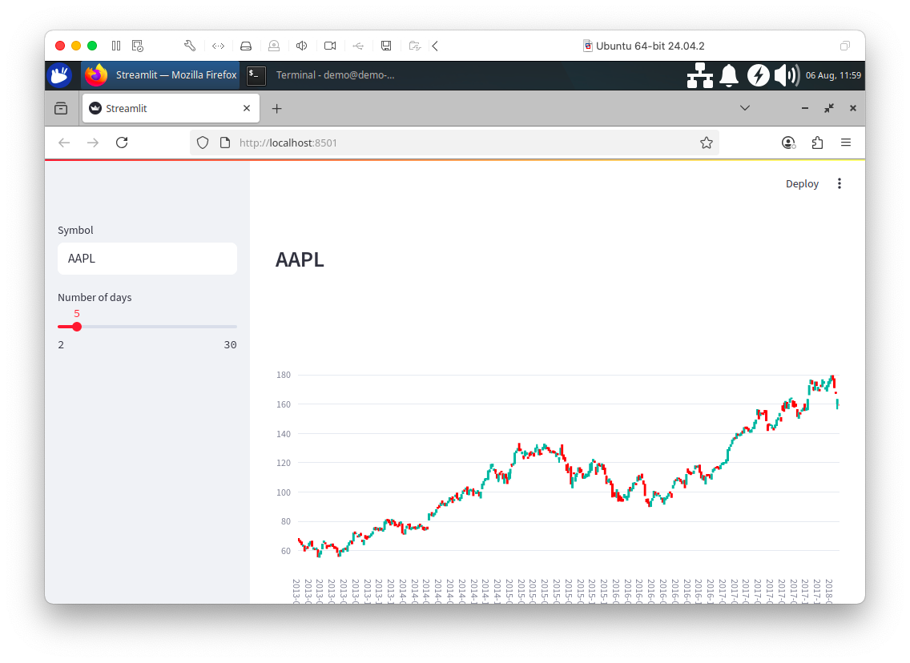
Figure 2-1. Streamlit.
On the web page, we can enter a new stock symbol in the text box and use the slider to change the number of days for TIME_BUCKET. Feel free to experiment with the code to suit your needs.
Summary
This chapter showed that SingleStore is a capable solution for working with time series data. Using the power of SQL and built-in functions, we achieved a great deal. SingleStore has extended its support for time series with the addition of FIRST, LAST and TIME_BUCKET.
Acknowledgements
I thank Dr John Pickford9 for advice and pointers to suitable time series datasets.
I am also grateful to Part Time Larry for his excellent video on Streamlit - Building Financial Dashboards with Python10 and the GitHub11 code for inspiring the Streamlit Visualization in this chapter.
-
https://martinfowler.com/bliki/PolyglotPersistence.html ↩
-
https://www.odbms.org/wp-content/uploads/2014/04/Multiple-Data-Models.pdf ↩
-
https://www.zdnet.com/article/the-nosql-database-glut-whats-the-real-price-of-the-current-boom/ ↩
-
https://www.techtarget.com/searchapparchitecture/tip/The-basics-of-polyglot-persistence-for-microservices-data ↩
-
https://www.kaggle.com/datasets/camnugent/sandp500 ↩
-
https://docs.singlestore.com/cloud/developer-resources/functional-extensions/analyzing-time-series-data/ ↩
-
https://en.wikipedia.org/wiki/Candlestick_chart ↩
-
https://docs.singlestore.com/cloud/developer-resources/functional-extensions/analyzing-time-series-data/ ↩
-
https://www.linkedin.com/in/john-pickford-50a9421/ ↩
-
https://www.youtube.com/watch?v=0ESc1bh3eIg ↩
-
https://github.com/hackingthemarkets/streamlit-dashboards ↩
Chapter 3: Geospatial Data
Introduction
In this chapter, we’ll explore how SingleStore can offer a unified approach to storing and querying alphanumeric and geospatial data. We’ll use data for London Boroughs and data for the London Underground. We’ll use these datasets to perform a series of geospatial queries to test SingleStore’s ability to work with geospatial data. We’ll also discuss an extended example using the London Underground data for a practical use case: finding the shortest path between two points in a network. Finally, we’ll create London Underground visualizations using Folium and Streamlit.
The data for London Boroughs can be downloaded from the London Datastore1. The file we’ll use is statistical-gis-boundaries-london.zip. This file is approximately 30 MB in size. The data in this file have already been converted to a format that can be used with SingleStore.
The data for the London Underground was originally sourced from the Doogal2 website maintained by Chris Bell. Two CSV files are available for download for Station data and Train line data. Other data from the website may require licensing or attribution and should be checked in the Doogal website FAQ3.
To summarize, we’ll use:
-
London Boroughs data from the London Datastore.
-
Station and Train data from Doogal.
London Boroughs Data
Convert London Boroughs Data
The zip file from the London Datastore contains two folders: ESRI and MapInfo. Inside the ESRI folder, we’re interested in the files beginning with London_Borough_Excluding_MHW. There will be various file extensions, as shown in Figure 3-1.
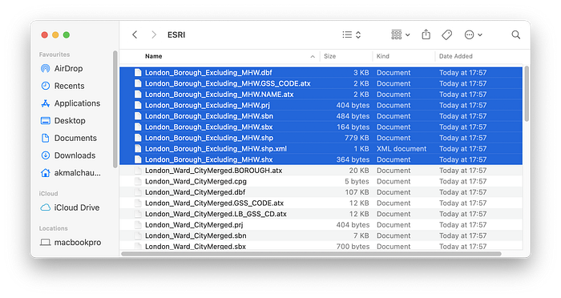
Figure 3-1. ESRI Folder.
The data in these files have been converted to the Well-Known Text (WKT)4 format for SingleStore and saved in a file called London_Borough_Excluding_MHW.csv. Any rows containing MULTIPOLYGON data have also been converted to POLYGON data.
Create the Database and London Boroughs Database Table
In the SingleStore Portal, we’ll use the SQL Editor to create a new database. Call this geo_db, as follows:
CREATE DATABASE IF NOT EXISTS geo_db;
We’ll also create a table, as follows:
USE geo_db;
DROP TABLE IF EXISTS london_boroughs;
CREATE ROWSTORE TABLE IF NOT EXISTS london_boroughs (
name VARCHAR(32),
hectares FLOAT,
geometry GEOGRAPHY,
centroid GEOGRAPHYPOINT,
INDEX(geometry)
);
SingleStore can store three main geospatial types: Polygons, Paths and Points. In the above code example, GEOGRAPHY can hold Polygon and Path data. GEOGRAPHYPOINT can hold Point data. In our example, the geometry column will contain the shape of each London Borough and centroid will contain the approximate central point of each borough. As shown above, we can store this geospatial data alongside other data types, such as VARCHAR and FLOAT.
Data loader for London Boroughs
Let’s now create a new notebook. We’ll call it data_loader_for_london_boroughs.
In a new code cell, let’s add the following code to read our CSV file:
boroughs_csv_url = ...
boroughs_df = pd.read_csv(boroughs_csv_url)
We’ll rename and drop some of the columns:
boroughs_df["geometry"] = boroughs_df["WKT"].apply(wkt.loads)
boroughs_df = boroughs_df.rename(columns = {"NAME": "name", "HECTARES": "hectares"})
boroughs_df = boroughs_df.drop(
columns = ["WKT", "GSS_CODE", "NONLD_AREA", "ONS_INNER", "SUB_2009", "SUB_2006"]
)
Next, we’ll create a GeoDataFrame and set the appropriate Coordinate Reference System (CRS), as follows:
boroughs_geo_df = gpd.GeoDataFrame(boroughs_df, geometry = "geometry")
boroughs_geo_df = boroughs_geo_df.set_crs(epsg = 4326, allow_override = True)
Now, we’ll plot a map of the London Boroughs, as follows:
map = boroughs_geo_df.plot(column = "hectares", cmap = "OrRd", legend = True)
map.set_axis_off()
This should render the image shown in Figure 3-2.
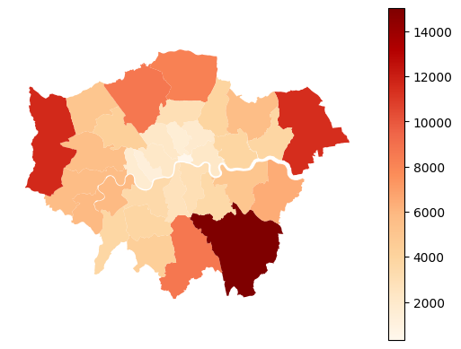
Figure 3-2. London Boroughs.
The darker the color, the greater the area of the borough.
At this point, since a map is being rendered, the following needs to be added:
“Contains National Statistics data © Crown copyright and database right [2015]” and “Contains Ordnance Survey data © Crown copyright and database right [2015]”
We’ll also add a new column that contains the centroid for each borough:
boroughs_proj = boroughs_geo_df.to_crs(27700)
boroughs_proj["centroid"] = boroughs_proj.geometry.centroid
boroughs_geo_df["centroid"] = boroughs_proj["centroid"].to_crs(4326)
Now two columns (geometry and centroid) will contain geospatial data. These two columns need to be converted back to string using wkt.dumps so that we can write the data correctly into SingleStore:
boroughs_geo_df["geometry_wkt"] = boroughs_geo_df["geometry"].apply(wkt.dumps)
boroughs_geo_df["centroid_wkt"] = boroughs_geo_df["centroid"].apply(wkt.dumps)
boroughs_geo_df = boroughs_geo_df.drop(columns = ["geometry", "centroid"])
boroughs_geo_df = boroughs_geo_df.rename(columns = {"geometry_wkt": "geometry", "centroid_wkt": "centroid"})
And now, we’ll set up the connection to SingleStore:
from sqlalchemy import *
db_connection = create_engine(connection_url)
Next, we’ll ensure that the table is empty:
with db_connection.begin() as conn:
conn.execute(text("TRUNCATE TABLE london_boroughs;"))
Finally, we are ready to write the DataFrame to SingleStore:
boroughs_geo_df.to_sql(
"london_boroughs",
con = db_connection,
if_exists = "append",
index = False,
chunksize = 1000
)
This will write the DataFrame to the table called london_boroughs in the geo_db database.
London Underground Data
Create the London Underground Database Tables
Now we’ll focus on the London Underground data. Let’s use the SQL Editor to create several database tables, as follows:
USE geo_db;
DROP TABLE IF EXISTS london_connections;
CREATE TABLE IF NOT EXISTS london_connections (
tube_line VARCHAR(100),
from_station VARCHAR(200),
to_station VARCHAR(200),
PRIMARY KEY (tube_line, from_station, to_station)
);
DROP TABLE IF EXISTS london_lines;
CREATE TABLE IF NOT EXISTS london_lines (
tube_line VARCHAR(100) PRIMARY KEY,
color CHAR(7)
);
DROP TABLE IF EXISTS london_stations;
CREATE ROWSTORE TABLE IF NOT EXISTS london_stations (
station VARCHAR(200) PRIMARY KEY,
latitude DOUBLE,
longitude DOUBLE,
zone VARCHAR(20),
geometry AS GEOGRAPHY_POINT(longitude, latitude) PERSISTED GEOGRAPHYPOINT,
INDEX(geometry)
);
DROP TABLE IF EXISTS london_tube_edges;
CREATE TABLE IF NOT EXISTS london_tube_edges (
tube_line VARCHAR(50) NOT NULL,
from_station VARCHAR(100) NOT NULL,
to_station VARCHAR(100) NOT NULL,
color VARCHAR(7) NOT NULL,
from_latitude DOUBLE NOT NULL,
from_longitude DOUBLE NOT NULL,
from_zone VARCHAR(20),
to_latitude DOUBLE NOT NULL,
to_longitude DOUBLE NOT NULL,
to_zone VARCHAR(20),
distance DOUBLE NOT NULL,
PRIMARY KEY (tube_line, from_station, to_station)
);
We have four tables. The london_connections table contains pairs of stations that are connected by a particular line.
The london_lines table lists all 11 London Underground lines along with their associated map colors. It also includes entries for the Docklands Light Railway (DLR) and Tramlink and their map colors.
The london_stations table contains information about each station, such as its latitude and longitude. As we upload the data into this table, SingleStore will create and populate the geometry column for us. This is a geospatial point consisting of longitude and latitude. This will be very useful when we want to start asking geospatial queries. We’ll make use of this feature later.
Finally, the london_tube_edges table stores the complete graph structure of the London Underground in a form that we can use for various queries, such as finding the shortest path between two stations.
Data loader for London Underground
Since we already have the CSV files in the correct format for each of the three tables, loading the data into SingleStore is easy. Let’s now create a new Python notebook. We’ll call it data_loader_for_london_underground.
In a new code cell, let’s add the following code:
lines_csv_url = ...
lines_df = pd.read_csv(lines_csv_url)
This will load the lines data. We’ll repeat this for connections:
connections_csv_url = ...
connections_df = pd.read_csv(connections_csv_url)
We’ll reduce the connections dataset so that we only keep data for lines that are mentioned in the lines data:
connections_df = connections_df[
connections_df["tube_line"].isin(lines_df["tube_line"])
]
Next, we’ll read the stations data:
stations_csv_url = ...
stations_df = pd.read_csv(stations_csv_url)
We’ll drop several columns that we don’t need:
stations_df = stations_df.drop(columns = ["os_x", "os_y", "postcode"])
and only keep stations that are in the connections:
valid_stations = set(connections_df["from_station"]).union(set(connections_df["to_station"]))
stations_df = stations_df[stations_df["station"].isin(valid_stations)]
And now, we’ll set up the connection to SingleStore:
from sqlalchemy import *
db_connection = create_engine(connection_url)
Next, we’ll ensure that the tables for data loading in this notebook are empty:
tables = ["london_lines", "london_connections", "london_stations"]
with db_connection.begin() as conn:
for table in tables:
conn.execute(text(f"TRUNCATE TABLE {table};"))
Finally, we are ready to write the DataFrames to SingleStore:
connections_df.to_sql(
"london_connections",
con = db_connection,
if_exists = "append",
index = False,
chunksize = 1000
)
This will write the DataFrame to the table called london_connections in the geo_db database. We’ll repeat this for lines:
lines_df.to_sql(
"london_lines",
con = db_connection,
if_exists = "append",
index = False,
chunksize = 1000
)
and stations:
stations_df.to_sql(
"london_stations",
con = db_connection,
if_exists = "append",
index = False,
chunksize = 1000
)
Example Queries
Now that we’ve built our system, we’ll run some queries. SingleStore supports a range of very useful functions5 for working with geospatial data. We’ll work through each of these functions with a quick example.
Area
This measures the square meter area of a Polygon.
We’ll find the area of a London Borough in square meters. In this case, we are using Merton:
SELECT ROUND(GEOGRAPHY_AREA(geometry), 0) AS sqm
FROM london_boroughs
WHERE name = "Merton";
The output should be:
+----------+
| sqm |
+----------+
| 37456562 |
+----------+
Since we also have hectares being stored for each borough, we can compare the result with the hectares and the numbers are close. It’s not a perfect match since the Polygon data for the borough is storing a limited number of points, so the calculated area will be different. If we stored more data points, the accuracy would improve.
Distance
This measures the shortest distance between two geospatial objects, in meters. The function uses the standard metric for distance on a sphere.
We’ll find how far each London Borough is from a particular Borough. In this case, we are using Merton:
SELECT b.name AS neighbor, ROUND(GEOGRAPHY_DISTANCE(a.geometry, b.geometry), 0) AS distance_from_border
FROM london_boroughs a, london_boroughs b
WHERE a.name = "Merton"
ORDER BY distance_from_border
LIMIT 10;
The output should be:
+------------------------+----------------------+
| neighbor | distance_from_border |
+------------------------+----------------------+
| Kingston upon Thames | 0 |
| Lambeth | 0 |
| Croydon | 0 |
| Merton | 0 |
| Wandsworth | 0 |
| Sutton | 0 |
| Richmond upon Thames | 552 |
| Hammersmith and Fulham | 2609 |
| Bromley | 3263 |
| Southwark | 3276 |
+------------------------+----------------------+
Length
This measures the length of a path. The path could also be the total perimeter of a Polygon. Measurement is in meters.
Here we calculate the perimeter for London Boroughs and order the result by the longest first.
SELECT name, ROUND(GEOGRAPHY_LENGTH(geometry), 0) AS perimeter
FROM london_boroughs
ORDER BY perimeter DESC
LIMIT 5;
The output should be:
+----------------------+-----------+
| name | perimeter |
+----------------------+-----------+
| Bromley | 76001 |
| Richmond upon Thames | 65102 |
| Hillingdon | 63756 |
| Havering | 63412 |
| Hounslow | 58861 |
+----------------------+-----------+
Contains
This determines if one object is entirely within another object.
In this example, we are trying to find all the stations within Merton:
SELECT b.station
FROM london_boroughs a, london_stations b
WHERE GEOGRAPHY_CONTAINS(a.geometry, b.geometry) AND a.name = "Merton"
ORDER BY station;
The output should be:
+------------------+
| station |
+------------------+
| Belgrave Walk |
| Colliers Wood |
| Dundonald Road |
| Merton Park |
| Mitcham |
| Mitcham Junction |
| Morden |
| Morden Road |
| Phipps Bridge |
| South Wimbledon |
| Wimbledon |
| Wimbledon Park |
+------------------+
Intersects and Approx Intersects
This determines whether there is any overlap between two geospatial objects. A fast approximation is also available using APPROX_GEOGRAPHY_INTERSECTS.
In this example, we are trying to determine which London Borough intersects with Morden station:
SELECT a.name
FROM london_boroughs a, london_stations b
WHERE GEOGRAPHY_INTERSECTS(b.geometry, a.geometry) AND b.station = "Morden";
The output should be:
+--------+
| name |
+--------+
| Merton |
+--------+
Within Distance
This determines whether two geospatial objects are within a certain distance of each other. Measurement is in meters.
In the following example, we try to find any London Underground stations within 150 meters of a centroid.
SELECT a.station
FROM london_stations a, london_boroughs b
WHERE GEOGRAPHY_WITHIN_DISTANCE(a.geometry, b.centroid, 150)
ORDER BY station;
The output should be:
+------------------------+
| name |
+------------------------+
| High Street Kensington |
+------------------------+
Visualization
Map of the London Underground
In our SingleStore database, we’ve stored geospatial data. We’ll use that data to create visualizations. To begin with, let’s create a graph of the London Underground network.
We’ll start by creating a new Python notebook. We’ll call it shortest_path.
First, we’ll set up the connection to SingleStore:
from sqlalchemy import *
db_connection = create_engine(connection_url)
We’ll read the data from the three London Underground tables into DataFrames:
lines_df = pd.read_sql(
"SELECT * FROM london_lines",
con = db_connection
)
connections_df = pd.read_sql(
"SELECT * FROM london_connections",
con = db_connection
)
stations_df = pd.read_sql(
"SELECT * FROM london_stations",
con = db_connection
)
Next, let’s do some data manipulation. Our goal is to produce a single table that contains all the information about the London Underground in one place.
First, we’ll merge the lines and connections DataFrames, so that we store the line color with the connections.
merged_df = connections_df.merge(
lines_df,
on = "tube_line",
how = "left"
)
Next, we’ll add the location and zone details for each “from station” by matching it with the station list. This helps us know where each station is on the map:
df1 = merged_df.merge(
stations_df[["station", "latitude", "longitude", "zone"]],
left_on = "from_station",
right_on = "station",
how = "left",
suffixes = ("", "_from")
)
Now we’ll add the location and zone details for each “to station” by matching it with the station list. Now we have the map position for both ends of each connection:
df2 = df1.merge(
stations_df[["station", "latitude", "longitude", "zone"]],
left_on = "to_station",
right_on = "station",
how = "left",
suffixes = ("", "_to")
)
We’ll drop redundant station columns:
df2 = df2.drop(columns = ["station", "station_to"])
and rename the columns for clarity:
final_df = df2.rename(columns = {
"latitude": "from_latitude",
"longitude": "from_longitude",
"zone": "from_zone",
"latitude_to": "to_latitude",
"longitude_to": "to_longitude",
"zone_to": "to_zone"
})
The next step calculates the distance (in kilometers) between each pair of connected stations using their latitude and longitude. This distance is stored in a new column. This distance measure is “as the crow flies” – the shortest path over the earth’s surface between two points. This is not the track length or travel time – it’s the straight-line distance, which is useful for graph weighting as we don’t have track length or actual travel times available in this dataset.
final_df["distance"] = final_df.apply(
lambda row: geodesic(
(row["from_latitude"], row["from_longitude"]),
(row["to_latitude"], row["to_longitude"])
).km,
axis = 1
)
Next, we’ll ensure that the table is empty:
with db_connection.begin() as conn:
conn.execute(text("TRUNCATE TABLE london_tube_edges;"))
We’ll now store the DataFrame into SingleStore for future use:
final_df.to_sql(
"london_tube_edges",
con = db_connection,
if_exists = "append",
index = False,
chunksize = 1000
)
With our data safely stored for later, let’s now create a graph of the London Underground using NetworkX:
graph = nx.from_pandas_edgelist(
final_df,
source = "from_station",
target = "to_station",
edge_attr = ["color", "distance", "tube_line"]
)
The following code creates a dictionary with station names as keys and their map positions as values, so we know where to place each station. It also makes a list of colors for each tube line to use when drawing the connections on the map:
pos = {}
for _, row in final_df.iterrows():
pos[row["from_station"]] = (row["from_longitude"], row["from_latitude"])
pos[row["to_station"]] = (row["to_longitude"], row["to_latitude"])
edge_colors = [data["color"] for _, _, data in graph.edges(data = True)]
Now we’ll create a plot, as follows:
plt.figure(figsize = (12, 12))
nx.draw(
graph,
pos = pos,
edge_color = edge_colors,
node_size = 20,
node_color = "black",
width = 3
)
plt.title("Map of the London Underground", size = 20)
lu_map = "london_underground_map.png"
plt.savefig(lu_map, dpi = 300)
plt.show()
This produces the image shown in Figure 3-3.
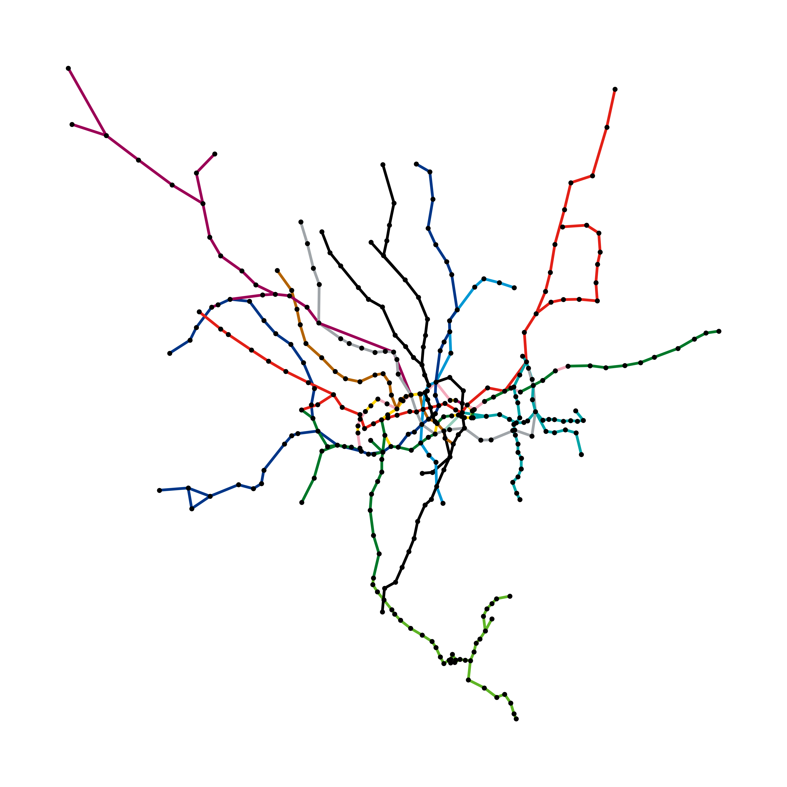
Figure 3-3. Map of the London Underground.
We’ll download the map locally:
mime_type, _ = mimetypes.guess_type(lu_map)
with open(lu_map, "rb") as f:
data = f.read()
b64 = base64.b64encode(data).decode()
href = f'<a download="{lu_map}" href="data:{mime_type};base64,{b64}">Download {lu_map}</a>'
HTML(href)
We’ll also visualize the map using Folium, as follows:
m = folium.Map(location = [51.509865, -0.118092], zoom_start = 11)
for _, row in final_df.iterrows():
coords = [
(row["from_latitude"], row["from_longitude"]),
(row["to_latitude"], row["to_longitude"])
]
folium.PolyLine(
coords,
color = row["color"] if pd.notnull(row["color"]) else "#808080",
weight = 5,
opacity = 0.7
).add_to(m)
stations_seen = set()
for _, row in final_df.iterrows():
if row["from_station"] not in stations_seen:
folium.CircleMarker(
location = (row["from_latitude"], row["from_longitude"]),
radius = 4,
color = "black",
fill = True,
fill_color = "white",
fill_opacity = 0.9,
popup = row["from_station"]
).add_to(m)
stations_seen.add(row["from_station"])
if row["to_station"] not in stations_seen:
folium.CircleMarker(
location = (row["to_latitude"], row["to_longitude"]),
radius = 4,
color = "black",
fill = True,
fill_color = "white",
fill_opacity = 0.9,
popup = row["to_station"]
).add_to(m)
stations_seen.add(row["to_station"])
lu_map_html = "lu_map.html"
m.save(lu_map_html)
We’ll download the map locally:
mime_type, _ = mimetypes.guess_type(lu_map_html)
with open(lu_map_html, "rb") as f:
data = f.read()
b64 = base64.b64encode(data).decode()
href = f'<a download="{lu_map_html}" href="data:{mime_type};base64,{b64}">Download {lu_map_html}</a>'
HTML(href)
This produces a map, as shown in Figure 3-4. We can scroll and zoom the map. When clicked, a marker will show the station name and the lines are colored according to the London Underground scheme.
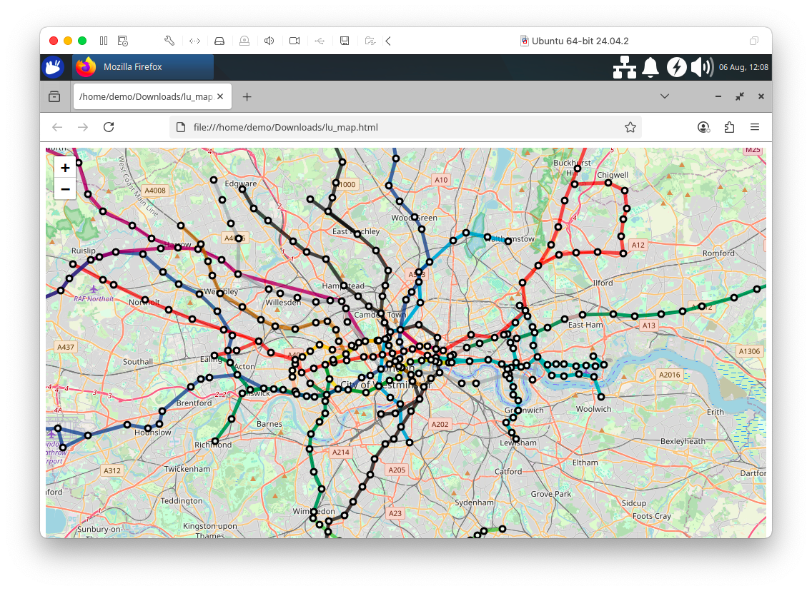
Figure 3-4. Map using Folium.
Shortest Path
We can also use the graph for more practical purposes. For example, by finding the shortest path between two stations.
We’ll use a built-in feature of NetworkX called shortest_path. First, we’ll create an empty graph and then add edges from the DataFrame:
G = nx.Graph()
for _, row in final_df.iterrows():
G.add_edge(
row["from_station"],
row["to_station"],
weight = row["distance"]
)
Here we are looking to travel from Wimbledon to South Wimbledon:
source = "Wimbledon"
target = "South Wimbledon"
shortest_path = nx.shortest_path(
G,
source = source,
target = target,
weight = "weight"
)
print("Shortest Path:", shortest_path)
The output should be:
Shortest Path: ['Wimbledon', 'Wimbledon Park', 'Southfields', 'East Putney', 'Putney Bridge', 'Parsons Green', 'Fulham Broadway', 'West Brompton', 'Earls Court', 'Gloucester Road', 'South Kensington', 'Sloane Square', 'Victoria', 'Pimlico', 'Vauxhall', 'Stockwell', 'Clapham North', 'Clapham Common', 'Clapham South', 'Balham', 'Tooting Bec', 'Tooting Broadway', 'Colliers Wood', 'South Wimbledon']
It would be quicker to walk!
We’ll also create a map using Folium, as follows:
m = folium.Map(location = [51.509865, -0.118092], zoom_start = 13)
station_coords = {}
for _, row in final_df.iterrows():
station_coords[row["from_station"]] = (row["from_latitude"], row["from_longitude"])
station_coords[row["to_station"]] = (row["to_latitude"], row["to_longitude"])
line_colors = final_df[["tube_line", "color"]].drop_duplicates().set_index("tube_line")["color"].to_dict()
for i in range(len(shortest_path) - 1):
from_station = shortest_path[i]
to_station = shortest_path[i + 1]
from_coords = station_coords[from_station]
to_coords = station_coords[to_station]
line_match = final_df[
((final_df["from_station"] == from_station) & (final_df["to_station"] == to_station)) |
((final_df["from_station"] == to_station) & (final_df["to_station"] == from_station))
]
if not line_match.empty:
tube_line = line_match.iloc[0]["tube_line"]
line_color = line_colors.get(tube_line, "blue")
else:
line_color = "blue"
folium.PolyLine(
[from_coords, to_coords],
color = line_color,
weight = 5,
opacity = 0.8
).add_to(m)
for i, station in enumerate(shortest_path):
coords = station_coords[station]
if station == source:
folium.Marker(
location = coords,
popup = f"Start: {station}",
icon = folium.Icon(color = "green")
).add_to(m)
elif station == target:
folium.Marker(
location = coords,
popup = f"End: {station}",
icon = folium.Icon(color = "red")
).add_to(m)
else:
folium.Marker(
location = coords,
popup = station,
icon = folium.Icon(icon = "train", prefix = "fa", color = "gray")
).add_to(m)
shortest_route_map_html = "shortest_route_map.html"
m.save(shortest_route_map_html)
We’ll download the map locally:
mime_type, _ = mimetypes.guess_type(shortest_route_map_html)
with open(shortest_route_map_html, "rb") as f:
data = f.read()
b64 = base64.b64encode(data).decode()
href = f'<a download="{shortest_route_map_html}" href="data:{mime_type};base64,{b64}">Download {shortest_route_map_html}</a>'
HTML(href)
This produces a map, as shown in Figure 3-5. We can scroll and zoom the map. When clicked, a marker will show the station name.
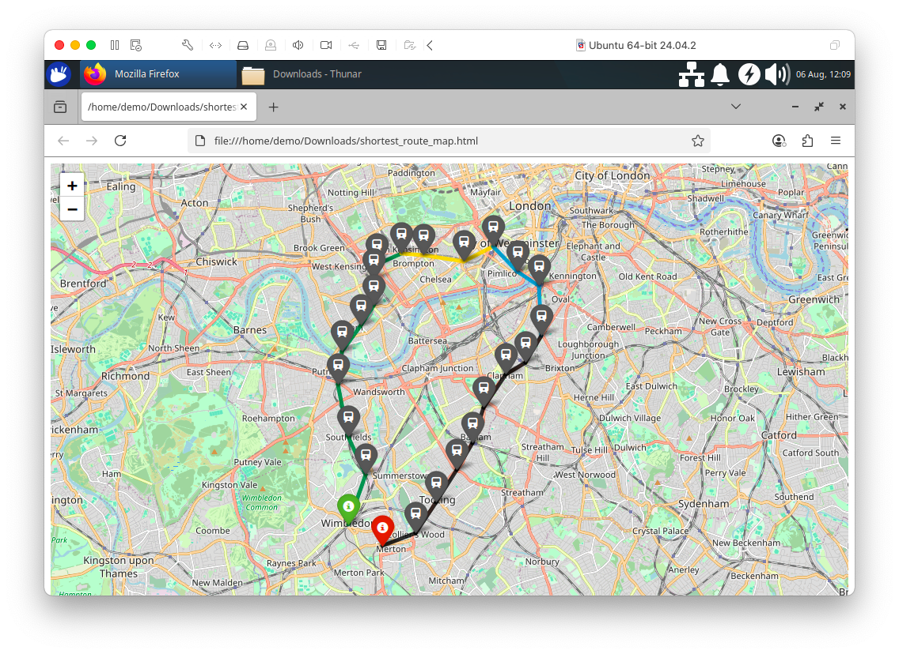
Figure 3-5. Shortest Path using Folium.
Streamlit Visualization
We’ll use Streamlit to create a small application that allows us to select start and end stations for a journey on the London Underground and the application will find the shortest path.
Install the Required Software
We need to install the required Python packages before running the project. These are listed in the requirements.txt file included on GitHub. You can install them all at once with the following command:
pip install -r requirements.txt
Note: This project has been tested with Python 3.12. Later Python versions may introduce compatibility issues with certain dependencies.
Example Application
Here is the complete code listing for streamlit_app.py:
import streamlit as st
import folium
import networkx as nx
import pandas as pd
from streamlit_folium import st_folium
conn = st.connection("singlestore", type = "sql")
query = "SELECT * FROM london_tube_edges"
edges_df = conn.query(query)
stations = sorted(set(edges_df["from_station"]) | set(edges_df["to_station"]))
st.sidebar.subheader("Select your journey")
from_station = st.sidebar.selectbox("From", stations)
to_station = st.sidebar.selectbox("To", stations)
st.subheader("Shortest Path Between Stations")
G = nx.Graph()
for _, row in edges_df.iterrows():
G.add_edge(
row["from_station"],
row["to_station"],
weight = row["distance"],
tube_line = row["tube_line"],
color = row["color"]
)
station_coords = {}
for _, row in edges_df.iterrows():
station_coords[row["from_station"]] = (row["from_latitude"], row["from_longitude"])
station_coords[row["to_station"]] = (row["to_latitude"], row["to_longitude"])
try:
shortest_path = nx.shortest_path(G, source = from_station, target = to_station, weight = "weight")
path_coords = []
for station in shortest_path:
lat, lon = station_coords[station]
path_coords.append({"station": station, "latitude": lat, "longitude": lon})
path_df = pd.DataFrame(path_coords)
m = folium.Map(location = station_coords[from_station], zoom_start = 13)
sw = path_df[["latitude", "longitude"]].min().values.tolist()
ne = path_df[["latitude", "longitude"]].max().values.tolist()
m.fit_bounds([sw, ne])
for i in range(len(shortest_path) - 1):
s1 = shortest_path[i]
s2 = shortest_path[i + 1]
coord1 = station_coords[s1]
coord2 = station_coords[s2]
edge_data = G.get_edge_data(s1, s2)
color = edge_data.get("color", "blue") if edge_data else "blue"
folium.PolyLine(
locations = [coord1, coord2],
color = color,
weight = 5,
opacity = 0.8
).add_to(m)
for i, row in path_df.iterrows():
if row["station"] == from_station:
folium.Marker(
location = [row["latitude"], row["longitude"]],
popup = f"Start: {row['station']}",
icon = folium.Icon(color = "green")
).add_to(m)
elif row["station"] == to_station:
folium.Marker(
location = [row["latitude"], row["longitude"]],
popup = f"End: {row['station']}",
icon = folium.Icon(color = "red")
).add_to(m)
else:
folium.Marker(
location = [row["latitude"], row["longitude"]],
popup = row["station"],
icon = folium.Icon(icon = "train", prefix = "fa", color = "gray")
).add_to(m)
st_folium(m, width = 725)
st.sidebar.write("Your Journey", path_df["station"])
except nx.NetworkXNoPath:
st.error("No path found between the selected stations.")
Create a Secrets File
Our local Streamlit application will read secrets from a file called .streamlit/secrets.toml in our applications root directory. We need to create this file as follows:
# .streamlit/secrets.toml
[connections.singlestore]
dialect = "mysql"
host = "<host>"
port = 3306
database = "geo_db"
username = "admin"
password = "<password>"
The <host> and <password> should be replaced with the values obtained from the SingleStore Portal.
Run the Code
We’ll run the Streamlit application as follows:
streamlit run streamlit_app.py
The output in a web browser should look like Figure 3-6.
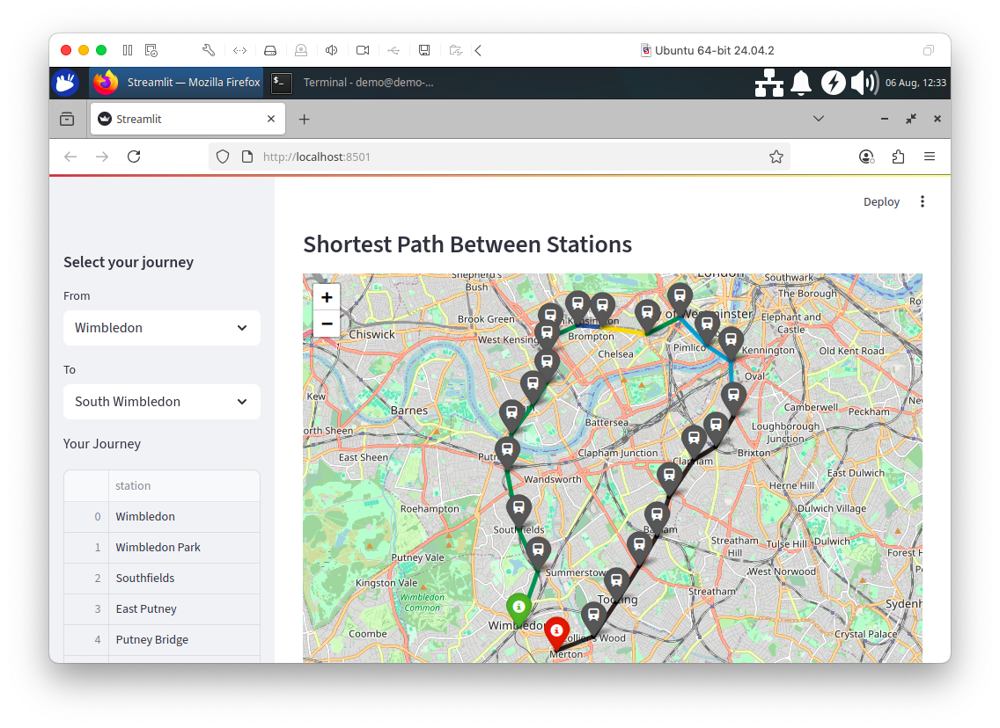
Figure 3-6. Shortest Path.
Feel free to experiment with the code to suit your needs.
Summary
In this chapter, we’ve seen a range of very powerful geospatial functions supported by SingleStore. Through examples, we’ve seen these functions working over our geospatial data. We’ve also seen how we can create graph structures and query those through various libraries. These libraries, combined with SingleStore, enable modeling and querying of graph structures with ease.
There are several improvements that we could make:
-
Add additional connection information about the transport network. For example, some stations may not be directly connected but may be within a short walking distance, such as Wimbledon and South Wimbledon.
-
Our rendering of the various London Underground lines could also be improved since any route served by multiple lines only shows one of the lines.
-
It would be beneficial to extend our code to include real-time updates to the transport network to allow for delays and better route planning.
-
https://data.london.gov.uk/dataset/statistical-gis-boundary-files-london/ ↩
-
https://www.doogal.co.uk/london_stations ↩
-
https://www.doogal.co.uk/PostcodeFAQ ↩
-
https://en.wikipedia.org/wiki/Well-known_text_representation_of_geometry ↩
-
https://docs.singlestore.com/cloud/developer-resources/functional-extensions/working-with-geospatial-features/ ↩
Chapter 4: JSON Data
Introduction
In this chapter, we’ll discuss SingleStore’s support for JavaScript Object Notation (JSON) data. JSON is a popular data format today and can be extremely useful for applications that need to capture information about objects that may vary in their attributes. JSON would be particularly useful for applications such as e-commerce or a library, where we may be storing a range of products that have quite different characteristics from each other. We’ll look at some examples of this shortly.
We’ll build a small inventory system to manage a library’s collection of books, journals and multimedia materials. This example is inspired by an excellent tutorial by Noman Ur Rehman available on DigitalOcean1. We’ll see that it is effortless to store, retrieve and query JSON data using SingleStore. We’ll also build a quick visual front-end to our inventory system using Laravel and PHP.
Create the Database and Tables
In the SingleStore Portal, let’s use the SQL Editor to create a new database. Call this library_db, as follows:
CREATE DATABASE IF NOT EXISTS library_db;
We’ll also create several tables, as follows:
USE library_db;
DROP TABLE IF EXISTS authors;
CREATE TABLE IF NOT EXISTS authors (
id INT PRIMARY KEY,
name VARCHAR(100),
nationality VARCHAR(50)
);
DROP TABLE IF EXISTS publishers;
CREATE TABLE IF NOT EXISTS publishers (
id INT PRIMARY KEY,
name VARCHAR(100),
location VARCHAR(100)
);
DROP TABLE IF EXISTS items;
CREATE TABLE IF NOT EXISTS items (
id INT PRIMARY KEY,
title VARCHAR(200),
item_type VARCHAR(50),
publisher_id INT,
metadata JSON NOT NULL
);
There is a one-to-many (1:m) relationship between publishers and items, where each publisher can produce multiple books, journals or multimedia content. The schema uses a flexible metadata column to store item-specific attributes in JSON format. By using NOT NULL on the column, SingleStore will raise an error if there is an attempt to store invalid JSON.
Populate Database Tables
Let’s now populate the tables. First, the authors table:
INSERT INTO authors (id, name, nationality) VALUES
(1, 'Clara Penrose', 'British'),
(2, 'Dmitri Ivanov', 'Russian'),
(3, 'Mei-Ling Zhang', 'Chinese');
Next, the publishers table:
INSERT INTO publishers (id, name, location) VALUES
(1, 'Aurora Press', 'London, UK'),
(2, 'Maple Leaf Publishing', 'Toronto, Canada'),
(3, 'Lotus House', 'Beijing, China');
Finally, the items table:
Books
First, let’s load the data for Books:
-- Books (flat JSON)
INSERT INTO items (id, title, item_type, publisher_id, metadata) VALUES
(1, 'The Quantum Garden', 'book', 1, '{"isbn": "978-0-123456-47-2", "pages": 320, "language": "English", "author_id": 1}'),
(2, 'Empire of Winds', 'book', 2, '{"isbn": "978-1-234567-89-3", "pages": 290, "language": "English", "author_id": 2}'),
(3, 'Pathways to Silk', 'book', 3, '{"isbn": "978-9-876543-21-0", "pages": 350, "language": "Chinese", "author_id": 3}'),
(4, 'Under Northern Lights', 'book', 1, '{"isbn": "978-0-111222-33-4", "pages": 400, "language": "English", "author_id": 1}'),
(5, 'Siberian Dreams', 'book', 2, '{"isbn": "978-8-765432-10-9", "pages": 275, "language": "Russian", "author_id": 2}');
We have no nested documents or arrays but a flat JSON structure. For example:
{
"isbn": "978-0-123456-47-2",
"pages": 320,
"language": "English",
"author_id": 1
}
Journals
Next, let’s load the data for Journals:
-- Journals (JSON with array of article titles)
INSERT INTO items (id, title, item_type, publisher_id, metadata) VALUES
(6, 'Journal of Advanced Robotics - Vol 12', 'journal', 2,
'{"volume": 12, "year": 2022, "editor": "Dr. Helen Moritz", "articles": [
"Autonomous Drones in Urban Spaces",
"Swarm Intelligence in Rescue Missions",
"Adaptive Control in Humanoid Robots",
"Robot Learning from Demonstration"
]}'),
(7, 'Neuroscience Frontier - Issue 8', 'journal', 1,
'{"volume": 8, "year": 2023, "editor": "Prof. Alan Greene", "articles": [
"Neural Plasticity in Adults"
]}'),
(8, 'Cultural History Review - Q3 Edition', 'journal', 3,
'{"volume": 21, "year": 2023, "editor": "Dr. Olivia Chen", "articles": [
"Myth & Memory in East Asia",
"Oral Traditions and Digital Preservation",
"Historical Narratives in Postcolonial Societies"
]}'),
(9, 'GreenTech Journal - April', 'journal', 2,
'{"volume": 9, "year": 2022, "editor": "Samuel Takahashi", "articles": [
"Vertical Farming Breakthroughs",
"Sustainable Batteries for Grid Storage",
"AI in Climate Modeling",
"Smart Irrigation Systems",
"Eco-Friendly Construction Materials"
]}'),
(10, 'Modern Linguistics Digest - Spring', 'journal', 1,
'{"volume": 6, "year": 2023, "editor": "Dr. Sara König", "articles": [
"Semantic Drift in Digital Age",
"Code-Switching Patterns in Bilingual Youth"
]}');
We have an array structure for article titles. For example:
{
"volume": 12,
"year": 2022,
"editor": "Dr. Helen Moritz",
"articles": [
"Autonomous Drones in Urban Spaces",
"Swarm Intelligence in Rescue Missions",
"Adaptive Control in Humanoid Robots",
"Robot Learning from Demonstration"
]
}
Multimedia
Finally, let’s load the data for Multimedia:
-- Multimedia (JSON with nested contributor)
INSERT INTO items (id, title, item_type, publisher_id, metadata) VALUES
(11, 'Ocean Deep - A Documentary', 'multimedia', 3,
'{"format": "DVD", "duration_min": 92, "language": "English",
"contributors": {
"narrator": "David Stone",
"director": "Lisa Wong",
"editor": "James Patel"
}
}'),
(12, 'Symphony No. 9 Performance', 'multimedia', 1,
'{"format": "Blu-Ray", "duration_min": 78, "language": "German",
"contributors": {
"conductor": "Klaus Berger",
"violinist": "Maria Rossi"
}
}'),
(13, 'Machine Learning Explained', 'multimedia', 2,
'{"format": "MP4", "duration_min": 60, "language": "English",
"contributors": {
"presenter": "Anna Dupont",
"animator": "John Kim",
"scriptwriter": "Elena Grant"
}
}'),
(14, 'The Story of Silk Road', 'multimedia', 3,
'{"format": "DVD", "duration_min": 85, "language": "Mandarin",
"contributors": {
"host": "Ming Zhao",
"director": "Yuki Nakamura",
"translator": "Akira Tanaka",
"composer": "Minji Park"
}
}'),
(15, 'Astrophysics Today', 'multimedia', 2,
'{"format": "Blu-Ray", "duration_min": 70, "language": "English",
"contributors": {
"presenter": "Neil Quinn",
"editor": "Farah Idris",
"consultant": "Liam Becker"
}
}');
We have nested contributors. For example:
{
"format": "DVD",
"duration_min": 92,
"language": "English",
"contributors": {
"narrator": "David Stone",
"director": "Lisa Wong",
"editor": "James Patel"
}
}
From these examples, we can see that we may need to store our JSON data in various ways and the structure of the data may vary depending upon the attributes we wish to store. SingleStore can handle these different requirements and comes with a wide range of JSON functions2 that can help.
Example Queries
Now that our data are safely inside SingleStore, let’s look at ways to query that data.
First, let’s see what SingleStore returns for the metadata column using JSON_GET_TYPE:
SELECT JSON_GET_TYPE(metadata)
FROM items;
The result should be:
+-------------------------+
| JSON_GET_TYPE(metadata) |
+-------------------------+
| object |
| object |
| object |
| object |
| object |
| object |
| object |
| object |
| object |
| object |
| object |
| object |
| object |
| object |
| object |
+-------------------------+
All the rows are JSON objects.
Now let’s select all books and extract the ISBN and language from metadata:
SELECT
id,
title,
metadata::$isbn AS isbn,
metadata::$language AS language
FROM items
WHERE item_type = 'book'
ORDER BY id;
Notice that we can use the double-colon (::) to specify a path to the specific attribute that we’re interested in. Example output:
+----+-----------------------+-------------------+----------+
| id | title | isbn | language |
+----+-----------------------+-------------------+----------+
| 1 | The Quantum Garden | 978-0-123456-47-2 | English |
| 2 | Empire of Winds | 978-1-234567-89-3 | English |
| 3 | Pathways to Silk | 978-9-876543-21-0 | Chinese |
| 4 | Under Northern Lights | 978-0-111222-33-4 | English |
| 5 | Siberian Dreams | 978-8-765432-10-9 | Russian |
+----+-----------------------+-------------------+----------+
Next, let’s get all journals, showing the editor and the number of articles:
SELECT
id,
title,
metadata::$editor AS editor,
JSON_LENGTH(metadata::$articles) AS article_count
FROM items
WHERE item_type = 'journal';
Example output:
+----+---------------------------------------+-------------------+---------------+
| id | title | editor | article_count |
+----+---------------------------------------+-------------------+---------------+
| 6 | Journal of Advanced Robotics - Vol 12 | Dr. Helen Moritz | 4 |
| 9 | GreenTech Journal - April | Samuel Takahashi | 5 |
| 7 | Neuroscience Frontier - Issue 8 | Prof. Alan Greene | 1 |
| 8 | Cultural History Review - Q3 Edition | Dr. Olivia Chen | 3 |
| 10 | Modern Linguistics Digest - Spring | Dr. Sara König | 2 |
+----+---------------------------------------+-------------------+---------------+
Next, let’s query multimedia items and get contributors as JSON objects. We’ll limit the output to avoid word-wrap:
SELECT
SUBSTRING(metadata::$contributors, 1, 60) AS contributors
FROM items
WHERE item_type = 'multimedia';
Example output:
+--------------------------------------------------------------+
| contributors |
+--------------------------------------------------------------+
| {"consultant":"Liam Becker","editor":"Farah Idris","presente |
| {"conductor":"Klaus Berger","violinist":"Maria Rossi"} |
| {"director":"Lisa Wong","editor":"James Patel","narrator":"D |
| {"composer":"Minji Park","director":"Yuki Nakamura","host":" |
| {"animator":"John Kim","presenter":"Anna Dupont","scriptwrit |
+--------------------------------------------------------------+
We’ll now join books with authors by author_id extracted from the JSON metadata:
SELECT
b.id,
b.title,
a.name AS author_name,
a.nationality
FROM items b
JOIN authors a ON a.id = CAST(b.metadata::$author_id AS SIGNED)
WHERE b.item_type = 'book';
Example output:
+----+-----------------------+----------------+-------------+
| id | title | author_name | nationality |
+----+-----------------------+----------------+-------------+
| 3 | Pathways to Silk | Mei-Ling Zhang | Chinese |
| 1 | The Quantum Garden | Clara Penrose | British |
| 5 | Siberian Dreams | Dmitri Ivanov | Russian |
| 2 | Empire of Winds | Dmitri Ivanov | Russian |
| 4 | Under Northern Lights | Clara Penrose | British |
+----+-----------------------+----------------+-------------+
Let’s now search journals where any article title contains “AI”:
SELECT
i.id,
i.title,
i.metadata::$editor AS editor,
a.table_col AS article
FROM items AS i
JOIN TABLE(JSON_TO_ARRAY(i.metadata::articles)) AS a
WHERE i.item_type = 'journal' AND a.table_col LIKE '%AI%';
Example output:
+----+---------------------------+------------------+--------------------------+
| id | title | editor | article |
+----+---------------------------+------------------+--------------------------+
| 9 | GreenTech Journal - April | Samuel Takahashi | "AI in Climate Modeling" |
+----+---------------------------+------------------+--------------------------+
Now, we’ll add a new JSON field called edition to a book’s metadata:
UPDATE items
SET metadata::$edition = 'Second'
WHERE id = 1 AND item_type = 'book';
To check that this was added correctly, we can run the following:
SELECT metadata::edition
FROM items
WHERE id = 1 AND item_type = 'book';
Example output:
+-------------------+
| metadata::edition |
+-------------------+
| "Second" |
+-------------------+
Finally, let’s remove the language field from a book’s metadata:
UPDATE items
SET metadata = JSON_DELETE_KEY(metadata, 'language')
WHERE id = 1 AND item_type = 'book';
To check that this was correctly removed, we can run the following:
SELECT metadata::language
FROM items
WHERE id = 1 AND item_type = 'book';
Example output:
+--------------------+
| metadata::language |
+--------------------+
| NULL |
+--------------------+
SingleStore supports an extensive set of functions3 that can be used with JSON data.
Visualization using Laravel and PHP
Running the commands in the previous sections using the SQL Editor in our SingleStore Portal account is a great way to test our code and quickly view the results. However, we can go a step further and build a simple web interface that allows us to see the data and perform some data management operations. In this first application development iteration, we’ll focus on Read, Update and Delete operations.
We’ll delete the existing database and recreate it to have the original dataset.
Install the Required Software
We’ll build our web interface using Laravel and PHP. Before continuing, ensure that the following software is installed on your system:
- PHP 8.2 or later
- The PHP XML extension
- A MySQL-compatible PHP database driver
- Composer
Note: This project has been tested with PHP 8.2 and Composer 2.x on Linux.
The installation process varies depending on your operating system. Linux users can typically install these packages using their distribution’s package manager, as follows:
sudo apt update
sudo add-apt-repository ppa:ondrej/php
sudo apt update
sudo apt install php8.2-cli php8.2-xml php8.2-mysql
macOS and Windows users should follow the installation instructions provided by their preferred package management tools or installers.
Your environment may also need other packages.
To install Composer, we’ll follow the instructions on the download page4. On Linux, we’ll move Composer to the bin directory:
sudo mv composer.phar /usr/local/bin/composer
Next, we’ll create a project called e-library, as follows:
composer create-project laravel/laravel e-library
and then change to the project directory:
cd e-library
Note: If you downloaded or cloned the completed project from the book’s GitHub repository, extract the archive, open a terminal in the project directory and install the dependencies:
- composer install
- php artisan key:generate
We’ll now edit the .env file in the e-library directory:
DB_CONNECTION=mysql
DB_HOST=<host>
DB_PORT=3306
DB_DATABASE=library_db
DB_USERNAME="admin"
DB_PASSWORD="<password>"
SESSION_DRIVER=file
The <host> and <password> should be replaced with the values obtained from the SingleStore Portal when creating a cluster. Note also the use of double-quotes (“) for DB_USERNAME and DB_PASSWORD. We’ll also ensure that SESSION_DRIVER is set to file, as shown.
Note: If you downloaded or cloned the completed project from the book’s GitHub repository, the following files have already been created and you can skip this step.
Create Files
The following commands are only required when starting from a clean Laravel installation:
php artisan make:model -a Author
php artisan make:model -a Publisher
php artisan make:model -a Item
For each of Author, Publisher and Item, we obtain:
-
A migration in
database/migrations -
A model in
app/Models -
A controller in
app/Http/Controllers -
A seeder in
database/seeders
Migrations (database/migrations)
We’ll edit the Author migration file, so that we have the following:
public function up(): void
{
Schema::create('authors', function (Blueprint $table) {
$table->id();
$table->string('name');
$table->string('nationality');
$table->timestamps();
});
}
the Publisher migration file, so that we have the following:
public function up(): void
{
Schema::create('publishers', function (Blueprint $table) {
$table->id();
$table->string('name');
$table->string('location');
$table->timestamps();
});
}
and the Product migration file, so that we have the following:
public function up(): void
{
Schema::create('items', function (Blueprint $table) {
$table->id();
$table->string('title');
$table->string('item_type');
$table->unsignedInteger('publisher_id');
$table->json('metadata');
$table->timestamps();
});
}
Models (app/Models)
We’ll edit the Publisher model file, so that we have the 1:m relationship with Item:
class Publisher extends Model
{
/** @use HasFactory<\Database\Factories\PublisherFactory> */
use HasFactory;
// A publisher has many items
public function items()
{
return $this->hasMany('Item');
}
}
and the Item model file so that we can access the JSON data by casting the attributes to an array and create the relationship with Publisher:
class Item extends Model
{
/** @use HasFactory<\Database\Factories\ItemFactory> */
use HasFactory;
public $timestamps = false;
// Cast metadata JSON to array
protected $casts = [
'metadata' => 'array'
];
// Each item has a publisher
public function publisher()
{
return $this->belongsTo('Publisher');
}
protected $fillable = ['title', 'item_type', 'publisher_id', 'metadata'];
}
Controllers (app/Http/Controllers)
For the the web application, let’s focus on the ItemController. At the top of the file, we’ll add the following:
use App\Models\Author;
use App\Models\Publisher;
use App\Models\Item;
use Illuminate\Http\Request;
index()
We need to retrieve all the item data for the items index page and ensure that we have each item’s publisher name. This will require joins across the respective tables. We’ll also control the output by showing just five records per page using simplePaginate().
public function index()
{
$items = Item::select('items.*', 'publishers.name as publisher_name')
->join('publishers', 'publishers.id', '=', 'items.publisher_id')
->orderBy('items.id')
->simplePaginate(5);
return view('admin.index', compact('items'));
}
show()
To show a single item, we’ll perform a query similar to the query for index() but we’ll use first() to get an individual item record.
public function show(Item $item)
{
$one_item = Item::select('items.*', 'publishers.name as publisher_name')
->join('publishers', 'publishers.id', '=', 'items.publisher_id')
->where('items.id', $item->id)
->first();
return view('admin.show', compact('one_item'));
}
edit()
To edit an existing item, we’ll need to find the item to edit and we’ll also need to get all the publishers to be offered in a drop-down menu if the user wishes to change this item attribute.
public function edit($id)
{
$item = Item::findOrFail($id);
$publishers = Publisher::orderBy('id')->get();
return view('admin.edit', compact('item', 'publishers'));
}
update()
We’ll allow updates to the item name, publisher and the JSON attributes in this first application development iteration.
public function update(Request $request, $id)
{
$item = Item::findOrFail($id);
$item->title = $request->input('title');
$item->item_type = $request->input('item_type');
$item->publisher_id = $request->input('publisher_id');
$metadata = $request->input('metadata', []);
foreach ($metadata as $key => &$value) {
// Only decode if the value is a JSON string (array/dictionary format)
if (is_string($value) && (str_starts_with($value, '{') || str_starts_with($value, '['))) {
$decodedValue = json_decode($value, true);
// Check if decoding was successful, else retain original string
$value = json_last_error() === JSON_ERROR_NONE ? $decodedValue : $value;
}
}
// Assign the processed attributes back to the item
$item->metadata = $metadata;
$item->save();
return redirect()->route('items.index')->with('success', 'Item updated successfully');
}
destroy()
We can remove an item very easily by just using delete().
public function destroy($id)
{
$item = Item::findOrFail($id);
$item->delete();
return redirect('/items')->with('success', 'Item has been deleted');
}
Routes (routes/web.php)
In the web.php file in the routes directory, we’ll add the following at the top:
use App\Http\Controllers\AuthorController;
use App\Http\Controllers\PublisherController;
use App\Http\Controllers\ItemController;
and this code further down:
Route::resource(
'authors',
AuthorController::class
);
Route::resource(
'publishers',
PublisherController::class
);
Route::resource(
'items',
ItemsController::class
);
Views (resources/views/admin)
The three blade files for the index page, show page and edit page can be found on GitHub. In those files, there will be code for formatting the data using HTML, presentation and editing using PHP. Also, from the GitHub repo we’ll copy the index.blade.php file to resources/views.
Run the Code
We’ll run the application from the e-library directory, as follows:
php artisan serve
In a web browser, we’ll enter the following:
http://localhost:8000/items
The output should be similar to Figure 4-1:
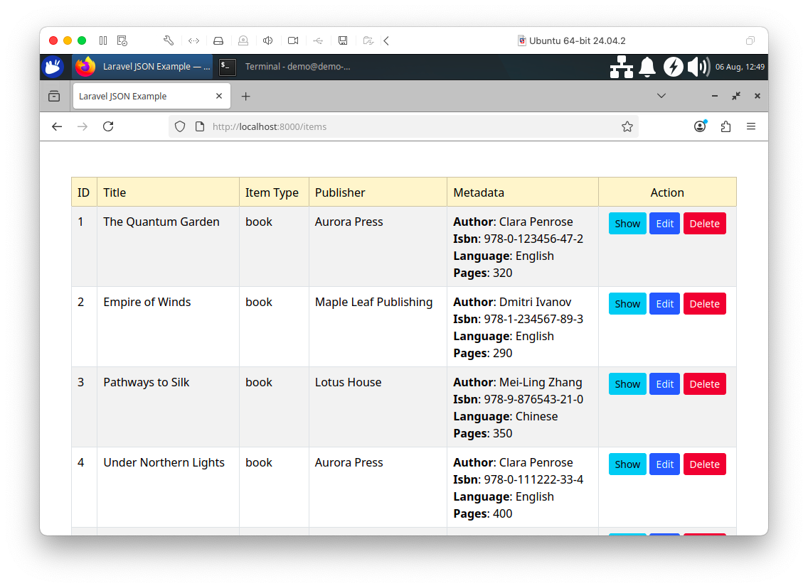
Figure 4-1. Index Page.
We can see the Items data correctly displayed for each item. The metadata is in JSON format. If we select Show, we can view the details about an item on a single page, as shown in Figure 4-2.
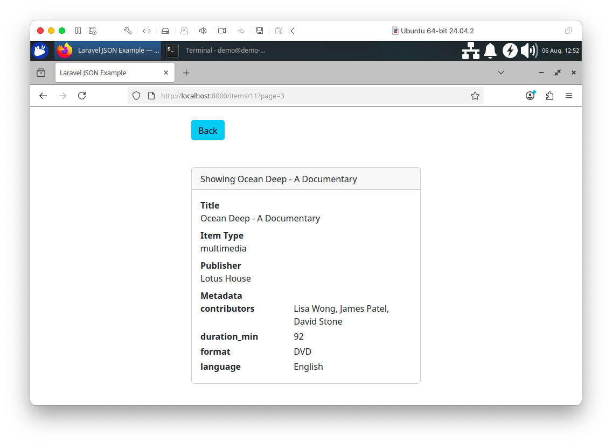
Figure 4-2. Show Individual Item.
From the index page, if we select Edit, we can edit an item, as shown in Figure 4-3.
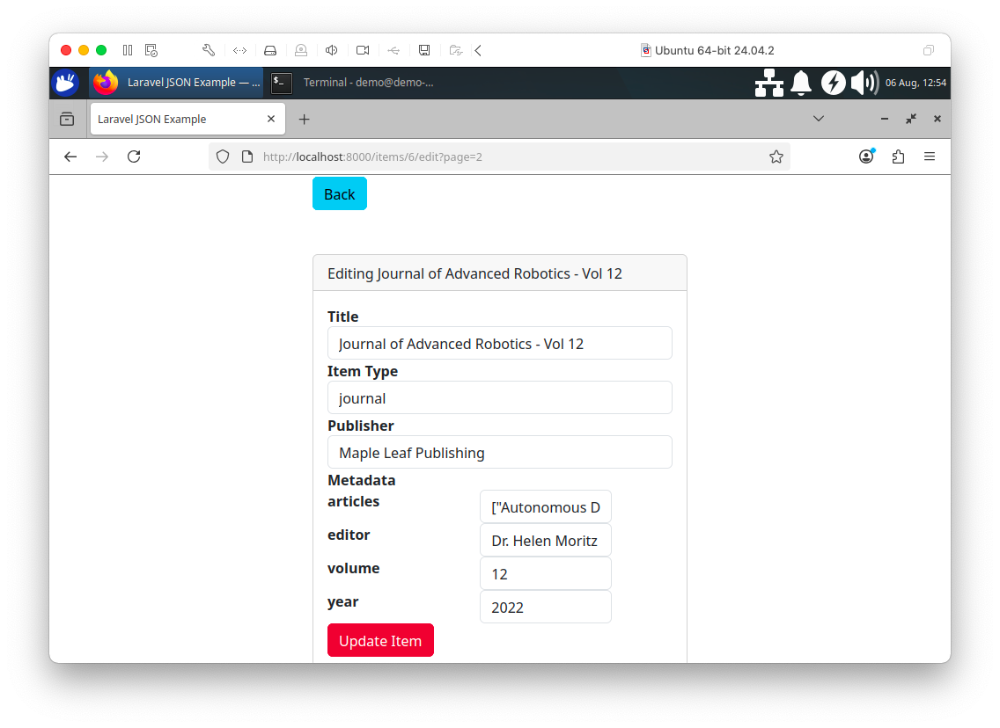
Figure 4-3. Edit Item.
Many fields, including the JSON data, can be fully edited.
Note: This example does not enforce strict data type validation for the JSON input. Additional client-side logic would be needed to ensure the integrity and correctness of the JSON structure.
Finally, if we select Delete from the index page, we can remove an item from the database. In Figure 4-4, an item has been deleted. We can confirm this by checking SingleStore using the SQL Editor in the Portal:
SELECT COUNT(*) FROM items;
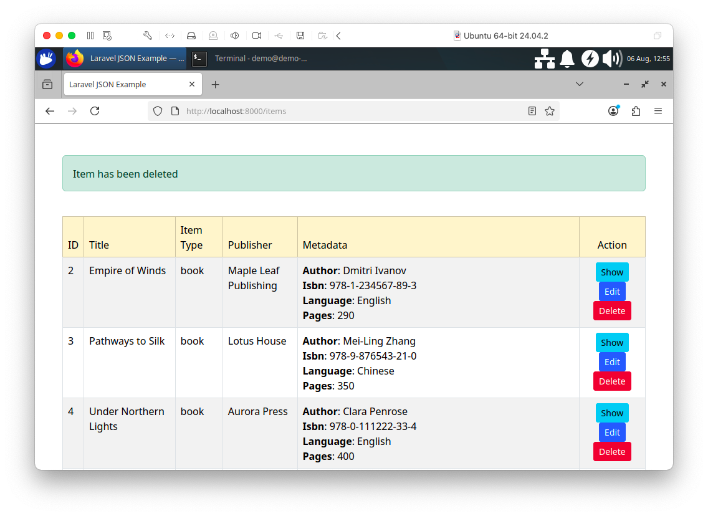
Figure 4-4. Delete Item.
Summary
In this chapter, we’ve seen that SingleStore can manage JSON data of varying complexity with ease. It supports a wide range of functions that can be used with JSON data and we have used a number of these functions in this chapter. Furthermore, we’ve seen that we can use SQL queries that combine operations on both Relational and JSON data. Finally, we’ve built a simple web interface to our database system using Laravel and PHP that enabled us to explore the data and make some modifications.
-
https://www.digitalocean.com/community/tutorials/working-with-json-in-mysql ↩
-
https://docs.singlestore.com/cloud/reference/sql-reference/json-functions/ ↩
-
https://docs.singlestore.com/cloud/reference/sql-reference/json-functions/ ↩
-
https://getcomposer.org/download/ ↩
Chapter 5: Full-Text Index and Search
Introduction
In this chapter, we’ll explore SingleStore’s support for Full-Text Index and Search.
There is a wide range of use cases where we may want to perform keyword searches on text. Examples include newspaper articles, journal articles, restaurant reviews, lodging reviews, etc. The requirements for these use cases would consist of the ability to:
-
Store and search a, potentially, large body of text.
-
Return query results based upon relevancy.
SingleStore can support these requirements by:
CHAR,VARCHAR,TEXTorLONGTEXTdata types.
To keep our focus on the database features rather than on sourcing and cleaning real-world data, we’ll work with a synthetically generated dataset that represents the structure of academic journal articles.
Each record in this dataset includes:
-
A unique identifier for the article.
-
A DOI (Digital Object Identifier).
-
A title that resembles those found in peer-reviewed publications.
-
A list of authors formatted in a conventional academic style.
-
Institutional affiliations.
-
The journal name.
-
The publication date.
-
An abstract summarizing the article in concise, academic-style language.
-
A body containing several paragraphs of realistic, topic-consistent text.
-
References.
The content is entirely artificial, created using text-generation techniques, yet follows the style and tone of actual research papers. This ensures we can demonstrate realistic search and indexing scenarios while avoiding copyright or licensing restrictions. We’ll store these journal articles in SingleStore, create a FULLTEXT index and then perform some queries using the full-text capabilities of SingleStore.
Create the Database and Table
In the SingleStore Portal, let’s use the SQL Editor to create a new database. Call this fulltext_db, as follows:
CREATE DATABASE IF NOT EXISTS fulltext_db;
We’ll also create the articles table, as follows:
USE fulltext_db;
DROP TABLE IF EXISTS articles;
CREATE TABLE IF NOT EXISTS articles (
id VARCHAR(50) NOT NULL PRIMARY KEY,
doi VARCHAR(100),
title VARCHAR(500),
authors TEXT,
affiliations TEXT,
journal VARCHAR(255),
pub_date DATE,
abstract TEXT,
body LONGTEXT,
refs LONGTEXT,
FULLTEXT USING VERSION 2(title, abstract, body)
);
The article contents are stored in the body column using LONGTEXT. We also create an index on the title, abstract and body columns using FULLTEXT. Stopwords are ignored as they occur very frequently. SingleStore’s default list of stopwords is as follows:
a, an, and, are, as, at, be, but, by, for, if, in, into, is, it, no, not, of, on, or, such, that, the, their, then, there, these, they, this, to, was, will, with
Fill out the Notebook
Let’s now create a new Python notebook. We’ll call it data_loader_for_fulltext.
We’ll create a new DataFrame, as follows:
articles_csv_url = ...
articles_df = pd.read_csv(articles_csv_url)
This reads the CSV file and creates a DataFrame called articles_df. The CSV file contains 10,000 synthetically generated journal articles.
We are now ready to write the DataFrame to SingleStore. First, we’ll create a connection:
from sqlalchemy import *
db_connection = create_engine(connection_url)
Next, we’ll ensure that the table is empty:
with db_connection.begin() as conn:
conn.execute(text("TRUNCATE TABLE articles;"))
Then we’ll write the DataFrame to SingleStore:
articles_df.to_sql(
"articles",
con = db_connection,
if_exists = "append",
index = False,
chunksize = 1000
)
This will write the DataFrame to the articles table in the fulltext_db database.
Next, we’ll run the following command from the SQL Editor:
OPTIMIZE TABLE articles FLUSH;
When inserting new rows, SingleStore may delay updating the full-text index until later, so running OPTIMIZE TABLE <table_name> FLUSH makes the new data searchable immediately.
Example Queries
Now that we have built our system, we can run some queries. SingleStore supports two main functions for use with full-text:
-
MATCH: Returns a relevance score based on the BM25 algorithm. The score is always greater than or equal to 0 and higher scores indicate a better match. -
BM25: Calculates a BM25 relevance score for the specified search terms. UnlikeMATCH, which works at the segment level, BM25 produces more consistent scoring at the partition level.
Let’s see some examples of these functions.
First, let’s find all journal articles where the body contains the word machine.
SELECT title
FROM articles
WHERE MATCH(TABLE articles) AGAINST ('body:machine')
LIMIT 5;
Example output:
+--------------------------------------------------------------------------------------+
| title |
+--------------------------------------------------------------------------------------+
| A comparative analysis of random forests and classical methods for materials science |
| Scalable approaches to epidemiology using a Bayesian approach |
| Scalable approaches to machine learning using unsupervised pretraining |
| Scalable approaches to bioinformatics using unsupervised pretraining |
| Assessing the impact of a novel regularization scheme on natural language processing |
+--------------------------------------------------------------------------------------+
Next, let’s find articles that contain the exact phrase neural network anywhere in the title, as follows:
SELECT title
FROM articles
WHERE MATCH(TABLE articles) AGAINST ('title:"neural networks"')
LIMIT 5;
Example output:
+---------------------------------------------------------------------------------------------+
| title |
+---------------------------------------------------------------------------------------------+
| A comparative analysis of graph neural networks and classical methods for genomics |
| Scalable approaches to robotics using graph neural networks |
| Towards better materials science: a graph neural networks for materials science |
| A comparative analysis of graph neural networks and classical methods for synthetic biology |
| A comparative analysis of graph neural networks and classical methods for epidemiology |
+---------------------------------------------------------------------------------------------+
Next, let’s try a wildcard search in the article title. The * is the wildcard and will match anything that starts with immun, such as immune, immunology and immunization:
SELECT title
FROM articles
WHERE MATCH(TABLE articles) AGAINST ('title:immun*')
LIMIT 5;
Example output:
+---------------------------------------------------------------------------------------+
| title |
+---------------------------------------------------------------------------------------+
| A comparative analysis of reinforcement learning and classical methods for immunology |
| Towards better immunology: a a multi-modal encoder for immunology |
| Understanding immunology through reinforcement learning |
| Assessing the impact of reinforcement learning on immunology |
| Improving immunology: methods and applications |
+---------------------------------------------------------------------------------------+
In the following query, we’ll use a Boolean AND along with a wildcard to look for any articles that have the word machine and anything that starts with learn in the abstract, as follows:
SELECT SUBSTRING(title, 1, 60) AS title
FROM articles
WHERE MATCH(TABLE articles) AGAINST ('abstract:machine AND abstract:learn*')
LIMIT 5;
Example output:
+--------------------------------------------------------------+
| title |
+--------------------------------------------------------------+
| A comparative analysis of finite element analysis and classi |
| Assessing the impact of reinforcement learning on climate mo |
| A comparative analysis of Monte Carlo simulation and classic |
| A comparative analysis of finite element analysis and classi |
| A comparative analysis of CRISPR-Cas9 editing and classical |
+--------------------------------------------------------------+
Next, something a little more complex. We’ll search for articles where the body contains a word starting with data, but doesn’t contain any word starting with sens:
SELECT SUBSTRING(title, 1, 60) AS title
FROM articles
WHERE MATCH (TABLE articles) AGAINST ('body:(+data*) AND NOT body:sens*')
LIMIT 5;
Example output:
+--------------------------------------------------------------+
| title |
+--------------------------------------------------------------+
| Assessing the impact of a novel regularization scheme on qua |
| Scalable approaches to synthetic biology using unsupervised |
| Towards better materials science: a graph neural networks fo |
| Improving deep learning: methods and applications |
| Improving machine learning: methods and applications |
+--------------------------------------------------------------+
The ~ character can also be used for fuzzy searches. Here is an example where we use the British English spelling for modelling and look for any matches where there is a 1-character change, addition or deletion. This is useful for catching typos, alternate spellings or small differences in wording:
SELECT SUBSTRING(title, 1, 60) AS title
FROM articles
WHERE MATCH (TABLE articles) AGAINST ('title:modelling~1')
LIMIT 5;
Example output:
+--------------------------------------------------------------+
| title |
+--------------------------------------------------------------+
| Understanding climate modeling through a multi-modal encoder |
| A comparative analysis of a multi-modal encoder and classica |
| Improving climate modeling: methods and applications |
| A comparative analysis of CRISPR-Cas9 editing and classical |
| A comparative analysis of a convolutional neural network and |
+--------------------------------------------------------------+
Let’s now look at some examples of BM25. First, a query to find articles whose body text is most relevant to the word science and show their relevance scores:
SELECT SUBSTRING(title, 1, 60) AS title, ROUND(BM25(articles,'body:science'), 4) AS score
FROM articles
WHERE BM25(articles,'body:science')
ORDER BY score DESC
LIMIT 5;
Example output:
+--------------------------------------------------------------+--------+
| title | score |
+--------------------------------------------------------------+--------+
| Understanding computer vision through CRISPR-Cas9 editing | 1.1970 |
| Understanding cancer biology through a Bayesian approach | 1.1613 |
| Towards better immunology: a unsupervised pretraining for im | 1.1591 |
| Scalable approaches to deep learning using unsupervised pret | 1.1468 |
| Assessing the impact of CRISPR-Cas9 editing on synthetic bio | 1.1434 |
+--------------------------------------------------------------+--------+
We can also use Boolean operators with BM25. Here we are searching for articles where the word machine appears in either the title or the body, ranked by relevance:
SELECT SUBSTRING(title, 1, 60) AS title, ROUND(BM25(articles,'title:machine OR body:machine'), 4) AS score
FROM articles
WHERE BM25(articles,'title:machine OR body:machine')
ORDER BY score DESC
LIMIT 5;
Example output:
+--------------------------------------------------------------+--------+
| title | score |
+--------------------------------------------------------------+--------+
| Towards better machine learning: a unsupervised pretraining | 2.6486 |
| Towards better machine learning: a random forests for machin | 2.6309 |
| Towards better machine learning: a reinforcement learning fo | 2.5842 |
| Towards better machine learning: a unsupervised pretraining | 2.5698 |
| Towards better machine learning: a Monte Carlo simulation fo | 2.5352 |
+--------------------------------------------------------------+--------+
Summary
In this chapter, we explored the powerful full-text search capabilities built into SingleStore, enabling efficient and flexible text-based queries. We focused on two primary functions: MATCH and BM25.
MATCH allows us to perform natural language searches and phrase matching with support for logical operators like AND, OR, NOT and proximity searches. It also supports both single-character (?) and multi-character (*) wildcard searches, making it easy to find partial matches or variations of search terms within specific columns.
BM25, on the other hand, provides a robust ranking algorithm that scores the relevance of each record based on how well the text matches the search terms, allowing us to sort results by their importance or relevance to the query.
We also covered how to target specific fields within our data for more precise searching and how to combine multiple fields in queries.
Chapter 6: Vector Data
Introduction
There are many forms of information that don’t fit neatly into traditional rows and columns. For example, images, audio and video are all unstructured data forms that carry meaning, but can’t be directly compared with integers or strings in a database table. Vector data is the bridge between the richness of the real-world and the precision of computational search and analysis.
In this chapter, we’ll explore what vectors are, how they’re created and why they’re becoming one of the most important building blocks in modern data systems.
A vector is simply an ordered list of numbers but, in the context of machine learning and AI, those numbers represent a position in a high-dimensional space. For example, a 28 by 28 pixel grayscale image of a boot can be transformed (flattened) into a one-dimensional array of 784 pixel values. Similarly, a sentence can be converted into an embedding array that captures its meaning. Once in vector form, the similarity between two pieces of data can be measured using mathematical distances, such as the Euclidean distance.
As of the time of writing this chapter, SingleStore directly supported two functions to determine similarity: DOT_PRODUCT and EUCLIDEAN_DISTANCE. These can also be written using the shorthand operators <*> and <->, respectively.
Dot Product
The dot product measures how much two vectors (arrows) point in the same direction. If they point exactly the same way, the dot product will be large and positive. If they point in completely opposite directions, it will be negative. If they are at a right angle (orthogonal), the dot product will be zero. In many similarity search applications, vectors are also normalized.
Euclidean Distance
Euclidean distance measures the straight-line distance between two points, like using a ruler. If we have two points on a piece of paper, the Euclidean distance tells us exactly how far apart they are, as if we connected them with a straight line. In vector search, smaller distances indicate greater similarity. When vectors are normalized to unit length, this distance ranges from 0 for identical vectors to a maximum of 2 for vectors pointing in exactly opposite directions.
In this chapter, we’ll:
-
Learn how to transform images into vectors.
-
Store vector data in SingleStore.
-
Explore indexing methods like Approximate Nearest Neighbor (ANN) that make searches scale to millions of vectors.
-
Visualize data to gain intuition.
By the end, we’ll see how unstructured data can be represented, searched and analyzed just as easily as traditional tabular data, opening the door to AI-powered search.
In this chapter, we’ll use the Fashion-MNIST1 dataset from Zalando. This dataset, released under the MIT License and available for commercial use, contains 70,000 labeled images of clothing items. It’s perfect for an introduction to vector search, as each grayscale image can be represented as a vector, making it both realistic and computationally manageable. The vectors in this dataset are naturally occurring, meaning the numerical values are directly derived from the image pixels. In later chapters, we’ll explore how to generate vectors from other types of data, such as text, enabling us to apply vector search more broadly.
Create the Database and Tables
In the SingleStore Portal, let’s use the SQL Editor to create a new database. Call this vector_db, as follows:
CREATE DATABASE IF NOT EXISTS vector_db;
We’ll use sklearn.datasets to load the fashion_mnist dataset. This provides the dataset in train and test parts, so we’ll create two tables to mirror this, as follows:
USE vector_db;
DROP TABLE IF EXISTS train_data;
CREATE TABLE IF NOT EXISTS train_data (
id INT PRIMARY KEY,
vector VECTOR(784),
label VARCHAR(20)
);
DROP TABLE IF EXISTS test_data;
CREATE TABLE IF NOT EXISTS test_data (
id INT PRIMARY KEY,
vector VECTOR(784),
label VARCHAR(20)
);
Note the use of the VECTOR data type. We set its value to 784 because each image is 28 by 28 pixels and flattening the image into a one-dimensional array results in 784 values. Historically, SingleStore supported storing vectors for many years, but these were stored using the BLOB data type. With SingleStore version 8.5, the new native VECTOR type was introduced along with vector indexing capabilities, offering more efficient and robust support for vector data.
Fill out the Notebook
Let’s now create a new Python notebook. We’ll call it data_loader_for_vector.
First, we’ll load the dataset:
fashion = fetch_openml(name = "Fashion-MNIST", version = 1, as_frame = False)
X, y = fashion.data, fashion.target.astype(np.uint8)
train_images, test_images = X[:60000].reshape(-1, 28, 28), X[60000:].reshape(-1, 28, 28)
train_labels, test_labels = y[:60000], y[60000:]
If we check the data, as follows:
print("train_images: " + str(train_images.shape))
print("train_labels: " + str(train_labels.shape))
print("test_images: " + str(test_images.shape))
print("test_labels: " + str(test_labels.shape))
we’ll see that we have 60,000 train images and labels and 10,000 test images and labels:
train_images: (60000, 28, 28)
train_labels: (60000,)
test_images: (10000, 28, 28)
test_labels: (10000,)
We’ll print the first train image:
print(train_images[0])
Example output:
[[ 0 0 0 0 0 0 0 0 0 0 0 0 0 0 0 0 0 0 0 0 0 0 0 0 0 0 0 0]
[ 0 0 0 0 0 0 0 0 0 0 0 0 0 0 0 0 0 0 0 0 0 0 0 0 0 0 0 0]
[ 0 0 0 0 0 0 0 0 0 0 0 0 0 0 0 0 0 0 0 0 0 0 0 0 0 0 0 0]
[ 0 0 0 0 0 0 0 0 0 0 0 0 1 0 0 13 73 0 0 1 4 0 0 0 0 1 1 0]
[ 0 0 0 0 0 0 0 0 0 0 0 0 3 0 36 136 127 62 54 0 0 0 1 3 4 0 0 3]
[ 0 0 0 0 0 0 0 0 0 0 0 0 6 0 102 204 176 134 144 123 23 0 0 0 0 12 10 0]
[ 0 0 0 0 0 0 0 0 0 0 0 0 0 0 155 236 207 178 107 156 161 109 64 23 77 130 72 15]
[ 0 0 0 0 0 0 0 0 0 0 0 1 0 69 207 223 218 216 216 163 127 121 122 146 141 88 172 66]
[ 0 0 0 0 0 0 0 0 0 1 1 1 0 200 232 232 233 229 223 223 215 213 164 127 123 196 229 0]
[ 0 0 0 0 0 0 0 0 0 0 0 0 0 183 225 216 223 228 235 227 224 222 224 221 223 245 173 0]
[ 0 0 0 0 0 0 0 0 0 0 0 0 0 193 228 218 213 198 180 212 210 211 213 223 220 243 202 0]
[ 0 0 0 0 0 0 0 0 0 1 3 0 12 219 220 212 218 192 169 227 208 218 224 212 226 197 209 52]
[ 0 0 0 0 0 0 0 0 0 0 6 0 99 244 222 220 218 203 198 221 215 213 222 220 245 119 167 56]
[ 0 0 0 0 0 0 0 0 0 4 0 0 55 236 228 230 228 240 232 213 218 223 234 217 217 209 92 0]
[ 0 0 1 4 6 7 2 0 0 0 0 0 237 226 217 223 222 219 222 221 216 223 229 215 218 255 77 0]
[ 0 3 0 0 0 0 0 0 0 62 145 204 228 207 213 221 218 208 211 218 224 223 219 215 224 244 159 0]
[ 0 0 0 0 18 44 82 107 189 228 220 222 217 226 200 205 211 230 224 234 176 188 250 248 233 238 215 0]
[ 0 57 187 208 224 221 224 208 204 214 208 209 200 159 245 193 206 223 255 255 221 234 221 211 220 232 246 0]
[ 3 202 228 224 221 211 211 214 205 205 205 220 240 80 150 255 229 221 188 154 191 210 204 209 222 228 225 0]
[ 98 233 198 210 222 229 229 234 249 220 194 215 217 241 65 73 106 117 168 219 221 215 217 223 223 224 229 29]
[ 75 204 212 204 193 205 211 225 216 185 197 206 198 213 240 195 227 245 239 223 218 212 209 222 220 221 230 67]
[ 48 203 183 194 213 197 185 190 194 192 202 214 219 221 220 236 225 216 199 206 186 181 177 172 181 205 206 115]
[ 0 122 219 193 179 171 183 196 204 210 213 207 211 210 200 196 194 191 195 191 198 192 176 156 167 177 210 92]
[ 0 0 74 189 212 191 175 172 175 181 185 188 189 188 193 198 204 209 210 210 211 188 188 194 192 216 170 0]
[ 2 0 0 0 66 200 222 237 239 242 246 243 244 221 220 193 191 179 182 182 181 176 166 168 99 58 0 0]
[ 0 0 0 0 0 0 0 40 61 44 72 41 35 0 0 0 0 0 0 0 0 0 0 0 0 0 0 0]
[ 0 0 0 0 0 0 0 0 0 0 0 0 0 0 0 0 0 0 0 0 0 0 0 0 0 0 0 0]
[ 0 0 0 0 0 0 0 0 0 0 0 0 0 0 0 0 0 0 0 0 0 0 0 0 0 0 0 0]]
We can see the outline of an ankle boot.
If we print the corresponding label:
print(train_labels[0])
It outputs the value 9.
We’ll map the numeric values to actual label values, using the following:
classes = [
"t_shirt_top",
"trouser",
"pullover",
"dress",
"coat",
"sandal",
"shirt",
"sneaker",
"bag",
"ankle_boot"
]
Plotting the image, as follows:
ax = plt.subplot(1, 1, 1)
plt.imshow(
train_images[0],
cmap = plt.cm.binary
)
ax.set_title(classes[train_labels[0]])
gives us the output shown in Figure 6-1.
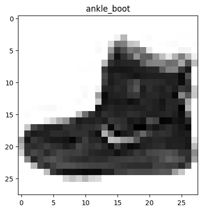
Figure 6-1. ankle_boot.
Let’s render some more images, using the following code:
num_classes = len(classes)
for i in range(num_classes):
ax = plt.subplot(2, 5, i + 1)
plt.imshow(
np.column_stack(train_images[i].reshape(1, 28, 28)),
cmap = plt.cm.binary
)
plt.axis("off")
ax.set_title(classes[train_labels[i]])
which gives us the output shown in Figure 6-2.
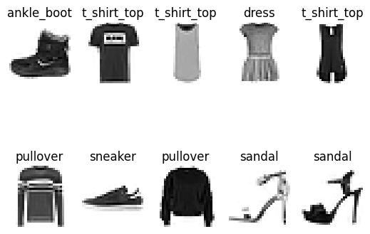
Figure 6-2. 10 images.
We’ll now ensure the values are numeric for storing in SingleStore and normalize the pixel values between 0 and 1, as follows:
train_images = train_images.astype("float32") / 255.0
test_images = test_images.astype("float32") / 255.0
and reduce the train and test images to one-dimensional arrays, as follows:
train_images = train_images.reshape((train_images.shape[0], -1))
test_images = test_images.reshape((test_images.shape[0], -1))
Checking the train and test images:
print("train_images: " + str(train_images.shape))
print("test_images: " + str(test_images.shape))
gives us the following output:
train_images: (60000, 784)
test_images: (10000, 784)
Next, we’ll creates two Pandas DataFrames called train_df and test_df, where each row contains a unique ID, the flattened image vector and the human-readable label (from classes) for each image in the training and test datasets:
train_df = pd.DataFrame({
"id": np.arange(len(train_images)),
"vector": list(train_images),
"label": [classes[label] for label in train_labels]
})
test_df = pd.DataFrame({
"id": np.arange(len(test_images)),
"vector": list(test_images),
"label": [classes[label] for label in test_labels]
})
A quick check for train_df:
train_df.head()
Example output:
id vector label
0 0 [0.0, 0.0, 0.0, 0.0, 0.0, 0.0, 0.0, 0.0, 0.0, ... ankle_boot
1 1 [0.0, 0.0, 0.0, 0.0, 0.0, 0.003921569, 0.0, 0.... t_shirt_top
2 2 [0.0, 0.0, 0.0, 0.0, 0.0, 0.0, 0.0, 0.0, 0.0, ... t_shirt_top
3 3 [0.0, 0.0, 0.0, 0.0, 0.0, 0.0, 0.0, 0.0, 0.129... dress
4 4 [0.0, 0.0, 0.0, 0.0, 0.0, 0.0, 0.0, 0.0, 0.0, ... t_shirt_top
Similarly for test_df:
test_df.head()
Example output:
id vector label
0 0 [0.0, 0.0, 0.0, 0.0, 0.0, 0.0, 0.0, 0.0, 0.0, ... ankle_boot
1 1 [0.0, 0.0, 0.0, 0.0, 0.0, 0.0, 0.0, 0.0, 0.0, ... pullover
2 2 [0.0, 0.0, 0.0, 0.0, 0.0, 0.0, 0.0, 0.0, 0.003... trouser
3 3 [0.0, 0.0, 0.0, 0.0, 0.0, 0.0, 0.0, 0.0, 0.0, ... trouser
4 4 [0.0, 0.0, 0.0, 0.007843138, 0.0, 0.003921569,... shirt
We’re now ready to write the data to SingleStore.
First, we’ll set up the connection to SingleStore:
from sqlalchemy import *
db_connection = create_engine(connection_url)
Next, we’ll ensure that the tables are empty:
tables = ["train_data", "test_data"]
with db_connection.begin() as conn:
for table in tables:
conn.execute(text(f"TRUNCATE TABLE {table};"))
Finally, we are ready to write the DataFrames to SingleStore:
train_df.to_sql(
"train_data",
con = db_connection,
if_exists = "append",
index = False,
chunksize = 1000
)
test_df.to_sql(
"test_data",
con = db_connection,
if_exists = "append",
index = False,
chunksize = 1000
)
Now that our flattened and normalized image vectors are stored in SingleStore, let’s take a quick look at how they cluster together in vector space. We’ll use t-SNE to project all 60,000 train images into two dimensions, revealing how similar items group together. t-SNE is a dimensionality reduction technique that preserves the structure of the data by keeping similar points close together in a lower-dimensional space. It’s useful for visualizing clusters or groups of similar data points.
First, we’ll encode categorical labels as integers for model compatibility:
label_encoder = LabelEncoder()
y_encoded = label_encoder.fit_transform(train_labels)
Next, we’ll apply t-SNE to all 60,000 train images. This may take a few minutes to complete.
print("Starting t-SNE, this may take a few minutes ...")
start_time = time()
tsne = TSNE(
n_components = 2,
random_state = 42,
method = "barnes_hut",
perplexity = 30,
max_iter = 1000
)
X_tsne = tsne.fit_transform(train_images)
print(f"t-SNE completed in {time() - start_time:.2f} seconds.")
Finally, we’ll render the image, as follows:
tsne_df = pd.DataFrame(X_tsne, columns = ["x", "y"])
tsne_df["label"] = y_encoded
tsne_df["class_name"] = [classes[i] for i in y_encoded]
fig_fmnist_tsne = px.scatter(
tsne_df,
x = "x",
y = "y",
render_mode = "webgl",
color = "class_name",
labels = {"class_name": "Classes"},
title = "t-SNE Visualization of Zalando Fashion MNIST"
)
fig_fmnist_tsne.update_layout(width = 700, height = 700)
fig_fmnist_tsne.show()
This will render the image shown in Figure 6-3.
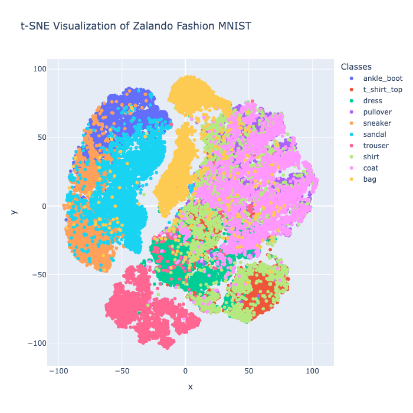
Figure 6-3. t-SNE Visualization of Zalando Fashion MNIST.
The t-SNE visualization shows that many clothing categories form clearly separated clusters, demonstrating that the embeddings effectively capture distinguishing features between different types of clothing items. For example, items like trousers and sneakers are generally grouped in their own regions. However, we also see areas where clusters overlap or are less well-defined, such as between similar upper-body clothing items like shirts, pullovers and coats. This overlap suggests that the model’s embeddings may sometimes struggle to perfectly differentiate between visually similar items, which could lead to misclassifications when performing similarity searches or tasks like image retrieval.
Example Queries
Before running any queries, we’ll create vector indexes on the two tables. The vector indexes enable efficient similarity searches on the vector columns.
ALTER TABLE train_data ADD VECTOR INDEX (vector)
INDEX_OPTIONS '{
"index_type": "HNSW_FLAT",
"metric_type": "EUCLIDEAN_DISTANCE",
"M": 16,
"efConstruction": 200
}';
ALTER TABLE test_data ADD VECTOR INDEX (vector)
INDEX_OPTIONS '{
"index_type": "HNSW_FLAT",
"metric_type": "EUCLIDEAN_DISTANCE",
"M": 16,
"efConstruction": 200
}';
INDEX_OPTIONS is a JSON string specifying how the vector index should be built and searched. These are the options used:
-
“
index_type”: “HNSW_FLAT” specifies the index algorithm.HNSW(Hierarchical Navigable Small World) is a popular graph-based approximate nearest neighbor search method. TheFLATvariant means it stores all vectors without compression, trading some memory for accuracy. -
“
metric_type”: “EUCLIDEAN_DISTANCE” is the distance metric used to compare vectors. -
“
M”:16is a parameter controlling the number of bi-directional links created for each node in the HNSW graph. Larger M increases recall and accuracy but also increases memory usage and index build time. -
“
efConstruction”:200controls the size of the dynamic candidate list during index construction. Higher values lead to better index quality but slower build time.
There are many other parameters and configuration options.
Now, let’s try a few SQL queries.
First, a nearest neighbor search on the training data with index using ORDER BY and LIMIT:
SELECT label, vector <-> (
SELECT vector FROM train_data WHERE id = 30000
) AS distance
FROM train_data
ORDER BY distance
LIMIT 5;
Example output:
+-------+--------------------+
| label | distance |
+-------+--------------------+
| dress | 0 |
| dress | 2.2373813064889543 |
| dress | 2.4021264947177023 |
| dress | 2.5632904508333136 |
| dress | 2.60825593445559 |
+-------+--------------------+
The query returns the five clothing items in the training dataset whose images are most similar to the item with ID 30000 (a dress). The closest match is the item itself, with a distance of zero. The next four items are also dresses, with increasing distances indicating decreasing similarity. This shows that the vector search effectively groups similar clothing items together based on their image features.
Next, a nearest neighbor search on the testing data with index using ORDER BY and LIMIT:
SELECT label, vector <-> (
SELECT vector FROM test_data WHERE id = 500
) AS distance
FROM test_data
ORDER BY distance
LIMIT 5;
Example output:
+-------------+--------------------+
| label | distance |
+-------------+--------------------+
| pullover | 0 |
| pullover | 5.0162904482136845 |
| shirt | 5.489347371984442 |
| t_shirt_top | 5.5393541525605885 |
| pullover | 5.565037523607559 |
+-------------+--------------------+
The query finds the five items in the test dataset most similar to the item with ID 500 (a pullover). The closest match is the item itself with a distance of zero. The next closest items include other pullovers, as well as related upper-body clothing like shirts and t-shirts, with gradually increasing distances. Three of the five items were correctly identified.
Next, we perform a cross-table similarity search:
SELECT label, vector <-> (
SELECT vector FROM train_data WHERE id = 30000
) AS distance
FROM test_data
ORDER BY distance
LIMIT 5;
Example output:
+-------+--------------------+
| label | distance |
+-------+--------------------+
| dress | 2.5419237184041434 |
| dress | 2.931686655149546 |
| dress | 3.010232323586964 |
| dress | 3.06381446499747 |
| dress | 3.2260806853107016 |
+-------+--------------------+
The query searches the test data table for the five items most similar to the item with ID 30000 (a dress) in the train data table. All five closest matches are dresses. This shows the vector representations effectively generalize across datasets, identifying visually similar items even between separate training and testing sets.
Using EXPLAIN can show the query plan:
EXPLAIN
SELECT label, vector <-> (
SELECT vector FROM train_data WHERE id = 30000
) AS distance
FROM train_data
ORDER BY distance
LIMIT 5;
Partial example output:
"ColumnStoreFilter [INTERNAL_VECTOR_SEARCH(0, ( SELECT remote_1.vector AS `vector` FROM ( SELECT train_data_1.vector AS `vector` FROM `vector_db`.`train_data` as `train_data_1` WHERE train_data_1.id = 30000 ) AS `remote_1` /*!90623 OPTION(NO_QUERY_REWRITE=1, INTERPRETER_MODE=INTERPRET_FIRST, CLIENT_FOUND_ROWS=1)*/ ), 5, '', 0) index]"
The INTERNAL_VECTOR_SEARCH(...) index shows that an internal vector index is being used for the nearest neighbor search. The vector being searched is the one selected by the subquery (SELECT train_data_1.vector ... WHERE id=30000).
Summary
In this chapter, we explored how vector embeddings and similarity search were used to analyze and retrieve visually related items in the Zalando Fashion-MNIST dataset. We started by preprocessing the image data into normalized, flattened vectors suitable for efficient indexing and querying in SingleStore. We then created vector indexes using the HNSW algorithm with Euclidean distance, which enabled fast approximate nearest neighbor searches.
To better understand the data distribution, we used t-SNE for dimensionality reduction and visualized the embedding clusters. This revealed distinct groupings for many clothing categories alongside some overlapping regions, indicating possible challenges in classification. Using vector similarity queries, we demonstrated nearest neighbor searches within both training and test datasets, confirming the model’s ability to retrieve semantically related items with good accuracy. Finally, we performed cross-dataset similarity searches, showing that the vector representations generalized across different data partitions.
-
https://github.com/zalandoresearch/fashion-mnist ↩
Chapter 7: Apache Spark
Introduction
SingleStore integrates seamlessly with a variety of big data tools and services, including Apache Spark. In this chapter, we’ll explore how easy it is to work with Spark in the SingleStore Cloud environment. Through examples, we’ll walk through installing and using Spark, then demonstrate how to read from and write to a SingleStore database using the SingleStore Spark Connector. All the examples are standalone and can, therefore, be run independent of each other.
Simple Spark Example
Let’s start with a very simple example where we just install Spark and create a small DataFrame with several values. We’ll create a new notebook called spark_demo.
First, we’ll create a SparkSession:
spark = (
SparkSession.builder
.appName("Spark Demo")
.master("local[*]")
.getOrCreate()
)
Next, we’ll create a new DataFrame with 3 rows and 2 columns:
data = [("Peter", 27), ("Paul", 28), ("Mary", 29)]
df = spark.createDataFrame(data, ["Name", "Age"])
and we’ll check the DataFrame:
df.show()
Example output:
+-----+---+
| Name|Age|
+-----+---+
|Peter| 27|
| Paul| 28|
| Mary| 29|
+-----+---+
Finally, we’ll stop Spark:
spark.stop()
From this simple example, we see that it is very easy to install the necessary tools and libraries and to configure and run a small Spark instance in the SingleStore Cloud.
Fraud Detection Example
Let’s now build a machine learning model for credit card fraud detection using Apache Spark. The data come from the Credit Card Fraud Detection dataset created by the Machine Learning Group (MLG) at Université Libre de Bruxelles (ULB). The dataset is distributed under the Open Database License (ODbL) v1.0 and the Database Contents License (DbCL) v1.0. A copy of the dataset is included in the companion GitHub repository and the original distribution is available from Kaggle1.
The data are anonymized credit card transactions containing genuine and fraudulent cases.
The transactions occurred over two days during September 2013 and the dataset includes a total of 284,807 transactions, of which 492 are fraudulent representing just 0.173% of the total.
This dataset, therefore, presents some challenges for analysis as it is highly unbalanced.
The dataset consists of the following fields:
-
Time: The number of seconds elapsed between a transaction and the first transaction in the dataset.
-
V1 to V28: Details not available due to confidentiality reasons.
-
Amount: The monetary value of the transaction.
-
Class: The response variable (0 = no fraud, 1 = fraud).
One method to prepare the data for analysis is to keep all the fraudulent transactions and randomly sample 1% of the non-fraudulent transactions without replacement. The data would be sorted on the Time column. We’ll use this approach in this example. However, many other approaches are also possible.
We’ll collect and report on the following metrics:
| Predicted Genuine (0) | Predicted Fraudulent (1) | |
|---|---|---|
| Actual Genuine (0) | True Negative (TN) | False Positive (FP) |
| Actual Fraudulent (1) | False Negative (FN) | True Positive (TP) |
-
Accuracy = (TP + TN) / (TP + TN + FP + FN)
-
Precision = TP / (TP + FP)
-
Recall = TP / (TP + FN)
-
F1 Score = 2 * (Precision * Recall) / (Precision + Recall)
Where,
-
Accuracy: The proportion of all instances that were classified correctly.
-
Precision: Of all transactions predicted as fraudulent, how many were actually fraudulent?
-
Recall: Of all truly fraudulent transactions, how many did the model detect?
-
F1 Score: The harmonic mean of precision and recall, providing a single measure that balances both.
We’ll create a new notebook called fraud_detection.
First, we’ll read the dataset:
creditcard_csv_url = ...
creditcard_df = pd.read_csv(creditcard_csv_url)
If we check the shape:
creditcard_df.shape[0]
we’ll see that it is 284807.
Checking the DataFrame:
creditcard_df.groupby("Class").size()
gives us:
Class
0 284315
1 492
dtype: int64
So, we have 284315 genuine transactions and 492 fraudulent transactions in the dataset.
We’ll now reduce the dataset, as follows:
SEED = 42
sampled_df = pd.concat([
creditcard_df[creditcard_df["Class"] == 1],
creditcard_df[creditcard_df["Class"] == 0].sample(frac = 0.01, random_state = SEED)
]).sort_values("Time").reset_index(drop = True)
Checking the DataFrame:
sampled_df["Class"].value_counts()
gives us:
Class
0 2843
1 492
Name: count, dtype: int64
Let’s render a quick plot using the Amount column:
fig = px.scatter(
sampled_df,
y = "Amount",
color = sampled_df["Class"].astype(str),
hover_data = ["Amount"]
)
fig.update_layout(
# yaxis_type = "log",
title = "Amount and Class"
)
fig.show()
This produces the chart shown in Figure 7-1.

Figure 7-1. Amount and Class.
Another way we can look at the data in Figure 7-1 is as a histogram:
fig = px.histogram(
sampled_df,
x = "Amount",
nbins = 50
)
fig.show()
This produces the chart shown in Figure 7-2.

Figure 7-2. Histogram.
Figures 7-1 and 7-2 show that the vast majority of transactions were small in value.
Next, let’s create a SparkSession:
spark = (
SparkSession.builder
.appName("Fraud Detection")
.master("local[*]")
.getOrCreate()
)
spark.sparkContext.setLogLevel("ERROR")
The following code prepares the fraud detection dataset for machine learning in PySpark by converting it into a Spark DataFrame and assembling the relevant features into a vector. It then splits the data into training and testing sets (70% train, 30% test), trains a logistic regression model on the training data and makes predictions on the test data. Finally, it evaluates the model’s performance specifically for the fraud class (label = 1) by calculating accuracy, precision, recall and the F1 score:
spark_df = spark.createDataFrame(sampled_df)
features = spark_df.columns[1:30]
labels = "Class"
assembler = VectorAssembler(
inputCols = features,
outputCol = "features"
)
spark_df = assembler.transform(spark_df).select("features", labels)
train, test = spark_df.cache().randomSplit([0.7, 0.3], seed = 42)
lr = LogisticRegression(
maxIter = 1000,
featuresCol = "features",
labelCol = labels
)
train_model = lr.fit(train)
predictions = train_model.transform(test)
evaluator = MulticlassClassificationEvaluator(
labelCol = labels,
predictionCol = "prediction"
)
accuracy = evaluator.evaluate(
predictions,
{evaluator.metricName: "accuracy", evaluator.metricLabel: 1.0}
)
precision = evaluator.evaluate(
predictions,
{evaluator.metricName: "precisionByLabel", evaluator.metricLabel: 1.0}
)
recall = evaluator.evaluate(
predictions,
{evaluator.metricName: "recallByLabel", evaluator.metricLabel: 1.0}
)
f1 = evaluator.evaluate(
predictions,
{evaluator.metricName: "fMeasureByLabel", evaluator.metricLabel: 1.0}
)
Once this code completes, we’ll print out the values for the metrics of interest:
print("Accuracy: %.4f" % accuracy)
print("Precision: %.4f" % precision)
print("Recall: %.4f" % recall)
print("F1: %.4f" % f1)
Example output:
Accuracy: 0.9743
Precision: 0.9444
Recall: 0.8623
F1: 0.9015
The results show that the model is highly accurate overall and, for the fraud class specifically, it strikes a good balance between detecting most fraud cases (high recall) and not flagging too many legitimate transactions mistakenly (high precision). We’ll also create a confusion matrix:
cm = predictions.select("Class", "prediction").groupBy("Class", "prediction").count().toPandas()
cm = cm.pivot(index = "Class", columns = "prediction", values = "count").fillna(0).astype(int)
labels = ["Genuine (0)", "Fraudulent (1)"]
cm = cm.reindex(index = [0,1], columns = [0,1], fill_value = 0)
fig = px.imshow(
cm,
x = labels,
y = labels,
color_continuous_scale = "Reds",
labels = dict(x = "Predicted Label", y = "True Label"),
text_auto = True
)
max_count = cm.values.max()
for i in range(cm.shape[0]):
for j in range(cm.shape[1]):
fig.add_annotation(
x = j,
y = i,
text = str(cm.iloc[i, j]),
font=dict(color = "white" if cm.iloc[i, j] > max_count / 2 else "black"),
showarrow = False
)
fig.update_layout(
title_text = "Confusion Matrix - Logistic Regression",
coloraxis_showscale = False
)
fig.show()
This produces the example output shown in Figure 7-3.

Figure 7-3. Confusion Matrix.
The output shows good initial results. We’ll revisit this example dataset in a later chapter and undertake further analysis in addition to storing the dataset in SingleStore.
Finally, we’ll stop Spark:
spark.stop()
Overall, the model has made some good predictions on the sampled dataset without too many errors.
SingleStore Spark Connector Example
In this section, we’ll use a simple example to demonstrate how we can write a Spark DataFrame to SingleStore and read the data back from SingleStore into a new Spark DataFrame, using the SingleStore Spark Connector.
We’ll create a new notebook called spark_connector.
We’ll need to save our SingleStore password in the secrets vault. Spark will need this password to connect to SingleStore. We’ll access this password using get_secret.
First, we’ll provide the details of the JAR files we need and create the SparkSession, as follows:
jar_packages = [
"com.singlestore:singlestore-spark-connector...",
"com.singlestore:singlestore-jdbc-client...",
"org.apache.commons:commons-dbcp2...",
"org.apache.commons:commons-pool2...",
"io.spray:spray-json_2..."
]
spark = (
SparkSession.builder
.appName("Spark Connector")
.master("local[*]")
.config("spark.jars.packages", ",".join(jar_packages))
.getOrCreate()
)
spark.sparkContext.setLogLevel("ERROR")
The JAR files include the SingleStore Spark Connector and the SingleStore JDBC Client as well as several other standard files.
As with our first example, we’ll create a simple DataFrame:
data = [("Peter", 27), ("Paul", 28), ("Mary", 29)]
df = spark.createDataFrame(data, ["Name", "Age"])
and check the contents:
df.show()
Example output:
+-----+---+
| Name|Age|
+-----+---+
|Peter| 27|
| Paul| 28|
| Mary| 29|
+-----+---+
Using a SQL code cell in the notebook, we’ll create a database:
CREATE DATABASE IF NOT EXISTS spark_demo_db;
Now we’ll connect to the database:
from sqlalchemy import *
db_connection = create_engine(connection_url)
url = db_connection.url
and configure the variables we need for Spark to correctly connect to SingleStore:
password = get_secret("password")
database = url.database
host = url.host
port = url.port
cluster = host + ":" + str(port)
Note the use of get_secret to retrieve the SingleStore password from the secrets vault.
We’ll configure Spark, as follows:
spark.conf.set("spark.datasource.singlestore.ddlEndpoint", cluster)
spark.conf.set("spark.datasource.singlestore.user", "admin")
spark.conf.set("spark.datasource.singlestore.password", password)
spark.conf.set("spark.datasource.singlestore.disablePushdown", "false")
The following code will write the DataFrame to the demo table in the database. Any existing data will be overwritten in the table. If the table does not exist, it will be created. Compression is being used but is not required in this small dataset. However, it is provided as an example and it is just one of many configuration options available2.
(df.write
.format("singlestore")
.option("loadDataCompression", "LZ4")
.mode("overwrite")
.save(f"{database}.demo")
)
Now, we’ll read the data back from SingleStore and create a new DataFrame:
new_df = (spark.read
.format("singlestore")
.load(f"{database}.demo")
)
and output the contents:
new_df.show()
Example output:
+-----+---+
| Name|Age|
+-----+---+
| Paul| 28|
| Mary| 29|
|Peter| 27|
+-----+---+
Finally, we’ll stop Spark:
spark.stop()
From this simple example, we see that configuring the SingleStore Spark Connector is straightforward. We successfully used the connector to write data to a SingleStore database and then read the data back. This process can easily be scaled to larger datasets.
Spark Connector Query Pushdown
The SingleStore Spark Connector supports the rewriting of Spark query execution plans into SingleStore queries, for both SQL and DataFrame operations. Computation is pushed into the SingleStore system automatically. In this section, we’ll look at an example of query pushdown.
For our dataset, we’ll use weather data for San Francisco from 1 January 2024 until 31 December 2024. The data downloaded originally from NOAA3 and kept simple with just the maximum and minimum daily temperatures.
We’ll create a new notebook called spark_pushdown.
We’ll need to save our SingleStore password in the secrets vault. Spark will need this password to connect to SingleStore. We’ll access this password using get_secret.
First, we’ll load the CSV file of weather data, drop any rows where temperature readings are missing and convert the date to a datetime format:
weather_csv_url = ...
df = pd.read_csv(weather_csv_url)
df = df.dropna(subset = ["TMAX", "TMIN"])
df["DATE"] = pd.to_datetime(df["DATE"])
Next, we’ll provide the details of the JAR files we need and create the SparkSession, as follows:
jar_packages = [
"com.singlestore:singlestore-spark-connector_2...",
"com.singlestore:singlestore-jdbc-client...",
"org.apache.commons:commons-dbcp2...",
"org.apache.commons:commons-pool2...",
"io.spray:spray-json_2..."
]
spark = (
SparkSession.builder
.appName("Spark Pushdown")
.master("local[*]")
.config("spark.jars.packages", ",".join(jar_packages))
.getOrCreate()
)
spark.sparkContext.setLogLevel("ERROR")
We’ll be specific about the schema for the Spark DataFrame:
schema = StructType([
StructField("STATION", StringType(), True),
StructField("NAME", StringType(), True),
StructField("DATE", DateType(), True),
StructField("TMAX", FloatType(), True),
StructField("TMIN", FloatType(), True)
])
and then convert the Pandas DataFrame to a Spark DataFrame:
spark_df = spark.createDataFrame(df, schema)
Now we’ll plot the temperature readings, in Fahrenheit, from a specific weather station located in Downtown San Francisco:
def plot_data(df, x_col, y_cols, title):
fig = px.line(
df.toPandas(),
x = x_col,
y = y_cols,
title = title
)
fig.show()
plot_data(
spark_df.filter(spark_df["STATION"] == "USW00023272").orderBy("DATE"),
"DATE",
["TMAX", "TMIN"],
"Max and Min Temperatures in Downtown San Francisco (Fahrenheit)"
)
This produces the chart shown in Figure 7-4.

Figure 7-4. Max and Min in Fahrenheit for San Francisco.
Using a SQL code cell in the notebook, we’ll create a database:
CREATE DATABASE IF NOT EXISTS spark_demo_db;
Now we’ll connect to the database:
from sqlalchemy import *
db_connection = create_engine(connection_url)
url = db_connection.url
and configure the variables we need for Spark to correctly connect to SingleStore:
password = get_secret("password")
database = url.database
host = url.host
port = url.port
cluster = host + ":" + str(port)
We’ll configure Spark, as follows:
spark.conf.set("spark.datasource.singlestore.ddlEndpoint", cluster)
spark.conf.set("spark.datasource.singlestore.user", "admin")
spark.conf.set("spark.datasource.singlestore.password", password)
spark.conf.set("spark.datasource.singlestore.disablePushdown", "false")
The following code will write the DataFrame to the weather table in the database. Any existing data will be overwritten in the table. If the table does not exist, it will be created.
(spark_df.write
.format("singlestore")
.option("loadDataCompression", "LZ4")
.mode("overwrite")
.save(f"{database}.weather")
)
Now, we’ll read the data back from SingleStore and create a new DataFrame:
new_df = (spark.read
.format("singlestore")
.load(f"{database}.weather")
)
From this, we’ll create a temporary table from the DataFrame, so that we can treat the DataFrame as an SQL table:
new_df.createOrReplaceTempView("temperatures")
Now we’ll create and register a Spark UDF that converts Fahrenheit to Celsius:
def convert_to_c(f):
if f is None:
return None
return float((f - 32) * 5 / 9)
spark.udf.register("convert_to_c", convert_to_c, FloatType())
Finally, we’ll run a query that uses the temporary table and the Spark UDF:
temp_df = spark.sql("""
SELECT DATE, convert_to_c(TMAX) as MAX_C, convert_to_c(TMIN) as MIN_C
FROM temperatures
WHERE STATION = 'USW00023272'
ORDER BY DATE
""")
We’ll check the query plan:
temp_df.explain()
Example output:
== Physical Plan ==
AdaptiveSparkPlan isFinalPlan=false
+- Sort [DATE#28 ASC NULLS FIRST], true, 0
+- Exchange rangepartitioning(DATE#28 ASC NULLS FIRST, 200), ENSURE_REQUIREMENTS, [plan_id=68]
+- Project [DATE#28, pythonUDF0#35 AS MAX_C#31, pythonUDF1#36 AS MIN_C#32]
+- BatchEvalPython [convert_to_c(TMAX#29)#33, convert_to_c(TMIN#30)#34], [pythonUDF0#35, pythonUDF1#36]
+- Scan
---------------
SingleStore Query
Variables: (USW00023272)
SQL:
SELECT `DATE#1` , `TMAX#4` , `TMIN#5`
FROM (
SELECT `DATE#1` , `TMAX#4` , `TMIN#5`
FROM (
SELECT *
FROM (
SELECT ( `STATION` ) AS `STATION#8` , ( `NAME` ) AS `NAME#9` , ( `DATE` ) AS `DATE#1` , ( `TMAX` ) AS `TMAX#4` , ( `TMIN` ) AS `TMIN#5`
FROM (
SELECT * FROM `spark_demo_db`.`weather`
) AS `a2`
) AS `a3`
WHERE ( ( `STATION#8` = ? ) AND ( `STATION#8` ) IS NOT NULL )
) AS `a4`
) AS `a5`
EXPLAIN:
Gather partitions:all alias:remote_0 parallelism_level:segment
Project [a5.DATE AS `DATE#1`, a5.TMAX AS `TMAX#4`, a5.TMIN AS `TMIN#5`]
ColumnStoreFilter [a5.STATION = 'USW00023272' AND a5.STATION IS NOT NULL]
ColumnStoreScan spark_demo_db.weather AS a5, SORT KEY STATION (STATION) table_type:sharded_columnstore
---------------
[DATE#28,TMAX#29,TMIN#30] PushedFilters: [], ReadSchema: struct<DATE:date,TMAX:float,TMIN:float>
Careful analysis shows the following:
-
Query pushdown is used as the filter
STATION = 'USW00023272'and is executed in SingleStore. -
The
convert_to_cUDF for Celsius is not pushed down as it runs in Spark. -
Only
DATE,TMAXandTMINare pulled from SingleStore, thanks to column projection pushdown.
If we render the results of the query:
plot_data(
temp_df,
"DATE",
["MAX_C", "MIN_C"],
"Max and Min Temperatures in Downtown San Francisco (Celsius)"
)
it produces the chart shown in Figure 7-5.

Figure 7-5. Max and Min in Celsius for San Francisco.
Finally, we’ll stop Spark:
spark.stop()
Using the SingleStore Spark Connector’s query pushdown, filters, column selections and aggregations are executed in SingleStore rather than in Spark, reducing data transfer, improving performance and lowering memory usage. Spark UDFs can then be applied on the retrieved data, enabling custom transformations, like converting temperatures, without affecting database operations. This combination of pushdown and Spark-side computation provides a simple, efficient and scalable way to build analytics and ETL pipelines while keeping developer code clean and concise.
Spark Structured Streaming
Continuing our discussion on using Apache Spark with SingleStore, we’ll now look at a simple example of how to read data in a set of local text files, create vector embeddings and save the file data and embeddings in SingleStore using Spark’s Structured Streaming.
In many real-world applications, data may arrive intermittently or as a continuous stream. Depending on the use case, the data might be written to persistent storage or exist only in memory but, in either case, it often needs to be processed and analyzed in near real-time. In this section, we’ll simulate text files arriving from an external source and being saved to a directory. We’ll then generate vector embeddings for the text using an external service and store both the raw text and its embeddings in SingleStore through Spark’s Structured Streaming.
Let’s create a new notebook called spark_streaming.
We’ll need to save our SingleStore password and OpenAI API Key in the secrets vault. Spark will need the password to connect to SingleStore. We’ll need the OpenAI API Key for generating vector embeddings. We’ll access the password and OpenAI API Key using get_secret.
First, we’ll retrieve the OpenAI API Key and ensure that the environment variable is set, as follows:
os.environ["OPENAI_API_KEY"] = get_secret("OPENAI_API_KEY")
openai.api_key = os.environ.get("OPENAI_API_KEY")
Next, we’ll need the Natural Language Toolkit to help us generate some text files:
nltk.download("punkt_tab")
nltk.download("wordnet")
and then we’ll create a directory to store the text files:
DATA_DIR = Path("data")
DATA_DIR.mkdir(exist_ok = True)
Next, we’ll provide the details of the JAR files we need and create the SparkSession, as follows:
jar_packages = [
"com.singlestore:singlestore-spark-connector_2...",
"com.singlestore:singlestore-jdbc-client...",
"org.apache.commons:commons-dbcp2...",
"org.apache.commons:commons-pool2...",
"io.spray:spray-json_2..."
]
spark = (
SparkSession.builder
.appName("Spark Streaming")
.master("local[*]")
.config("spark.executorEnv.OPENAI_API_KEY", openai.api_key)
.config("spark.driverEnv.OPENAI_API_KEY", openai.api_key)
.config("spark.jars.packages", ",".join(jar_packages))
.getOrCreate()
)
spark.sparkContext.setLogLevel("ERROR")
This is similar to the previous examples with the exception of the OPENAI_API_KEY that is being passed as an environment variable.
Using a SQL code cell in the notebook, we’ll create a database:
CREATE DATABASE IF NOT EXISTS spark_demo_db;
and also, a table:
USE spark_demo_db;
DROP TABLE IF EXISTS streaming;
CREATE TABLE IF NOT EXISTS streaming (
value TEXT,
file_name TEXT,
embedding VECTOR(1536) NOT NULL
);
The VECTOR type is set to 1536 to match the OpenAI embedding model that we’ll use.
Now we’ll connect to the database:
from sqlalchemy import *
db_connection = create_engine(connection_url)
url = db_connection.url
and configure the variables we need for Spark to correctly connect to SingleStore:
password = get_secret("password")
host = url.host
port = url.port
cluster = host + ":" + str(port)
We’ll configure Spark, as follows:
spark.conf.set("spark.datasource.singlestore.ddlEndpoint", cluster)
spark.conf.set("spark.datasource.singlestore.user", "admin")
spark.conf.set("spark.datasource.singlestore.password", password)
spark.conf.set("spark.datasource.singlestore.disablePushdown", "false")
Next, we’ll create a file producer to simulate files arriving into a directory:
def generate_sentence():
synset = random.choice(list(wn.all_synsets()))
definition = synset.definition()
tokens = word_tokenize(definition)
if tokens:
tokens[0] = tokens[0].capitalize()
if not tokens[-1].endswith("."):
tokens[-1] += "."
return " ".join(tokens) if tokens else "Placeholder sentence."
def file_producer(dir_path: Path, num_files: int = 20, min_delay = 0, max_delay = 0):
for i in range(1, num_files + 1):
time.sleep(random.uniform(min_delay, max_delay))
fp = dir_path / f"live_file_{i}.txt"
with fp.open("w") as f:
f.write(generate_sentence() + "\n")
print(f"New file created: {fp}")
producer_thread = threading.Thread(target = file_producer, args = (DATA_DIR,), daemon = True)
producer_thread.start()
producer_thread.join()
print("All files created, ready to start Spark streaming")
The code can be modified to change the number of files generated, as well as a period of delay between the creation of one file and another. The code defaults to 20 files and no delay. In this code version, it is also blocking because of producer_thread.join(), so the main program won’t continue until all files have been created and the producer thread exits.
Next, we’ll create a UDF, as follows:
@pandas_udf(ArrayType(FloatType()))
def generate_embeddings_batch(texts: pd.Series) -> pd.Series:
"""
Batch embedding generation for streaming using OpenAI.
Returns a list of floats (float32) suitable for SingleStore VECTOR.
"""
client = OpenAI(api_key = os.environ["OPENAI_API_KEY"])
inputs = texts.fillna("").astype(str).tolist()
resp = client.embeddings.create(
model = "text-embedding-3-small",
input = inputs
)
return pd.Series([
np.array(item.embedding, dtype=np.float32).tolist()
for item in resp.data
])
This uses an OpenAI model to return vector embeddings for text input.
Finally, we’ll use a simple workflow to read the text data, transform it and write it to SingleStore:
df = (
spark.readStream
.format("text")
.option("path", DATA_DIR)
.load()
.withColumn("file_name", input_file_name())
)
df_with_embeddings = df.withColumn("embedding", generate_embeddings_batch("value"))
df_with_embeddings_json = df_with_embeddings.withColumn(
"embedding_json",
to_json(col("embedding"))
)
def write_to_singlestore(batch_df, batch_id):
(
batch_df.select("value", "file_name", "embedding_json")
.withColumnRenamed("embedding_json", "embedding")
.write
.format("singlestore")
.option("loadDataCompression", "LZ4")
.option("dbtable", "spark_demo_db.streaming")
.mode("append")
.save()
)
print(f"Batch {batch_id} written to SingleStore (rows: {batch_df.count()})")
query = (
df_with_embeddings_json.writeStream
.foreachBatch(write_to_singlestore)
.trigger(once = True)
.start()
)
# Wait for the query to finish processing
while query.isActive:
time.sleep(1)
The streaming will stop when there are no more files to process and we’ll check the database to confirm the data were correctly written:
USE spark_demo_db;
SELECT
SUBSTR(value, 1, 30) AS value,
SUBSTR(file_name, LENGTH(file_name) - 9) AS file_name,
SUBSTR((embedding :> JSON), 1, 30) AS embedding
FROM streaming
LIMIT 5;
Example output:
+--------------------------------+------------+--------------------------------+
| value | file_name | embedding |
+--------------------------------+------------+--------------------------------+
| Money collected under a tariff | ile_17.txt | [0.018457273,0.000477828726,0. |
| Bring two objects , ideas , or | ile_13.txt | [0.00344158011,-0.0484731719,- |
| Given to uttering bromides. | file_3.txt | [0.0482562408,-0.00314102089,0 |
| Without any others being inclu | ile_14.txt | [-0.0029251019,-0.0184946209,0 |
| Foil made of gold. | ile_15.txt | [0.00832593441,0.000971470261, |
+--------------------------------+------------+--------------------------------+
Finally, we’ll stop Spark:
spark.stop()
This simple example could be extended to a non-blocking version where Spark Streaming would read the files as they arrived and also continue to wait for new data files when all the files within a directory had been read.
Graph Analytics with GraphFrames
In this chapter, we’ll see how to use the Apache Spark GraphFrames package with SingleStore by using data about the London Underground network. We’ll store the data as stations (vertices) and line connections (edges) in SingleStore and then load the data into a notebook environment and perform some queries on the data using GraphFrames. Using GraphFrames provides an alternative to the approach we used previously used in the Geospatial Data chapter.
Let’s use the SQL Editor to create several database tables, as follows:
CREATE DATABASE IF NOT EXISTS spark_demo_db;
USE spark_demo_db;
DROP TABLE IF EXISTS london_connections;
CREATE TABLE IF NOT EXISTS london_connections (
tube_line VARCHAR(100),
src VARCHAR(200),
dst VARCHAR(200),
PRIMARY KEY (tube_line, src, dst)
);
DROP TABLE IF EXISTS london_stations;
CREATE TABLE IF NOT EXISTS london_stations (
id VARCHAR(200) PRIMARY KEY,
latitude DOUBLE,
longitude DOUBLE,
zone VARCHAR(20)
);
Now let’s create a new notebook called data_loader_for_spark_graphframes.
We’ll use the same CSV data that we used in the Geospatial Data chapter and the first few cleanup steps will be the same.
We’ll start by loading the London Underground data into SingleStore. In a new code cell, let’s add the following code:
lines_csv_url = ...
lines_df = pd.read_csv(lines_csv_url)
This will load the lines data. We’ll repeat this for connections:
connections_csv_url = ...
connections_df = pd.read_csv(connections_csv_url)
We’ll reduce the connections dataset so that we only keep data for lines that are mentioned in the lines data:
connections_df = connections_df[
connections_df["tube_line"].isin(lines_df["tube_line"])
]
Next, we’ll read the stations data:
stations_csv_url = ...
stations_df = pd.read_csv(stations_csv_url)
We’ll drop several columns that we don’t need:
stations_df = stations_df.drop(columns = ["os_x", "os_y", "postcode"])
and only keep stations that are in the connections:
valid_stations = set(connections_df["from_station"]).union(set(connections_df["to_station"]))
stations_df = stations_df[stations_df["station"].isin(valid_stations)]
For GraphFrames, we need to rename columns to include “src” and “dst” in the connections, as follows:
connections_df = connections_df.rename(
columns = {"from_station": "src", "to_station": "dst"}
)
and rename a column to “id” in the stations, as follows:
stations_df = stations_df.rename(
columns = {"station": "id"}
)
And now, we’ll set up the connection to SingleStore:
from sqlalchemy import *
db_connection = create_engine(connection_url)
Next, we’ll ensure that the tables for data loading in this notebook are empty:
tables = ["london_connections", "london_stations"]
with db_connection.begin() as conn:
for table in tables:
conn.execute(text(f"TRUNCATE TABLE {table};"))
Finally, we are ready to write the DataFrames to SingleStore:
connections_df.to_sql(
"london_connections",
con = db_connection,
if_exists = "append",
index = False,
chunksize = 1000
)
stations_df.to_sql(
"london_stations",
con = db_connection,
if_exists = "append",
index = False,
chunksize = 1000
)
Now let’s create a new notebook called spark_graphframes.
Next, we’ll provide the details of the JAR files we need and create the SparkSession, as follows:
jar_packages = [
"com.singlestore:singlestore-spark-connector_2...",
"com.singlestore:singlestore-jdbc-client...",
"org.apache.commons:commons-dbcp2...",
"org.apache.commons:commons-pool2...",
"io.spray:spray-json_2...",
"io.graphframes:graphframes-spark4_2..."
]
spark = (
SparkSession.builder
.appName("Spark GraphFrames")
.master("local[*]")
.config("spark.jars.packages", ",".join(jar_packages))
.getOrCreate()
)
spark.sparkContext.setLogLevel("ERROR")
This is similar to the code we’ve previously used, but we’ve added GraphFrames.
Now we’ll connect to the database:
from sqlalchemy import *
db_connection = create_engine(connection_url)
url = db_connection.url
and configure the variables we need for Spark to correctly connect to SingleStore:
password = get_secret("password")
database = url.database
host = url.host
port = url.port
cluster = host + ":" + str(port)
We’ll configure Spark, as follows:
spark.conf.set("spark.datasource.singlestore.ddlEndpoint", cluster)
spark.conf.set("spark.datasource.singlestore.user", "admin")
spark.conf.set("spark.datasource.singlestore.password", password)
spark.conf.set("spark.datasource.singlestore.disablePushdown", "false")
Next, we’ll read the connections data:
connections = (spark.read
.format("singlestore")
.load(f"{database}.london_connections")
)
and the stations data:
stations = (spark.read
.format("singlestore")
.load(f"{database}.london_stations")
)
Finally, we’ll create the network using GraphFrames:
underground = GraphFrame(stations, connections)
Example Queries
Let’s check the vertices:
(underground
.vertices
.show(5, truncate = False)
)
Example output:
+---------------------------------------------------+------------------+-------------------+-------+
|id |latitude |longitude |zone |
+---------------------------------------------------+------------------+-------------------+-------+
|Wood Green |51.59745355165763 |-0.1095265887761309|3 |
|Lloyd Park |51.36427540535568 |-0.0807462726980878|3,4,5,6|
|Putney Bridge |51.46786499705636 |-0.2093654143019544|2 |
|London Bridge |51.50467420930433 |-0.0860055977481396|1 |
|Edgware Road (Circle/District/Hammersmith and City)|51.519997771093394|-0.1676682526511785|1 |
+---------------------------------------------------+------------------+-------------------+-------+
The edges:
(underground
.edges
.show(5)
)
Example output:
+---------+-------------+--------------------+
|tube_line| src| dst|
+---------+-------------+--------------------+
| District|Cannon Street| Mansion House|
| Northern|Woodside Park|Totteridge and Wh...|
| Tramlink| Merton Park| Morden Road|
| Central| West Acton| Ealing Broadway|
| District|Parsons Green| Putney Bridge|
+---------+-------------+--------------------+
Let’s count how many stations are in each zone:
(underground
.vertices
.groupBy("zone")
.count()
.orderBy("count", ascending = False)
.show()
)
Example output:
+-------+-----+
| zone|count|
+-------+-----+
| 2| 75|
| 1| 62|
| 3| 55|
| 4| 49|
|3,4,5,6| 32|
| 5| 24|
| 6| 19|
| 2,3| 14|
| 3,4| 6|
| 1,2| 4|
| 7| 4|
| 9| 2|
| 5,6| 1|
| 8| 1|
| 6,7| 1|
+-------+-----+
Now let’s find the number of stations by the line name:
(underground
.edges
.filter("tube_line = 'District'")
.count()
)
which will output 59.
We’ll find all the stations on a specific line:
(underground
.edges
.filter("tube_line = 'Circle'")
.select("src")
.union(
underground
.edges
.filter("tube_line = 'Circle'")
.select("dst")
)
.distinct()
.show(100, truncate = False)
)
Example output:
+---------------------------------------------------+
|src |
+---------------------------------------------------+
|Gloucester Road |
|Blackfriars |
|Wood Lane |
|Ladbroke Grove |
|Sloane Square |
|Temple |
|Tower Hill |
|Latimer Road |
|Royal Oak |
|Great Portland Street |
|Westminster |
|Westbourne Park |
|Notting Hill Gate |
|Farringdon |
|Bayswater |
|Goldhawk Road |
|Monument |
|Aldgate |
|Kings Cross St. Pancras |
|Edgware Road (Circle/District/Hammersmith and City)|
|Mansion House |
|Barbican |
|Victoria |
|Paddington |
|Liverpool Street |
|St. James's Park |
|High Street Kensington |
|Cannon Street |
|Baker Street |
|Moorgate |
|Shepherds Bush Market |
|South Kensington |
|Embankment |
|Hammersmith (Met.) |
|Euston Square |
+---------------------------------------------------+
We’ll find all the lines passing through a given station:
(underground
.edges
.filter("src = 'Paddington' OR dst = 'Paddington'")
.select("tube_line")
.distinct()
.show()
)
Example output:
+--------------------+
| tube_line|
+--------------------+
| Circle|
| District|
| Bakerloo|
|Hammersmith and City|
+--------------------+
Finally, let’s find the top 5 stations with the most connections:
(underground
.edges
.groupBy("src")
.count()
.orderBy(F.desc("count"))
.show(5, truncate = False)
)
Example output:
+-----------------------+-----+
|src |count|
+-----------------------+-----+
|Kings Cross St. Pancras|6 |
|Earls Court |5 |
|Baker Street |5 |
|Embankment |4 |
|West Ham |4 |
+-----------------------+-----+
Finally, we’ll stop Spark:
spark.stop()
In this section, we’ve seen the ease with which we can store graph data in SingleStore and how we can use GraphFrames to perform various queries on the data.
Summary
In this chapter, we explored how to get started with Apache Spark in the SingleStore Portal. Step-by-step, we installed and configured Spark, connected it to SingleStore and demonstrated how to read and write data using the Spark Connector. We also highlighted the benefits of query pushdown and worked through examples with Spark Streaming and GraphFrames to show how Spark can power real-time and graph-based analytics on SingleStore.
-
https://www.kaggle.com/datasets/mlg-ulb/creditcardfraud ↩
-
https://github.com/memsql/singlestore-spark-connector ↩
-
https://www.ncei.noaa.gov/cdo-web/ ↩
Chapter 8: Apache Kafka
Introduction
In this chapter, we’ll explore a powerful feature of SingleStore called Pipelines. Pipelines allow vast quantities of data to be ingested in parallel into a SingleStore database. To illustrate this, we’ll walk through an example that combines Pipelines with Apache Kafka.
Our first example focuses on managing streaming data from sensors, a common real-world use case. We’ll simulate globally distributed temperature sensors that generate continuous readings. These readings will be ingested into SingleStore through Confluent Cloud, using a Python application that implements a Producer-Consumer model with SingleStore Pipelines.
In the second example, we’ll reverse the direction of data flow and use SingleStore as a Producer. Here, simulated stock market tick data will be published from SingleStore to Confluent Cloud and consumed by a Python program. While this functionality is different from Pipelines, it demonstrates how SingleStore can also push outbound messages to a Kafka cluster, extending its role beyond ingestion into active data distribution.
We’ll start by creating a free account on Confluent Cloud and provisioning a Kafka cluster using the Basic (Free) Tier on AWS. Once the cluster is ready, we’ll record the address of the bootstrap server, then generate an API key and secret for authentication. Next, we’ll create two topics:
- iot-temperatures
- tick-data
using the default settings. Finally, we’ll add the bootstrap server address to the SingleStore firewall to allow communication between the two systems.
Real-Time IoT Sensor Consumer
Create the Database and Tables
In the SingleStore Portal, we’ll use the SQL Editor to create a new database. Let’s call this sensor_readings_db, as follows:
CREATE DATABASE IF NOT EXISTS sensor_readings_db;
We’ll also create two tables, as follows:
USE sensor_readings_db;
DROP TABLE IF EXISTS sensors;
CREATE TABLE IF NOT EXISTS sensors (
id INT PRIMARY KEY,
name VARCHAR (50),
latitude DOUBLE,
longitude DOUBLE
);
DROP TABLE IF EXISTS temperatures;
CREATE TABLE IF NOT EXISTS temperatures (
id INT,
temperature DOUBLE,
timestamp BIGINT,
PRIMARY KEY(id, timestamp)
);
We’ll upload data for 1,000 sensors into the sensors table. The sensors are globally distributed and our dataset contains four columns consisting of a unique id, a name, latitude and longitude.
We’ll stream data into the temperatures table. This table contains three columns consisting of a unique id, a temperature reading and a timestamp.
Fill out the Notebook
Let’s now create a new Python notebook. We’ll call it data_loader_for_kafka.
We’ll create a new DataFrame, as follows:
sensor_csv_url = ...
sensor_df = pd.read_csv(sensor_csv_url)
This reads the sensor CSV file and creates a DataFrame called sensor_df.
A quick plot shows the global random sensor distribution:
fig = px.scatter_geo(
sensor_df,
lat = "latitude",
lon = "longitude",
hover_name = "id",
width = 800,
height = 600
)
fig.update_layout(
title = "Weather Sensor Locations",
title_x = 0.5,
geo = dict(
showland = True,
landcolor = "LightGreen",
showcountries = True,
projection_type = "natural earth"
)
)
fig.show()
This will produce the image shown in Figure 8-1.

Figure 8-1. Weather Sensor Locations.
We are now ready to write the DataFrame to SingleStore. First, we’ll create a connection:
from sqlalchemy import *
db_connection = create_engine(connection_url)
Next, we’ll ensure that the table is empty:
with db_connection.begin() as conn:
conn.execute(text("TRUNCATE TABLE sensors;"))
Finally, we’ll write the DataFrame to SingleStore:
sensor_df.to_sql(
"sensors",
con = db_connection,
if_exists = "append",
index = False,
chunksize = 1000
)
This will write the DataFrame to the sensors table in the sensor_readings_db database.
Create Kafka Producer
Now let’s create a new notebook called kafka_producer.
First, we’ll create a Kafka configuration, as follows:
conf = {
"bootstrap.servers": "<bootstrap_server>",
"security.protocol": "SASL_SSL",
"sasl.mechanisms": "PLAIN",
"sasl.username": "<api_key>",
"sasl.password": "<api_secret>",
"log_level": 0
}
topic = "iot-temperatures"
We’ll replace <bootstrap_server>, <api_key> and <api_secret> with the values we previously saved.
Next, we’ll create a connection to SingleStore:
from sqlalchemy import *
db_connection = create_engine(connection_url)
Now we’ll query the database to find the range of unique sensor identifiers, so we can select one randomly from this range to generate a temperature reading:
counter = 0
print_every = 10
query = "SELECT MIN(id) AS min_id, MAX(id) AS max_id FROM sensors;"
min_id, max_id = pd.read_sql(query, db_connection).iloc[0]
To provide some realism for the temperature reading returned by a sensor, we’ll use a helper function that will generate a temperature reading based upon the latitude of a sensor:
def generate_temperature(latitude: float) -> float:
"""
Generate a temperature based on latitude:
- Equator (lat ~ 0) -> hottest
- Poles (lat ~ +/- 90) -> coldest
Adds some random fluctuation.
"""
base_temp = 30 * cos(radians(latitude)) - 10
temp = base_temp + random.uniform(-5, 5)
return round(temp, 2)
We should also check if a message was correctly delivered:
def delivery_report(err, msg):
if err:
print(f"Delivery failed: {err}")
else:
print(f"Delivered to {msg.topic()} [{msg.partition()}] @ offset {msg.offset()}")
Now, we’ll select a random sensor, create a record with the sensor identifier, a temperature reading and a timestamp and wrap it up in a JSON format:
def _produce_single_event():
global counter
sensor_id = random.randint(min_id, max_id)
query = f"SELECT id, latitude FROM sensors WHERE id = {sensor_id};"
sensor = pd.read_sql(query, db_connection).iloc[0]
record = {
"id": int(sensor["id"]),
"temperature": generate_temperature(sensor["latitude"]),
"timestamp": int(datetime.utcnow().timestamp() * 1000)
}
producer.produce(
topic = topic,
key = str(record["id"]),
value = json.dumps(record),
callback = delivery_report
)
producer.poll(0)
counter += 1
if counter % print_every == 0 or counter == 1:
clear_output(wait = True)
print(f"Produced {counter} records, latest: {record}")
By default, we’ll generate 20 messages. However, we can also create an endless loop by passing the following helper function the value -1:
def produce_events(num_messages = 20, interval = 0.2):
try:
if num_messages == -1:
print("Producing events endlessly ...")
while True:
_produce_single_event()
time.sleep(interval)
else:
for _ in range(num_messages):
_produce_single_event()
time.sleep(interval)
except KeyboardInterrupt:
print("Producer stopped by user.")
finally:
producer.flush(timeout = 10)
print(f"Finished producing events (total {counter})")
Finally, we’ll generate some messages continuously, until interrupted:
producer = Producer(conf)
produce_events(num_messages = -1)
Example output:
Produced 2740 records, latest: {'id': 480, 'temperature': 13.49, 'timestamp': 1756309773989}
Delivered to iot-temperatures [5] @ offset 496
Delivered to iot-temperatures [5] @ offset 497
Delivered to iot-temperatures [1] @ offset 499
Delivered to iot-temperatures [2] @ offset 492
Delivered to iot-temperatures [3] @ offset 411
Delivered to iot-temperatures [1] @ offset 500
Delivered to iot-temperatures [1] @ offset 501
Delivered to iot-temperatures [5] @ offset 498
Producer stopped by user.
Delivered to iot-temperatures [2] @ offset 493
Finished producing events (total 2748)
Create Kafka Consumer
Our messages are being streamed to Confluent Cloud and we’ll now create a way to consume them in SingleStore. This is easily achieved using Pipelines. Using the SQL Editor, we’ll first drop the Pipeline if it already exists:
DROP PIPELINE IF EXISTS kafka_confluent_cloud;
and then create the Pipeline, as follows:
CREATE PIPELINE kafka_confluent_cloud AS
LOAD DATA KAFKA '<bootstrap_server>/iot-temperatures'
CONFIG '{
"security.protocol" : "SASL_SSL",
"sasl.mechanism" : "PLAIN",
"sasl.username" : "<api_key>"
}'
CREDENTIALS '{
"sasl.password" : "<api_secret>"
}'
SKIP DUPLICATE KEY ERRORS
INTO TABLE temperatures
FORMAT JSON
( id <- id, temperature <- temperature, timestamp <- timestamp );
We’ll replace <bootstrap_server>, <api_key> and <api_secret> with the values we previously saved. Since we are using JSON to produce the messages, we need to provide the mapping of the JSON fields to the fields in the temperatures table.
Before starting the Pipeline, we’ll test it:
TEST PIPELINE kafka_confluent_cloud LIMIT 1;
Example output:
+------+-------------+---------------+
| id | temperature | timestamp |
+------+-------------+---------------+
| 821 | 21.82 | 1756309088240 |
+------+-------------+---------------+
Then we’ll start the Pipeline to ingest the messages:
START PIPELINE kafka_confluent_cloud;
After a short time, we’ll run the following command to check if the data are being correctly streamed into the table:
SELECT COUNT(*) FROM temperatures;
Create a Dashboard
We’ll create a simple dashboard that shows the sensors on a map, similar to Figure 8-1, but with the sensors and dashboard updated every few seconds.
Let’s create a new notebook called kafka_dashboard.
First, we’ll create a connection to SingleStore:
from sqlalchemy import *
db_connection = create_engine(connection_url)
Next, we’ll set the refresh rate and that we are working with 1,000 sensors:
refresh_interval = 5
num_records = 1000
We’ll create a helper function to get the latest sensor data:
def get_latest_sensor_data():
"""
Query latest temperature for each sensor and return as a DataFrame
with timestamp converted to pandas datetime.
"""
df = pd.read_sql("""
SELECT t.id, t.temperature, t.timestamp, s.latitude, s.longitude
FROM sensors s
JOIN temperatures t
ON t.id = s.id
AND t.timestamp = (
SELECT MAX(timestamp)
FROM temperatures
WHERE id = s.id
);
""", db_connection)
df["timestamp"] = pd.to_datetime(df["timestamp"], unit = "ms")
return df
and then prime the dashboard with initial data:
df = get_latest_sensor_data()
fig = go.FigureWidget(
go.Scattergeo(
lat = df["latitude"],
lon = df["longitude"],
mode = "markers",
marker = dict(
size = 8,
color = df["temperature"],
colorscale = "Turbo",
cmin = df["temperature"].min(),
cmax = df["temperature"].max(),
colorbar = dict(title = "Temperature")
),
text = df["id"]
)
)
fig.update_layout(
title = "Live Sensor Temperature Readings",
title_x = 0.5,
geo = dict(
showland = True,
landcolor = "LightGreen",
showcountries = True,
projection_type = "natural earth"
),
width = 800,
height = 600
)
display(fig)
and then use a loop to update the data continuously:
try:
while True:
df = get_latest_sensor_data()
# Update the figure data in place
fig.data[0].text = df["id"]
fig.data[0].lat = df["latitude"]
fig.data[0].lon = df["longitude"]
fig.data[0].marker.color = df["temperature"]
time.sleep(refresh_interval)
except KeyboardInterrupt:
print("Stopped by user.")
Example output is shown in Figure 8-2.

Figure 8-2. Live Sensor Temperature Readings.
Stock Market Data Producer
Create the Database and Table
In the SingleStore Portal, we’ll use the SQL Editor to create a new database. Let’s call this timeseries_db, as follows:
CREATE DATABASE IF NOT EXISTS timeseries_db;
We’ll also create a table, as follows:
USE timeseries_db;
DROP TABLE IF EXISTS tick;
CREATE TABLE IF NOT EXISTS tick (
ts DATETIME SERIES TIMESTAMP,
symbol VARCHAR(10),
price NUMERIC(18, 4),
KEY(ts)
);
We’ll create some fictitious stock symbols and tick data just for testing, as follows:
INSERT INTO tick (ts, symbol, price) VALUES
('2025-08-10 09:15:32', 'TEST14-FX', 134.27),
('2025-08-10 10:45:19', 'TEST03-FX', 89.54),
('2025-08-11 11:03:47', 'TEST19-FX', 215.76),
('2025-08-12 14:22:08', 'TEST07-FX', 52.13),
('2025-08-12 15:41:56', 'TEST11-FX', 301.45),
('2025-08-13 09:05:11', 'TEST01-FX', 177.88),
('2025-08-13 13:27:33', 'TEST16-FX', 64.92),
('2025-08-14 16:12:49', 'TEST09-FX', 240.67),
('2025-08-14 10:34:25', 'TEST20-FX', 118.39),
('2025-08-15 09:48:59', 'TEST05-FX', 78.56),
('2025-08-15 11:26:41', 'TEST12-FX', 412.09),
('2025-08-16 14:55:20', 'TEST04-FX', 33.48),
('2025-08-16 15:43:12', 'TEST17-FX', 265.31),
('2025-08-17 10:07:03', 'TEST08-FX', 190.75),
('2025-08-17 13:59:44', 'TEST15-FX', 142.63),
('2025-08-18 09:14:18', 'TEST02-FX', 523.22),
('2025-08-18 11:36:02', 'TEST18-FX', 74.85),
('2025-08-19 15:11:27', 'TEST10-FX', 96.40),
('2025-08-19 16:22:38', 'TEST06-FX', 381.77),
('2025-08-20 09:49:55', 'TEST13-FX', 120.18);
We’ll now send the tick data to Confluent Cloud, as follows:
SELECT TO_JSON(tick.*)
FROM tick
INTO KAFKA '<bootstrap_server>/tick-data'
CONFIG '{
"security.protocol" : "SASL_SSL",
"sasl.mechanism" : "PLAIN",
"sasl.username" : "<api_key>",
"ssl.ca.location" : "/etc/pki/ca-trust/extracted/pem/tls-ca-bundle.pem"}'
CREDENTIALS '{
"sasl.password" : "<api_secret>"}';
We’ll replace <bootstrap_server>, <api_key> and <api_secret> with the values we previously saved. The data will be sent in a JSON format.
Fill out the Notebook
Let’s now create a new Python notebook. We’ll call it kafka_consumer.
First, we’ll create a Kafka configuration, as follows:
conf = {
"bootstrap.servers": "<bootstrap_server>",
"security.protocol": "SASL_SSL",
"sasl.mechanism": "PLAIN",
"sasl.username": "<api_key>",
"sasl.password": "<api_secret>",
"group.id": "jupyter-tick-consumer",
"auto.offset.reset": "earliest",
"log_level": 0
}
topic = "tick-data"
We’ll replace <bootstrap_server>, <api_key> and <api_secret> with the values we previously saved.
Next, we’ll create a function to consume messages:
def consume_events(consumer, num_messages = -1, max_records_to_show = 20, poll_timeout = 1.0):
"""
Consume messages from Kafka and display in Jupyter.
consumer : a configured confluent_kafka.Consumer
num_messages : number of messages to consume (-1 for infinite)
max_records_to_show : max rows to display in notebook
poll_timeout : time (sec) to wait for messages per poll
"""
records = []
counter = 0
try:
while True:
msg = consumer.poll(timeout=poll_timeout)
if msg is None:
if num_messages != -1:
break
else:
continue
if msg.error():
raise KafkaException(msg.error())
record = json.loads(msg.value().decode("utf-8"))
records.append(record)
counter += 1
if len(records) > max_records_to_show:
records = records[-max_records_to_show:]
clear_output(wait = True)
df = pd.DataFrame(records)
display(df)
if num_messages != -1 and counter >= num_messages:
break
except KeyboardInterrupt:
print("Consumer stopped by user.")
finally:
consumer.close()
print(f"Consumer closed. Total messages consumed: {counter}")
Finally, we’ll output messages, until interrupted:
consumer = Consumer(conf)
consumer.subscribe([topic])
consume_events(consumer, num_messages = -1)
Example output:
price symbol ts
0 142.63 TEST15-FX 2025-08-17 13:59:44
1 96.40 TEST10-FX 2025-08-19 15:11:27
2 64.92 TEST16-FX 2025-08-13 13:27:33
3 215.76 TEST19-FX 2025-08-11 11:03:47
4 89.54 TEST03-FX 2025-08-10 10:45:19
5 52.13 TEST07-FX 2025-08-12 14:22:08
6 74.85 TEST18-FX 2025-08-18 11:36:02
7 381.77 TEST06-FX 2025-08-19 16:22:38
8 33.48 TEST04-FX 2025-08-16 14:55:20
9 118.39 TEST20-FX 2025-08-14 10:34:25
10 190.75 TEST08-FX 2025-08-17 10:07:03
11 120.18 TEST13-FX 2025-08-20 09:49:55
12 78.56 TEST05-FX 2025-08-15 09:48:59
13 134.27 TEST14-FX 2025-08-10 09:15:32
14 177.88 TEST01-FX 2025-08-13 09:05:11
15 412.09 TEST12-FX 2025-08-15 11:26:41
16 240.67 TEST09-FX 2025-08-14 16:12:49
17 265.31 TEST17-FX 2025-08-16 15:43:12
18 523.22 TEST02-FX 2025-08-18 09:14:18
19 301.45 TEST11-FX 2025-08-12 15:41:56
Consumer stopped by user.
Consumer closed. Total messages consumed: 20
Summary
In this chapter, we explored how SingleStore Pipelines offer a powerful way to ingest data using only a few lines of SQL. Even with our small application, the advantages of a streamlined architecture became clear. Key benefits of Pipelines include:
-
Rapid parallel loading of data into a database.
-
Live de-duplication for real-time data cleansing.
-
Simplified architecture that eliminates the need for additional middleware.
-
Extensible plugin framework that allows customizations.
-
Exactly once semantics, critical for enterprise data.
We also demonstrated SingleStore’s ability to act as a Kafka Producer. This feature underscores the platform’s versatility, allowing developers to not only consume data streams but also push enriched or transformed data back into Kafka.
Chapter 9: Change Data Capture
Introduction
Change Data Capture (CDC) is a way to keep track of changes that happen in a database or a system. SingleStore provides a CDC solution that can be used to stream data from a number of different sources into SingleStore. In this chapter, we’ll stream data from MongoDB Atlas into SingleStore.
To demonstrate the CDC solution, we’ll first use a Jupyter notebook to create some data to represent stages in a Customer Relationship Management (CRM) system. We’ll then store the data in a MongoDB Atlas cluster. Finally, we’ll use a CDC pipeline in SingleStore Cloud to propagate the data from MongoDB Atlas to a SingleStore database.
MongoDB Atlas
We’ll create a free MongoDB Atlas account and configure an admin user with atlasAdmin privileges under:
- Security > Database & Network Access > Database Access > Database Users
We’ll temporarily allow access from anywhere (IP Address 0.0.0.0/0) under:
- Security > Database & Network Access > Network Access > IP Access List
We’ll also note down the password and host details.
Create the Database
In the SingleStore Portal, we’ll use the SQL Editor to create a new database. Let’s call this crm_db, as follows:
CREATE DATABASE IF NOT EXISTS crm_db;
Fill out the Notebook
Let’s now create a new Python notebook. We’ll call it cdc.
First, we’ll ensure that we can reproduce the results:
SEED = 42
REFERENCE_DATE = datetime(2024, 10, 1, 12, 0, 0)
fake = Faker()
Faker.seed(SEED)
random.seed(SEED)
We’ll now define the CRM stages:
class CustomStageProvider(BaseProvider):
STAGES = [
"new lead",
"contacted",
"qualified",
"proposal sent",
"negotiation",
"won",
"lost"
]
def stage(self):
return self.random_element(self.STAGES)
fake.add_provider(CustomStageProvider)
Next, we’ll connect to MongoDB Atlas:
try:
client = MongoClient("mongodb+srv://admin:<password>@<host>/?appName=Cluster0")
db = client["crm_db"]
print("Connected to MongoDB successfully.")
except Exception as e:
print(f"Could not connect: {e}")
exit(1)
print("Cleaning existing data...")
for coll in ["customers", "orders", "products"]:
count = db[coll].delete_many({}).deleted_count
print(f" Deleted {count} documents from {coll}")
We’ll replace <password> and <host> with the values that we saved earlier from MongoDB Atlas. Any existing data will also be deleted so that we can start with a clean slate.
In our example CRM system, we’ll simulate Customers, Orders and Products, as follows:
NUM_CUSTOMERS = 50
NUM_PRODUCTS = 20
NUM_ORDERS = 100
Now we are ready to generate our CRM data and store it MongoDB Atlas. This will be Phase 1, as follows:
print("Phase 1: Initial Data Load")
customers = []
for i in range(NUM_CUSTOMERS):
customers.append({
"customer_id": i,
"first_name": fake.first_name(),
"last_name": fake.last_name(),
"email": fake.email(),
"company": fake.company(),
"stage": fake.stage(),
"created_at": fake.date_time_this_year()
})
db.customers.insert_many(customers)
print(f"Inserted {NUM_CUSTOMERS} customers")
products = []
for i in range(NUM_PRODUCTS):
products.append({
"product_id": i,
"name": fake.bs().title(),
"price": round(random.uniform(10.0, 1000.0), 2),
"category": random.choice(["software", "hardware", "service"]),
"created_at": fake.date_time_this_year()
})
db.products.insert_many(products)
print(f"Inserted {NUM_PRODUCTS} products")
orders = []
for i in range(NUM_ORDERS):
cust = customers[i % NUM_CUSTOMERS]
prod = products[i % NUM_PRODUCTS]
qty = random.randint(1, 10)
orders.append({
"order_id": i,
"customer_email": cust["email"],
"product_name": prod["name"],
"quantity": qty,
"total_price": round(prod["price"] * qty, 2),
"order_date": fake.date_time_this_year()
})
db.orders.insert_many(orders)
print(f"Inserted {NUM_ORDERS} orders")
print("Phase 1 Complete: Initial load finished")
print("\nPAUSE HERE: Set up SingleStore pipeline, then press Enter...")
input()
print("Waiting 10 seconds for SingleStore initial sync...")
time.sleep(10)
Example output:
Phase 1: Initial Data Load
Inserted 50 customers
Inserted 20 products
Inserted 100 orders
Phase 1 Complete: Initial load finished
PAUSE HERE: Set up SingleStore pipeline, then press Enter...
The Customers and Products are stored as lists to maintain order for reproducibility. Once Customers, Products and Orders are created, we’ll pause code execution so that we can switch to the SQL Editor to create and start the pipeline.
First, we’ll create the pipeline, as follows:
USE crm_db;
CREATE LINK crm_link AS MONGODB
CONFIG '{"mongodb.hosts": " <primary>:27017, <secondary>:27017, <secondary>:27017",
"collection.include.list": "crm_db.*",
"mongodb.ssl.enabled": "true",
"mongodb.authsource": "admin",
"mongodb.members.auto.discover": "false"}'
CREDENTIALS '{"mongodb.user": "admin",
"mongodb.password": "<password>"}';
We’ll replace <password> with the value that we saved earlier from MongoDB Atlas. We’ll also replace the values for <primary>, <secondary> and <secondary> with the full host address for each from MongoDB Atlas. From the database, we’ll include all three collections that we created.
Next, we’ll create the tables in SingleStore that map to the collections in MongoDB Atlas, as follows:
CREATE TABLES AS INFER PIPELINE AS LOAD DATA LINK crm_link '*' FORMAT AVRO;
Now we’ll check what’s been created using the following commands:
SHOW TABLES;
SHOW PIPELINES;
SHOW PROCEDURES;
The pipelines are ready, but not running, so we’ll start them as follows:
START ALL PIPELINES;
The pipelines will start and, after a short time, the data will be streamed from MongoDB Atlas into SingleStore. We can check this, as follows:
SELECT COUNT(*) FROM customers;
SELECT COUNT(*) FROM products;
SELECT COUNT(*) FROM orders;
The values should be 50, 20 and 100, respectively. These match the values from MongoDB Atlas, reported earlier.
Having taken an initial snapshot and replicated all the data across, let’s now test if additions, updates and deletions to the collections on MongoDB Atlas are correctly propagated to SingleStore. This will be Phase 2, as follows:
print("Phase 2: Simulating CDC Changes")
Faker.seed(SEED + 1)
random.seed(SEED + 1)
CDC_TIMESTAMP = REFERENCE_DATE + timedelta(days = 100)
new_customers = []
for i in range(5):
new_customers.append({
"customer_id": NUM_CUSTOMERS + i,
"first_name": fake.first_name(),
"last_name": fake.last_name(),
"email": fake.email(),
"company": fake.company(),
"stage": "new lead",
"created_at": CDC_TIMESTAMP + timedelta(minutes = i)
})
result = db.customers.insert_many(new_customers)
print(f"Inserted {len(result.inserted_ids)} new customers")
customers_to_update = list(db.customers.find(
{"stage": {"$ne": "won"}}
).sort("customer_id", 1).limit(3))
updated_count = 0
for cust in customers_to_update:
db.customers.update_one(
{"_id": cust["_id"]},
{"$set": {
"stage": "won",
"updated_at": CDC_TIMESTAMP + timedelta(minutes = 10 + updated_count)
}}
)
updated_count += 1
print(f"Updated {updated_count} customers")
all_customers = list(db.customers.find().sort("customer_id", 1))
all_products = list(db.products.find().sort("product_id", 1))
new_orders = []
for i in range(10):
# Use modulo for deterministic cycling through lists
cust = all_customers[i % len(all_customers)]
prod = all_products[i % len(all_products)]
qty = random.randint(1, 5)
new_orders.append({
"order_id": NUM_ORDERS + i,
"customer_email": cust["email"],
"product_name": prod["name"],
"quantity": qty,
"total_price": round(prod["price"] * qty, 2),
"order_date": CDC_TIMESTAMP + timedelta(minutes = 20 + i)
})
result = db.orders.insert_many(new_orders)
print(f"Inserted {len(result.inserted_ids)} new orders")
products_to_update = list(db.products.find().sort("product_id", 1).limit(3))
price_update_count = 0
for prod in products_to_update:
new_price = round(prod["price"] * random.uniform(0.95, 1.05), 2)
db.products.update_one(
{"_id": prod["_id"]},
{"$set": {
"price": new_price,
"updated_at": CDC_TIMESTAMP + timedelta(minutes = 30 + price_update_count)
}}
)
price_update_count += 1
print(f"Updated {price_update_count} product prices")
products_to_delete = list(db.products.find().sort("product_id", 1).limit(2))
deleted_count = 0
for prod in products_to_delete:
db.products.delete_one({"_id": prod["_id"]})
deleted_count += 1
print(f"Deleted {deleted_count} products")
print("Phase 2 Complete: CDC changes applied")
Our code is deterministic for reproducibility. Example output:
Phase 2: Simulating CDC Changes
Inserted 5 new customers
Updated 3 customers
Inserted 10 new orders
Updated 3 product prices
Deleted 2 products
Phase 2 Complete: CDC changes applied
Now we’ll verify from MongoDB Atlas and SQL queries that we’ll use with SingleStore:
print("Expected Results:")
print(f" Customers: 50 -> {db.customers.count_documents({})} (should be 55)")
print(f" Products: 20 -> {db.products.count_documents({})} (should be 18)")
print(f" Orders: 100 -> {db.orders.count_documents({})} (should be 110)")
print("Waiting 15 seconds for CDC propagation...")
time.sleep(15)
Example output:
Expected Results:
Customers: 50 -> 55 (should be 55)
Products: 20 -> 18 (should be 18)
Orders: 100 -> 110 (should be 110)
Waiting 15 seconds for CDC propagation...
After waiting a short time for CDC propagation, we’ll run the following SQL statements in SingleStore:
SELECT COUNT(*) FROM customers;
SELECT COUNT(*) FROM products;
SELECT COUNT(*) FROM orders;
The values should be 55, 18 and 110, respectively. These match the values from MongoDB Atlas, reported earlier.
Example Queries
We’ll run several queries on the data in SingleStore.
First, we can double-check the values that we now have in the three tables, as follows:
SELECT 'customers' AS table_name, COUNT(*) AS count FROM customers
UNION ALL
SELECT 'orders', COUNT(*) FROM orders
UNION ALL
SELECT 'products', COUNT(*) FROM products;
Example output:
+------------+-------+
| table_name | count |
+------------+-------+
| customers | 55 |
| orders | 110 |
| products | 18 |
+------------+-------+
Next, let’s check for recent updates (customers with updated_at field):
SELECT
JSON_EXTRACT_STRING(_more, 'stage') AS stage,
JSON_EXTRACT_STRING(_more, 'updated_at') AS updated_at
FROM customers
WHERE JSON_EXTRACT_STRING(_more, 'updated_at') IS NOT NULL
LIMIT 10;
Example output:
+-------+--------------------------------------+
| stage | updated_at |
+-------+--------------------------------------+
| won | {"$date":"2025-01-09T12:12:00.000Z"} |
| won | {"$date":"2025-01-09T12:10:00.000Z"} |
| won | {"$date":"2025-01-09T12:11:00.000Z"} |
+-------+--------------------------------------+
Next, let’s look at the Customer stage distribution:
SELECT
JSON_EXTRACT_STRING(_more, 'stage') AS stage,
COUNT(*) AS count
FROM customers
GROUP BY JSON_EXTRACT_STRING(_more, 'stage')
ORDER BY count DESC;
Example output:
+---------------+-------+
| stage | count |
+---------------+-------+
| won | 12 |
| new lead | 12 |
| contacted | 8 |
| proposal sent | 7 |
| negotiation | 7 |
| lost | 5 |
| qualified | 4 |
+---------------+-------+
Finally, let’s view recent Orders (new orders with recent timestamps):
SELECT
JSON_EXTRACT_STRING(_more, 'customer_email') AS customer,
LEFT(JSON_EXTRACT_STRING(_more, 'product_name'), 10) AS product,
JSON_EXTRACT_STRING(_more, 'order_date') AS order_date
FROM orders
ORDER BY JSON_EXTRACT_STRING(_more, 'order_date') DESC
LIMIT 10;
Example output:
+---------------------------+------------+--------------------------------------+
| customer | product | order_date |
+---------------------------+------------+--------------------------------------+
| rachel05@example.org | Empower Ne | {"$date":"2025-11-16T21:26:02.843Z"} |
| emilywalker@example.org | Aggregate | {"$date":"2025-11-15T15:24:37.417Z"} |
| dramsey@example.org | Transform | {"$date":"2025-11-11T07:42:57.735Z"} |
| icox@example.net | Incubate C | {"$date":"2025-11-10T13:51:23.348Z"} |
| glee@example.net | Drive Real | {"$date":"2025-11-02T03:13:37.031Z"} |
| taylorjesse@example.net | Transition | {"$date":"2025-11-01T23:34:41.212Z"} |
| gabrieltucker@example.org | Aggregate | {"$date":"2025-10-30T21:09:50.158Z"} |
| jpeterson@example.org | Seize Magn | {"$date":"2025-10-11T18:05:00.340Z"} |
| millertodd@example.org | Seize Cutt | {"$date":"2025-10-11T07:57:18.520Z"} |
| sarahcampos@example.net | Aggregate | {"$date":"2025-10-08T21:14:51.773Z"} |
+---------------------------+------------+--------------------------------------+
Summary
In this chapter, we demonstrated how CDC enabled synchronization between an operational MongoDB Atlas system and SingleStore. We showed how CDC streamed insert, update and delete events into the database, preserving records, including nested or BSON-style fields, in their original structure for downstream processing. We also examined before-and-after states, verified that CDC ingestion was working correctly and ran several example queries to extract meaningful information from the captured payloads.
Chapter 10: Building Predictive Analytics for Loan Approvals
Introduction
In this chapter, we’ll explore loan approvals using a variety of tools and techniques. We’ll begin by analyzing loan data and applying Logistic Regression to predict loan outcomes. To interpret the predictions, we’ll use the SHAP and LIME explanation frameworks, providing insights into feature importance and model behavior.
To keep our focus on the database features rather than on sourcing and cleaning real-world data, we’ll work with a synthetically generated loans dataset.
Each record in this dataset includes:
-
A unique identifier for each loan record.
-
A randomized loan issue date between 2015 and 2023.
-
Annual income that is a random integer between $20,000 and $200,000.
-
Monthly income that is derived directly from annual income.
-
Loan amount that is proportional to income, with noise and some intentional outliers.
-
Loan term in months (36 or 60).
-
Interest rate that is inversely related to income (higher income results in lower rate).
-
Employment length as number of years employed (0 to 20).
-
Home ownership that is categorical (rent, own, mortgage, other).
-
Loan purpose, such as debt consolidation, credit card, car, medical, small business, etc.
-
Debt-to-income (DTI) as a ratio with adjustments for income and added noise.
-
Open credit lines is a count of open credit accounts.
-
Revolving credit utilization (0% to 100%).
-
High income – low DTI is a binary indicator for strong financial health.
-
Interest impact combines loan size, income and interest rate.
-
Loan status contains the final loan approval outcome (0 = denied, 1 = approved), based on a computed risk score.
To make the dataset more realistic, several design choices were introduced during generation:
-
Correlations were built in so that interest rates decrease with higher income, while loan amounts scale proportionally to income, reflecting typical lending practices.
-
Random noise was added to features such as a DTI ratio and loan amounts to mimic the variability seen in real-world financial data and 5% of loans were deliberately altered to create extreme outliers, capturing atypical borrower scenarios.
-
Temporal realism was achieved by spreading issue dates between 2015 and 2023 and introducing a normalized time-based risk factor to account for changing lending conditions.
-
Loan approvals were not arbitrary but instead derived from a weighted risk score that incorporated DTI, loan size, employment history, temporal effects and overall interest burden, with a probabilistic element to avoid overly deterministic outcomes.
-
Finally, categorical variables such as home ownership and loan purpose were assigned using weighted probabilities to reflect plausible population distributions and interaction features like “high income with low DTI” were created to capture the nuanced patterns often found in credit risk modeling.
Create the Database
In the SingleStore Portal, let’s use the SQL Editor to create a new database. Call this loans_db, as follows:
CREATE DATABASE IF NOT EXISTS loans_db;
Fill out the Notebook
Let’s now create a new Python notebook. We’ll call it loan_approvals.
We’ll create a new DataFrame, as follows:
loans_csv_url = ...
loans_df = pd.read_csv(loans_csv_url)
This reads the CSV file and creates a DataFrame called loans_df. The CSV file contains 1,000 synthetically generated loans.
We’ll do a quick check of how many loans were approved and denied:
loans_df["LoanStatus"].map({0: "Denied", 1: "Approved"}).value_counts()
The output should be:
LoanStatus
Approved 634
Denied 366
Name: count, dtype: int64
Next, we’ll separate the features and the target variable
X = loans_df.drop(columns = ["ID", "LoanStatus", "IssueDate"])
y = loans_df["LoanStatus"].astype(int)
Let’s now create a correlation heatmap:
corr_matrix = X.corr(numeric_only = True)
plt.figure(figsize = (8, 6))
sns.heatmap(
corr_matrix,
annot = True,
fmt = ".2f",
cmap = "RdBu_r",
center = 0,
square = True,
cbar = True,
linewidths = 0.5
)
plt.xticks(rotation = 45, ha = "right")
plt.yticks(rotation = 0)
plt.title("Correlation Heatmap")
plt.tight_layout()
plt.show()
Example output is shown in Figure 10-1.

Figure 10-1. Correlation Heatmap.
Let’s now create a scatter plot of income against loan amount:
plt.figure(figsize = (12, 4))
plt.title("Applicant Income vs. Loan Amount")
plt.grid(True)
plt.scatter(loans_df["AnnualIncome"], loans_df["LoanAmount"], c = "b", alpha = 0.6)
plt.xlabel("Applicant Income")
plt.ylabel("Loan Amount")
plt.show()
Example output is shown in Figure 10-2.

Figure 10-2. Applicant Income vs. Loan Amount.
Overall, reviewing Figure 10-1 and Figure 10-2, the synthetic loan data appears representative of real loan data.
We’ll also render a pair plot:
numerical_features = ["AnnualIncome", "LoanAmount"]
data_to_plot = pd.concat([loans_df[numerical_features], loans_df["LoanStatus"]], axis = 1)
sns.pairplot(data_to_plot, hue = "LoanStatus", diag_kind = "kde")
Example output is shown in Figure 10-3.

Figure 10-3. Pair Plot.
We’ll now perform some feature engineering. We’ll identify the categorical values and convert these to numerical values and also use one-hot encoding where required. We’ll also remove any derived or engineered columns for a better model.
categorical_cols = ["HomeOwnership", "LoanPurpose", "Term"]
X_cat = loans_df.copy()
X_cat = pd.get_dummies(X_cat, columns = categorical_cols, drop_first = False)
y = X_cat["LoanStatus"]
X_cat = X_cat.drop(columns = [
"ID",
"LoanStatus",
"IssueDate",
"MonthlyIncome",
"InterestImpact",
"HighIncome_LowDTI"
])
Now we’ll spit the data intro training and testing sets:
SEED = 42
X = X_cat.copy()
X_train, X_test, y_train, y_test = train_test_split(
X, y, test_size = 0.3, random_state = SEED
)
We’ll also scale the features to ensure that larger ranges don’t dominate:
scaler = StandardScaler()
X_train_scaled = scaler.fit_transform(X_train)
X_test_scaled = scaler.transform(X_test)
Then train a Logistic Regression model:
model = LogisticRegression(max_iter = 1000, random_state = SEED)
model.fit(X_train_scaled, y_train)
and make predictions:
y_pred = model.predict(X_test_scaled)
A confusion matrix will help us visualize the results:
cm = confusion_matrix(y_test, y_pred)
labels = ["Denied", "Approved"]
disp = ConfusionMatrixDisplay(confusion_matrix = cm, display_labels = labels)
disp.plot(cmap = "Reds", values_format = "d")
plt.title("Confusion Matrix - Logistic Regression")
plt.show()
Example output is shown in Figure 10-4.

Figure 10-4. Confusion Matrix.
Let’s get a more comprehensive analysis:
accuracy = accuracy_score(y_test, y_pred)
precision = precision_score(y_test, y_pred, pos_label = 1)
recall = recall_score(y_test, y_pred, pos_label = 1)
f1 = f1_score(y_test, y_pred, pos_label = 1)
print(f"Accuracy: {accuracy:.2f}")
print(f"Precision: {precision:.2f}")
print(f"Recall: {recall:.2f}")
print(f"F1-score: {f1:.2f}")
class_report = classification_report(y_test, y_pred)
print("Classification Report:")
print(class_report)
Example output:
Accuracy: 0.61
Precision: 0.65
Recall: 0.88
F1-score: 0.74
Classification Report:
precision recall f1-score support
0 0.39 0.14 0.21 108
1 0.65 0.88 0.74 192
accuracy 0.61 300
macro avg 0.52 0.51 0.47 300
weighted avg 0.55 0.61 0.55 300
The model achieved an overall accuracy of 61%, meaning it correctly classified under two-thirds of the loan applications. Its recall for approved loans (class 1) is high, showing that the model is effective at identifying most cases where loans should be approved. However, this comes at the cost of lower performance on denied loans (class 0). Precision is higher for approvals than denials, reflecting a bias towards predicting approvals. The F1-score for approvals indicates solid performance in that class, but the F1-score for denials highlights weaknesses in correctly identifying applicants who should be denied. Overall, the model favors minimizing false negatives (approving loans that should be approved) but struggles with false positives (approving loans that should have been denied), which could pose financial risk for a lender.
Let’s visualize the importance and direction of various features:
coefs = pd.Series(model.coef_[0], index = X_train.columns)
coefs_sorted = coefs.reindex(coefs.abs().sort_values(ascending = False).index)
colors = coefs_sorted.apply(lambda x: "green" if x > 0 else "red")
coefs_sorted.iloc[::-1].plot(
kind = "barh",
color = colors.iloc[::-1],
figsize = (10, 6)
)
plt.xlabel("Coefficient Value (log-odds)")
plt.title("Feature Importance: Positive (green) vs Negative (red)")
plt.grid(axis = "x")
plt.show()
Example output is shown in Figure 10-5.

Figure 10-5. Feature Importance.
We’ll select a test sample to generate a loan application summary. In this case, we’ll choose the first row in the DataFrame:
sample_index = 0
sample_orig = X_test.iloc[sample_index]
and then create a loan report summary:
sample_scaled = X_test_scaled[sample_index].reshape(1, -1)
predicted_status = model.predict(sample_scaled)[0]
predicted_proba = model.predict_proba(sample_scaled)[0, 1]
print("=== Loan Application Summary ===")
print(f"Annual Income : ${sample_orig['AnnualIncome']:,.2f}")
print(f"Loan Amount : ${sample_orig['LoanAmount']:,.2f}")
for col in sample_orig.index:
if col.startswith("Term_") and sample_orig[col] == 1:
term_value = col.replace("Term_", "")
print(f"Term (months) : {term_value}")
break
print(f"Interest Rate : {sample_orig['InterestRate']:.2f}%")
print(f"Employment Length : {sample_orig['EmploymentLength']} years")
print(f"Debt-to-Income (DTI): {sample_orig['DebtToIncome']:.2f}")
print(f"Open Credit Lines : {sample_orig['OpenCreditLines']}")
print(f"Revolving Util : {sample_orig['RevolUtilization']:.2f}%\n")
home_mapping = {col: col.replace("HomeOwnership_", "") for col in sample_orig.index if col.startswith("HomeOwnership_")}
loan_purpose_mapping = {col: col.replace("LoanPurpose_", "") for col in sample_orig.index if col.startswith("LoanPurpose_")}
home_value = [home_mapping[col] for col in home_mapping if sample_orig[col] == 1]
loan_purpose_value = [loan_purpose_mapping[col] for col in loan_purpose_mapping if sample_orig[col] == 1]
print(f"Home Ownership : {', '.join(home_value)}")
print(f"Loan Purpose : {', '.join(loan_purpose_value)}\n")
status_label = "Approved" if predicted_status == 1 else "Not Approved"
print(f"Predicted Loan Status: {status_label}")
print(f"Probability of Approval: {predicted_proba:.2f}")
Example output:
=== Loan Application Summary ===
Annual Income : $126,357.00
Loan Amount : $31,280.66
Term (months) : 60
Interest Rate : 8.29%
Employment Length : 20 years
Debt-to-Income (DTI): 3.82
Open Credit Lines : 9
Revolving Util : 95.59%
Home Ownership : own
Loan Purpose : other
Predicted Loan Status: Approved
Probability of Approval: 0.79
The borrower has a high income ($126k), a moderate loan amount ($31k) and a long employment history (20 years). Debt-to-Income is very low (3.8%), meaning the borrower has little relative debt. Revolving utilization is high (95.6%), which could be a risk signal. Categorical features show they own a home and the loan purpose is “other”. The model predicts Approved with a probability of 0.79, which aligns with the profile: high income, low DTI, long employment and moderate loan size outweigh the high revolving utilization.
Using SHAP, we’ll also rank feature importance:
shap_explainer = shap.Explainer(model, X_train_scaled)
shap_values = shap_explainer(X_test_scaled)
shap_vals_array = shap_values.values
mean_abs_shap = np.abs(shap_vals_array).mean(axis = 0)
shap_df = pd.DataFrame({
"Feature": X_train.columns,
"Mean SHAP Value": mean_abs_shap
})
shap_df = shap_df.sort_values(by = "Mean SHAP Value", ascending = False)
N = 10
top_features = shap_df.head(N)
print(top_features.to_string(index = False))
Example output:
Feature Mean SHAP Value
InterestRate 0.310889
DebtToIncome 0.215037
EmploymentLength 0.162643
AnnualIncome 0.135470
LoanAmount 0.093052
LoanPurpose_major_purchase 0.052643
LoanPurpose_credit_card 0.043681
HomeOwnership_mortgage 0.043281
Term_60 0.040350
Term_36 0.040350
Top drivers of loan approval are:
-
InterestRate: the strongest factor; lower rates likely increase approval probability.
-
DebtToIncome: low DTI favors approval.
-
EmploymentLength: longer employment history positively influences approval.
-
AnnualIncome: higher income helps, but less than interest rate or DTI.
-
LoanAmount: larger loans slightly reduce approval probability.
Categorical features also contribute, though less strongly:
-
LoanPurpose_major_purchase and LoanPurpose_credit_card indicate certain purposes slightly affect approval.
-
HomeOwnership_mortgage and Term_36 / Term_60 show that ownership status and term length have minor influence.
Overall, numeric financial features dominate model predictions, which aligns with how we simulated the data.
For interpretability, we’ll also create a plot using the original unscaled features:
shap_vals_float32 = shap_vals_array.astype("float32")
shap.summary_plot(shap_vals_float32, X_test, feature_names = X_train.columns)
Example output is shown in Figure 10-6.

Figure 10-6. SHAP Summary Plot.
We can also create a Force Plot that shows how each feature contributes to the prediction for a single sample:
shap_vals_sample = shap_values.values[sample_index]
feature_values = X_test.iloc[sample_index]
shap.initjs()
shap.force_plot(
base_value = shap_explainer.expected_value,
shap_values = shap_vals_sample,
features = feature_values,
feature_names = X_test.columns
)
We’ll also generate a LIME explanation for a single instance:
feature_names = X_train.columns.tolist()
lime_explainer = LimeTabularExplainer(
training_data = X_train_scaled,
feature_names = feature_names,
class_names = ["Rejected", "Approved"],
mode = "classification"
)
prediction_index = 0
prediction_instance = X_test_scaled[prediction_index]
explanation = lime_explainer.explain_instance(
data_row = prediction_instance,
predict_fn = model.predict_proba,
num_features = 10
)
fig = explanation.as_pyplot_figure()
Example output is shown in Figure 10-8.

Figure 10-8. LIME Explanation.
The LIME plot gives an intuitive visual explanation of why the model predicted “Approved” or “Rejected” for this particular loan application, showing both the strength and direction of each feature’s influence.
Let’s now write the original training and testing data to SingleStore. First, we’ll create a connection:
from sqlalchemy import *
db_connection = create_engine(connection_url)
Next, we’ll delete the tables if they already exist:
tables = ["train_data", "test_data"]
with db_connection.begin() as conn:
for table in tables:
conn.execute(text(f"DROP TABLE IF EXISTS {table};"))
Then we’ll write the data, as follows:
(X_train.join(y_train)).to_sql(
"train_data",
con = db_connection,
if_exists = "replace",
index = False,
chunksize = 1000
)
(X_test.join(y_test)).to_sql(
"test_data",
con = db_connection,
if_exists = "replace",
index = False,
chunksize = 1000
)
We’ve used the SingleStore notebook environment to perform data loading, data analysis and visualization, model building and interpretation of predictions using explainable AI techniques such as SHAP and LIME, but we can go further by running SQL queries.
Example Queries
Now that the data are stored in SingleStore, let’s run some SQL queries using the SQL Editor.
First, let’s look at the loan status distribution for training data:
SELECT
LoanStatus,
COUNT(*) AS TotalLoans,
ROUND((COUNT(*) * 100.0 / SUM(COUNT(*)) OVER ()), 2) AS Percentage
FROM train_data
GROUP BY LoanStatus;
Example output:
+------------+------------+------------+
| LoanStatus | TotalLoans | Percentage |
+------------+------------+------------+
| 1 | 442 | 63.14 |
| 0 | 258 | 36.86 |
+------------+------------+------------+
About 63% of loans are approved and 37% rejected in the training set, showing a moderate class imbalance toward approvals.
The same for testing data:
SELECT
LoanStatus,
COUNT(*) AS TotalLoans,
ROUND((COUNT(*) * 100.0 / SUM(COUNT(*)) OVER ()), 2) AS Percentage
FROM test_data
GROUP BY LoanStatus;
Example output:
+------------+------------+------------+
| LoanStatus | TotalLoans | Percentage |
+------------+------------+------------+
| 1 | 192 | 64.00 |
| 0 | 108 | 36.00 |
+------------+------------+------------+
The test set shows a nearly identical distribution, meaning the split preserved class balance.
Now, let’s find the average loan by home ownership:
SELECT
CASE
WHEN HomeOwnership_mortgage = 1 THEN 'Mortgage'
WHEN HomeOwnership_other = 1 THEN 'Other'
WHEN HomeOwnership_own = 1 THEN 'Own'
WHEN HomeOwnership_rent = 1 THEN 'Rent'
END AS HomeOwnership,
ROUND(AVG(LoanAmount), 2) AS AvgLoanAmount
FROM train_data
GROUP BY HomeOwnership
ORDER BY AvgLoanAmount DESC;
Example output:
+---------------+---------------+
| HomeOwnership | AvgLoanAmount |
+---------------+---------------+
| Other | 17085.32 |
| Mortgage | 16837.96 |
| Rent | 16516.73 |
| Own | 15551.55 |
+---------------+---------------+
Borrowers with “Other” tend to take the largest loans, while those who fully own their homes borrow the least on average.
Next, let’s look at the average interest rate by loan purpose:
SELECT
CASE
WHEN LoanPurpose_car = 1 THEN 'Car'
WHEN LoanPurpose_credit_card = 1 THEN 'Credit Card'
WHEN LoanPurpose_debt_consolidation = 1 THEN 'Debt Consolidation'
WHEN LoanPurpose_home_improvement = 1 THEN 'Home Improvement'
WHEN LoanPurpose_major_purchase = 1 THEN 'Major Purchase'
WHEN LoanPurpose_medical = 1 THEN 'Medical'
WHEN LoanPurpose_other = 1 THEN 'Other'
WHEN LoanPurpose_small_business = 1 THEN 'Small Business'
WHEN LoanPurpose_vacation = 1 THEN 'Vacation'
WHEN LoanPurpose_wedding = 1 THEN 'Wedding'
END AS LoanPurpose,
ROUND(AVG(InterestRate), 2) AS AvgInterestRate
FROM train_data
GROUP BY LoanPurpose
ORDER BY AvgInterestRate DESC;
Example output:
+--------------------+-----------------+
| LoanPurpose | AvgInterestRate |
+--------------------+-----------------+
| Wedding | 16.37 |
| Other | 14.76 |
| Car | 14.73 |
| Credit Card | 14.45 |
| Medical | 14.42 |
| Home Improvement | 14.40 |
| Vacation | 14.39 |
| Small Business | 14.23 |
| Debt Consolidation | 13.83 |
| Major Purchase | 12.73 |
+--------------------+-----------------+
Wedding loans carry the highest average interest rate, while major purchase loans have the lowest, showing lenders price perceived risk differently by purpose.
Let’s now look at the loan distribution by loan purpose and term:
SELECT
CASE
WHEN LoanPurpose_car = 1 THEN 'Car'
WHEN LoanPurpose_credit_card = 1 THEN 'Credit Card'
WHEN LoanPurpose_debt_consolidation = 1 THEN 'Debt Consolidation'
WHEN LoanPurpose_home_improvement = 1 THEN 'Home Improvement'
WHEN LoanPurpose_major_purchase = 1 THEN 'Major Purchase'
WHEN LoanPurpose_medical = 1 THEN 'Medical'
WHEN LoanPurpose_other = 1 THEN 'Other'
WHEN LoanPurpose_small_business = 1 THEN 'Small Business'
WHEN LoanPurpose_vacation = 1 THEN 'Vacation'
WHEN LoanPurpose_wedding = 1 THEN 'Wedding'
END AS LoanPurpose,
SUM(CASE WHEN Term_36 = 1 THEN 1 ELSE 0 END) AS Term_36_Months,
SUM(CASE WHEN Term_60 = 1 THEN 1 ELSE 0 END) AS Term_60_Months
FROM train_data
GROUP BY LoanPurpose
ORDER BY LoanPurpose;
Example output:
+--------------------+----------------+----------------+
| LoanPurpose | Term_36_Months | Term_60_Months |
+--------------------+----------------+----------------+
| Car | 30 | 37 |
| Credit Card | 42 | 29 |
| Debt Consolidation | 32 | 32 |
| Home Improvement | 38 | 37 |
| Major Purchase | 37 | 30 |
| Medical | 38 | 36 |
| Other | 35 | 47 |
| Small Business | 34 | 32 |
| Vacation | 31 | 28 |
| Wedding | 38 | 37 |
+--------------------+----------------+----------------+
Across all purposes, term lengths are generally evenly split, although some differences exist such as “Other” skewing toward 60 months.
We can also find the correlation between numerical features:
SELECT
ROUND((
AVG(AnnualIncome * LoanAmount) - AVG(AnnualIncome) * AVG(LoanAmount)
) / (
STDDEV(AnnualIncome) * STDDEV(LoanAmount)
), 4) AS Correlation_Coefficient
FROM train_data;
Example output:
+-------------------------+
| Correlation_Coefficient |
+-------------------------+
| 0.6467 |
+-------------------------+
There’s a moderately strong positive correlation, meaning higher incomes are generally associated with higher loan amounts.
Let’s look at feature importance by loan status:
SELECT
LoanStatus,
ROUND(AVG(DebtToIncome), 2) AS AvgDebtToIncome
FROM train_data
GROUP BY LoanStatus;
Example output:
+------------+-----------------+
| LoanStatus | AvgDebtToIncome |
+------------+-----------------+
| 1 | 14.00 |
| 0 | 16.69 |
+------------+-----------------+
Approved loans have a lower average debt-to-income ratio compared to rejected ones, suggesting lenders prefer borrowers with less relative debt.
Finally, for outlier detection, let’s find loans where the amount is more than 50% of annual income:
SELECT
AnnualIncome,
LoanAmount,
ROUND(LoanAmount / AnnualIncome, 4) AS LoanToIncomeRatio
FROM train_data
WHERE (LoanAmount / AnnualIncome) > 0.5
ORDER BY LoanToIncomeRatio DESC
LIMIT 10;
Example output:
+--------------+------------+-------------------+
| AnnualIncome | LoanAmount | LoanToIncomeRatio |
+--------------+------------+-------------------+
| 22368 | 18959.8 | 0.8476 |
| 69377 | 50000 | 0.7207 |
| 33545 | 19675 | 0.5865 |
| 21252 | 11056.8 | 0.5203 |
+--------------+------------+-------------------+
Some borrowers are taking on loans as high as 85% of their annual income, which signals potential high-risk lending cases.
Summary
In this chapter, we worked through an end-to-end example of analyzing and modeling loan approval data. We began by loading and preparing the training and test datasets, building a Linear Regression model and applying SHAP and LIME to explain the model’s predictions. We then loaded the data into SingleStore and ran SQL queries to explore class balance, loan distributions, correlations and potential outliers. These analyses revealed the predominance of approved loans, the influence of home ownership and debt-to-income ratio on outcomes and differences in loan amounts, terms and interest rates by purpose. We also identified moderately strong correlations between income and loan size, along with high-risk cases where loans represented a large share of income.
By combining predictive modeling with other tools and exploratory SQL analysis, we gained both a deeper understanding of the dataset and a solid foundation for decision-making. This workflow highlights how SingleStore can act as both a high-performance data store and an analytical engine, seamlessly supporting tasks across descriptive analytics, machine learning and model interpretability.
Chapter 11: Fraud Detection
Introduction
In an earlier chapter we looked at a dataset consisting of genuine and fraudulent transactions. We performed data loading, data analysis and modeling using Apache Spark. However, we didn’t connect to a database to save our original dataset or the train and test data. We’ll address these previous limitations in this chapter. We’ll also undertake a more comprehensive analysis of the dataset and use scikit-learn to create a linear regression model, as well as consider some additional techniques to help us create a better model.
Since the original dataset is highly imbalanced and the number of fraudulent transactions is very small we’ll, again, oversample the fraudulent transactions and take 1% of the genuine transactions.
Create the Database
We’ll begin by using the SQL Editor to create a new database, as follows:
CREATE DATABASE IF NOT EXISTS creditcard_db;
Fill out the Notebook
Now let’s create a new notebook. Call it fraud_detection_2.
First, let’s read in the full dataset:
creditcard_csv_url = ...
creditcard_df = pd.read_csv(creditcard_csv_url)
Next, let’s count how many times each class appears:
creditcard_df["Class"].value_counts()
The output should be:
Class
0 284315
1 492
Name: count, dtype: int64
So, we have 284315 genuine transactions and 492 fraudulent transactions.
Let’s save the full dataset to SingleStore for further analysis later. First, we’ll create a connection:
from sqlalchemy import *
db_connection = create_engine(connection_url)
Next, we’ll ensure that any existing data in the table are deleted:
with db_connection.begin() as conn:
conn.execute(text(f"DROP TABLE IF EXISTS creditcard;"))
Then we’ll write the DataFrame to SingleStore:
creditcard_df.to_sql(
"creditcard",
con = db_connection,
if_exists = "replace",
index = False,
chunksize = 1000
)
We’ll come back to the creditcard table later.
Now, let’s do some plots. But, first, we’ll ensure that we exclude the Time and Class columns:
X_numeric = creditcard_df[
[c for c in creditcard_df.select_dtypes(include = "number").columns if c not in ["Time", "Class"]]
]
We’ll now create a correlation matrix and render a heatmap:
corr_matrix = X_numeric.corr()
plt.figure(figsize = (12, 10))
sns.heatmap(
corr_matrix,
annot = False,
fmt = ".2f",
cmap = "RdBu_r",
center = 0,
square = False,
cbar = True,
linewidths = 0.5
)
plt.xticks(rotation = 45, ha = "right")
plt.yticks(rotation = 0)
plt.title("Correlation Heatmap")
plt.tight_layout()
plt.show()
Example output is shown in Figure 11-1.
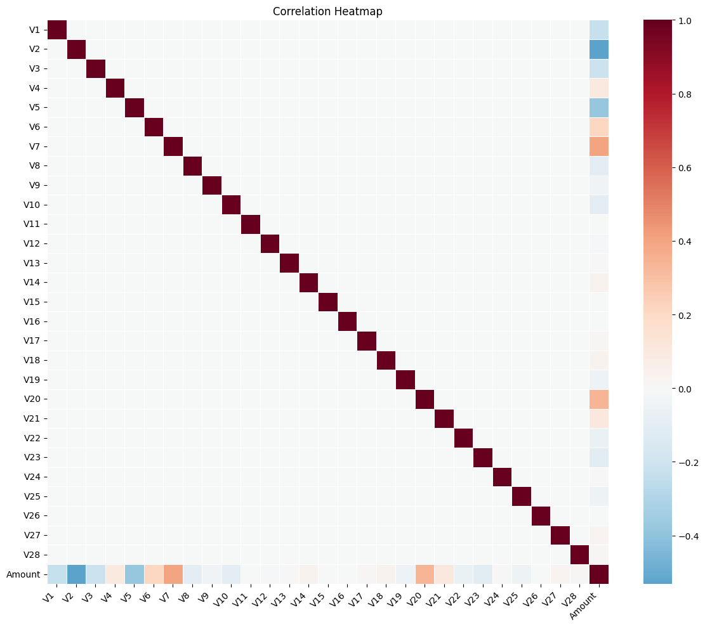
Figure 11-1. Correlation Heatmap.
The correlation heatmap provides a visual overview of how the numerical features in the dataset relate to one another. Each cell in the grid represents the correlation between a pair of features, with red tones indicating positive relationships, blue tones showing negative relationships and lighter shades suggesting little or no linear relationship. While these anonymized PCA-derived V features cannot be directly interpreted, the heatmap is still valuable for identifying where two or more features move together and for revealing broader patterns within the data.
We can try another way and produce a correlation bar chart that shows how strongly each numerical feature in the credit card dataset is correlated with the fraud label (Class = 1), as follows:
feature_corr = (X_numeric
.join(creditcard_df["Class"])
.corr()["Class"]
.drop("Class")
.sort_values(key = abs, ascending = False)
)
cmap = sns.color_palette("RdBu_r", as_cmap = True)
normed = (feature_corr - feature_corr.min()) / (feature_corr.max() - feature_corr.min())
colors = [cmap(x) for x in normed]
plt.figure(figsize = (14, 6))
plt.bar(feature_corr.index, feature_corr.values, color = colors)
plt.axhline(0, color = "black", linewidth = 1, linestyle = "--")
plt.xticks(rotation = 45, ha = "right")
plt.ylabel("Correlation with Fraud (Class = 1)")
plt.title("Feature Correlations with Fraud Label")
plt.tight_layout()
plt.show()
Example output is shown in Figure 11-2.
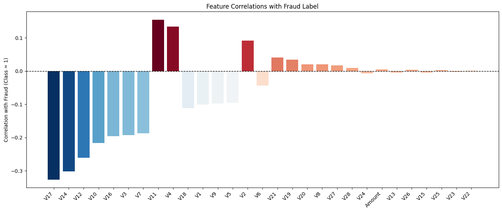
Figure 11-2. Feature Correlations with Fraud Label.
The analysis highlights that certain features show the strongest positive correlations with fraudulent transactions. This suggests that higher values of these features are more likely to be associated with fraud. Although the V features are anonymized principal components, their statistical relationship to the fraud label makes them powerful signals for detection. Features with strong negative correlations are equally valuable as they help the model distinguish normal transactions from suspicious ones. Together, both sets of features provide complementary insights: positively correlated features point toward what fraud looks like, while negatively correlated features capture what typical, non-fraudulent behavior looks like.
We’ll now create our reduced sampled dataset:
SEED = 42
sampled_df = pd.concat([
creditcard_df[creditcard_df["Class"] == 1],
creditcard_df[creditcard_df["Class"] == 0].sample(frac = 0.01, random_state = SEED)
]).sort_values("Time").reset_index(drop = True)
This produces a smaller, more manageable dataset containing all fraud cases plus 1% of non-fraud cases, ordered by transaction time. It preserves fraud signals while reducing the imbalance and dataset size, making it easier to analyze and model.
Let’s take a look at the count:
sampled_df["Class"].value_counts()
Example output:
Class
0 2843
1 492
Name: count, dtype: int64
Now, let’s prepare our train and test sets:
X = sampled_df.drop(columns = ["Time", "Class"])
y = sampled_df["Class"].astype(int)
X_train, X_test, y_train, y_test = train_test_split(
X, y, test_size = 0.3, random_state = SEED, stratify = y
)
We’ll scale the features:
scaler = StandardScaler()
X_train_scaled = scaler.fit_transform(X_train)
X_test_scaled = scaler.transform(X_test)
Scaling the features ensures that all variables in the dataset contribute fairly to the modeling process, regardless of their original ranges. Each feature is transformed to have a mean of 0 and a standard deviation of 1. This step is particularly important in the credit card fraud dataset, where variables such as Amount can be on a very different scale compared to the PCA-derived V features. Without scaling, features with larger numeric ranges could dominate the learning process, leading to biased models and slower convergence during training. By standardizing the data, we create a level playing field across all features, allowing algorithms to detect meaningful patterns more effectively.
Now we’ll train and fit a regression model:
model = LogisticRegression(
max_iter = 1000,
class_weight = "balanced",
random_state = SEED
)
model.fit(X_train_scaled, y_train)
Let’s try probability-based predictions with a threshold (which we can change):
y_proba = model.predict_proba(X_test_scaled)[:, 1]
threshold = 0.9
y_pred_threshold = (y_proba > threshold).astype(int)
We’ll apply these sample weights for downsampling:
-
Genuine transactions (Class = 0) are assigned a weight of 100, since only 1% are retained.
-
Fraudulent transactions (Class = 1) are assigned a weight of 1, as all of them are kept.
sample_weights = y_test.apply(lambda x: 100 if x == 0 else 1)
Now, we’ll print out our metrics:
accuracy = metrics.accuracy_score(y_test, y_pred_threshold, sample_weight = sample_weights)
precision = metrics.precision_score(y_test, y_pred_threshold, pos_label = 1, sample_weight = sample_weights)
recall = metrics.recall_score(y_test, y_pred_threshold, pos_label = 1, sample_weight = sample_weights)
f1 = metrics.f1_score(y_test, y_pred_threshold, pos_label = 1, sample_weight = sample_weights)
print(f"Weighted Accuracy: {accuracy:.4f}")
print(f"Weighted Precision: {precision:.4f}")
print(f"Weighted Recall: {recall:.4f}")
print(f"Weighted F1-score: {f1:.4f}")
Example output:
Weighted Accuracy: 0.9974
Weighted Precision: 0.3808
Weighted Recall: 0.8311
Weighted F1-score: 0.5223
The evaluation metrics reveal the strengths and limitations of the fraud detection model. At first glance, the weighted accuracy is extremely high, but this figure is deceptive due to the class imbalance, since most transactions are genuine. A more meaningful picture comes from precision and recall. The model achieves a high recall, meaning it successfully identifies the majority of fraudulent transactions. However, its precision is lower, indicating that many legitimate transactions are incorrectly flagged as fraud. The weighted F1-score, balances these two measures, reflecting the trade-off between catching fraud and avoiding false alarms. In practice, fraud detection systems often prioritize recall, since failing to detect fraudulent activity is far more costly than occasionally inconveniencing a customer with a false alert.
Now we’ll print our unweighted and weighted classification reports:
print("Classification Report (Unweighted):")
print(metrics.classification_report(
y_test,
y_pred_threshold,
target_names = ["Genuine", "Fraud"])
)
print("Classification Report (Weighted):")
print(metrics.classification_report(
y_test,
y_pred_threshold,
target_names = ["Genuine", "Fraud"],
sample_weight = sample_weights)
)
Example output:
Classification Report (Unweighted):
precision recall f1-score support
Genuine 0.97 1.00 0.98 853
Fraud 0.98 0.83 0.90 148
accuracy 0.97 1001
macro avg 0.98 0.91 0.94 1001
weighted avg 0.97 0.97 0.97 1001
Classification Report (Weighted):
precision recall f1-score support
Genuine 1.00 1.00 1.00 85300.0
Fraud 0.38 0.83 0.52 148.0
accuracy 1.00 85448.0
macro avg 0.69 0.91 0.76 85448.0
weighted avg 1.00 1.00 1.00 85448.0
The classification reports show how evaluation changes between a balanced sample and the full imbalanced dataset. On the sample, the model performs well for both classes, but when weighted for imbalance, precision for fraud drops while recall remains high. Overall accuracy appears near perfect, yet this hides the challenge of detecting the minority class, highlighting why class-specific metrics are important in fraud detection.
Let’s see the weighted confusion matrix:
class_order = [1, 0]
cm = metrics.confusion_matrix(y_test, y_pred_threshold, labels = class_order, sample_weight = sample_weights)
display_labels = ["Fraud", "Genuine"]
disp = metrics.ConfusionMatrixDisplay(confusion_matrix = cm, display_labels = display_labels)
disp.plot(cmap = "Reds", values_format = ".0f")
plt.title(f"Confusion Matrix - Logistic Regression (Threshold = {threshold})")
plt.show()
Example output is shown in Figure 11-3.
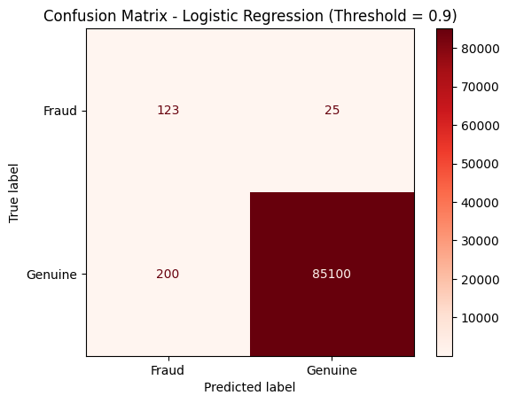
Figure 11-3. Confusion Matrix.
We’ll also plot the precision-recall curve:
precision_vals, recall_vals, thresholds = metrics.precision_recall_curve(y_test, y_proba)
plt.figure(figsize = (10, 6))
plt.plot(recall_vals, precision_vals, marker = ".", label = "PR Curve")
closest_idx = (np.abs(thresholds - threshold)).argmin()
plt.scatter(
recall_vals[closest_idx],
precision_vals[closest_idx],
color = "red",
s = 100,
zorder = 5,
label = f"Threshold = {threshold}"
)
plt.xlabel("Recall")
plt.ylabel("Precision")
plt.title("Precision-Recall Curve")
plt.legend()
plt.grid(True)
plt.show()
Example output is shown in Figure 11-4.
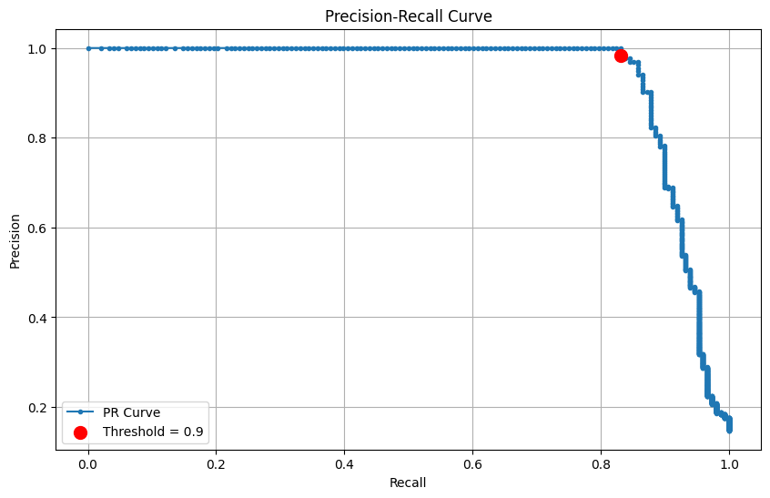
Figure 11-4. Precision-Recall Curve.
The precision-recall curve plots precision on the y-axis against recall on the x-axis. In this chart, precision stays at 1.0 for low recall values, meaning the model is perfectly accurate when it flags a few fraud cases. As the threshold decreases and recall increases toward 1.0, precision eventually drops, showing that capturing more fraud comes at the cost of including some false positives. The sharp drop near 0.9 illustrates the point where expanding detection begins to reduce precision.
Next, we plot the Receiver Operating Characteristic (ROC) curve and compute the Area Under the Curve (AUC):
fpr, tpr, roc_thresholds = metrics.roc_curve(y_test, y_proba)
auc_score = metrics.roc_auc_score(y_test, y_proba)
closest_idx = (np.abs(roc_thresholds - threshold)).argmin()
plt.figure(figsize = (10, 6))
plt.plot(fpr, tpr, color = "blue", lw = 2, label = f"ROC curve (AUC = {auc_score:.3f})")
plt.plot([0, 1], [0, 1], color = "gray", lw = 1, linestyle = "--", label = "Random guess")
plt.scatter(
fpr[closest_idx],
tpr[closest_idx],
color = "red",
s = 100,
zorder = 5,
label = f"Threshold = {threshold}"
)
plt.xlabel("False Positive Rate")
plt.ylabel("True Positive Rate (Recall)")
plt.title("ROC Curve - Logistic Regression")
plt.legend(loc="lower right")
plt.grid(True)
plt.show()
Example output is shown in Figure 11-5.
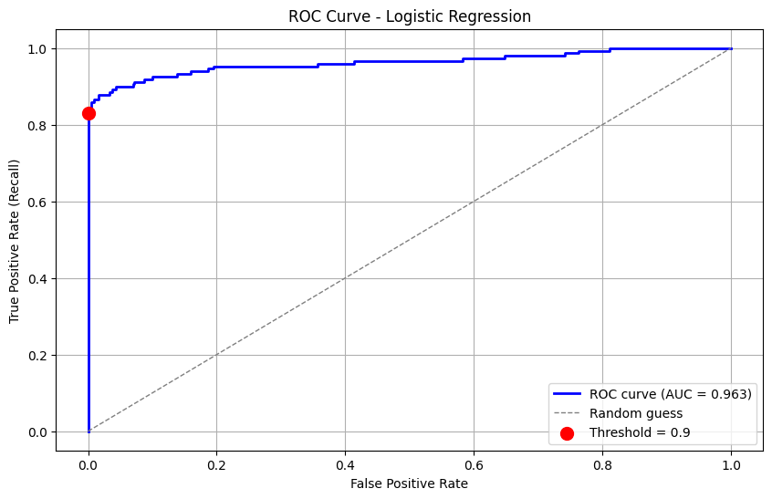
Figure 11-5. ROC Curve.
The ROC curve shows the trade-off between correctly identifying fraud (true positive rate) and mistakenly flagging genuine transactions (false positive rate). The curve rises sharply at the start, showing that the model captures most fraudulent transactions with few false alarms and then gradually flattens as it approaches the upper right, indicating that finding the remaining fraud comes with more false positives. The AUC summarizes this performance, with a higher value reflecting stronger overall discrimination between fraud and genuine transactions.
Next, we’ll write the train and test data to SingleStore. First, we’ll drop any existing tables:
tables = ["train_data", "test_data"]
with db_connection.begin() as conn:
for table in tables:
conn.execute(text(f"DROP TABLE IF EXISTS {table};"))
Then, we’ll write the DataFrames to SingleStore:
(X_train.join(y_train)).to_sql(
"train_data",
con = db_connection,
if_exists = "replace",
index = False,
chunksize = 1000
)
(X_test.join(y_test)).to_sql(
"test_data",
con = db_connection,
if_exists = "replace",
index = False,
chunksize = 1000
)
Example Queries
SQL offers a flexible and efficient way to explore and analyze structured data. By running targeted queries, we can quickly summarize key patterns, uncover trends and gain deeper insights from the stored dataset.
First, let’s find the average amount for fraudulent vs. genuine transactions for train data:
SELECT
CASE
WHEN Class = 1 THEN 'Fraud'
WHEN Class = 0 THEN 'Genuine'
ELSE 'Unknown'
END AS TransactionType,
ROUND(AVG(Amount), 2) AS AverageAmount,
COUNT(*) AS NumberOfTransactions
FROM train_data
GROUP BY TransactionType
ORDER BY TransactionType;
Example output:
+-----------------+---------------+----------------------+
| TransactionType | AverageAmount | NumberOfTransactions |
+-----------------+---------------+----------------------+
| Fraud | 116.04 | 344 |
| Genuine | 86.09 | 1990 |
+-----------------+---------------+----------------------+
and let’s repeat this for test data:
SELECT
CASE
WHEN Class = 1 THEN 'Fraud'
WHEN Class = 0 THEN 'Genuine'
ELSE 'Unknown'
END AS TransactionType,
ROUND(AVG(Amount), 2) AS AverageAmount,
COUNT(*) AS NumberOfTransactions
FROM test_data
GROUP BY TransactionType
ORDER BY TransactionType;
Example output:
+-----------------+---------------+----------------------+
| TransactionType | AverageAmount | NumberOfTransactions |
+-----------------+---------------+----------------------+
| Fraud | 136.55 | 148 |
| Genuine | 85.92 | 853 |
+-----------------+---------------+----------------------+
From these two sets of results, we can conclude that fraudulent transactions are, on average, higher in value than genuine ones, suggesting fraudsters tend to target larger amounts.
Next, let’s look at fraud vs. genuine proportion in train data:
SELECT
CASE WHEN Class = 1 THEN 'Fraud' ELSE 'Genuine' END AS TransactionType,
COUNT(*) AS Count,
ROUND(COUNT(*) * 100.0 / SUM(COUNT(*)) OVER(), 2) AS Percentage
FROM train_data
GROUP BY TransactionType;
Example output:
+-----------------+-------+------------+
| TransactionType | Count | Percentage |
+-----------------+-------+------------+
| Genuine | 1990 | 85.26 |
| Fraud | 344 | 14.74 |
+-----------------+-------+------------+
and let’s repeat this for test data:
SELECT
CASE WHEN Class = 1 THEN 'Fraud' ELSE 'Genuine' END AS TransactionType,
COUNT(*) AS Count,
ROUND(COUNT(*) * 100.0 / SUM(COUNT(*)) OVER(), 2) AS Percentage
FROM test_data
GROUP BY TransactionType;
Example output:
+-----------------+-------+------------+
| TransactionType | Count | Percentage |
+-----------------+-------+------------+
| Genuine | 853 | 85.21 |
| Fraud | 148 | 14.79 |
+-----------------+-------+------------+
Both train and test splits show consistent class distribution after sampling.
Next, let’s find the maximum and minimum amounts for fraudulent transactions:
SELECT
MAX(Amount) AS MaxFraudAmount,
MIN(Amount) AS MinFraudAmount
FROM train_data
WHERE Class = 1;
Example output:
+----------------+----------------+
| MaxFraudAmount | MinFraudAmount |
+----------------+----------------+
| 2125.87 | 0 |
+----------------+----------------+
This confirms that fraud can occur at any value but sometimes involves large amounts.
Now, let’s see quartiles for fraud vs. genuine transactions:
SELECT
CASE WHEN Class = 1 THEN 'Fraud' ELSE 'Genuine' END AS TransactionType,
PERCENTILE_CONT(0.25) WITHIN GROUP (ORDER BY Amount) AS Q1,
PERCENTILE_CONT(0.50) WITHIN GROUP (ORDER BY Amount) AS Median,
PERCENTILE_CONT(0.75) WITHIN GROUP (ORDER BY Amount) AS Q3
FROM train_data
GROUP BY TransactionType;
Example output:
+-----------------+------+--------------------+--------------------+
| TransactionType | Q1 | Median | Q3 |
+-----------------+------+--------------------+--------------------+
| Genuine | 5 | 21.039999961853027 | 75.09499931335449 |
| Fraud | 1 | 8.59000015258789 | 104.00749969482422 |
+-----------------+------+--------------------+--------------------+
Genuine transactions are concentrated in moderate amounts, while fraudulent transactions, though often small, exhibit a wider spread and can reach much higher values.
Let’s count fraudulent transactions within specific amount ranges:
SELECT
CASE
WHEN Amount < 50 THEN 'Low'
WHEN Amount >= 50 AND Amount < 200 THEN 'Medium'
ELSE 'High'
END AS AmountRange,
COUNT(*) AS FraudCount
FROM train_data
WHERE Class = 1
GROUP BY AmountRange
ORDER BY FraudCount DESC;
Example output:
+-------------+------------+
| AmountRange | FraudCount |
+-------------+------------+
| Low | 216 |
| Medium | 72 |
| High | 56 |
+-------------+------------+
Most frauds occur in the “Low” range.
Now, let’s look at the top 10 highest fraud amounts:
SELECT Amount
FROM train_data
WHERE Class = 1
ORDER BY Amount DESC
LIMIT 10;
Example output:
+---------+
| Amount |
+---------+
| 2125.87 |
| 1504.93 |
| 1389.56 |
| 1354.25 |
| 1335 |
| 1218.89 |
| 1096.99 |
| 925.31 |
| 824.83 |
| 727.91 |
+---------+
Fraud reaches high values, showing a tail of outliers.
Next, let’s look at the fraud ratio across amount ranges:
SELECT
CASE
WHEN Amount < 50 THEN 'Low'
WHEN Amount >= 50 AND Amount < 200 THEN 'Medium'
ELSE 'High'
END AS AmountRange,
COUNT(*) AS TotalTransactions,
SUM(CASE WHEN Class = 1 THEN 1 ELSE 0 END) AS FraudCount,
ROUND(SUM(CASE WHEN Class = 1 THEN 1 ELSE 0 END) * 100.0 / COUNT(*), 2) AS FraudPercentage
FROM train_data
GROUP BY AmountRange
ORDER BY FraudPercentage DESC;
Example output:
+-------------+-------------------+------------+-----------------+
| AmountRange | TotalTransactions | FraudCount | FraudPercentage |
+-------------+-------------------+------------+-----------------+
| High | 251 | 56 | 22.31 |
| Low | 1535 | 216 | 14.07 |
| Medium | 548 | 72 | 13.14 |
+-------------+-------------------+------------+-----------------+
Fraud rates are highest in the “High” range, even though fewer transactions occur there, highlighting elevated risk at large values.
Now let’s look at fraud likelihood by deciles of transaction amount:
WITH deciles AS (
SELECT
Amount,
Class,
NTILE(10) OVER (ORDER BY Amount) AS Decile
FROM train_data
)
SELECT
Decile,
COUNT(*) AS TotalTransactions,
SUM(CASE WHEN Class = 1 THEN 1 ELSE 0 END) AS FraudCount,
ROUND(SUM(CASE WHEN Class = 1 THEN 1 ELSE 0 END) * 100.0 / COUNT(*), 2) AS FraudPercentage
FROM deciles
GROUP BY Decile
ORDER BY Decile;
Example output:
+--------+-------------------+------------+-----------------+
| Decile | TotalTransactions | FraudCount | FraudPercentage |
+--------+-------------------+------------+-----------------+
| 1 | 234 | 80 | 34.19 |
| 2 | 234 | 59 | 25.21 |
| 3 | 234 | 20 | 8.55 |
| 4 | 234 | 22 | 9.40 |
| 5 | 233 | 14 | 6.01 |
| 6 | 233 | 9 | 3.86 |
| 7 | 233 | 20 | 8.58 |
| 8 | 233 | 33 | 14.16 |
| 9 | 233 | 33 | 14.16 |
| 10 | 233 | 54 | 23.18 |
+--------+-------------------+------------+-----------------+
Fraud is concentrated in the lowest deciles (small amounts) and the top decile (large amounts), with much lower rates in the middle.
Now we’ll run some queries on the full dataset. First, let’s see overall fraud prevalence:
SELECT
COUNT(*) AS TotalTransactions,
SUM(CASE WHEN Class = 1 THEN 1 ELSE 0 END) AS FraudCount,
ROUND(SUM(CASE WHEN Class = 1 THEN 1 ELSE 0 END) * 100.0 / COUNT(*), 4) AS FraudPercentage
FROM creditcard;
Example output:
+-------------------+------------+-----------------+
| TotalTransactions | FraudCount | FraudPercentage |
+-------------------+------------+-----------------+
| 284807 | 492 | 0.1727 |
+-------------------+------------+-----------------+
Fraud is rare overall at just 0.17% of all transactions, showing the severe class imbalance.
Now, let’s look at fraud vs. genuine by amount ranges:
SELECT
CASE
WHEN Amount < 50 THEN 'Low'
WHEN Amount >= 50 AND Amount < 200 THEN 'Medium'
ELSE 'High'
END AS AmountRange,
COUNT(*) AS TotalTransactions,
SUM(CASE WHEN Class = 1 THEN 1 ELSE 0 END) AS FraudCount,
ROUND(SUM(CASE WHEN Class = 1 THEN 1 ELSE 0 END) * 100.0 / COUNT(*), 4) AS FraudPercentage
FROM creditcard
GROUP BY AmountRange
ORDER BY FraudPercentage DESC;
Example output:
+-------------+-------------------+------------+-----------------+
| AmountRange | TotalTransactions | FraudCount | FraudPercentage |
+-------------+-------------------+------------+-----------------+
| High | 29315 | 85 | 0.2900 |
| Low | 189704 | 305 | 0.1608 |
| Medium | 65788 | 102 | 0.1550 |
+-------------+-------------------+------------+-----------------+
High-value transactions have the greatest fraud percentage, although most frauds still occur in low-value transactions simply because they are far more frequent.
Now, let’s look at fraud by deciles of transaction amount:
WITH deciles AS (
SELECT
Amount,
Class,
NTILE(10) OVER (ORDER BY Amount) AS Decile
FROM creditcard
)
SELECT
Decile,
COUNT(*) AS TotalTransactions,
SUM(CASE WHEN Class = 1 THEN 1 ELSE 0 END) AS FraudCount,
ROUND(SUM(CASE WHEN Class = 1 THEN 1 ELSE 0 END) * 100.0 / COUNT(*), 4) AS FraudPercentage
FROM deciles
GROUP BY Decile
ORDER BY Decile;
Example output:
+--------+-------------------+------------+-----------------+
| Decile | TotalTransactions | FraudCount | FraudPercentage |
+--------+-------------------+------------+-----------------+
| 1 | 28481 | 165 | 0.5793 |
| 2 | 28481 | 43 | 0.1510 |
| 3 | 28481 | 36 | 0.1264 |
| 4 | 28481 | 13 | 0.0456 |
| 5 | 28481 | 14 | 0.0492 |
| 6 | 28481 | 17 | 0.0597 |
| 7 | 28481 | 24 | 0.0843 |
| 8 | 28480 | 50 | 0.1756 |
| 9 | 28480 | 45 | 0.1580 |
| 10 | 28480 | 85 | 0.2985 |
+--------+-------------------+------------+-----------------+
Fraud clusters in the lowest decile and the highest decile, echoing the U-shaped risk seen in the sample.
We’ll now look at extreme fraud amounts (90th, 95th, 99th percentiles):
SELECT
PERCENTILE_CONT(0.90) WITHIN GROUP (ORDER BY Amount) AS P90,
PERCENTILE_CONT(0.95) WITHIN GROUP (ORDER BY Amount) AS P95,
PERCENTILE_CONT(0.99) WITHIN GROUP (ORDER BY Amount) AS P99
FROM creditcard
WHERE Class = 1;
Example output:
+-------------------+-------------------+--------------------+
| P90 | P95 | P99 |
+-------------------+-------------------+--------------------+
| 346.7460021972656 | 640.9049865722657 | 1357.4279052734375 |
+-------------------+-------------------+--------------------+
The top 1% of fraud attempts involve large sums.
Now let’s look at the top 10 highest fraud amounts:
SELECT Amount
FROM creditcard
WHERE Class = 1
ORDER BY Amount DESC
LIMIT 10;
Example output:
+---------+
| Amount |
+---------+
| 2125.87 |
| 1809.68 |
| 1504.93 |
| 1402.16 |
| 1389.56 |
| 1354.25 |
| 1335 |
| 1218.89 |
| 1096.99 |
| 996.27 |
+---------+
There are some high-value attacks.
Now, let’s look at fraud vs. genuine counts by quartile of transaction amount:
SELECT AmountQuartile, COUNT(*) AS TransactionCount
FROM (
SELECT
CASE
WHEN Amount < 50 THEN 'Low'
WHEN Amount BETWEEN 50 AND 200 THEN 'Medium'
WHEN Amount BETWEEN 200 AND 500 THEN 'High'
ELSE 'Very High'
END AS AmountQuartile
FROM creditcard
) t
GROUP BY AmountQuartile;
Example output:
+----------------+------------------+
| AmountQuartile | TransactionCount |
+----------------+------------------+
| Medium | 66266 |
| Low | 189704 |
| High | 19695 |
| Very High | 9142 |
+----------------+------------------+
Most transactions are in the “Low” range, but meaningful fraud also appears in higher quartiles.
Let’s look at the distribution of fraud on a daily basis:
SELECT
FLOOR(Time/86400) AS DayNumber,
COUNT(*) AS TotalTransactions,
SUM(CASE WHEN Class = 1 THEN 1 ELSE 0 END) AS FraudCount,
ROUND(SUM(CASE WHEN Class = 1 THEN 1 ELSE 0 END) * 100.0 / COUNT(*), 4) AS FraudPercentage
FROM creditcard
GROUP BY DayNumber
ORDER BY DayNumber;
Example output:
+-----------+-------------------+------------+-----------------+
| DayNumber | TotalTransactions | FraudCount | FraudPercentage |
+-----------+-------------------+------------+-----------------+
| 0 | 144786 | 281 | 0.1941 |
| 1 | 140021 | 211 | 0.1507 |
+-----------+-------------------+------------+-----------------+
Fraud prevalence is stable across days, showing no strong spikes.
Finally, let’s look at the daily fraud distribution by amount range:
SELECT
FLOOR(Time/86400) AS DayNumber,
CASE
WHEN Amount < 50 THEN 'Low'
WHEN Amount >= 50 AND Amount < 200 THEN 'Medium'
ELSE 'High'
END AS AmountRange,
COUNT(*) AS TotalTransactions,
SUM(CASE WHEN Class = 1 THEN 1 ELSE 0 END) AS FraudCount,
ROUND(SUM(CASE WHEN Class = 1 THEN 1 ELSE 0 END) * 100.0 / COUNT(*), 4) AS FraudPercentage
FROM creditcard
GROUP BY DayNumber, AmountRange
ORDER BY DayNumber, AmountRange;
Example output:
+-----------+-------------+-------------------+------------+-----------------+
| DayNumber | AmountRange | TotalTransactions | FraudCount | FraudPercentage |
+-----------+-------------+-------------------+------------+-----------------+
| 0 | High | 15321 | 49 | 0.3198 |
| 0 | Low | 94918 | 168 | 0.1770 |
| 0 | Medium | 34547 | 64 | 0.1853 |
| 1 | High | 13994 | 36 | 0.2573 |
| 1 | Low | 94786 | 137 | 0.1445 |
| 1 | Medium | 31241 | 38 | 0.1216 |
+-----------+-------------+-------------------+------------+-----------------+
Fraud percentages are consistently higher for “High” amount transactions across both days, while “Low” and “Medium” transactions make up the majority of the total volume.
Overall, when examining fraud by transaction amount, a clear pattern emerges. Small purchases dominate the dataset, yet they rarely involve fraud. Medium-sized purchases show a modest increase in fraud, but it remains uncommon. The real signal comes from high-value transactions, where the fraud rate rises sharply. Across days, this pattern is consistent: fraud is concentrated in higher-value transactions and is distributed fairly evenly over time rather than clustering on specific days. This suggests that while most transactions are low-risk, focusing monitoring and controls on larger amounts could provide the greatest benefit in fraud detection.
Summary
We began by bringing in the credit card transaction data and carefully preparing it for analysis. Splitting it into training and testing sets allowed us to explore patterns without biasing the results. Early statistics revealed a clear imbalance: genuine transactions vastly outnumbered fraudulent ones. Diving deeper, we examined transaction amounts and discovered a trend that most purchases were small and low-risk, while high-value transactions, though rare, carried a much higher likelihood of fraud. Looking at temporal patterns, we saw that fraudulent attempts were spread fairly evenly over time, without obvious spikes on particular days or hours. By combining statistical summaries with charts and visualizations, we were able to map the landscape of fraud clearly, showing where attention and monitoring would be most valuable. In conclusion, this journey from raw data to insight highlighted a simple but powerful message: while most transactions are low-risk, focusing controls on higher-value activity offers the greatest potential for preventing fraud.
Chapter 12: Image Classification
Introduction
Image classification can have many practical, valuable and life-saving benefits. The “Hello World” of image classification is often considered MNIST and, more recently, Fashion MNIST. In this chapter, we’ll use Fashion MNIST, build an image classification model using Keras and TensorFlow and store the prediction results in SingleStore.
Create the Database and Table
In the SingleStore Portal, let’s use the SQL Editor to create a new database. Call this image_db, as follows:
CREATE DATABASE IF NOT EXISTS image_db;
We’ll also create a table to store the image classification model, as follows:
USE image_db;
DROP TABLE IF EXISTS predictions;
CREATE TABLE IF NOT EXISTS predictions (
id INT PRIMARY KEY,
label VARCHAR(20),
t_shirt_top FLOAT,
trouser FLOAT,
pullover FLOAT,
dress FLOAT,
coat FLOAT,
sandal FLOAT,
shirt FLOAT,
sneaker FLOAT,
bag FLOAT,
ankle_boot FLOAT
);
Fill out the Notebook
Let’s now create a new Python notebook. We’ll call it image_classification.
First, we’ll load the dataset:
(train_images, train_labels), (test_images, test_labels) = fashion_mnist.load_data()
The train and test labels range from 0 to 9 and we can map them as follows:
classes = [
"t_shirt_top",
"trouser",
"pullover",
"dress",
"coat",
"sandal",
"shirt",
"sneaker",
"bag",
"ankle_boot"
]
Since we have the full dataset, we can quickly create an image classification model using Keras.
First, we’ll normalize the data, as follows:
train_images = train_images.astype("float32") / 255.0
test_images = test_images.astype("float32") / 255.0
Next, we’ll build a simple neural network that takes 28x28 pixel images as input, flattens them into a single list of numbers and processes them through one hidden layer with 128 neurons using ReLU activation. It then outputs probabilities for 10 possible classes using a softmax layer. The model is set up to learn using the Adam optimizer and measures its accuracy while training:
model = keras.Sequential(layers = [
keras.Input(shape = (28, 28)),
keras.layers.Flatten(),
keras.layers.Dense(128, activation = "relu"),
keras.layers.Dropout(0.3),
keras.layers.Dense(10, activation = "softmax")
])
model.compile(optimizer = "adam",
loss = "sparse_categorical_crossentropy",
metrics = ["accuracy"]
)
model.summary()
Now, we’ll train the neural network on the training images and labels. We’ll use batches of 60 images at a time and run through the entire dataset 10 times (epochs), keep aside 20% of the data to check how well the model is doing on unseen examples during training (validation):
history = model.fit(
train_images,
train_labels,
batch_size = 60,
epochs = 10,
validation_split = 0.2,
shuffle = True,
verbose = 2
)
Next, we’ll create a function to help plot model accuracy and model loss, as follows:
def plot_history(history, metric, title = None, width = 500, height = 500, smooth = True):
line_type = "spline" if smooth else "linear"
fig = go.Figure([
go.Scatter(
y = history.history[metric],
name = "Train",
mode = "lines",
line_shape = line_type
),
go.Scatter(
y = history.history[f"val_{metric}"],
name = "Validation",
mode = "lines",
line_shape = line_type
)
])
fig.update_layout(
title = title or metric.capitalize(),
xaxis_title = "Epoch",
yaxis_title = metric.capitalize(),
width = width,
height = height
)
fig.show()
We’ll check the model accuracy using the following code:
plot_history(history, "accuracy", title = "Model Accuracy")
Model accuracy increases over time, as shown in Figure 12-1.
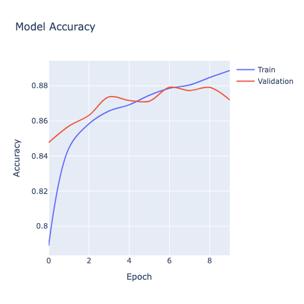
Figure 12-1. Model Accuracy.
Similarly, we can check the model loss with the following code:
plot_history(history, "loss", title = "Model Loss")
Model loss decreases over time, as shown in Figure 12-2.
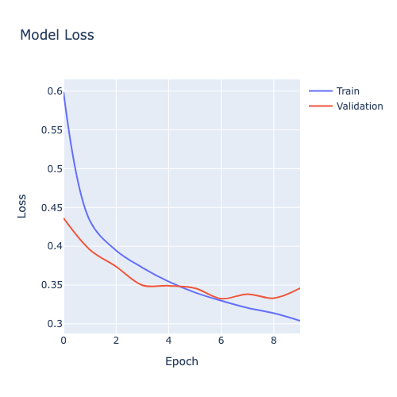
Figure 12-2. Model Loss.
We’ll check the accuracy on the test data:
(loss, accuracy) = model.evaluate(test_images, test_labels, verbose = 2)
and the results appear good:
313/313 - 1s - 2ms/step - accuracy: 0.8665 - loss: 0.3681
We’ll now create predictions and look at the one set of predictions:
predictions = model.predict(test_images)
print(predictions[0])
Example output:
313/313 ━━━━━━━━━━━━━━━━━━━━ 0s 1ms/step
[2.4978769e-07 1.2354002e-07 1.9421823e-07 3.9149125e-08 2.1874310e-07
5.0949887e-03 1.4335438e-06 1.2482504e-02 8.1785151e-07 9.8241931e-01]
Visualizing the results as a Confusion Matrix could provide valuable insights so, first we’ll prepare, as follows:
predicted_labels = np.argmax(predictions, axis = 1)
cm = metrics.confusion_matrix(test_labels, predicted_labels)
precision_scores = metrics.precision_score(test_labels, predicted_labels, average = None)
recall_scores = metrics.recall_score(test_labels, predicted_labels, average = None)
and then we’ll render it, as follows:
data = go.Heatmap(
z = cm,
x = classes,
y = classes,
colorscale = "Reds",
colorbar = dict(title = "Count")
)
annotations = []
thresh = cm.max() / 2
for i, row in enumerate(cm):
for j, value in enumerate(row):
annotations.append(
{
"x": classes[j],
"y": classes[i],
"font": {"color": "white" if value > thresh else "black"},
"text": str(value),
"xref": "x1",
"yref": "y1",
"showarrow": False,
}
)
layout = {
"title": "Confusion Matrix",
"xaxis": {"title": "Predicted"},
"yaxis": {
"title": "True",
"autorange": "reversed"
},
"annotations": annotations,
"width": 600,
"height": 600,
"margin": dict(l = 100, r = 100, t = 100, b = 100),
"yaxis_scaleanchor": "x",
"yaxis_scaleratio": 1
}
fig = go.Figure(data = data, layout = layout)
fig.show()
This outputs the result shown in Figure 12-3.
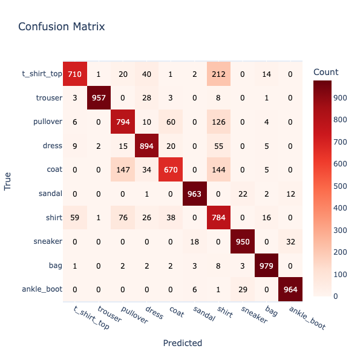
Figure 12-3. Confusion Matrix.
We can see that the model is less accurate for some fashion items. This is because items may appear quite similar, such as Shirts and T-Shirts.
Next, we’ll create a plotting function that will help us render Precision, Recall and F1-Score:
def plot_metric_scores(metric_fn, test_labels, predictions, classes, metric_name):
if predictions.ndim > 1:
predicted_labels = np.argmax(predictions, axis = 1)
else:
predicted_labels = predictions
scores = metric_fn(test_labels, predicted_labels, average = None)
fig = px.bar(
x = classes,
y = scores,
labels = dict(x = "Classes", y = metric_name),
title = f"{metric_name} Scores"
)
fig.update_xaxes(tickangle = 45)
fig.update_layout(width = 600, height = 600, autosize = False)
fig.show()
First, we’ll plot Precision:
plot_metric_scores(metrics.precision_score, test_labels, predictions, classes, "Precision")
This outputs the result shown in Figure 12-4.
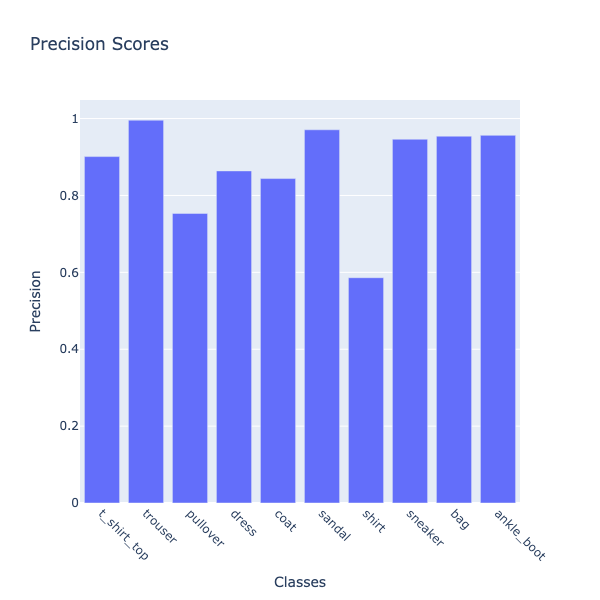
Figure 12-4. Precision.
Precision measures how often the model’s predictions for a given class are correct. Among the clothing categories, shirts stand out as the one the model most often misclassifies.
Next, we’ll calculate the Recall for each class in the image classification task.
plot_metric_scores(metrics.recall_score, test_labels, predictions, classes, "Recall")
This outputs the result shown in Figure 12-5.
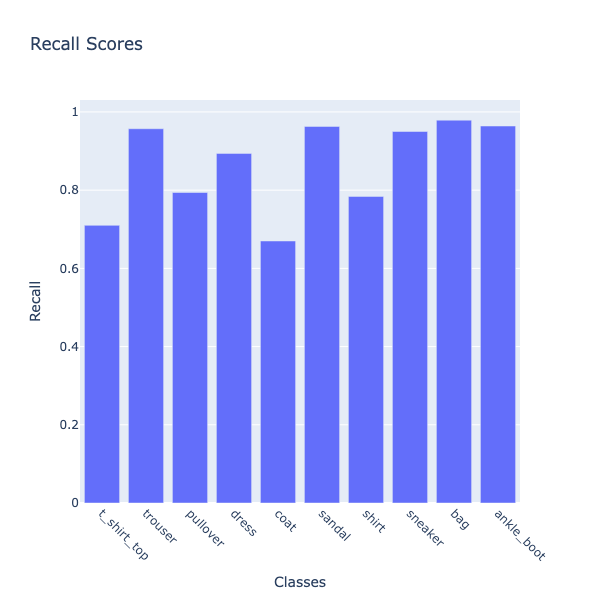
Figure 12-5. Recall.
Recall measures how many actual items of a given class the model successfully identifies. Coat stands out as the clothing category the model most often fails to recognize correctly.
Finally, we’ll plot the F1-Score.
plot_metric_scores(metrics.f1_score, test_labels, predictions, classes, "F1 Score")
This outputs the result shown in Figure 12-6.
Figure 12-6. F1-Score.
The F1-score balances both precision and recall, giving a single measure of overall classification quality for each class. Shirts again emerge as the weakest category, showing that the model struggles not only with making correct predictions but also with capturing most of the actual shirt items.
We’ll now take the model predictions and a create a DataFrame where each row is one test item, with:
-
An ID.
-
The true label.
-
A set of predicted probabilities across all classes.
as follows:
predictions_df = pd.DataFrame(
predictions.astype(float),
columns = classes
)
predictions_df.insert(0, "id", np.arange(len(test_labels)))
predictions_df["label"] = [classes[label] for label in test_labels]
We don’t need to store the predicted class explicitly, since it can always be derived when required. Our DataFrame is ready to write to SingleStore, but just before we do that let’s create a visualization.
We’ll create a function that takes an image ID, looks up its actual label and the model’s predicted probabilities and then displays the image along with a bar chart showing the probability assigned to each class. The chart’s title indicates whether the model’s prediction was correct or incorrect, making it easy to visually inspect both the image and the model’s confidence.
def show_prediction(selected_id):
row = predictions_df[predictions_df["id"] == selected_id]
if row.empty:
print(f"No data found for id = {selected_id}")
return
prob_cols = [col for col in predictions_df.columns if col not in ["id", "label"]]
probabilities = row[prob_cols].values.flatten()
actual_label = row["label"].values[0]
predicted_label = prob_cols[probabilities.argmax()]
correct = (actual_label == predicted_label)
title_msg = f"Image {selected_id} actual label is '{actual_label}'. "
title_msg += "Prediction is correct." if correct else f"Model predicted '{predicted_label}'."
fig = px.imshow(test_images[selected_id], color_continuous_scale = "gray_r")
fig.update_xaxes(showticklabels = False).update_yaxes(showticklabels = False)
fig.update_layout(
width = 100,
height = 100,
margin = dict(l = 0, r = 0, t = 0, b = 0),
coloraxis_showscale = False
)
fig.show()
bar = px.bar(
x = prob_cols,
y = probabilities,
color = probabilities,
color_continuous_scale = "inferno",
labels = {"x": "Classes", "y": "Probability"},
title = title_msg
)
bar.update_layout(
coloraxis_colorbar = dict(title = "Probability"),
width = 600,
height = 600,
yaxis = dict(range = [0, 1])
)
bar.show()
The following code creates an interactive slider in the notebook that lets us pick an image ID between 0 and 9999. When we move the slider, it automatically calls the show_prediction function for the selected ID, so we can instantly see the image, its predicted probabilities and whether the model was correct.
slider = widgets.IntSlider(value = 0, min = 0, max = 9999, step = 1, description = "ID:")
_ = widgets.interact(show_prediction, selected_id = slider)
Example output is shown in Figure 12-7.
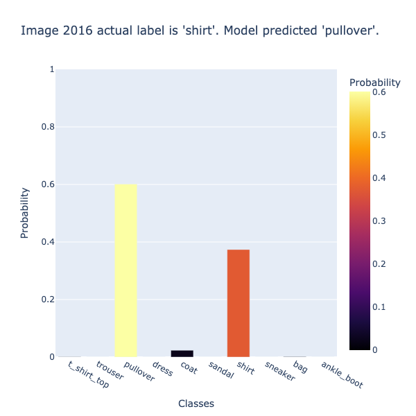
Figure 12-7. Example Predictions.
Let’s now save the predictions in SingleStore. First, we’ll create a connection:
from sqlalchemy import *
db_connection = create_engine(connection_url)
Then we’ll ensure that the table is empty:
with db_connection.begin() as conn:
conn.execute(text("TRUNCATE TABLE predictions;"))
Finally, we’ll write the DataFrame to the table:
predictions_df.to_sql(
"predictions",
con = db_connection,
if_exists = "append",
index = False,
chunksize = 1000
)
Example Queries
Let’s now run some queries on the Predictions table. We’ll start by creating a View:
CREATE VIEW predictions_with_max AS
SELECT
*,
GREATEST(
t_shirt_top, trouser, pullover, dress, coat,
sandal, shirt, sneaker, bag, ankle_boot
) AS max_prob,
CASE GREATEST(
t_shirt_top, trouser, pullover, dress, coat,
sandal, shirt, sneaker, bag, ankle_boot
)
WHEN t_shirt_top THEN 't_shirt_top'
WHEN trouser THEN 'trouser'
WHEN pullover THEN 'pullover'
WHEN dress THEN 'dress'
WHEN coat THEN 'coat'
WHEN sandal THEN 'sandal'
WHEN shirt THEN 'shirt'
WHEN sneaker THEN 'sneaker'
WHEN bag THEN 'bag'
ELSE 'ankle_boot'
END AS predicted_class
FROM predictions;
This makes it much easier to analyze predictions, such as computing accuracy, creating a confusion matrix and confidence levels, without recalculating GREATEST and CASE each time.
Let’s start by showing a few predictions with the top-scoring class:
SELECT id, label, max_prob, predicted_class
FROM predictions_with_max
LIMIT 5;
Example output:
+-----+------------+--------------------+-----------------+
| id | label | max_prob | predicted_class |
+-----+------------+--------------------+-----------------+
| 0 | ankle_boot | 0.9824193120002747 | ankle_boot |
| 43 | sneaker | 0.8030625581741333 | sneaker |
| 62 | bag | 0.9999998211860657 | bag |
| 74 | pullover | 0.761057436466217 | pullover |
| 108 | ankle_boot | 0.9990979433059692 | ankle_boot |
+-----+------------+--------------------+-----------------+
We see that all top predictions are correct and with high confidence.
Next, let’s count how many predictions were very confident (> 0.9):
SELECT COUNT(*) AS very_confident
FROM predictions_with_max
WHERE max_prob > 0.9;
Example output:
+----------------+
| very_confident |
+----------------+
| 6460 |
+----------------+
Out of 10,000 clothing items, the model is very confident on a large number of items.
Let’s now find the most common predicted class:
SELECT predicted_class, COUNT(*) AS count
FROM predictions_with_max
GROUP BY predicted_class
ORDER BY count DESC;
Example output:
+-----------------+-------+
| predicted_class | count |
+-----------------+-------+
| shirt | 1338 |
| pullover | 1054 |
| dress | 1035 |
| bag | 1026 |
| ankle_boot | 1008 |
| sneaker | 1004 |
| sandal | 992 |
| trouser | 961 |
| coat | 794 |
| t_shirt_top | 788 |
+-----------------+-------+
We see that shirt is predicted most often and t_shirt_top least, which shows some class imbalance or model bias.
Let’s now look at the top most confident predictions for sneakers:
SELECT id, label, max_prob
FROM predictions_with_max
WHERE predicted_class = 'sneaker'
ORDER BY max_prob DESC
LIMIT 5;
Example output:
+------+---------+--------------------+
| id | label | max_prob |
+------+---------+--------------------+
| 3742 | sneaker | 0.9999889731407166 |
| 7918 | sneaker | 0.9999703764915466 |
| 3784 | sneaker | 0.9999698996543884 |
| 8942 | sneaker | 0.9999662041664124 |
| 9869 | sneaker | 0.9999658465385437 |
+------+---------+--------------------+
We see extremely confident predictions that are good for deployment.
Now, let’s look at predictions with low confidence:
SELECT id, label, max_prob, predicted_class
FROM predictions_with_max
WHERE max_prob < 0.5
ORDER BY max_prob ASC
LIMIT 10;
Example output:
+------+-------------+---------------------+-----------------+
| id | label | max_prob | predicted_class |
+------+-------------+---------------------+-----------------+
| 531 | t_shirt_top | 0.2181243896484375 | sandal |
| 7769 | dress | 0.2204117327928543 | shirt |
| 1207 | t_shirt_top | 0.23729507625102997 | dress |
| 2817 | dress | 0.2463635802268982 | shirt |
| 8658 | shirt | 0.24661092460155487 | t_shirt_top |
| 3609 | t_shirt_top | 0.24724265933036804 | bag |
| 1399 | t_shirt_top | 0.2492251694202423 | shirt |
| 9366 | coat | 0.2513481080532074 | coat |
| 222 | pullover | 0.25214266777038574 | pullover |
| 8708 | dress | 0.26301655173301697 | dress |
+------+-------------+---------------------+-----------------+
There is some ambiguity, such as t_shirt_top predicted as sandal. The model struggles with confusing images.
Next, let’s look at the distribution of max probabilities:
SELECT
CASE
WHEN max_prob < 0.2 THEN '0-0.2'
WHEN max_prob < 0.4 THEN '0.2-0.4'
WHEN max_prob < 0.6 THEN '0.4-0.6'
WHEN max_prob < 0.8 THEN '0.6-0.8'
WHEN max_prob < 0.9 THEN '0.8-0.9'
ELSE '0.9-1.0'
END AS prob_bin,
COUNT(*) AS count
FROM predictions_with_max
GROUP BY prob_bin
ORDER BY prob_bin;
Example output:
+----------+-------+
| prob_bin | count |
+----------+-------+
| 0.2-0.4 | 137 |
| 0.4-0.6 | 1210 |
| 0.6-0.8 | 1344 |
| 0.8-0.9 | 849 |
| 0.9-1.0 | 6460 |
+----------+-------+
Most predictions are greater than 0.9 and few are less than 0.6, which shows high overall confidence.
Next, let’s find the most frequently misclassified true class:
SELECT label AS true_class, predicted_class, COUNT(*) AS count
FROM predictions_with_max
WHERE label <> predicted_class
GROUP BY label, predicted_class
ORDER BY count DESC
LIMIT 10;
Example output:
+-------------+-----------------+-------+
| true_class | predicted_class | count |
+-------------+-----------------+-------+
| t_shirt_top | shirt | 212 |
| coat | pullover | 147 |
| coat | shirt | 144 |
| pullover | shirt | 126 |
| shirt | pullover | 76 |
| pullover | coat | 60 |
| shirt | t_shirt_top | 59 |
| dress | shirt | 55 |
| t_shirt_top | dress | 40 |
| shirt | coat | 38 |
+-------------+-----------------+-------+
The model often confuses similar clothing.
We can also find the overall accuracy:
SELECT ROUND(SUM(CASE WHEN label = predicted_class THEN 1 ELSE 0 END) / COUNT(*), 4) AS accuracy
FROM predictions_with_max;
Example output:
+----------+
| accuracy |
+----------+
| 0.8665 |
+----------+
This is a good result for a simple classifier.
Now, let’s find the top predicted class per true class:
SELECT true_class, predicted_class, count
FROM (
SELECT
label AS true_class,
predicted_class,
COUNT(*) AS count,
ROW_NUMBER() OVER (PARTITION BY label ORDER BY COUNT(*) DESC) AS rn
FROM predictions_with_max
GROUP BY label, predicted_class
) t
WHERE rn = 1;
Example output:
+-------------+-----------------+-------+
| true_class | predicted_class | count |
+-------------+-----------------+-------+
| coat | coat | 670 |
| bag | bag | 979 |
| ankle_boot | ankle_boot | 964 |
| dress | dress | 894 |
| sneaker | sneaker | 950 |
| shirt | shirt | 784 |
| pullover | pullover | 794 |
| sandal | sandal | 963 |
| trouser | trouser | 957 |
| t_shirt_top | t_shirt_top | 710 |
+-------------+-----------------+-------+
The quick summary of per-class mode confirms accuracy numbers.
Here, we’ll find the average confidence per predicted class:
SELECT predicted_class, ROUND(AVG(max_prob), 3) AS avg_confidence
FROM predictions_with_max
GROUP BY predicted_class
ORDER BY avg_confidence DESC;
Example output:
+-----------------+----------------+
| predicted_class | avg_confidence |
+-----------------+----------------+
| trouser | 0.985 |
| sandal | 0.969 |
| ankle_boot | 0.968 |
| bag | 0.967 |
| sneaker | 0.944 |
| dress | 0.876 |
| t_shirt_top | 0.798 |
| pullover | 0.773 |
| coat | 0.721 |
| shirt | 0.718 |
+-----------------+----------------+
This confirms that some classes are harder to predict.
Finally, we can use SQL to output a confusion matrix:
WITH label_order AS (
SELECT 't_shirt_top' AS label, 1 AS sort_order UNION ALL
SELECT 'trouser', 2 UNION ALL
SELECT 'pullover', 3 UNION ALL
SELECT 'dress', 4 UNION ALL
SELECT 'coat', 5 UNION ALL
SELECT 'sandal', 6 UNION ALL
SELECT 'shirt', 7 UNION ALL
SELECT 'sneaker', 8 UNION ALL
SELECT 'bag', 9 UNION ALL
SELECT 'ankle_boot', 10
)
SELECT p.label AS true_class,
SUM(CASE WHEN predicted_class='t_shirt_top' THEN 1 ELSE 0 END) AS t_shirt_top,
SUM(CASE WHEN predicted_class='trouser' THEN 1 ELSE 0 END) AS trouser,
SUM(CASE WHEN predicted_class='pullover' THEN 1 ELSE 0 END) AS pullover,
SUM(CASE WHEN predicted_class='dress' THEN 1 ELSE 0 END) AS dress,
SUM(CASE WHEN predicted_class='coat' THEN 1 ELSE 0 END) AS coat,
SUM(CASE WHEN predicted_class='sandal' THEN 1 ELSE 0 END) AS sandal,
SUM(CASE WHEN predicted_class='shirt' THEN 1 ELSE 0 END) AS shirt,
SUM(CASE WHEN predicted_class='sneaker' THEN 1 ELSE 0 END) AS sneaker,
SUM(CASE WHEN predicted_class='bag' THEN 1 ELSE 0 END) AS bag,
SUM(CASE WHEN predicted_class='ankle_boot' THEN 1 ELSE 0 END) AS ankle_boot
FROM predictions_with_max p
JOIN label_order l ON p.label = l.label
GROUP BY p.label, l.sort_order
ORDER BY l.sort_order;
Example output:
+-------------+-------------+---------+----------+-------+------+--------+-------+---------+------+------------+
| true_class | t_shirt_top | trouser | pullover | dress | coat | sandal | shirt | sneaker | bag | ankle_boot |
+-------------+-------------+---------+----------+-------+------+--------+-------+---------+------+------------+
| t_shirt_top | 710 | 1 | 20 | 40 | 1 | 2 | 212 | 0 | 14 | 0 |
| trouser | 3 | 957 | 0 | 28 | 3 | 0 | 8 | 0 | 1 | 0 |
| pullover | 6 | 0 | 794 | 10 | 60 | 0 | 126 | 0 | 4 | 0 |
| dress | 9 | 2 | 15 | 894 | 20 | 0 | 55 | 0 | 5 | 0 |
| coat | 0 | 0 | 147 | 34 | 670 | 0 | 144 | 0 | 5 | 0 |
| sandal | 0 | 0 | 0 | 1 | 0 | 963 | 0 | 22 | 2 | 12 |
| shirt | 59 | 1 | 76 | 26 | 38 | 0 | 784 | 0 | 16 | 0 |
| sneaker | 0 | 0 | 0 | 0 | 0 | 18 | 0 | 950 | 0 | 32 |
| bag | 1 | 0 | 2 | 2 | 2 | 3 | 8 | 3 | 979 | 0 |
| ankle_boot | 0 | 0 | 0 | 0 | 0 | 6 | 1 | 29 | 0 | 964 |
+-------------+-------------+---------+----------+-------+------+--------+-------+---------+------+------------+
The results match the confusion matrix in the notebook.
Summary
In this chapter, we built and evaluated a Fashion MNIST image classifier, visualizing performance through accuracy, loss, precision, recall, F1-score and a confusion matrix heatmap. We created an interactive notebook to explore individual predictions alongside their probabilities and we used SQL queries to analyze overall accuracy, confident predictions and patterns of class-level confusion. Together, these visualizations and analyses provided a clear view of the model’s strengths, weaknesses and opportunities for improvement, demonstrating how to combine machine learning and data exploration for deeper insight.
Chapter 13: Movie Recommender System
Introduction
In this chapter, we’ll generate a synthetic movie recommendation dataset inspired by MovieLens. Instead of using the original MovieLens files, which come with licensing restrictions, we’ll create our own dataset that preserves the structure, scale and statistical flavor of MovieLens 1M.
The dataset includes three main files:
-
Users: Each user is assigned demographic attributes such as gender, age bucket, occupation and location. To mimic realism, we’ll introduce random per-user rating biases and personalized genre preferences.
-
Movies: Each movie is given a release year, one to three genres and a plausible-sounding title generated from genre-specific vocabularies. Genre popularity and historical release distributions are modeled to reproduce patterns such as long-tail distributions and recency effects.
-
Ratings: Users provide ratings to movies on a 1-5 scale. Rating generation combines global tendencies (average score), user and movie biases, genre correlations and noise. We’ll also simulate realistic phenomena such as long-tail popularity (a few movies being rated a lot), varied user activity levels and timestamps biased toward recent years.
Throughout, we’ll include sanity checks (e.g., probability normalization, minimum ratings per user) to ensure internal consistency. Finally, the results are in the familiar users.dat, movies.dat and ratings.dat format.
This synthetic dataset serves as a drop-in replacement for MovieLens in our recommender system examples: large enough to feel realistic, rich with structure, yet free of licensing restrictions.
Create the Database and Tables
In the SingleStore Portal, let’s use the SQL Editor to create a new database. Call this movies_db, as follows:
CREATE DATABASE IF NOT EXISTS movies_db;
We’ll also create three tables, as follows:
USE movies_db;
DROP TABLE IF EXISTS users;
CREATE TABLE users (
id INT PRIMARY KEY,
age INT,
gender VARCHAR(5),
occupation VARCHAR(255),
zip_code VARCHAR(255),
factors VECTOR(200)
);
DROP TABLE IF EXISTS movies;
CREATE TABLE movies (
id INT PRIMARY KEY,
title VARCHAR(255),
genres VARCHAR(255),
factors VECTOR(200)
);
DROP TABLE IF EXISTS ratings;
CREATE TABLE ratings (
user_id INT,
movie_id INT,
rating FLOAT,
timestamp INT
);
We’ll use SingleStore’s VECTOR data type in the users and movies tables.
Fill out the Notebook
Let’s now create a new Python notebook. We’ll call it movies.
Let’s start by creating the movies DataFrame:
movies_csv_url = ...
movies_df = pd.read_csv(
movies_csv_url,
engine = "python",
sep = "::",
header = None,
encoding = "latin1",
names = ["id", "title", "genres"]
)
We’ll create a WordCloud to see some of the popular movie names:
movie_titles_list = movies_df["title"].tolist()
movie_titles_corpus = " ".join(movie_titles_list)
wordcloud = WordCloud(
stopwords = STOPWORDS,
background_color = "lightgrey",
colormap = "hot",
max_words = 50,
# collocations = False
).generate(movie_titles_corpus)
plt.figure(figsize = (10, 8))
plt.imshow(wordcloud, interpolation = "bilinear")
plt.axis("off")
plt.show()
Example output is shown in Figure 13-1.
Figure 13-1. WordCloud.
Next, let’s create the users DataFrame:
users_csv_url = ...
users_df = pd.read_csv(
users_csv_url,
engine = "python",
sep = "::",
header = None,
encoding = "latin1",
names = ["id", "gender", "age", "occupation", "zip_code"]
)
Let’s do a quick analysis of gender:
result = (
users_df.groupby("gender")
.size()
.reset_index(name = "count")
)
print(result.to_string(index = False))
Example output:
gender count
F 1738
M 4302
and a quick analysis of profession:
result = (
users_df.groupby("occupation")
.size()
.reset_index(name = "count")
.sort_values(by = "count", ascending = False)
.head(21)
)
print(result.to_string(index = False))
Example output:
occupation count
college/grad student 732
executive/managerial 700
other 689
technician/engineer 514
academic/educator 511
programmer 405
artist 278
sales/marketing 276
writer 264
self-employed 242
doctor/health care 227
clerical/admin 195
K-12 student 195
scientist 156
retired 144
lawyer 136
customer service 131
homemaker 116
tradesman/craftsman 60
unemployed 53
farmer 16
This is similar in distribution to MovieLens.
Finally, let’s create the ratings DataFrame:
ratings_csv_url = ...
ratings_df = pd.read_csv(
ratings_csv_url,
engine = "python",
sep = "::",
header = None,
encoding = "latin1",
names = ["user_id", "movie_id", "rating", "timestamp"]
)
Let’s do a quick plot of the movie ratings:
ratings_df["rating"].plot.hist(
edgecolor = "white",
color = "#32B5C9",
rwidth = 0.9,
bins = [0.5, 1.5, 2.5, 3.5, 4.5, 5.5]
)
plt.ylabel("Frequency")
plt.xlabel("Rating")
plt.show()
Example output is shown in Figure 13-2.
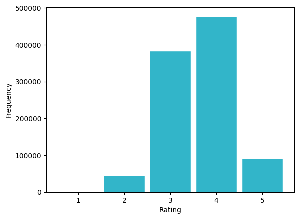
Figure 13-2. Movie Ratings.
We can see that most ratings are 3 and 4.
Next, we’ll convert the synthetic ratings data into the Surprise library format, split the data for training/testing and set up the parameters for training a collaborative filtering model using SVD. In recommendation systems, SVD is used for matrix factorization, which helps in predicting missing entries in a user-item rating matrix.
reader = Reader(rating_scale = (1, 5))
data = Dataset.load_from_df(
ratings_df[["user_id", "movie_id", "rating"]],
reader
)
train, test = train_test_split(
data,
test_size = 0.3,
random_state = 42
)
best_params = {
"n_factors": 100,
"reg_all": 0.05,
"n_epochs": 40
}
A set of default values for best_params are provided, but can be tuned.
Now, we’ll initialize SVD, create the model and then fit the model on the training data. During training:
-
It estimates biases (global, user, item).
-
It learns latent vectors (hidden features) for each user and each movie.
-
It minimizes the error between predicted and actual ratings, using gradient descent with regularization.
model = SVD(
n_factors = best_params["n_factors"],
reg_all = best_params["reg_all"],
n_epochs = best_params["n_epochs"],
random_state = 0
)
model.fit(train)
We can then make prediction on the testing data:
predictions = model.test(test)
predictions_df = pd.DataFrame(
predictions,
columns = ["user_id", "movie_id", "rating", "prediction", "details"]
)
predictions_df = predictions_df.drop(columns = ["details"])
predictions_df.head()
Example output:
user_id movie_id rating prediction
0 2934 3594 3.0 3.184101
1 5706 1535 4.0 4.165922
2 5251 1283 4.0 3.390595
3 5683 3186 5.0 4.247155
4 1120 1012 5.0 4.188839
Let’s look at some metrics:
rmse = accuracy.rmse(predictions)
mae = accuracy.mae(predictions)
mse = accuracy.mse(predictions)
fcp = accuracy.fcp(predictions)
Example output:
RMSE: 0.4085
MAE: 0.3207
MSE: 0.1669
FCP: 0.9411
The SVD model is performing really well. Predictions are close to the true ratings (low RMSE/MAE) and, more importantly, it’s ranking movies in the right order for users (very high FCP).
Next, the following code takes the true and predicted ratings from the model’s output and converts them into binary labels for classification-style evaluation. First, it extracts the actual ratings (y_true) and the model’s predicted ratings (y_pred). Then, using a threshold of 3.5, it labels ratings as positive (1 = liked) if they are equal to or above the threshold and negative (0 = not liked) if they are below. This transformation allows us to evaluate the recommender not just on how close predictions are numerically, but also on how well it distinguishes between liked and disliked items.
y_true = [true_r for (_, _, true_r, _, _) in predictions]
y_pred = [est for (_, _, _, est, _) in predictions]
threshold = 3.5
y_true_binary = [1 if rating >= threshold else 0 for rating in y_true]
y_pred_binary = [1 if rating >= threshold else 0 for rating in y_pred]
Let’s plot a precision-recall curve:
precision, recall, _ = metrics.precision_recall_curve(y_true_binary, y_pred)
plt.figure(figsize = (10, 6))
plt.plot(
recall,
precision,
marker = "."
)
plt.title("Precision-Recall Curve")
plt.xlabel("Recall")
plt.ylabel("Precision")
plt.grid(True)
plt.show()
Example output shown in Figure 13-3.
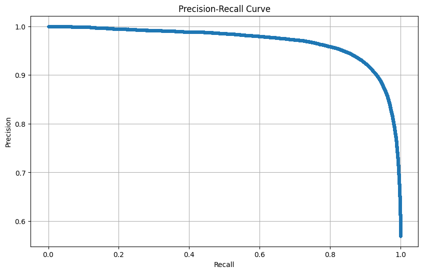
Figure 13-3. Precision-Recall.
The plot visualizes how varying the decision threshold affects both precision and recall, providing insights into the model’s capability to balance between correctly identifying positives and minimizing false positives. A good classifier strives to achieve high precision and recall simultaneously, as represented by a curve that hugs the upper-right corner of the plot.
The following code generates a Receiver Operating Characteristic (ROC) curve to evaluate the recommender system as a binary classifier. It computes the false positive rate (FPR) and true positive rate (TPR) from the binary labels and predicted scores, then plots them to visualize the trade-off between sensitivity and specificity. The Area Under the Curve (AUC) is also calculated, providing a single metric that summarizes how well the model separates liked from disliked movies. An AUC close to 1 indicates strong discriminatory power, while the dashed diagonal line represents random guessing at 50%.
fpr, tpr, _ = metrics.roc_curve(y_true_binary, y_pred)
roc_auc = metrics.auc(fpr, tpr)
plt.figure(figsize = (10, 6))
plt.plot(
fpr,
tpr,
marker = ".",
label = f"ROC Curve (AUC = {roc_auc:.2f})"
)
plt.plot(
[0, 1],
[0, 1],
linestyle = "--",
label = "50% Line"
)
plt.title("ROC Curve")
plt.xlabel("False Positive Rate")
plt.ylabel("True Positive Rate")
plt.legend()
plt.grid(True)
plt.show()
Example output shown in Figure 13-4.
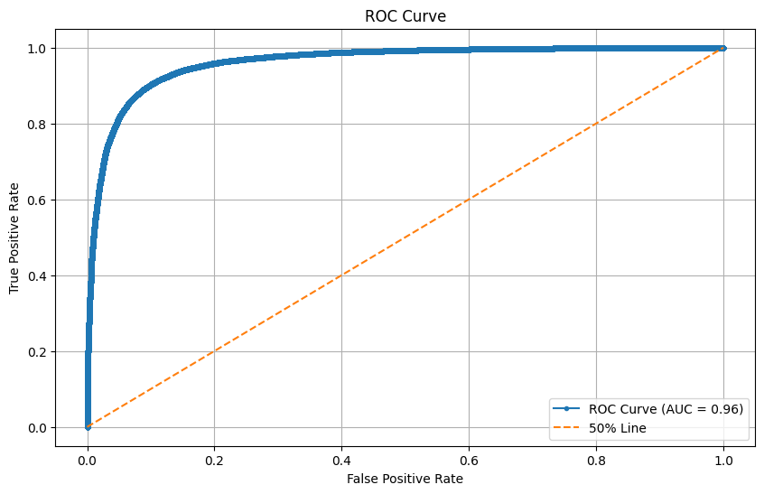
Figure 13-4. ROC/AUC.
Now let’s plot a confusion matrix.
cm = metrics.confusion_matrix(y_true_binary, y_pred_binary)
labels = ["Negative", "Positive"]
disp = metrics.ConfusionMatrixDisplay(confusion_matrix = cm, display_labels = labels)
disp.plot(cmap = "Reds", values_format = "d")
plt.title("Confusion Matrix for Recommender System")
plt.show()
Example output shown in Figure 13-5.
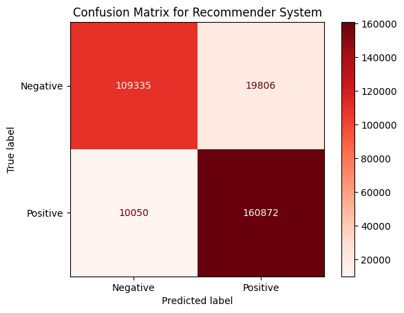
Figure 13-5. Confusion Matrix.
From these numbers, the model is performing very well at identifying liked movies (high true positives, relatively low false negatives), which is what we generally want in a recommender, since it is better to slightly “over-recommend” than to miss too many good options. The false positives are not negligible, but compared to the scale of true positives, the model’s precision and recall are both likely quite strong.
We can output more detailed metrics:
print("Accuracy :", metrics.accuracy_score(y_true_binary, y_pred_binary))
print("Precision:", metrics.precision_score(y_true_binary, y_pred_binary))
print("Recall :", metrics.recall_score(y_true_binary, y_pred_binary))
print("F1-score :", metrics.f1_score(y_true_binary, y_pred_binary))
print("\nClassification Report:\n")
print(metrics.classification_report(y_true_binary, y_pred_binary))
Example output:
Accuracy : 0.9005008948120895
Precision: 0.8903795702852588
Recall : 0.9412012496928424
F1-score : 0.9150853242320819
Classification Report:
precision recall f1-score support
0 0.92 0.85 0.88 129141
1 0.89 0.94 0.92 170922
accuracy 0.90 300063
macro avg 0.90 0.89 0.90 300063
weighted avg 0.90 0.90 0.90 300063
From these results, the recommender slightly favors recall over precision, which is often the right trade-off in recommendation systems. It errs on the side of recommending more, rather than risking missing good items.
Now let’s look at user coverage and item diversity:
unique_users = ratings_df["user_id"].nunique()
users_with_recommendations = len(set([uid for uid, _, _, _, _ in predictions]))
user_coverage = users_with_recommendations / unique_users
print(f"User Coverage: {user_coverage:.2%}")
recommended_items = set([iid for _, iid, _, _, _ in predictions])
total_items = movies_df["id"].nunique()
item_diversity = len(recommended_items) / total_items
print(f"Item Diversity: {item_diversity:.2%}")
Example output:
User Coverage: 100.00%
Item Diversity: 7.57%
The recommender performs very well in terms of accuracy and recall and it ensures all users get recommendations. However, the relatively low item diversity suggests that it leans towards recommending a narrower part of the catalog, which might limit discovery.
Now, let’s translate the model’s internal numbering of users and movies back to the real IDs from our dataset, which is essential for producing readable recommendations:
raw_user_id_mapping = {inner_id: train.to_raw_uid(inner_id) for inner_id in range(train.n_users)}
raw_item_id_mapping = {inner_id: train.to_raw_iid(inner_id) for inner_id in range(train.n_items)}
Now we’ll take the SVD model’s learned user embeddings (latent factors) and create a clean DataFrame that links each original user ID to their learned preferences:
user_factors = model.pu
user_factors_df = pd.DataFrame({
"id": [raw_user_id_mapping[idx] for idx in range(user_factors.shape[0])],
"factors": [np.array(factor, dtype = np.float32) for factor in user_factors]
})
user_factors_df = user_factors_df.sort_values(by = "id")
user_factors_df.head()
and we’ll repeat this for movies:
item_factors = model.qi
item_factors_df = pd.DataFrame({
"id": [raw_item_id_mapping[idx] for idx in range(item_factors.shape[0])],
"factors": [np.array(factor, dtype = np.float32) for factor in item_factors]
})
item_factors_df = item_factors_df.sort_values(by="id")
item_factors_df.head()
Using these DataFrames, we’ll merge the factors first for users:
users_df = pd.merge(
users_df,
user_factors_df,
on = "id",
how = "left"
)
users_df = users_df.dropna(subset = ["factors"])
users_df.head()
and movies:
movies_df = pd.merge(
movies_df,
item_factors_df,
on = "id",
how = "left"
)
movies_df = movies_df.dropna(subset = ["factors"])
movies_df.head()
The factors in both cases will be stored in the VECTOR columns in the respective tables.
Let’s now connect to SingleStore:
from sqlalchemy import *
db_connection = create_engine(connection_url)
First, we’ll ensure that we start with empty tables:
tables = ["users", "movies", "ratings"]
with db_connection.begin() as conn:
for table in tables:
conn.execute(text(f"TRUNCATE TABLE {table};"))
We’ll also ensure that the VECTOR columns are of the appropriate length for the factors we want to store:
n_factors = best_params["n_factors"]
tables = ["users", "movies"]
for table in tables:
with db_connection.begin() as conn:
conn.execute(text(f"ALTER TABLE {table} DROP COLUMN factors;"))
conn.execute(text(f"ALTER TABLE {table} ADD COLUMN factors VECTOR({n_factors});"))
Then we’ll write the DataFrames. First users:
users_df.to_sql(
"users",
con = db_connection,
if_exists = "append",
index = False,
chunksize = 1000
)
then movies:
movies_df.to_sql(
"movies",
con = db_connection,
if_exists = "append",
index = False,
chunksize = 1000
)
and finally, ratings:
ratings_df.to_sql(
"ratings",
con = db_connection,
if_exists = "append",
index = False,
chunksize = 1000
)
Example Queries
Let’s now run some queries on the database.
First, let’s compute similarity between a user and a movie.
SELECT
u.id AS user_id,
m.title,
(u.factors <*> m.factors) AS similarity_score
FROM users u, movies m
WHERE u.id = 1 AND m.id = 989;
Example output:
+---------+-----------------------------------+----------------------+
| user_id | title | similarity_score |
+---------+-----------------------------------+----------------------+
| 1 | Colony on the Stephen Fort (1978) | -0.11794045567512512 |
+---------+-----------------------------------+----------------------+
The similarity score between user and the movie is slightly negative, indicating the movie’s latent features are not aligned with the user’s preferences.
Next, let’s find top movies for a user based on similarity.
SELECT
m.title,
m.genres,
(u.factors <*> m.factors) AS similarity_score
FROM users u, movies m
WHERE u.id = 1
ORDER BY similarity_score DESC
LIMIT 10;
Example output:
+-----------------------------------------+-------------------------+---------------------+
| title | genres | similarity_score |
+-----------------------------------------+-------------------------+---------------------+
| Misadventures: The Usually Story (1977) | Comedy | 0.5429962277412415 |
| Hear Scream (2002) | Horror | 0.34303292632102966 |
| The Last Curse (1970) | Horror|Film-Noir | 0.3351995050907135 |
| The Around Robot (2000) | Children's|Sci-Fi | 0.29692572355270386 |
| The Fiasco of the Operation (1999) | Comedy | 0.2640172243118286 |
| Natural Player (2008) | Film-Noir | 0.24245382845401764 |
| The Symphony of the Choose (1999) | Musical|Mystery | 0.23745118081569672 |
| Similar Owner (1990) | Drama|Documentary|Crime | 0.23657731711864471 |
| The Mansion of the Skill (1998) | Mystery | 0.21089650690555573 |
| Financial People (1974) | Sci-Fi | 0.20892225205898285 |
+-----------------------------------------+-------------------------+---------------------+
For user 1, the top 10 movies by latent factor similarity include a mix of genres (Comedy, Horror, Sci-Fi), showing which movies are most aligned with their inferred tastes.
Now, let’s calculate the similarity matrix between users and movies.
SELECT
u.id AS user_id,
m.title,
(u.factors <*> m.factors) AS similarity_score
FROM users u, movies m
ORDER BY similarity_score DESC
LIMIT 10;
Example output:
+---------+-------------------------------------+--------------------+
| user_id | title | similarity_score |
+---------+-------------------------------------+--------------------+
| 977 | Star: The Difference Story (2006) | 1.3437403440475464 |
| 5209 | The Legend of Trevor Hines (2023) | 1.2662196159362793 |
| 1265 | Assault: The Meeting Story (1975) | 1.2640817165374756 |
| 4589 | The Legend of Brian Morales (2008) | 1.2541571855545044 |
| 2763 | A Singularity in Alberthaven (2008) | 1.2411115169525146 |
| 3776 | Measure Echo (1963) | 1.2297375202178955 |
| 2188 | The Colony of the Pull (1975) | 1.2200380563735962 |
| 5519 | A Singularity in Alberthaven (2008) | 1.2074799537658691 |
| 1730 | The Fiasco of the Operation (1999) | 1.2000336647033691 |
| 5531 | Guardian: The Child Story (2007) | 1.1966848373413086 |
+---------+-------------------------------------+--------------------+
We can see that across all users, the highest similarity scores identify pairs where a user strongly matches a movie’s latent factors.
Next, let’s recommend top movies for each user.
SELECT
u.id AS user_id,
m.title,
(u.factors <*> m.factors) AS similarity_score
FROM users u, movies m
ORDER BY u.id, similarity_score DESC
LIMIT 10;
Example output:
+---------+-----------------------------------------+---------------------+
| user_id | title | similarity_score |
+---------+-----------------------------------------+---------------------+
| 1 | Misadventures: The Usually Story (1977) | 0.5429962277412415 |
| 1 | Hear Scream (2002) | 0.34303292632102966 |
| 1 | The Last Curse (1970) | 0.3351995050907135 |
| 1 | The Around Robot (2000) | 0.29692572355270386 |
| 1 | The Fiasco of the Operation (1999) | 0.2640172243118286 |
| 1 | Natural Player (2008) | 0.24245382845401764 |
| 1 | The Symphony of the Choose (1999) | 0.23745118081569672 |
| 1 | Similar Owner (1990) | 0.23657731711864471 |
| 1 | The Mansion of the Skill (1998) | 0.21089650690555573 |
| 1 | Financial People (1974) | 0.20892225205898285 |
+---------+-----------------------------------------+---------------------+
This query ranks movies for each user individually by similarity.
Now, let’s find the top-10 movies for a given user, excluding already-rated movies.
SELECT
m.id,
m.title,
m.genres,
(u.factors <*> m.factors) AS predicted_rating
FROM users u
JOIN movies m ON TRUE
WHERE u.id = 1
AND m.id NOT IN (SELECT movie_id FROM ratings WHERE user_id = u.id)
ORDER BY predicted_rating DESC
LIMIT 10;
Example output:
+------+-----------------------------------+------------------------------+---------------------+
| id | title | genres | predicted_rating |
+------+-----------------------------------+------------------------------+---------------------+
| 354 | The Last Curse (1970) | Horror|Film-Noir | 0.3351995050907135 |
| 2921 | The Around Robot (2000) | Children's|Sci-Fi | 0.29692572355270386 |
| 550 | Natural Player (2008) | Film-Noir | 0.24245382845401764 |
| 424 | The Symphony of the Choose (1999) | Musical|Mystery | 0.23745118081569672 |
| 3283 | Similar Owner (1990) | Drama|Documentary|Crime | 0.23657731711864471 |
| 352 | The Mansion of the Skill (1998) | Mystery | 0.21089650690555573 |
| 1251 | Financial People (1974) | Sci-Fi | 0.20892225205898285 |
| 1760 | A Protocol in Palmerville (2014) | Thriller|Musical|Documentary | 0.19852496683597565 |
| 1453 | Ground Witness (2022) | Mystery | 0.19429895281791687 |
| 554 | Tale on the James Station (1938) | Fantasy | 0.19405868649482727 |
+------+-----------------------------------+------------------------------+---------------------+
The results show predicted top movies for user 1 that they haven’t rated yet, allowing the recommender to suggest new content rather than items already seen.
Next, let’s find the top movies predicted ratings.
SELECT
m.title,
m.genres,
(m.factors <*> u.factors) AS predicted_rating
FROM movies m, users u
WHERE u.gender = 'F' AND u.age = 18
ORDER BY predicted_rating DESC
LIMIT 10;
Example output:
+------------------------------------+-----------------------+--------------------+
| title | genres | predicted_rating |
+------------------------------------+-----------------------+--------------------+
| Guardian: The Child Story (2007) | Fantasy | 1.1966848373413086 |
| Witness on the Jack Row (1994) | Mystery | 1.0511256456375122 |
| The Recon of the Station (2012) | Action|Sci-Fi|Fantasy | 0.9973692893981934 |
| The Candidate and the Force (1974) | Action | 0.9807149171829224 |
| Guardian: The Child Story (2007) | Fantasy | 0.9801395535469055 |
| The Colony of the Pull (1975) | Sci-Fi|Action | 0.9595403671264648 |
| The Strike of the Prevent (1992) | Action|Adventure | 0.9424246549606323 |
| The Deep and the Caper (1970) | Comedy|Adventure | 0.9109749794006348 |
| Witness on the Jack Row (1994) | Mystery | 0.9075832366943359 |
| The Model and the Blunder (1997) | Comedy | 0.9016542434692383 |
+------------------------------------+-----------------------+--------------------+
For female users aged 18, the top predicted ratings highlight movies most likely to appeal to this demographic.
Next, let’s find Movies Similar to Computer Whisper.
SELECT
m.title,
(m.factors <*> qv.factors) AS similarity_score
FROM movies m,
(SELECT factors AS factors FROM movies WHERE id = 2) AS qv -- Computer Whisper
ORDER BY similarity_score DESC
LIMIT 10;
Example output:
+---------------------------------+---------------------+
| title | similarity_score |
+---------------------------------+---------------------+
| Computer Whisper (1999) | 0.8242829442024231 |
| Official Appear (2002) | 0.24847206473350525 |
| Recon: The Decide Story (1999) | 0.24466082453727722 |
| Theory Star (1974) | 0.22606335580348969 |
| The Public Honor (1989) | 0.2253294289112091 |
| Measure Echo (1963) | 0.2225538045167923 |
| The Asylum of the Which (1944) | 0.22162827849388123 |
| Into Somebody (1989) | 0.20337367057800293 |
| Summer: The System Story (2005) | 0.19393306970596313 |
| Reveal Echo (1975) | 0.19028185307979584 |
+---------------------------------+---------------------+
The results show the 10 movies most similar to Computer Whisper based on latent factors, useful for movie similarity recommendations.
Next, let’s find users similar to Computer Whisper.
SELECT
u.gender,
u.age,
u.occupation,
u.zip_code,
(m.factors <*> u.factors) AS similarity_score
FROM movies m, users u
WHERE m.id = 2 -- Computer Whisper
ORDER BY similarity_score DESC
LIMIT 10;
Example output:
+--------+------+----------------------+----------+---------------------+
| gender | age | occupation | zip_code | similarity_score |
+--------+------+----------------------+----------+---------------------+
| F | 56 | writer | 56621 | 0.38576820492744446 |
| M | 50 | clerical/admin | 81935 | 0.34670817852020264 |
| M | 18 | academic/educator | 39898 | 0.3156816363334656 |
| M | 25 | sales/marketing | 42958 | 0.3128150999546051 |
| M | 56 | college/grad student | 77355 | 0.3116776943206787 |
| M | 45 | programmer | 24678 | 0.3059542775154114 |
| M | 1 | other | 93494 | 0.30399641394615173 |
| M | 35 | lawyer | 8573 | 0.30269429087638855 |
| M | 50 | scientist | 60440 | 0.30082404613494873 |
| F | 25 | clerical/admin | 16843 | 0.2997968792915344 |
+--------+------+----------------------+----------+---------------------+
Here, we identify users whose preferences align with the movie Computer Whisper. This is helpful for collaborative filtering or target user analysis.
Now, let’s find the most similar users to a given user.
SELECT
u2.id AS other_user_id,
(u1.factors <*> u2.factors) AS similarity_score
FROM users u1
JOIN users u2 ON u1.id <> u2.id
WHERE u1.id = 1
ORDER BY similarity_score DESC
LIMIT 10;
Example output:
+---------------+--------------------+
| other_user_id | similarity_score |
+---------------+--------------------+
| 12 | 0.6378978490829468 |
| 1119 | 0.6228543519973755 |
| 5903 | 0.6025550961494446 |
| 3949 | 0.5898808240890503 |
| 3230 | 0.5796329975128174 |
| 3224 | 0.5751187801361084 |
| 2458 | 0.5426428318023682 |
| 5703 | 0.5250847935676575 |
| 5635 | 0.5229214429855347 |
| 4364 | 0.5180311799049377 |
+---------------+--------------------+
Lists the 10 users most similar to user 1, based on latent factors, which can aid in social or collaborative recommendations.
Next, let’s see a user activity overview.
SELECT
u.gender,
u.age,
COUNT(r.rating) AS num_ratings,
AVG(r.rating) AS avg_rating
FROM users u
LEFT JOIN ratings r ON u.id = r.user_id
GROUP BY u.gender, u.age
ORDER BY u.gender, u.age;
Example output:
+--------+------+-------------+--------------------+
| gender | age | num_ratings | avg_rating |
+--------+------+-------------+--------------------+
| F | 1 | 38749 | 3.624532245993445 |
| F | 18 | 39556 | 3.6168722823339063 |
| F | 25 | 40740 | 3.6332596956308296 |
| F | 35 | 46039 | 3.61925758595973 |
| F | 45 | 37791 | 3.6272128284512184 |
| F | 50 | 44119 | 3.637820440173168 |
| F | 56 | 39978 | 3.6664915703637 |
| M | 1 | 101128 | 3.5906771616169606 |
| M | 18 | 98524 | 3.6053753400186754 |
| M | 25 | 104535 | 3.6049744104845267 |
| M | 35 | 98053 | 3.602847439649985 |
| M | 45 | 100718 | 3.5905399233503443 |
| M | 50 | 107005 | 3.626578197280501 |
| M | 56 | 103274 | 3.617870906520518 |
+--------+------+-------------+--------------------+
This aggregates rating behavior by gender and age, showing how many ratings each demographic gives on average and their typical rating score.
Now, let’s find the most active users.
SELECT
u.id,
u.gender,
u.age,
COUNT(r.rating) AS num_ratings
FROM users u
LEFT JOIN ratings r ON u.id = r.user_id
GROUP BY u.id, u.gender, u.age
ORDER BY num_ratings DESC
LIMIT 10;
Example output:
+------+--------+------+-------------+
| id | gender | age | num_ratings |
+------+--------+------+-------------+
| 4021 | M | 35 | 411 |
| 277 | M | 45 | 410 |
| 5251 | M | 1 | 409 |
| 4693 | M | 50 | 398 |
| 367 | M | 1 | 395 |
| 1434 | F | 56 | 392 |
| 3421 | M | 35 | 385 |
| 5417 | M | 50 | 377 |
| 4466 | M | 50 | 372 |
| 4659 | F | 45 | 365 |
+------+--------+------+-------------+
The query ranks users by the total number of ratings submitted, identifying highly engaged users in the dataset.
Now, let’s look at the distribution of ratings.
SELECT
rating,
COUNT(*) AS count
FROM ratings
GROUP BY rating
ORDER BY rating;
Example output:
+--------+--------+
| rating | count |
+--------+--------+
| 1 | 663 |
| 2 | 46249 |
| 3 | 383952 |
| 4 | 477652 |
| 5 | 91693 |
+--------+--------+
The results show the frequency of each rating value. Most ratings are 3 or 4, indicating a tendency toward neutral-to-positive evaluations.
Now, let’s look at average ratings over time.
SELECT
YEAR(FROM_UNIXTIME(r.timestamp)) AS rating_year,
AVG(r.rating) AS avg_rating
FROM ratings r
GROUP BY rating_year
ORDER BY rating_year;
Example output:
+-------------+--------------------+
| rating_year | avg_rating |
+-------------+--------------------+
| 2000 | 3.6923076923076925 |
| 2001 | 3.6232258064516127 |
| 2002 | 3.6179660366906017 |
| 2003 | 3.6130733966663406 |
+-------------+--------------------+
Tracks the average rating per year, showing a slight downward trend from 2000 to 2003.
Next, let’s look at the top average ratings by genre.
SELECT
genres,
ROUND(AVG(rating), 2) AS avg_rating,
COUNT(*) AS num_ratings
FROM movies m
JOIN ratings r ON m.id = r.movie_id
GROUP BY genres
ORDER BY avg_rating DESC
LIMIT 10;
Example output:
+----------------------------+------------+-------------+
| genres | avg_rating | num_ratings |
+----------------------------+------------+-------------+
| Fantasy|Romance|Drama | 5.00 | 5 |
| Documentary|War | 4.77 | 13 |
| Sci-Fi|Action|Comedy | 4.67 | 3 |
| Sci-Fi|Romance|Documentary | 4.50 | 4 |
| Documentary|Crime|Horror | 4.35 | 17 |
| Horror|Children's | 4.24 | 17 |
| Thriller|Musical | 4.21 | 33 |
| Sci-Fi|Documentary | 4.21 | 19 |
| Sci-Fi|Film-Noir | 4.19 | 149 |
| War|Musical | 4.18 | 40 |
+----------------------------+------------+-------------+
The query identifies genres with the highest average ratings. Niche combinations (e.g., Fantasy|Romance|Drama) often have very high ratings but few total ratings.
Now, let’s find genre preferences by gender/age group.
SELECT
u.gender,
u.age,
m.genres,
ROUND(AVG(r.rating),2) AS avg_rating,
COUNT(*) AS num_ratings
FROM users u
JOIN ratings r ON u.id = r.user_id
JOIN movies m ON m.id = r.movie_id
GROUP BY u.gender, u.age, m.genres
ORDER BY avg_rating DESC
LIMIT 10;
Example output:
+--------+------+----------------------------+------------+-------------+
| gender | age | genres | avg_rating | num_ratings |
+--------+------+----------------------------+------------+-------------+
| M | 25 | Thriller|Musical | 5.00 | 2 |
| M | 50 | War|Musical | 5.00 | 4 |
| M | 50 | Romance|Drama|Horror | 5.00 | 3 |
| M | 25 | Documentary|War | 5.00 | 10 |
| M | 1 | Documentary|Crime|Horror | 5.00 | 6 |
| M | 35 | Sci-Fi|Romance|Documentary | 5.00 | 2 |
| M | 25 | Sci-Fi|Documentary | 5.00 | 4 |
| M | 1 | Sci-Fi|Film-Noir | 5.00 | 2 |
| F | 45 | Sci-Fi|Film-Noir | 5.00 | 2 |
| F | 56 | Action|Mystery|Western | 5.00 | 3 |
+--------+------+----------------------------+------------+-------------+
The query highlights the top-rated genres within specific gender and age groups, showing demographic-based taste patterns.
Next, let’s find movies that are both highly rated and diverse (long-tail hits).
SELECT
m.title,
m.genres,
COUNT(r.rating) AS num_ratings,
AVG(r.rating) AS avg_rating
FROM movies m
JOIN ratings r ON m.id = r.movie_id
GROUP BY m.id, m.title, m.genres
HAVING COUNT(r.rating) BETWEEN 20 AND 100
ORDER BY avg_rating DESC
LIMIT 10;
Example output:
+--------------------------------------+-------------------+-------------+--------------------+
| title | genres | num_ratings | avg_rating |
+--------------------------------------+-------------------+-------------+--------------------+
| The Care and the Conspiracy (1996) | Thriller|Musical | 33 | 4.212121212121212 |
| The West and the Victory (1930) | War|Musical | 40 | 4.175 |
| A Legacy in Cynthiafort (1970) | Animation | 43 | 4.093023255813954 |
| The Nor and the Passage (1999) | Drama|Documentary | 86 | 4.069767441860465 |
| Recon: The Decide Story (1999) | Action | 29 | 4.068965517241379 |
| Promise on the Andersen Point (1973) | Romance | 59 | 4.067796610169491 |
| Down Inside (1969) | Animation|Romance | 95 | 4.031578947368421 |
| The Guardian of the Real (1936) | Fantasy|Crime | 70 | 3.9571428571428573 |
| The Skill Fear (2018) | Horror|Thriller | 32 | 3.90625 |
| Into Somebody (1989) | Film-Noir|Comedy | 45 | 3.888888888888889 |
+--------------------------------------+-------------------+-------------+--------------------+
The query shows us movies with moderate rating counts (20–100) that achieve high average ratings, useful for surfacing underrated or “long-tail” content.
Next, let’s do a cold-start problem check (movies with few ratings).
SELECT
m.title,
COUNT(r.rating) AS num_ratings
FROM movies m
LEFT JOIN ratings r ON m.id = r.movie_id
GROUP BY m.id, m.title
HAVING COUNT(r.rating) < 5
ORDER BY num_ratings ASC
LIMIT 10;
Example output:
+-------------------------------------------+-------------+
| title | num_ratings |
+-------------------------------------------+-------------+
| The Secret of Tammy Stevens (2002) | 1 |
| Piece Trail (1976) | 2 |
| The Fall of Jessica Allen (1978) | 2 |
| Heart: The Environmental Story (1970) | 3 |
| Federal Echo (1985) | 3 |
| A Spotlight in Port Zacharyborough (1985) | 3 |
| The Ground and the Fury (2004) | 3 |
| Awakening: The Become Story (1991) | 3 |
| Caper: The Class Story (1970) | 3 |
| Shoulder Tales (1986) | 3 |
+-------------------------------------------+-------------+
The query identifies movies with very few ratings (< 5), highlighting items for which the system has little data to make recommendations.
Finally, let’s find the ratings density (how filled the user–movie matrix is).
SELECT
COUNT(*) / (SELECT COUNT(*) FROM users) / (SELECT COUNT(*) FROM movies) AS density
FROM ratings;
Example output:
+------------+
| density |
+------------+
| 0.53246790 |
+------------+
This shows that approximately 53% of the possible user–movie ratings exist, indicating a moderately sparse matrix suitable for collaborative filtering.
Summary
In this chapter, we developed a movie recommendation system using collaborative filtering and matrix factorization. We began by preparing a dataset of user–movie ratings and splitting it into training and test sets. Using the Surprise library, we trained an SVD model to learn latent factors that represent both user preferences and movie characteristics.
We evaluated the model’s predictive performance on unseen data by calculating standard classification-style metrics such as accuracy, precision, recall and F1-score, as well as generating a classification report to understand per-class behavior. The model achieved strong performance, showing its ability to generalize to new ratings.
To assess recommendation quality beyond prediction accuracy, we also measured user coverage (the proportion of users who receive at least one recommendation) and item diversity (the proportion of unique recommended items across all users). Our system achieved full user coverage and reasonable item diversity, indicating that it can serve relevant recommendations to every user while offering variety.
We then extracted the learned user and item factor vectors from the trained model and mapped them back to their original IDs. These factor embeddings capture hidden patterns in the data and can be stored in a database for fast retrieval and future use. We created VECTOR columns in our SingleStore database to store these embeddings and demonstrated how SQL queries can use them to generate recommendations directly. These queries showed how recommendation logic can be executed efficiently at query time without needing to rerun the model.
By the end of this chapter, we built a fully working, end-to-end movie recommender pipeline, from data preparation and model training to evaluation, embedding extraction and database integration, laying the groundwork for scalable, real-world recommendation systems.
Chapter 14: Agriculture Analytics Using R
Introduction
Agriculture today is increasingly data-driven. From monitoring rainfall and soil quality to forecasting crop yields, the ability to analyze large, diverse datasets is central to improving productivity and ensuring food security. Modern farms and research institutions generate data at scale, such as sensor readings, weather records and yield observations. These require powerful tools to store, query and analyze efficiently.
R has long been a popular language for statistical computing and visualization, making it a natural choice for agricultural analytics. Its rich ecosystem of packages allows analysts to explore data, build predictive models and present results in an accessible way.
SingleStore complements R by providing a high-performance, distributed SQL database capable of handling large datasets and real-time analytics. By combining R and SingleStore, we can create a workflow where agricultural data are stored and queried efficiently in SingleStore, while advanced statistical analysis and visualization are performed in R.
In this chapter, we’ll walk through a practical example of applying R for agriculture analytics with SingleStore. We’ll begin by setting up the environment, then move on to querying agricultural data, performing statistical analysis and building visualizations that highlight meaningful insights.
For this chapter, we’ll use a synthetic agricultural dataset that has been generated to resemble real-world farming data, modeled on Indonesia. Indonesia is one of the world’s largest agricultural producers, with a diverse range of crops such as rice, maize and palm oil grown across its many islands. The dataset includes information such as major crop types, yield per hectare and rainfall levels. By basing our synthetic dataset on this context, we capture the complexity of working with multiple crops and varying environmental conditions, while keeping the data lightweight, reproducible and free from concerns around availability, privacy or licensing.
Create the Database
In the SingleStore Portal, let’s use the SQL Editor to create a new database. Call this agriculture_db, as follows:
CREATE DATABASE IF NOT EXISTS agriculture_db;
Fill in the Notebook
We’ll need to install R. We’ll do this using Conda, as follows:
!conda install --quiet -c conda-forge \
r-base \
r-essentials \
r-rjava \
r-rjdbc \
r-leaflet \
rpy2 \
-y
Using rpy2, we’ll be to enable the %%R cell magic in Jupyter, allowing us to run R code directly in notebook cells alongside Python.
First, we’ll read the dataset:
agri_csv_url <- ...
agri_df <- read.csv(agri_csv_url, stringsAsFactors = FALSE)
kable(head(agri_df, 10))
Example output:
|province | latitude| longitude| rainfall| soil_ph|crop | yield| year|
|:------------------|--------:|---------:|--------:|-------:|:--------|-----:|----:|
|West Kalimantan | 0.7313| 112.3939| 3284| 5.05|Palm Oil | 3.55| 2023|
|Riau Islands | -0.1721| 104.6600| 2549| 6.51|Coconut | 3.61| 2024|
|Southeast Sulawesi | -3.7564| 122.4373| 2033| 5.33|Rice | 4.88| 2022|
|Bali | -8.2479| 114.5624| 2412| 5.92|Coffee | 1.20| 2021|
|East Nusa Tenggara | -8.4012| 123.4993| 1226| 5.51|Rice | 4.36| 2023|
|North Maluku | 0.9559| 128.0133| 2707| 6.31|Coconut | 3.86| 2016|
|North Sulawesi | 1.5828| 124.9783| 2548| 5.73|Coconut | 4.11| 2019|
|Aceh | 4.5620| 96.3068| 2135| 5.73|Corn | 3.35| 2022|
|Central Sulawesi | -1.4216| 120.4337| 2197| 5.74|Rice | 4.59| 2017|
|Central Kalimantan | -2.8499| 114.2137| 2798| 4.65|Rubber | 0.79| 2024|
In the next step, we’ll clean and prepare the dataset for analysis. The year column is first converted to an integer and then to an ordered factor, ensuring that visualizations display the years in ascending order rather than alphabetically. The crop column is converted to a factor so that crop names are treated as categorical values. Finally, we’ll filter the dataset to focus on six major crops, creating a smaller dataset that is ready for plotting.
agri_df$year <- as.integer(agri_df$year)
agri_df$year <- factor(agri_df$year, levels = sort(unique(agri_df$year)))
agri_df$crop <- as.factor(agri_df$crop)
major_crops <- c("Rice", "Corn", "Coffee", "Palm Oil", "Rubber", "Cocoa")
plot_df <- agri_df %>% filter(crop %in% major_crops)
Next, let’s creates a density plot showing the distribution of rainfall for each major crop in the dataset.
ggplot(plot_df, aes(x = rainfall, fill = crop)) +
geom_density(alpha = 0.4) +
theme(
axis.title = element_text(size = 16),
plot.title = element_text(size = 18, face = "bold"),
legend.title = element_text(size = 14),
legend.text = element_text(size = 12)
) +
labs(
title = "Rainfall Distribution by Crop",
x = "Rainfall (mm)",
y = "Density",
fill = "Crop"
)
Example output is shown in Figure 14-1.
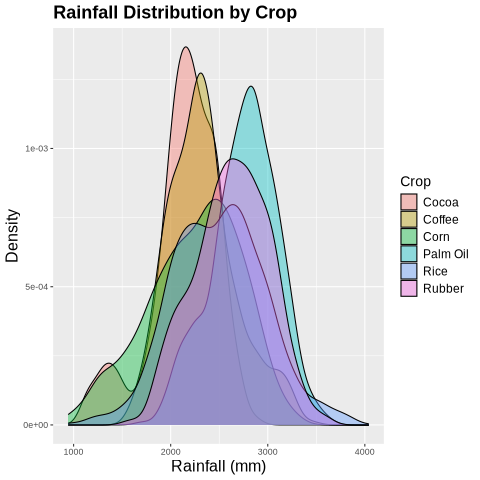
Figure 14-1. Rainfall by Crop.
In the density plot, the y-axis represents the probability density of rainfall values. Taller parts of the curve indicate rainfall levels that are more common for a given crop, while the area under each curve sums to one, allowing easy comparison between crops.
Next, let’s creates a violin plot showing the distribution of soil pH for each major crop.
ggplot(plot_df, aes(x = reorder(crop, soil_ph, FUN = median), y = soil_ph, fill = crop)) +
geom_violin(trim = FALSE, show.legend = FALSE) +
theme(
axis.title = element_text(size = 16),
axis.text.y = element_text(size = 14),
axis.text.x = element_text(size = 14),
plot.title = element_text(size = 18, face = "bold")
) +
labs(
title = "Soil pH Distribution per Crop",
x = "",
y = "Soil pH"
)
Example output is shown in Figure 14-2.
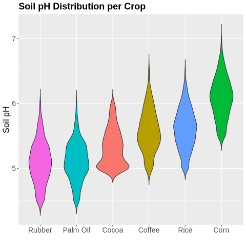
Figure 14-2. Soil pH per Crop.
Now, let’s look at yield per crop.
ggplot(plot_df, aes(x = reorder(crop, yield, FUN = median), y = yield, fill = crop)) +
geom_violin(trim = FALSE, show.legend = FALSE) +
theme(
axis.title = element_text(size = 16),
axis.text.y = element_text(size = 14),
axis.text.x = element_text(size = 14),
plot.title = element_text(size = 18, face = "bold")
) +
labs(
title = "Yield Distribution per Crop",
x = "",
y = "Yield (tons/ha)"
)
Example output is shown in Figure 14-3.
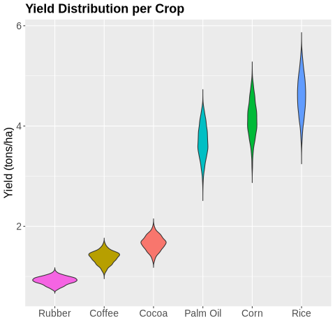
Figure 14-3. Yield per Crop.
Next, let’s look at the average yield for top crops.
ggplot(plot_df, aes(x = year, y = yield, color = crop, group = crop)) +
stat_summary(fun = mean, geom = "line", linewidth = 1.2) +
theme(
axis.text.x = element_text(angle = 45, hjust = 1),
axis.title = element_text(size = 16),
plot.title = element_text(size = 18, face = "bold"),
legend.text = element_text(size = 12),
legend.title = element_text(size = 14)
) +
labs(
title = "Average Yield Over Years for Top Crops",
x = "Year",
y = "Yield (tons/ha)",
color = "Crop"
)
Example output shown in Figure 14-4.
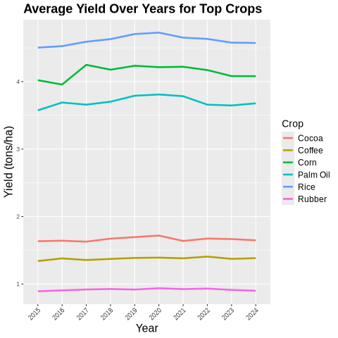
Figure 14-4. Average Yield.
Finally, let’s look at yield across provinces.
ggplot(agri_df, aes(x = longitude, y = latitude, color = yield)) +
geom_point(alpha = 0.7) +
scale_color_gradient(low = "yellow", high = "darkgreen") +
theme(
axis.text = element_text(size = 14),
axis.title = element_text(size = 16),
plot.title = element_text(size = 18, face = "bold"),
legend.text = element_text(size = 12),
legend.title = element_text(size = 14)
) +
labs(title = "Yield Distribution Across Provinces",
x = "Longitude",
y = "Latitude",
color = "Yield (tons/ha)"
)
Example output is shown in Figure 14-5.
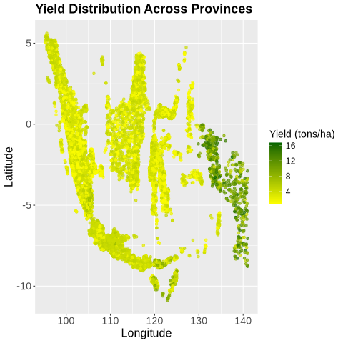
Figure 14-5. Yields across Provinces.
Next, let create a machine learning model. First, we’ll create the train/test split:
set.seed(42)
train_index <- sample(seq_len(nrow(agri_df)), size = 0.8 * nrow(agri_df))
train <- agri_df[train_index, ]
test <- agri_df[-train_index, ]
and then we’ll use Random Forest because it is a robust, flexible machine learning algorithm for both classification and regression. It combines many decision trees to improve predictive accuracy, reduce overfitting and handle complex, non-linear relationships in the data, such as the interactions between crop yields, rainfall and soil properties.
rf_model <- randomForest(
yield ~ latitude + longitude + rainfall + soil_ph + crop + year,
data = train,
ntree = 250
)
print(rf_model)
The output shows that the model produces accurate predictions on the training data.
Call:
randomForest(formula = yield ~ latitude + longitude + rainfall + soil_ph + crop + year, data = train, ntree = 250)
Type of random forest: regression
Number of trees: 250
No. of variables tried at each split: 2
Mean of squared residuals: 0.1213262
% Var explained: 97.87
Now, we’ll predict and evaluate:
pred <- predict(rf_model, newdata = test)
correlation <- cor(pred, test$yield)
cat("Correlation between predicted and actual yield:", round(correlation, 3), "\n")
rmse <- sqrt(mean((pred - test$yield)^2))
cat("Root Mean Squared Error (RMSE):", round(rmse, 3), "\n")
mae <- mean(abs(pred - test$yield))
cat("Mean Absolute Error (MAE):", round(mae, 3), "\n")
Example output:
Correlation between predicted and actual yield: 0.989
Root Mean Squared Error (RMSE): 0.358
Mean Absolute Error (MAE): 0.245
These metrics show that the Random Forest model predicts crop yields very accurately. The predicted and actual yields are highly correlated and the low RMSE and MAE indicate that the predictions are close to the true values on average.
We can visualize actual versus predicted:
ggplot(data.frame(actual = test$yield, predicted = pred), aes(x = actual, y = predicted)) +
geom_point(alpha = 0.6, color = "darkgreen") +
geom_abline(slope = 1, intercept = 0, linetype = "dashed", color = "red") +
theme(
axis.text = element_text(size = 14),
axis.title = element_text(size = 16),
plot.title = element_text(size = 18, face = "bold")
) +
labs(
title = "Random Forest: Actual vs Predicted Yield",
x = "Actual Yield (tons/ha)",
y = "Predicted Yield (tons/ha)"
)
Example output is shown in Figure 14-6.
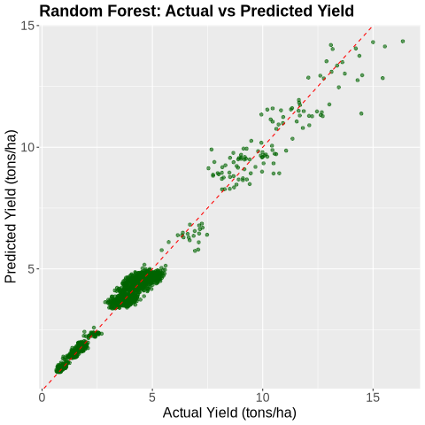
Figure 14-6. Actual vs. Predicted.
Let’s look feature importance.
importance_df <- as.data.frame(importance(rf_model))
importance_df$feature <- rownames(importance_df)
importance_df <- importance_df %>% arrange(desc(IncNodePurity))
ggplot(importance_df, aes(x = reorder(feature, IncNodePurity), y = IncNodePurity, fill = feature)) +
geom_col(show.legend = FALSE) +
coord_flip() +
theme(
axis.text = element_text(size = 14),
axis.title = element_text(size = 16),
plot.title = element_text(size = 18, face = "bold")
) +
labs(
title = "Random Forest Feature Importance",
x = "Feature",
y = "Importance (IncNodePurity)"
)
Example output in is shown in Figure 14-7.
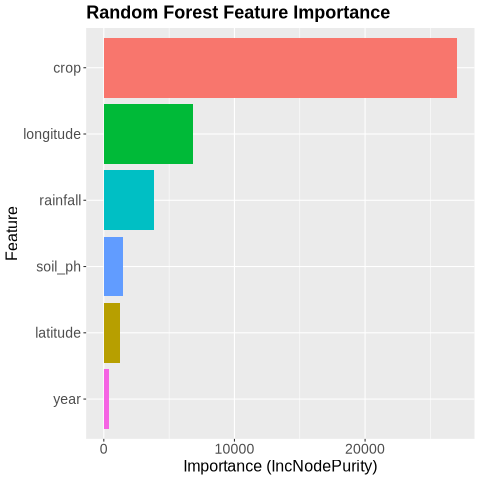
Figure 14-7. Feature Importance.
The plot shows the feature importance from the Random Forest model, measured by the increase in node purity (IncNodePurity). This measures how much a feature improves the homogeneity of the data when used to split nodes in the Random Forest trees. Higher values indicate that the feature contributes more to reducing prediction error, making it more important for the model’s decisions. It reveals that crop type is by far the most important predictor of yield, followed by longitude and rainfall, indicating that both location and crop choice strongly influence yield outcomes.
We’ll now predict on the full dataset.
agri_df$predicted_yield <- predict(rf_model, newdata = agri_df)
and then create a leaflet map:
agri_df <- agri_df %>%
mutate(
year = as.integer(as.character(year)),
predicted_yield = as.numeric(predicted_yield)
)
pal <- colorFactor(rainbow(length(unique(agri_df$crop))), domain = agri_df$crop)
m <- leaflet() %>% addTiles()
for (yr in sort(unique(agri_df$year))) {
year_data <- filter(agri_df, year == yr)
m <- m %>%
addCircleMarkers(
data = year_data,
lng = ~longitude,
lat = ~latitude,
radius = 6,
color = ~pal(crop),
stroke = TRUE, fillOpacity = 0.9,
popup = ~paste0(
"<b>Crop:</b> ", crop, "<br/>",
"<b>Year:</b> ", year, "<br/>",
"<b>Predicted Yield:</b> ", round(predicted_yield, 2), " tons/ha<br/>",
"<b>Soil pH:</b> ", round(soil_ph, 2), "<br/>",
"<b>Rainfall:</b> ", rainfall, " mm"
),
group = paste0("Year ", yr)
)
}
m <- m %>%
addLegend(
pal = pal,
values = agri_df$crop,
title = "Crop Type",
opacity = 1
) %>%
addLayersControl(
overlayGroups = paste0("Year ", sort(unique(agri_df$year))),
options = layersControlOptions(collapsed = FALSE)
)
crop_map <- "crop_map.html"
saveWidget(m, crop_map, selfcontained = TRUE)
The map is saved locally and we’ll download it.
crop_map = str(r["crop_map"][0])
mime_type, _ = mimetypes.guess_type(crop_map)
with open(crop_map, "rb") as f:
data = f.read()
b64 = base64.b64encode(data).decode()
href = f'<a download="{crop_map}" href="data:{mime_type};base64,{b64}">Download {crop_map}</a>'
HTML(href)
Example output shown in Figure 14-8.
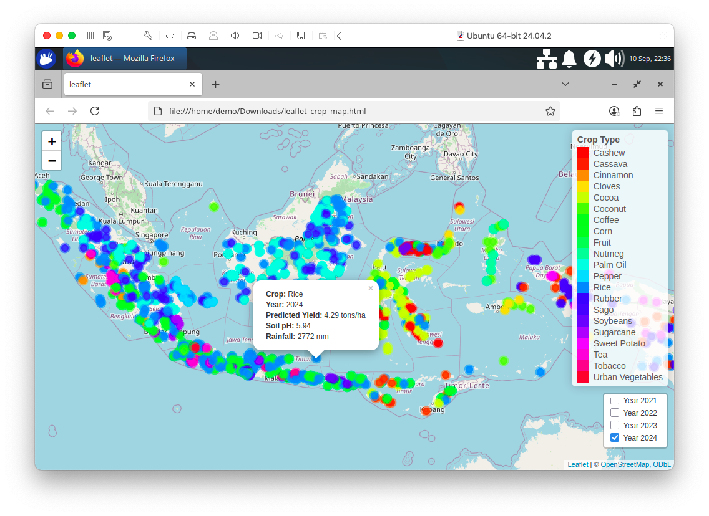
Figure 14-8. Leaflet Map.
We’ll now save the DataFrame to SingleStore. First, we’ll create a function to set up the JDBC driver and then a function to create the connection from R:
setup_driver <- function() {
driver_url <- "https://repo1.maven.org/maven2/com/singlestore/singlestore-jdbc-client/..."
driver <- "com.singlestore.jdbc.Driver"
local_dir <- "jars"
dir.create(local_dir, showWarnings = FALSE, recursive = TRUE)
driver_file <- file.path(local_dir, basename(driver_url))
if (!file.exists(driver_file)) {
download.file(driver_url, destfile = driver_file, mode = "wb", quiet = TRUE)
}
JDBC(driver, driver_file)
}
connect_db <- function(drv, host, port, database, user, password) {
url <- paste0("jdbc:singlestore://", host, ":", port, "/", database)
dbConnect(drv, url = url, user = user, password = password)
}
From Python, we’ll create a connection to SingleStore, pick up environment variables and pass them to R:
from sqlalchemy import *
db_connection = create_engine(connection_url)
url = db_connection.url
r.assign("host", url.host);
r.assign("port", int(url.port));
r.assign("database", url.database);
r.assign("user", "admin")
r.assign("password", get_secret("password"));
The value for password would be saved in Secrets after creating the workspace.
Now we’ll use the two functions defined earlier and connect to SingleStore from R:
drv <- setup_driver()
conn <- connect_db(drv, host, port, database, user, password)
and then write the DataFrame:
dbWriteTable(conn, "agriculture", agri_df, overwrite = TRUE)
Example Queries
Let’s now run some SQL queries against the database.
First, let’s find the overall yearly trends for average rainfall, soil pH, yield and predicted yield.
SELECT
year,
ROUND(AVG(rainfall), 2) AS avg_rainfall,
ROUND(AVG(soil_ph), 2) AS avg_soil_ph,
ROUND(AVG(yield), 2) AS avg_yield,
ROUND(AVG(predicted_yield), 2) AS avg_predicted_yield
FROM agriculture
GROUP BY year
ORDER BY year;
Example output:
+------+--------------+-------------+-----------+---------------------+
| year | avg_rainfall | avg_soil_ph | avg_yield | avg_predicted_yield |
+------+--------------+-------------+-----------+---------------------+
| 2015 | 2492.91 | 5.76 | 3.60 | 3.62 |
| 2016 | 2499.49 | 5.70 | 3.75 | 3.76 |
| 2017 | 2510.15 | 5.65 | 3.73 | 3.73 |
| 2018 | 2517.51 | 5.61 | 3.81 | 3.82 |
| 2019 | 2504.06 | 5.60 | 3.72 | 3.71 |
| 2020 | 2468.87 | 5.55 | 3.77 | 3.75 |
| 2021 | 2503.32 | 5.51 | 3.66 | 3.64 |
| 2022 | 2485.90 | 5.51 | 3.62 | 3.61 |
| 2023 | 2462.01 | 5.47 | 3.66 | 3.66 |
| 2024 | 2467.32 | 5.43 | 3.61 | 3.61 |
+------+--------------+-------------+-----------+---------------------+
We can see that average rainfall fluctuated slightly over while soil pH gradually decreased. Actual yields were very close to predicted yields, showing the model predicts well at a yearly aggregate level.
Next, let’s look at the top crop per year.
SELECT
year,
crop,
ROUND(avg_yield, 2) AS avg_yield,
ROUND(avg_predicted_yield, 2) AS avg_predicted_yield,
ROUND(yield_diff, 2) AS yield_diff
FROM (
SELECT
year,
crop,
AVG(yield) AS avg_yield,
AVG(predicted_yield) AS avg_predicted_yield,
AVG(predicted_yield) - AVG(yield) AS yield_diff,
ROW_NUMBER() OVER (PARTITION BY year ORDER BY AVG(yield) DESC) AS rn
FROM agriculture
GROUP BY year, crop
) ranked
WHERE rn = 1
ORDER BY year;
Example output:
+------+--------------+-----------+---------------------+------------+
| year | crop | avg_yield | avg_predicted_yield | yield_diff |
+------+--------------+-----------+---------------------+------------+
| 2015 | Sweet Potato | 13.48 | 13.57 | 0.09 |
| 2016 | Sweet Potato | 13.39 | 13.31 | -0.08 |
| 2017 | Sweet Potato | 13.56 | 13.27 | -0.29 |
| 2018 | Sweet Potato | 14.55 | 14.03 | -0.53 |
| 2019 | Sweet Potato | 14.22 | 13.84 | -0.38 |
| 2020 | Sweet Potato | 14.11 | 13.72 | -0.40 |
| 2021 | Sweet Potato | 14.08 | 13.50 | -0.58 |
| 2022 | Sweet Potato | 13.63 | 13.06 | -0.57 |
| 2023 | Sweet Potato | 14.55 | 14.07 | -0.48 |
| 2024 | Sweet Potato | 14.08 | 13.83 | -0.25 |
+------+--------------+-----------+---------------------+------------+
Sweet Potato consistently had the highest yield each year, with actual yields slightly above or below predicted values, indicating minor deviations between observed and predicted production.
Now, let’s look at the top crop per province.
SELECT
province,
crop,
ROUND(avg_yield, 2) AS avg_yield,
ROUND(avg_predicted_yield, 2) AS avg_predicted_yield,
ROUND(avg_rainfall, 2) AS avg_rainfall,
ROUND(avg_soil_ph, 2) AS avg_soil_ph
FROM (
SELECT
province,
crop,
AVG(yield) AS avg_yield,
AVG(predicted_yield) AS avg_predicted_yield,
AVG(rainfall) AS avg_rainfall,
AVG(soil_ph) AS avg_soil_ph,
ROW_NUMBER() OVER (PARTITION BY province ORDER BY AVG(yield) DESC) AS rn
FROM agriculture
GROUP BY province, crop
) ranked
WHERE rn = 1
ORDER BY province;
Example output:
+--------------------------------+------------------+-----------+---------------------+--------------+-------------+
| province | crop | avg_yield | avg_predicted_yield | avg_rainfall | avg_soil_ph |
+--------------------------------+------------------+-----------+---------------------+--------------+-------------+
| Aceh | Rice | 4.61 | 4.60 | 2509.73 | 5.53 |
| Bali | Rice | 4.67 | 4.65 | 2095.34 | 5.73 |
| Bangka-Belitung Islands | Rice | 4.65 | 4.63 | 2075.95 | 5.58 |
| Banten | Rice | 4.68 | 4.65 | 1997.59 | 5.53 |
| Bengkulu | Rice | 4.54 | 4.55 | 2285.11 | 5.56 |
| Central Java | Sugarcane | 6.76 | 6.57 | 2826.32 | 6.42 |
| Central Kalimantan | Rice | 4.61 | 4.64 | 2996.27 | 5.66 |
| Central Sulawesi | Rice | 4.52 | 4.51 | 2366.23 | 5.53 |
| East Java | Rice | 4.60 | 4.58 | 2492.16 | 5.70 |
| East Kalimantan | Rice | 4.60 | 4.60 | 2819.53 | 5.67 |
| East Nusa Tenggara | Cassava | 9.05 | 8.93 | 1330.59 | 5.30 |
| Gorontalo | Rice | 4.63 | 4.62 | 2310.28 | 5.55 |
| Jakarta Special Capital Region | Urban Vegetables | 4.56 | 4.55 | 1787.23 | 6.36 |
| Jambi | Rice | 4.60 | 4.58 | 2379.79 | 5.48 |
| Lampung | Sugarcane | 6.45 | 6.35 | 1994.26 | 6.32 |
| Maluku | Rice | 4.55 | 4.50 | 3013.06 | 5.50 |
| North Kalimantan | Rice | 4.67 | 4.64 | 2651.99 | 5.67 |
| North Maluku | Rice | 4.47 | 4.44 | 2881.55 | 5.60 |
| North Sulawesi | Rice | 4.64 | 4.62 | 2543.71 | 5.55 |
| North Sumatra | Rice | 4.61 | 4.58 | 2777.51 | 5.53 |
| Papua | Sweet Potato | 13.85 | 13.52 | 3547.97 | 5.98 |
| Riau | Coconut | 3.72 | 3.71 | 2581.79 | 6.30 |
| Riau Islands | Rice | 4.52 | 4.51 | 2428.11 | 5.44 |
| South Kalimantan | Rice | 4.62 | 4.60 | 2916.79 | 5.72 |
| South Sulawesi | Rice | 4.56 | 4.57 | 2131.88 | 5.45 |
| South Sumatra | Rice | 4.57 | 4.56 | 2149.02 | 5.53 |
| Southeast Sulawesi | Rice | 4.62 | 4.61 | 2091.85 | 5.55 |
| Special Region of Yogyakarta | Rice | 4.67 | 4.66 | 2705.25 | 5.73 |
| West Java | Rice | 4.61 | 4.59 | 3011.16 | 5.64 |
| West Kalimantan | Rice | 4.71 | 4.61 | 3178.23 | 5.66 |
| West Nusa Tenggara | Rice | 4.56 | 4.56 | 1826.01 | 5.57 |
| West Papua | Sweet Potato | 14.08 | 13.76 | 3513.91 | 5.98 |
| West Sulawesi | Rice | 4.53 | 4.54 | 2211.87 | 5.54 |
| West Sumatra | Rice | 4.62 | 4.61 | 2687.43 | 5.57 |
+--------------------------------+------------------+-----------+---------------------+--------------+-------------+
Rice dominates most provinces in average yield, except for Sweet Potato in Papua and West Papua and a few other crops in certain provinces, reflecting regional crop specialization.
Now, let’s look at the top five provinces by average yield.
SELECT
province,
ROUND(AVG(yield), 2) AS avg_yield,
ROUND(AVG(predicted_yield), 2) AS avg_predicted_yield
FROM agriculture
GROUP BY province
ORDER BY avg_yield DESC
LIMIT 5;
Example output:
+--------------------+-----------+---------------------+
| province | avg_yield | avg_predicted_yield |
+--------------------+-----------+---------------------+
| Papua | 10.06 | 10.03 |
| West Papua | 10.04 | 9.98 |
| East Nusa Tenggara | 5.20 | 5.20 |
| Central Java | 4.62 | 4.61 |
| Banten | 4.35 | 4.33 |
+--------------------+-----------+---------------------+
Papua and West Papua lead in overall yield, followed by East Nusa Tenggara, Central Java and Banten, showing that these provinces are the most productive on average.
Next, we’ll look at the bottom five provinces by average yield.
SELECT
province,
ROUND(AVG(yield), 2) AS avg_yield,
ROUND(AVG(predicted_yield), 2) AS avg_predicted_yield
FROM agriculture
GROUP BY province
ORDER BY avg_yield ASC
LIMIT 5;
Example output:
+-------------------------+-----------+---------------------+
| province | avg_yield | avg_predicted_yield |
+-------------------------+-----------+---------------------+
| Bangka-Belitung Islands | 2.01 | 2.01 |
| Jambi | 2.17 | 2.17 |
| Southeast Sulawesi | 2.31 | 2.31 |
| North Maluku | 2.38 | 2.36 |
| Bengkulu | 2.47 | 2.49 |
+-------------------------+-----------+---------------------+
Bangka-Belitung Islands, Jambi, Southeast Sulawesi, North Maluku and Bengkulu have the lowest average yields, suggesting lower productivity or less favorable conditions.
Now, let’s see the top crop per year among selected major crops (Rice, Corn, Coffee, Palm Oil, Rubber, Cocoa).
SELECT
year,
crop,
ROUND(avg_yield, 2) AS avg_yield,
ROUND(avg_predicted_yield, 2) AS avg_predicted_yield,
ROUND(yield_diff, 2) AS yield_diff
FROM (
SELECT
year,
crop,
AVG(yield) AS avg_yield,
AVG(predicted_yield) AS avg_predicted_yield,
AVG(predicted_yield) - AVG(yield) AS yield_diff,
ROW_NUMBER() OVER (PARTITION BY year ORDER BY AVG(yield) DESC) AS rn
FROM agriculture
WHERE crop IN ('Rice', 'Corn', 'Coffee', 'Palm Oil', 'Rubber', 'Cocoa')
GROUP BY year, crop
) ranked
WHERE rn = 1
ORDER BY year;
Example output:
+------+------+-----------+---------------------+------------+
| year | crop | avg_yield | avg_predicted_yield | yield_diff |
+------+------+-----------+---------------------+------------+
| 2015 | Rice | 4.50 | 4.52 | 0.02 |
| 2016 | Rice | 4.53 | 4.52 | -0.00 |
| 2017 | Rice | 4.59 | 4.59 | -0.00 |
| 2018 | Rice | 4.63 | 4.64 | 0.01 |
| 2019 | Rice | 4.71 | 4.67 | -0.03 |
| 2020 | Rice | 4.73 | 4.70 | -0.03 |
| 2021 | Rice | 4.65 | 4.62 | -0.03 |
| 2022 | Rice | 4.63 | 4.63 | -0.00 |
| 2023 | Rice | 4.58 | 4.58 | -0.00 |
| 2024 | Rice | 4.57 | 4.58 | 0.00 |
+------+------+-----------+---------------------+------------+
Rice consistently had the highest yield each year among major crops, with actual yields closely matching predictions, demonstrating stable production for this staple crop.
Finally, let’s rank the top two crops per year among selected major crops.
WITH yearly_crop_stats AS (
SELECT
year,
crop,
ROUND(AVG(yield), 2) AS avg_yield,
ROUND(AVG(predicted_yield), 2) AS avg_predicted_yield,
ROUND(AVG(predicted_yield) - AVG(yield), 2) AS yield_diff
FROM agriculture
WHERE crop IN ('Rice', 'Corn', 'Coffee', 'Palm Oil', 'Rubber', 'Cocoa')
GROUP BY year, crop
)
SELECT *
FROM (
SELECT *,
ROW_NUMBER() OVER (PARTITION BY year ORDER BY avg_yield DESC) AS rank_in_year
FROM yearly_crop_stats
) ranked
WHERE rank_in_year <= 2
ORDER BY year ASC;
Example output:
+------+------+-----------+---------------------+------------+--------------+
| year | crop | avg_yield | avg_predicted_yield | yield_diff | rank_in_year |
+------+------+-----------+---------------------+------------+--------------+
| 2015 | Rice | 4.50 | 4.52 | 0.02 | 1 |
| 2015 | Corn | 4.02 | 4.06 | 0.04 | 2 |
| 2016 | Rice | 4.53 | 4.52 | -0.00 | 1 |
| 2016 | Corn | 3.96 | 4.03 | 0.07 | 2 |
| 2017 | Rice | 4.59 | 4.59 | -0.00 | 1 |
| 2017 | Corn | 4.25 | 4.22 | -0.03 | 2 |
| 2018 | Corn | 4.18 | 4.19 | 0.01 | 2 |
| 2018 | Rice | 4.63 | 4.64 | 0.01 | 1 |
| 2019 | Corn | 4.24 | 4.21 | -0.03 | 2 |
| 2019 | Rice | 4.71 | 4.67 | -0.03 | 1 |
| 2020 | Rice | 4.73 | 4.70 | -0.03 | 1 |
| 2020 | Corn | 4.21 | 4.20 | -0.01 | 2 |
| 2021 | Rice | 4.65 | 4.62 | -0.03 | 1 |
| 2021 | Corn | 4.22 | 4.19 | -0.03 | 2 |
| 2022 | Corn | 4.17 | 4.15 | -0.02 | 2 |
| 2022 | Rice | 4.63 | 4.63 | -0.00 | 1 |
| 2023 | Corn | 4.08 | 4.06 | -0.02 | 2 |
| 2023 | Rice | 4.58 | 4.58 | -0.00 | 1 |
| 2024 | Corn | 4.08 | 4.08 | -0.01 | 2 |
| 2024 | Rice | 4.57 | 4.58 | 0.00 | 1 |
+------+------+-----------+---------------------+------------+--------------+
Rice consistently ranks first with Corn usually second and differences between actual and predicted yields are minor, highlighting a predictable ranking of these staple crops year over year.
Summary
In this chapter, we walked through the complete process of building a data-driven crop yield prediction system using synthetic agricultural data. The goal was to understand the factors influencing crop yields across provinces and years, develop a machine learning model to predict future yields and analyze the results through visualizations and SQL-based exploration.
We began by loading and preparing the dataset, which contained historical records of crop yields, rainfall and soil pH across different provinces and years. We performed essential data cleaning and preprocessing, including encoding categorical variables such as crop types.
Next, we built and trained a machine learning model to predict crop yields based on the environmental and temporal features. We split the data into training and test sets, trained a regression model and then evaluated its performance using appropriate metrics such as R² and RMSE. This helped us assess how well the model generalized to unseen data.
After building the model, we generated predictions for future or unseen data and stored these predictions alongside the original dataset, enriching it with a new predicted_yield field. This made it possible to perform side-by-side analysis of actual versus predicted yields.
To interpret and communicate the results, we created interactive visualizations, including charts showing average yield and predicted yield per crop per year. These visual insights helped highlight trends, seasonal variations and discrepancies between real and predicted yields.
Finally, we demonstrated how to query the enriched dataset using SQL. We wrote queries to:
-
Compare average actual vs. predicted yields per crop per year.
-
Extract key geospatial and environmental fields (province, latitude, longitude, rainfall, soil pH) along with yield data for mapping and spatial analysis.
By the end of this chapter, we had a complete end-to-end workflow from raw agricultural data to a trained prediction model, visual analytics and SQL-powered insights, providing a strong foundation for data-driven decision-making in agriculture.
Chapter 15: Crime Analytics with SingleStore Kai
Introduction
Many great visualization techniques, such as kernel density mapping, can help us explore and analyze crime concentrations. However, sometimes, it can be more insightful to study how crimes cluster along a linear network, such as a bus route or Underground line. This kind of analysis can help law enforcement agencies target resources at specific hotspots along a route.
One way to do this is by identifying hot routes1: sections of a transport line where crime is unusually concentrated. An excellent tutorial2 by Reka Solymosi demonstrates this technique in R for the Bakerloo Line on the London Underground.
In this chapter, we will follow the same workflow using Python and apply it to data stored in SingleStore via its MongoDB-compatible Kai API. We will not only visualize crime patterns along the Bakerloo Line using spatial queries and thematic mapping, but also build machine learning models to predict crime frequency (regression), likely crime types (classification) and discover emerging hotspots (clustering).
We’ll follow the following four-step process:
-
Prepare the network layer.
-
Link crime events to line segments.
-
Calculate a rate.
-
Visualize the results.
For Bakerloo line data, we’ll use some pre-prepared files:
-
bakerloo_stops.csv: Contains Bakerloo Line station names and their latitude and longitude coordinates.
-
bakerloo_line.geojson: Contains a LineString with latitude and longitude coordinates for the entire Bakerloo Line.
For the British Transport Police (BTP) crime data, we’ll use a pre-prepared file for data from 2024-01 to 2025-01, originally generated from Data Downloads3. The data contains public sector information licensed under the UK Open Government License v3.0.
Data Loader for Hot Routes
Let’s now create a new notebook. We’ll call it data_loader_for_hot_routes.
In a new code cell, let’s add the following code to read the Bakerloo stops CSV file:
bakerloo_stops_csv_url = ...
bakerloo_stops_df = pd.read_csv(bakerloo_stops_csv_url)
Next, we’ll read the GeoJSON file:
bakerloo_line_geojson_url = ...
bakerloo_line = gpd.read_file(bakerloo_line_geojson_url).to_crs(epsg = 4326)
Finally, we’ll read the BTP crimes CSV file:
btp_street_csv_url = ...
crimes_df = pd.read_csv(btp_street_csv_url)
Now, we’ll create a connection to SingleStore Kai:
try:
client = MongoClient(connection_url_kai)
db = client["hot_routes_db"]
client.drop_database(db)
print("Connected to Kai successfully")
except Exception as e:
print(f"Could not connect to Kai: '{e}'")
We’ll ensure that we start with a clean environment by dropping the database if it already exists.
We’ll now convert the Bakerloo stops data into a JSON format and insert it into a new collection:
bakerloo_stops = [
{
"station_name": r["stn_name"],
"line": r["line"],
"location": {
"type": "Point",
"coordinates": [r["stn_lon"], r["stn_lat"]]
}
}
for r in bakerloo_stops_df.to_dict(orient = "records")
]
db["bakerloo_stops"].insert_many(bakerloo_stops)
print(f"Inserted {len(bakerloo_stops)} stations")
This will insert data for 25 stations. We are using a geospatial Point type and here is an example of a JSON document:
{'_id': ObjectId('68cb03cec2ca5ba1d2f3587a'),
'station_name': "Regent's Park",
'line': 'bakerloo',
'location': {'type': 'Point', 'coordinates': [-0.146444, 51.523344]}}
We’ll repeat the process for the line segments between stations:
def segments(curve):
return list(map(LineString, zip(curve.coords[:-1], curve.coords[1:])))
bakerloo_sections = [
{
"geometry": {
"type": "LineString",
"coordinates": list(seg.coords)
}
}
for curve in bakerloo_line.geometry
for seg in segments(curve)
]
db["bakerloo_sections"].insert_many(bakerloo_sections)
print(f"Inserted {len(bakerloo_sections)} line segments")
This will insert data for 24 segments. We are using a geospatial LineString type and here is an example of a JSON document:
{'_id': ObjectId('68cb04d5c2ca5ba1d2f35892'),
'geometry': {'type': 'LineString',
'coordinates': [[-0.243006, 51.532556], [-0.22505, 51.530545]]}}
We’ll repeat the process for the BTP crimes data:
crimes = [
{
"crime_id": row.get("Crime ID"),
"month": row.get("Month"),
"reported_by": row.get("Reported by"),
"falls_within": row.get("Falls within"),
"geometry": {
"type": "Point",
"coordinates": [row["Longitude"], row["Latitude"]]
},
"location": row.get("Location"),
"lsoa_code": row.get("LSOA code"),
"lsoa_name": row.get("LSOA name"),
"crime_type": row.get("Crime type"),
"last_outcome_category": row.get("Last outcome category"),
"context": row.get("Context")
}
for _, row in crimes_df.iterrows()
]
db["crimes"].insert_many(crimes)
print(f"Inserted {len(crimes)} crimes")
This will insert data for thousands of reported crimes. These are for the entire United Kingdom. We are using a geospatial Point type and here is an example of a JSON document:
{'_id': ObjectId('68cb066cc2ca5ba1d2f358c7'),
'crime_id': nan,
'month': '2025-01',
'reported_by': 'British Transport Police',
'falls_within': 'British Transport Police',
'geometry': {'type': 'Point', 'coordinates': [0.875301, 51.143228]},
'location': 'On or near Ashford International (Station)',
'lsoa_code': 'E01034986',
'lsoa_name': 'Ashford 005G',
'crime_type': 'Violence and sexual offences',
'last_outcome_category': nan,
'context': nan}
Finally, we’ll store a Polygon which is a buffer around the Bakerloo line. This is a strip with a radius of 0.005 degrees around the line, stored as a list of polygons.
bakerloo_line_buffer = bakerloo_line.buffer(0.005)
bakerloo_line_buff = [
{
"geometry": mapping(poly)
}
for poly in bakerloo_line_buffer
]
db["bakerloo_line_buff"].insert_many(bakerloo_line_buff)
print(f"Inserted {len(bakerloo_line_buff)} line buffer polygons")
Here is a partial example document:
{'_id': ObjectId('68cb09aac2ca5ba1d2f3658e'),
'geometry': {'type': 'Polygon',
'coordinates': [[[-0.31443398617096996, 51.58610916857441],
[-0.31400443053839167, 51.5858291632545],
[-0.31360581092362083, 51.58550663663021],
[-0.31324231954569604, 51.585144980662704],
...
[-0.33281982682498623, 51.596764571748075],
[-0.33238398617097, 51.59653916857441],
[-0.31443398617096996, 51.58610916857441]]]}}
Note how the first and last coordinates are the same, which is required for polygons.
Visualization
In our SingleStore database, we’ve stored various geospatial data. We’ll use that data to create visualizations. We’ll start by creating a new Python notebook. We’ll call it hot_routes.
First, we’ll set up the connection to SingleStore Kai:
try:
client = MongoClient(connection_url_kai)
db = client["hot_routes_db"]
print("Connected to Kai successfully")
except Exception as e:
print(f"Could not connect to Kai: '{e}'")
Let’s now prepare the network layer. First, we’ll read in the data from the bakerloo_stops:
cursor = db["bakerloo_stops"].find()
bakerloo_stops = gpd.GeoDataFrame(
(
{**doc, "geometry": Point(doc["location"]["coordinates"])}
for doc in cursor
),
crs = 4326
).drop(columns = ["_id", "location"])
bakerloo_stops.head()
and create a visualization of the stations:
fig, ax = plt.subplots(figsize = (10, 10))
bakerloo_stops.to_crs(3857).plot(
ax = ax,
color = "black",
markersize = 15,
zorder = 2
)
cx.add_basemap(
ax,
source = cx.providers.CartoDB.VoyagerNoLabels,
attribution = "",
zorder = 1
)
ax.set_axis_off()
Example output is shown in Figure 15-1.

Figure 15-1. bakerloo_stops.
Now we’ll load data from the bakerloo_sections collection:
cursor = db["bakerloo_sections"].find()
bakerloo_sections = gpd.GeoDataFrame(
(
{**doc, "geometry": shape(doc["geometry"])}
for doc in cursor
),
crs = 4326
).drop(columns = ["_id"])
bakerloo_sections.head()
and create a map of the line segments:
fig, ax = plt.subplots(figsize = (10, 10))
bakerloo_sections.to_crs(3857).plot(
ax = ax,
color = "#B36305",
linewidth = 3,
zorder = 2
)
cx.add_basemap(
ax,
source = cx.providers.CartoDB.VoyagerNoLabels,
attribution = "",
zorder = 1
)
ax.set_axis_off()
Example output is shown in Figure 15-2.

Figure 15-2. bakerloo_sections.
We can also combine both sets of data to produce a map of the Bakerloo Line:
fig, ax = plt.subplots(figsize = (10, 10))
bakerloo_sections.to_crs(3857).plot(
ax = ax,
color = "#B36305",
linewidth = 3,
zorder = 2
)
bakerloo_stops.to_crs(3857).plot(
ax = ax,
color = "black",
markersize = 15,
zorder = 3
)
cx.add_basemap(
ax,
source = cx.providers.CartoDB.VoyagerNoLabels,
attribution = "",
zorder = 1
)
ax.set_axis_off()
Example output is shown in Figure 15-3.

Figure 15-3. Bakerloo Line Map.
Next, let’s link crime events to line segments. We’ll start by reading in the crimes data for 2025-01.
cursor = db["crimes"].find({"month": "2025-01"})
crimes = gpd.GeoDataFrame(
(
{**doc, "geometry": shape(doc["geometry"])}
for doc in cursor
),
crs = 4326
).drop(columns = ["_id"])
crimes.head()
Then, we’ll plot the data across the UK using Uber’s H3 library.
h3_resolution = 5
hex_counts = {}
for point in crimes.geometry:
cell = h3.latlng_to_cell(point.y, point.x, h3_resolution)
hex_counts[cell] = hex_counts.get(cell, 0) + 1
hex_geoms = []
hex_values = []
for cell, count in hex_counts.items():
boundary = h3.cell_to_boundary(cell)
boundary = [(lng, lat) for lat, lng in boundary]
hex_geoms.append(Polygon(boundary))
hex_values.append(count)
hex_gdf = gpd.GeoDataFrame(
{"count": hex_values, "geometry": hex_geoms},
crs = 4326
)
ax = (hex_gdf.to_crs(3857).sort_values("count", ascending = True).plot(
column = "count",
cmap = "YlOrRd",
edgecolor = "black",
linewidth = 0.3,
figsize = (10, 10),
legend = True,
legend_kwds = {
"label" : "Number of crimes",
"orientation" : "vertical"
}
)
)
cx.add_basemap(
ax,
source = cx.providers.CartoDB.VoyagerNoLabels,
attribution = ""
)
bounds = hex_gdf.to_crs(3857).total_bounds
ax.set_xlim([bounds[0], bounds[2]])
ax.set_ylim([bounds[1], bounds[3]])
ax.set_axis_off()
Example output is shown in Figure 15-4.

Figure 15-4. h3_level = 5.
We can see that London and the South East have higher crime numbers than other parts of the United Kingdom.
Next, we’ll load in the buffer that we previously created.
cursor = db["bakerloo_line_buff"].find()
bakerloo_line_buff = gpd.GeoDataFrame(
(
{**doc, "geometry": shape(doc["geometry"])}
for doc in cursor
),
crs = 4326
).drop(columns = ["_id"])
bakerloo_line_buff.head()
and plot this on a map:
fig, ax = plt.subplots(figsize = (10, 10))
bakerloo_line_buff.to_crs(3857).plot(
ax = ax,
color = "lightgrey",
edgecolor = "black",
alpha = 0.5,
zorder = 2
)
cx.add_basemap(
ax,
source = cx.providers.CartoDB.VoyagerNoLabels,
attribution = "",
zorder = 1
)
ax.set_axis_off()
Example output is shown in Figure 15-5.

Figure 15-5. bakerloo_line_buff.
Now let’s narrow the number of crimes to those that lie within bakerloo_line_buff:
crimes = gpd.sjoin(
crimes,
bakerloo_line_buff,
how = "inner",
predicate = "within"
).drop(columns = ["index_right"])
We’ll now combine the datasets to produce a visualization:
fig, ax = plt.subplots(figsize = (10, 10))
bakerloo_line_buff.to_crs(3857).plot(
ax = ax,
color = "lightgrey",
edgecolor = "black",
alpha = 0.5,
zorder = 2
)
bakerloo_sections.to_crs(3857).plot(
ax = ax,
color = "#B36305",
linewidth = 3,
zorder = 3
)
bakerloo_stops.to_crs(3857).plot(
ax = ax,
color = "black",
markersize = 15,
zorder = 4
)
crimes.to_crs(3857).plot(
ax = ax,
color = "red",
markersize = 15,
zorder = 5
)
cx.add_basemap(
ax,
source = cx.providers.CartoDB.VoyagerNoLabels,
attribution = "",
zorder = 1
)
ax.set_axis_off()
Example output is shown in Figure 15-6.

Figure 15-6. Combined Datasets.
We can see crimes plotted within the buffer area.
Next, we’ll find which section of the Bakerloo Line a particular crime is nearest. First, we’ll find the number of crimes:
bline_segments = gpd.sjoin_nearest(
crimes,
bakerloo_sections
).rename(columns = {"index_right": "segment"})
and then we’ll sum them up for each section to provide the frequency:
sections_freq = bline_segments["segment"].value_counts().rename("freq")
Next, we’ll get the geometry for each section by using a join and we’ll fill any sections that have no crimes with a 0 (zero):
bakerloo_sections = bakerloo_sections.join(sections_freq, how = "left").fillna({"freq":0})
Now we’ll create a plot:
fig, ax = plt.subplots(figsize = (10, 10))
bakerloo_line_buff.to_crs(3857).plot(
ax = ax,
color = "lightgrey",
edgecolor = "black",
alpha = 0.5,
zorder = 2
)
bakerloo_sections.to_crs(3857).plot(
ax = ax,
column = "freq",
linewidth = 3,
cmap = "OrRd",
zorder = 3
)
bakerloo_stops.to_crs(3857).plot(
ax = ax,
color = "black",
markersize = 15,
zorder = 4
)
cx.add_basemap(
ax,
source = cx.providers.CartoDB.VoyagerNoLabels,
attribution = "",
zorder = 1
)
ax.set_axis_off()
Example output is shown in Figure 15-7.

Figure 15-7. Number of Crimes.
So, the hot routes are starting to appear. Now, let’s calculate a rate. We need to consider the length of each section of the Bakerloo Line and then calculate the number of crimes per meter. First, we’ll switch the coordinate system to one that will enable us to determine the length of each section in meters and then create a new column to store the length:
bakerloo_sections["length"] = bakerloo_sections.to_crs(3310).geometry.length
and then calculate the crimes per meter:
bakerloo_sections["crime_per_m"] = bakerloo_sections["freq"] / bakerloo_sections["length"]
Finally, we can visualize the results to see the hot routes:
fig, ax = plt.subplots(figsize = (10, 10))
bakerloo_line_buff.to_crs(3857).plot(
ax = ax,
color = "lightgrey",
edgecolor = "black",
alpha = 0.5,
zorder = 2
)
min_width, max_width = 3, 15
crime_min = bakerloo_sections.crime_per_m.min()
crime_max = bakerloo_sections.crime_per_m.max()
if crime_max != crime_min:
linewidths = min_width + (bakerloo_sections.crime_per_m - crime_min) / (crime_max - crime_min) * (max_width - min_width)
else:
linewidths = pd.Series(min_width, index=bakerloo_sections.index)
bakerloo_sections.to_crs(3857).plot(
ax = ax,
column = "crime_per_m",
linewidth = linewidths,
cmap = "OrRd",
zorder = 3
)
bakerloo_stops.to_crs(3857).plot(
ax = ax,
color = "black",
markersize = 15,
zorder = 4
)
cx.add_basemap(
ax,
source = cx.providers.CartoDB.VoyagerNoLabels,
attribution = "",
zorder = 1
)
ax.set_axis_off()
Example output is shown in Figure 15-8.

Figure 15-8. Hot Routes.
Bakerloo Line sections that are wider and darker in color contain more crimes per meter.
We can go a step further and use Folium to create a visualization:
London = [51.509865, -0.118092]
m = folium.Map(
location = London,
zoom_start = 14,
control_scale = True
)
folium.GeoJson(
bakerloo_line_buff.__geo_interface__,
name = "Buffer",
).add_to(m)
HeatMap(
data = list(zip(crimes.geometry.y, crimes.geometry.x)),
name = "Crime Heat Map",
radius = 10,
blur = 15,
max_zoom = 14
).add_to(m)
colormap = linear.OrRd_09.scale(
bakerloo_sections.crime_per_m.min(),
bakerloo_sections.crime_per_m.max()
)
colormap.caption = "Rate of crimes per metre"
colormap.add_to(m)
stations_cluster = MarkerCluster(name = "Stations").add_to(m)
for _, row in bakerloo_stops.iterrows():
folium.Marker(
location = [row.geometry.y, row.geometry.x],
icon = folium.Icon(color = "red", icon = "train", prefix = "fa", icon_color = "white"),
popup = row.station_name
).add_to(stations_cluster)
crimes_cluster = MarkerCluster(name = "Crimes").add_to(m)
for _, row in crimes.iterrows():
folium.Marker(
location = [row.geometry.y, row.geometry.x],
icon = folium.Icon(icon = "info-sign"),
popup = row.crime_type
).add_to(crimes_cluster)
min_width, max_width = 3, 15
crime_min, crime_max = bakerloo_sections.crime_per_m.min(), bakerloo_sections.crime_per_m.max()
def style_sections(feature):
rate = feature["properties"]["crime_per_m"]
if crime_max != crime_min:
lw = min_width + (rate - crime_min) / (crime_max - crime_min) * (max_width - min_width)
else:
lw = min_width
return {
"color": colormap(rate),
"weight": lw,
"opacity": 0.9
}
tooltip_fields = ["freq", "length", "crime_per_m"]
tooltip_aliases = ["Crimes", "Length (m)", "Rate per metre"]
folium.GeoJson(
bakerloo_sections.__geo_interface__,
name = "Sections",
style_function = style_sections,
tooltip = folium.GeoJsonTooltip(
fields = tooltip_fields,
aliases = tooltip_aliases,
localize = True
)
).add_to(m)
folium.LayerControl().add_to(m)
plugins.Fullscreen(
position = "topright",
title = "Fullscreen",
title_cancel = "Exit",
force_separate_button = True
).add_to(m)
hot_routes_map_html = "hot_routes_map.html"
m.save(hot_routes_map_html)
The map is saved locally and we’ll download it.
mime_type, _ = mimetypes.guess_type(hot_routes_map_html)
with open(hot_routes_map_html, "rb") as f:
data = f.read()
b64 = base64.b64encode(data).decode()
href = f'<a download="{hot_routes_map_html}" href="data:{mime_type};base64,{b64}">Download {hot_routes_map_html}</a>'
HTML(href)
This produces a map, as shown in Figure 15-9.

Figure 15-9. Hot Routes using Folium.
With our visualizations for Hot Routes now complete, let’s focus our attention on creating some machine learning models.
First, we’ll load the full crimes dataset:
SEED = 42
cursor = db["crimes"].find()
crimes = gpd.GeoDataFrame(
(
{**doc, "geometry": shape(doc["geometry"])}
for doc in cursor
),
crs = 4326
).drop(columns = ["_id"])
crimes = crimes.dropna(subset = ["crime_type", "geometry"])
if "longitude" not in crimes.columns or "latitude" not in crimes.columns:
crimes["longitude"] = crimes.geometry.x
crimes["latitude"] = crimes.geometry.y
Next, we’ll build a regression model to predict how many crimes will occur at each Bakerloo Line station for a given month and crime type. We’ll assign each recorded crime to its nearest station, then aggregate monthly crime counts per station and crime type. Next, we’ll split the data by time, using January to November 2024 as training data, December 2024 as validation and January 2025 as the prediction target. Station names and crime types will be one-hot encoded as categorical features and we’ll train a Random Forest Regressor to learn patterns in crime frequency. We’ll evaluate the model’s accuracy on the December data using R² and RMSE and then use the model to forecast January 2025 crime counts for each station–crime type pair.
crimes_nearest = gpd.sjoin_nearest(
crimes,
bakerloo_stops[["station_name", "geometry"]],
distance_col = "dist_to_station"
)
agg = (
crimes_nearest
.groupby(["month", "station_name", "crime_type"])
.size()
.rename("crime_count")
.reset_index()
)
train_months = [f"2024-{m:02d}" for m in range(1, 12)]
train = agg[agg["month"].isin(train_months)]
val = agg[agg["month"] == "2024-12"]
pred = agg[agg["month"] == "2025-01"]
encoder = OneHotEncoder(sparse_output = False, handle_unknown = "ignore")
X_train = encoder.fit_transform(train[["station_name", "crime_type"]])
y_train = train["crime_count"].values
X_val = encoder.transform(val[["station_name", "crime_type"]])
y_val = val["crime_count"].values
X_pred = encoder.transform(pred[["station_name", "crime_type"]])
rf = RandomForestRegressor(n_estimators = 200, random_state = SEED)
rf.fit(X_train, y_train)
y_val_pred = rf.predict(X_val)
rmse = np.sqrt(mean_squared_error(y_val, y_val_pred))
r2 = r2_score(y_val, y_val_pred)
print(f"Validation Dec 2024: R² = {r2:.4f}, RMSE = {rmse:.2f}")
pred["predicted_crime_count"] = rf.predict(X_pred)
pred.head()
Example output:
Validation Dec 2024: R² = 0.9858, RMSE = 4.60
The model is performing very well on the validation set, producing predictions that are very close to the actual December values, which suggests it has learned the historical crime patterns effectively.
Next, let’s compare the model’s predictions to the real observed values for Baker Street in January 2025, visualizing them side by side to see how accurate the predictions are.
baker_street = pred[pred["station_name"] == "Baker Street"].sort_values("predicted_crime_count")
x = np.arange(len(baker_street))
width = 0.35
fig, ax = plt.subplots(figsize=(12, 6))
ax.bar(
x - width/2,
baker_street["crime_count"],
width,
label = "Actual",
color = "red",
alpha = 0.5
)
ax.bar(
x + width/2,
baker_street["predicted_crime_count"],
width,
label = "Predicted",
color = "blue",
alpha = 0.5
)
ax.set_xticks(x)
ax.set_xticklabels(baker_street["crime_type"], rotation = 45, ha = "right")
ax.set_ylabel("Crime Count")
ax.set_xlabel("Crime Type")
ax.set_title("Actual vs Predicted Crime Counts at Baker Street - Jan 2025")
ax.legend()
plt.tight_layout()
plt.show()
Example output is shown in Figure 15-10.

Figure 15-10. Crime Counts at Baker Street.
We can also extend this to the entire Bakerloo Line.
agg = pred.groupby("crime_type")[["crime_count", "predicted_crime_count"]].sum().reset_index()
agg = agg.sort_values("crime_count")
x = np.arange(len(agg))
bar_width = 0.35
fig, ax = plt.subplots(figsize=(12, 6))
ax.bar(
x,
agg["crime_count"],
width = bar_width,
label = "Actual",
color = "red",
alpha = 0.5
)
ax.bar(
x + bar_width,
agg["predicted_crime_count"],
width = bar_width,
label = "Predicted",
color = "blue",
alpha = 0.5
)
ax.set_xticks(x + bar_width/2)
ax.set_xticklabels(agg["crime_type"], rotation = 45, ha = "right")
ax.set_ylabel("Crime Count")
ax.set_xlabel("Crime Type")
ax.set_title("Predicted vs Actual Crime Counts - Jan 2025")
ax.legend()
plt.tight_layout()
plt.show()
Example output is shown in Figure 15-11.

Figure 15-11. Crime Counts for Bakerloo Line.
This is an aggregate accuracy check by crime type.
Next, let’s build a classification model to predict the type of crime likely to occur at a Bakerloo Line station, given only the station name and the month as input features. Let’s see if the spatial (station) and temporal (month) patterns are strong enough to let the model predict the most likely crime type at a given station/month combination.
crimes_nearest = gpd.sjoin_nearest(
crimes,
bakerloo_stops[["station_name", "geometry"]],
distance_col = "dist_to_station"
)
X = crimes_nearest[["station_name", "month"]]
encoder = OneHotEncoder(sparse_output = False, handle_unknown = "ignore")
X_encoded = encoder.fit_transform(X)
le = LabelEncoder()
y = le.fit_transform(crimes_nearest["crime_type"])
X_train, X_test, y_train, y_test = train_test_split(
X_encoded, y, test_size = 0.3, random_state = SEED
)
clf = RandomForestClassifier(n_estimators = 200, random_state = SEED)
clf.fit(X_train, y_train)
y_pred = clf.predict(X_test)
accuracy = accuracy_score(y_test, y_pred)
print(f"Accuracy: {accuracy:.4f}")
print(classification_report(y_test, y_pred, target_names = le.classes_))
Example output:
Accuracy: 0.2000
precision recall f1-score support
Bicycle theft 0.00 0.00 0.00 876
Burglary 0.00 0.00 0.00 70
Criminal damage and arson 0.14 0.00 0.01 1369
Drugs 0.00 0.00 0.00 461
Other crime 0.00 0.00 0.00 183
Other theft 0.11 0.02 0.04 1907
Possession of weapons 0.00 0.00 0.00 228
Public order 0.19 0.17 0.18 2687
Robbery 0.00 0.00 0.00 492
Shoplifting 0.00 0.00 0.00 315
Theft from the person 0.18 0.16 0.17 1599
Vehicle crime 0.00 0.00 0.00 385
Violence and sexual offences 0.21 0.68 0.32 2822
accuracy 0.20 13394
macro avg 0.06 0.08 0.06 13394
weighted avg 0.13 0.20 0.13 13394
The model’s accuracy is very low and most classes have near-zero precision and recall, except for “Violence and sexual offences,” which dominates the predictions but is also predicted incorrectly most of the time. This suggests the model is heavily biased toward the largest class because of class imbalance, while smaller classes are almost completely ignored. The poor performance is likely because the input features (station_name and month) are too weak to distinguish crime types and the large imbalance in class frequencies causes the model to mostly guess the majority category.
Finally, let’s use KMeans clustering. We’ll identify spatial clusters of crimes within the Bakerloo Line’s surrounding buffer area. We’ll merge all the buffer polygons into one shape and select only the crimes and stations that fall inside it. Then we’ll run a KMeans clustering algorithm on the latitude/longitude coordinates of these crimes, grouping them into 10 clusters based purely on geographic proximity. We’ll give each cluster a centroid point and calculate the size of each cluster (number of crimes). Finally, we’ll plot the Bakerloo buffer, line and stations on a map and overlay the clusters as colored points sized by the number of crimes they contain. This helps visually reveal geographic hotspots of crime near the Bakerloo Line.
buffer_union = bakerloo_line_buff.unary_union
crimes_in_buffer = crimes[crimes["geometry"].apply(lambda g: g.within(buffer_union))].copy()
stations_in_buffer = bakerloo_stops[
bakerloo_stops["geometry"].apply(lambda g: g.within(buffer_union))
].copy()
coords = crimes_in_buffer[["latitude", "longitude"]].to_numpy()
n_clusters = 10
kmeans = KMeans(n_clusters = n_clusters, random_state = SEED)
crimes_in_buffer["cluster"] = kmeans.fit_predict(coords)
cluster_counts = crimes_in_buffer.groupby("cluster").size().reset_index(name = "count")
centroids = kmeans.cluster_centers_
centroids_gdf = gpd.GeoDataFrame(
{'cluster': range(n_clusters)},
geometry = gpd.points_from_xy(centroids[:, 1], centroids[:, 0]),
crs = 4326
)
centroids_gdf["count"] = cluster_counts["count"].values
fig, ax = plt.subplots(figsize = (12, 12))
gpd.GeoSeries([buffer_union], crs = 4326).to_crs(3857).plot(
ax = ax,
color = "lightgrey",
alpha = 0.5,
edgecolor = "black",
zorder = 2
)
bakerloo_sections.to_crs(3857).plot(
ax=ax,
color = "#B36305",
linewidth = 3,
zorder = 3
)
stations_in_buffer.to_crs(3857).plot(
ax = ax,
color = "black",
markersize = 15,
zorder = 4
)
cmap = plt.get_cmap("tab10")
scatter_handles = []
centroids_sorted = centroids_gdf.sort_values("count", ascending = False).to_crs(3857)
for i, row in centroids_sorted.iterrows():
color = cmap(row["cluster"] % 10)
ax.scatter(row.geometry.x, row.geometry.y, s = row["count"]*5, color = color, alpha = 0.5, zorder = 5)
scatter_handles.append(mpatches.Patch(color = color, label = f"Cluster {row['cluster']} ({row['count']})"))
ax.legend(
handles=scatter_handles + [
mpatches.Patch(color = "lightgrey", label = "Bakerloo Buffer"),
mpatches.Patch(color = "#B36305", label = "Bakerloo Line"),
mpatches.Patch(color = "black", label = "Station")
],
loc = "upper right",
fontsize = 10
)
cx.add_basemap(ax, source=cx.providers.CartoDB.VoyagerNoLabels, attribution = "", zorder = 1)
ax.set_axis_off()
ax.set_title("Crime Clusters within Bakerloo Buffer (Size ~ Number of Crimes)", fontsize = 14)
plt.show()
Example output is shown in Figure 15-12.

Figure 15-12. Crime Clusters.
The crime clustering analysis provides law enforcement agencies with a visual map of spatial hotspots along the Bakerloo Line. By aggregating all recorded crimes and identifying clusters using KMeans, agencies can quickly see where criminal activity tends to concentrate, independent of specific stations. The size of each cluster reflects the relative frequency of incidents, allowing planners to prioritize patrols, allocate resources and target interventions more effectively. The overlay of stations, line routes and buffer areas adds context, helping officers understand which parts of the transit network are most at risk. Over time, repeated analyses can reveal emerging trends or shifts in crime patterns, supporting strategic planning and proactive policing.
Example Queries
Before running any queries, we’ll first ensure that we load the Bakerloo Line buffer.
buffers = list(db["bakerloo_line_buff"].find({}))
def crime_in_buffers_filter():
return {
"$or": [
{"geometry": {"$geoWithin": {"$geometry": buf["geometry"]}}}
for buf in buffers
]
}
Now, we’ll run a query that aggregates all the crimes currently stored in the crimes collection that fall within the Bakerloo Line buffer and list the top 5 crimes.
pipeline = [
{"$match": crime_in_buffers_filter()},
{"$group": {"_id": "$crime_type", "count": {"$sum": 1}}},
{"$sort": {"count": -1}},
{"$limit": 5}
]
results = list(db.crimes.aggregate(pipeline))
if results:
print("Crime counts by type in the Bakerloo buffer:")
for r in results:
print(f"{r['_id']}: {r['count']}")
else:
print("No crimes found in the Bakerloo buffer.")
Example output:
Crime counts by type in the Bakerloo buffer:
Theft from the person: 373
Public order: 304
Violence and sexual offences: 292
Other theft: 267
Criminal damage and arson: 106
Next, let’s run a query to aggregate crimes per month.
pipeline = [
{"$match": crime_in_buffers_filter()},
{"$group": {"_id": "$month", "count": {"$sum": 1}}},
{"$sort": {"_id": 1}} # chronological order
]
results = list(db.crimes.aggregate(pipeline))
if results:
print("Crime counts per month in the Bakerloo buffer:")
for r in results:
print(f"{r['_id']}: {r['count']}")
else:
print("No crimes found in the Bakerloo buffer.")
Example output:
Crime counts per month in the Bakerloo buffer:
2024-03: 151
2024-04: 143
2024-05: 155
2024-06: 131
2024-07: 148
2024-08: 155
2024-09: 135
2024-10: 134
2024-11: 149
2024-12: 152
2025-01: 150
The counts are fairly consistent, indicating relatively stable crime activity in this area over the observed months.
Next, let’s run a query to calculate the number of distinct LSOAs (Lower Layer Super Output Areas) in which crimes occurred within the Bakerloo buffer. We’ll filter out missing or invalid LSOA names, groups by lsoa_name to find unique areas and count them.
pipeline = [
{"$match": {**crime_in_buffers_filter(), "lsoa_name": {"$nin": [None, "nan"]}}},
{"$group": {"_id": "$lsoa_name"}},
{"$count": "distinct_lsoas"}
]
results = list(db.crimes.aggregate(pipeline))
if results:
print(f"Number of distinct LSOAs in the Bakerloo buffer: {results[0]['distinct_lsoas']}")
else:
print("No LSOAs found in the Bakerloo buffer.")
Example output:
Number of distinct LSOAs in the Bakerloo buffer: 33
The result gives a sense of the geographic spread of crimes. Crimes are not all concentrated in a single neighborhood but spread across multiple areas.
Now, let’s find the top 10 LSOAs by the number of crimes.
pipeline = [
{"$match": {**crime_in_buffers_filter(), "lsoa_name": {"$nin": [None, "nan"]}}},
{"$group": {"_id": "$lsoa_name", "count": {"$sum": 1}}},
{"$sort": {"count": -1}},
{"$limit": 10}
]
results = list(db.crimes.aggregate(pipeline))
if results:
print("Top 10 LSOAs in the Bakerloo buffer:")
for r in results:
print(f"{r['_id']}: {r['count']}")
else:
print("No crimes found in any LSOA in the Bakerloo buffer.")
Example output:
Top 10 LSOAs in the Bakerloo buffer:
Lambeth 036E: 180
Westminster 018A: 174
Westminster 018C: 132
Westminster 008D: 116
Westminster 013G: 110
Westminster 008A: 94
Westminster 020C: 80
Westminster 016B: 73
Southwark 034C: 71
Hammersmith and Fulham 001D: 56
The results highlight crime hotspots within the Bakerloo buffer, which could be important for policing strategies, resource allocation or targeted interventions.
Now, let’s look for the top LSOAs for a specific crime type.
crime_type_to_check = "Bicycle theft"
pipeline_top = [
{"$match": {**crime_in_buffers_filter(), "crime_type": crime_type_to_check, "lsoa_name": {"$nin": [None, "nan"]}}},
{"$group": {"_id": "$lsoa_name", "count": {"$sum": 1}}},
{"$sort": {"count": -1}},
{"$limit": 5}
]
results = list(db.crimes.aggregate(pipeline_top))
if results:
print(f"Top LSOAs for {crime_type_to_check} in the Bakerloo buffer:")
for r in results:
print(f"{r['_id']}: {r['count']}")
else:
print("No LSOAs found for this crime type in the Bakerloo buffer.")
Example output:
Top LSOAs for Bicycle theft in the Bakerloo buffer:
Westminster 018A: 8
Harrow 013G: 6
Lambeth 036E: 3
Southwark 034C: 3
Hammersmith and Fulham 001D: 2
The results highlight localized hotspots for a specific crime type, which is valuable for targeted policing or prevention measures. For example, bike security campaigns in Westminster.
Now, we’ll run a query that gives us the bottom LSOAs for a specific crime type.
crime_type_to_check = "Bicycle theft"
pipeline_bottom = [
{"$match": {**crime_in_buffers_filter(), "crime_type": crime_type_to_check, "lsoa_name": {"$nin": [None, "nan"]}}},
{"$group": {"_id": "$lsoa_name", "count": {"$sum": 1}}},
{"$sort": {"count": 1}},
{"$limit": 5}
]
results = list(db.crimes.aggregate(pipeline_bottom))
if results:
print(f"Bottom LSOAs for {crime_type_to_check} in the Bakerloo buffer:")
for r in results:
print(f"{r['_id']}: {r['count']}")
else:
print("No LSOAs found for this crime type in the Bakerloo buffer.")
Example output:
Bottom LSOAs for Bicycle theft in the Bakerloo buffer:
Westminster 016B: 1
Brent 032E: 1
Brent 008D: 1
Westminster 020C: 1
Brent 027G: 1
The results can be useful to identify areas with low incidence, which may either reflect safer neighborhoods or underreporting.
Next, let’s find the top crimes per LSOA.
pipeline = [
{"$match": {**crime_in_buffers_filter(), "lsoa_name": {"$nin": [None, "nan"]}, "crime_type": {"$ne": None}}},
{"$group": {"_id": {"lsoa": "$lsoa_name", "crime": "$crime_type"}, "count": {"$sum": 1}}},
{"$sort": {"count": -1}},
{"$limit": 10}
]
results = list(db.crimes.aggregate(pipeline))
if results:
print("Top crimes per LSOA in the Bakerloo buffer:")
for r in results:
print(f"{r['_id']['lsoa']} - {r['_id']['crime']}: {r['count']}")
else:
print("No crimes found for any LSOA in the Bakerloo buffer.")
Example output:
Top crimes per LSOA in the Bakerloo buffer:
Westminster 018C - Theft from the person: 41
Westminster 018A - Violence and sexual offences: 36
Lambeth 036E - Theft from the person: 36
Westminster 018A - Public order: 33
Lambeth 036E - Other theft: 32
Westminster 018A - Other theft: 31
Lambeth 036E - Violence and sexual offences: 31
Lambeth 036E - Public order: 30
Westminster 018A - Theft from the person: 26
Westminster 018C - Other theft: 25
The results show a detailed view of crime concentration by type at a local level, useful for law enforcement to prioritize patrols, resource allocation or preventive measures.
We are using crime data from the British Transport Police (BTP), but can confirm this with the following query.
pipeline = [
{"$match": {**crime_in_buffers_filter(), "reported_by": {"$nin": [None, ""]}}},
{"$group": {"_id": "$reported_by", "count": {"$sum": 1}}},
{"$sort": {"count": -1}}
]
results = list(db.crimes.aggregate(pipeline))
if results:
print("Crime counts by reporting authority in the Bakerloo buffer:")
for r in results:
print(f"{r['_id']}: {r['count']}")
else:
print("No crimes found for any reporting authority in the Bakerloo buffer.")
Example output:
Crime counts by reporting authority in the Bakerloo buffer:
British Transport Police: 1603
Next, let’s write a query to identify the 10 crimes closest to the center near Elephant & Castle, all located within the Bakerloo line buffer.
def haversine(lon1, lat1, lon2, lat2):
R = 6371.0
dlon = radians(lon2 - lon1)
dlat = radians(lat2 - lat1)
a = sin(dlat/2)**2 + cos(radians(lat1)) * cos(radians(lat2)) * sin(dlon/2)**2
c = 2 * atan2(sqrt(a), sqrt(1-a))
return R * c
center_lon, center_lat = -0.1005, 51.4965
crimes_cursor = db.crimes.find(crime_in_buffers_filter())
crimes_with_dist = []
for c in crimes_cursor:
geom = c.get("geometry")
if geom and "coordinates" in geom:
lon, lat = geom["coordinates"]
dist = haversine(center_lon, center_lat, lon, lat)
c["distance_km"] = dist
crimes_with_dist.append(c)
top_crimes = sorted(crimes_with_dist, key = lambda x: x["distance_km"])[:10]
if top_crimes:
crime_counts = Counter([c.get("crime_type", "Unknown") for c in top_crimes])
print(f"Top 10 closest crimes to ({center_lat}, {center_lon}) inside the Bakerloo buffer:")
for r in top_crimes:
print(f"{r.get('crime_type', 'Unknown')} at {r.get('location', 'Unknown')} (Distance: {r['distance_km']:.3f} km)")
print("\nCounts by crime type for these 10 closest crimes:")
for crime, count in crime_counts.items():
print(f"{crime}: {count}")
else:
print(f"No crimes found inside the Bakerloo buffer near ({center_lat}, {center_lon}).")
Example output:
Top 10 closest crimes to (51.4965, -0.1005) inside the Bakerloo buffer:
Other theft at On or near Elephant And Castle (Lu Station) (Distance: 0.222 km)
Public order at On or near Elephant And Castle (Lu Station) (Distance: 0.222 km)
Other theft at On or near Elephant And Castle (Lu Station) (Distance: 0.222 km)
Theft from the person at On or near Elephant And Castle (Lu Station) (Distance: 0.222 km)
Criminal damage and arson at On or near Elephant And Castle (Lu Station) (Distance: 0.222 km)
Public order at On or near Elephant And Castle (Lu Station) (Distance: 0.222 km)
Theft from the person at On or near Elephant And Castle (Lu Station) (Distance: 0.222 km)
Violence and sexual offences at On or near Elephant And Castle (Lu Station) (Distance: 0.222 km)
Other theft at On or near Elephant And Castle (Lu Station) (Distance: 0.222 km)
Public order at On or near Elephant And Castle (Lu Station) (Distance: 0.222 km)
Counts by crime type for these 10 closest crimes:
Other theft: 3
Public order: 3
Theft from the person: 2
Criminal damage and arson: 1
Violence and sexual offences: 1
Even within a very small area, multiple types of crime occur, emphasizing the importance of micro-level spatial analysis in policing urban transit hubs.
Now let’s try a bounding box query.
bbox = [[-0.1040, 51.4935], [-0.1000, 51.4975]]
results = db.crimes.find({
**crime_in_buffers_filter(),
"geometry": {"$geoWithin": {"$box": bbox}}
}).limit(10)
results_list = list(results)
if results_list:
print(f"Crimes within bounding box {bbox} inside the Bakerloo buffer:")
for r in results_list:
print(f"{r.get('crime_type', 'Unknown')} at {r.get('location', 'Unknown')}")
else:
print("No crimes found within this bounding box inside the Bakerloo buffer.")
Example output:
Crimes within bounding box [[-0.104, 51.4935], [-0.1, 51.4975]] inside the Bakerloo buffer:
Other theft at On or near Elephant And Castle (Lu Station)
Public order at On or near Elephant And Castle (Lu Station)
Other theft at On or near Elephant And Castle (Lu Station)
Theft from the person at On or near Elephant And Castle (Lu Station)
Criminal damage and arson at On or near Elephant And Castle (Lu Station)
Public order at On or near Elephant And Castle (Lu Station)
Theft from the person at On or near Elephant And Castle (Lu Station)
Violence and sexual offences at On or near Elephant And Castle (Lu Station)
Other theft at On or near Elephant And Castle (Lu Station)
Public order at On or near Elephant And Castle (Lu Station)
Each crime is reported with its type and location. Limiting to 10 keeps the output manageable while still showing the diversity of incidents.
Now, let’s write a query to return up to 10 crimes that are strictly within the Bakerloo line buffer and also fall inside a defined polygon. The polygon roughly covers a small central area in London.
polygon = {
"type": "Polygon",
"coordinates": [[
[-0.122 - 0.014, 51.507 - 0.009], # SW
[-0.122 + 0.014, 51.507 - 0.009], # SE
[-0.122 + 0.014, 51.507 + 0.009], # NE
[-0.122 - 0.014, 51.507 + 0.009], # NW
[-0.122 - 0.014, 51.507 - 0.009] # back to SW
]]
}
combined_filter = {
"$and": [
{
"$or": [
{"geometry": {"$geoWithin": {"$geometry": buf["geometry"]}}}
for buf in buffers
]
},
{"geometry": {"$geoWithin": {"$geometry": polygon}}}
]
}
results = list(db.crimes.find(combined_filter).limit(10))
if results:
print("Crimes strictly inside Bakerloo buffers that also intersect the polygon:")
for r in results:
print(f"{r.get('crime_type', 'Unknown')} at {r.get('location', 'Unknown')}")
else:
print("No crimes found strictly inside Bakerloo buffers that intersect the polygon.")
Example output:
Crimes strictly inside Bakerloo buffers that also intersect the polygon:
Criminal damage and arson at On or near Waterloo (London) (Station)
Violence and sexual offences at On or near Embankment (Lu Station)
Public order at On or near Waterloo (London) (Station)
Criminal damage and arson at On or near Waterloo (London) (Station)
Theft from the person at On or near Waterloo (London) (Station)
Violence and sexual offences at On or near Waterloo (London) (Station)
Theft from the person at On or near Charing Cross (Lu Station)
Shoplifting at On or near Embankment (Lu Station)
Violence and sexual offences at On or near Waterloo (London) (Station)
Other theft at On or near Waterloo (London) (Station)
The results show a mix of serious and minor offenses, indicating that this area is a concentrated crime zone.
We can visualize the polygon on a map using the following code.
cursor = db["bakerloo_stops"].find()
bakerloo_stops = gpd.GeoDataFrame(
({**doc, "geometry": Point(doc["location"]["coordinates"])} for doc in cursor),
crs = 4326
).drop(columns = ["_id", "location"])
cursor = db["bakerloo_sections"].find()
bakerloo_sections = gpd.GeoDataFrame(
({**doc, "geometry": shape(doc["geometry"])} for doc in cursor),
crs = 4326
).drop(columns = ["_id"])
cursor = db["bakerloo_line_buff"].find()
bakerloo_line_buff = gpd.GeoDataFrame(
({**doc, "geometry": shape(doc["geometry"])} for doc in cursor),
crs = 4326
).drop(columns = ["_id"])
polygon_coords = [
[-0.136, 51.498],
[-0.108, 51.498],
[-0.108, 51.516],
[-0.136, 51.516],
[-0.136, 51.498]
]
polygon = Polygon(polygon_coords)
polygon_area = gpd.GeoDataFrame({"name": ["Area"]}, geometry = [polygon], crs = 4326)
fig, ax = plt.subplots(figsize = (10, 10))
bakerloo_line_buff.to_crs(3857).plot(
ax = ax,
color = "lightgrey",
edgecolor = "black",
alpha = 0.5,
zorder = 2
)
bakerloo_sections.to_crs(3857).plot(
ax = ax,
color = "#B36305",
linewidth = 3,
zorder = 3
)
bakerloo_stops.to_crs(3857).plot(
ax = ax,
color = "black",
markersize = 15,
zorder = 4
)
polygon_area.to_crs(3857).plot(
ax = ax,
color = "red",
edgecolor = "red",
alpha = 0.3,
linewidth = 2,
zorder = 5
)
cx.add_basemap(ax, source = cx.providers.CartoDB.VoyagerNoLabels, attribution = "", zorder = 1)
ax.set_axis_off()
ax.set_title("Bakerloo Line, Stations, Buffer and Area of Interest", fontsize = 14)
plt.show()
Example output is shown in Figure 15-13.

Figure 15-13. Polygon of Interest.
Finally, we’ll find crimes within two disjoint polygons.
elephant_castle = [-0.1005, 51.4965]
harrow_wealdstone = [-0.337, 51.592]
def create_square_buffer(center, size_deg=0.0045 / 2):
lon, lat = center
return {
"type": "Polygon",
"coordinates": [[
[lon - size_deg, lat - size_deg],
[lon + size_deg, lat - size_deg],
[lon + size_deg, lat + size_deg],
[lon - size_deg, lat + size_deg],
[lon - size_deg, lat - size_deg]
]]
}
polygon1 = create_square_buffer(elephant_castle)
polygon2 = create_square_buffer(harrow_wealdstone)
pipeline = [
{
"$match": {
"$or": [
{"geometry": {"$geoWithin": {"$geometry": polygon1}}},
{"geometry": {"$geoWithin": {"$geometry": polygon2}}}
]
}
},
{
"$group": {
"_id": {
"location": "$location",
"crime_type": "$crime_type"
},
"count": {"$sum": 1}
}
},
{
"$group": {
"_id": "$_id.location",
"crimes": {
"$push": {
"crime_type": "$_id.crime_type",
"count": "$count"
}
},
"total": {"$sum": "$count"}
}
},
{
"$project": {
"crimes": 1,
# Convert total to integer
"total": {"$toInt": "$total"}
}
},
{"$limit": 10}
]
results = list(db.crimes.aggregate(pipeline))
if results:
print("Counts by location and crime type:")
for r in results:
loc = r["_id"] or "Unknown"
print(f"\n{loc} (Total: {r['total']}):")
for c in r["crimes"]:
print(f" {c['crime_type']}: {c['count']}")
else:
print("No crimes found in the specified polygons.")
Example output:
Counts by location and crime type:
On or near Elephant And Castle (Lu Station) (Total: 80):
Other theft: 16
Criminal damage and arson: 9
Other crime: 1
Theft from the person: 23
Robbery: 1
Violence and sexual offences: 11
Bicycle theft: 3
Possession of weapons: 1
Public order: 15
On or near Harrow & Wealdstone (Lu Station) (Total: 61):
Vehicle crime: 1
Public order: 15
Violence and sexual offences: 11
Criminal damage and arson: 4
Theft from the person: 11
Bicycle theft: 6
Other theft: 9
Robbery: 4
Across the two locations, Elephant & Castle shows a higher overall crime volume, dominated by theft-related offences and some criminal damage and arson. In contrast, Harrow & Wealdstone recorded fewer total crimes but with a more mixed profile. This suggests that Elephant & Castle experiences more opportunistic crimes linked to busy, high-footfall environments, while Harrow & Wealdstone sees a broader range of offences including more confrontational crimes, despite overall lower crime numbers.
Summary
In this chapter, we explored crime data along the Bakerloo Line to understand patterns, hotspots and trends through a combination of geospatial analysis, visualization and machine learning techniques. We began by constructing a hot routes visualization, mapping the Bakerloo Line and generating spatial buffers around each station to spatially constrain our analysis. This allowed us to focus specifically on crimes occurring in close proximity to the line, providing a clear geographic context for our insights.
Building on this foundation, we applied a series of geospatial queries to interrogate the dataset. We experimented with bounding boxes, polygons and disjoint area filters to precisely extract subsets of data and used Haversine-based distance calculations to identify the closest crimes to specific locations. We progressively enhanced these queries with the aggregation framework, allowing us to group, count and compare crime types across different spatial regions and scales, from single stations to entire corridors.
To uncover deeper patterns, we incorporated machine learning techniques, applying clustering algorithms to detect crime hotspots and exploring classification and predictive models to better understand relationships between location, crime type and frequency. These approaches revealed meaningful spatial clusters, highlighting key risk areas along the route.
Throughout this process, we combined visual and analytical methods to build a rich picture of how crime is distributed along the Bakerloo Line. The result is a multi-layered understanding of the crime landscape, from granular incidents near stations to overarching trends across the line, demonstrating how geospatial analytics and machine learning can be integrated to support data-driven decision-making and public safety insights.
-
https://www.ucl.ac.uk/jill-dando-institute/sites/jill_dando_institute/files/hot_routes_1-5_all.pdf ↩
-
https://rekadata.net/blog/hot-routes-tutorial/ ↩
-
https://data.police.uk/data/ ↩
Chapter 16: Running Sentiment Analysis inside the Database with WebAssembly
Introduction
WebAssembly (Wasm) is a binary instruction format for a stack-based virtual machine. Wasm enables developers to use existing code from programming languages, such as C, C++ and Rust, as part of their application development process. However, Wasm is not just for the web and today is moving in exciting new directions. For example, one use-case would be to run Wasm code directly on data already stored in the database - an example of co-locating computation with data. Using Wasm to extend the capabilities of a database system opens up opportunities to develop many new applications. SingleStore supports Wasm through Code Engine1 and, in this chapter, we’ll see how to build a Wasm UDF to perform sentiment analysis on data already stored in SingleStore.
We’ll need to perform a few steps to prepare our development environment and the following sections will show how to do this. We’ll also use Rust to create our Wasm UDF.
Setup Local Wasm Development Environment
We can quickly create a local Wasm development environment using a few steps. Let’s work through these steps, one-by-one.
Install the Software
First, we’ll download the wasi-sdk2. We’ll use wasi-sdk-27.0..., the latest version available when writing this book. Download the archive matching your platform from the wasi-sdk releases page.
Using an example, we’ll unpack the file to the /opt directory, as follows:
sudo tar xzvf /path/to/wasi-sdk-27.0-<platform>.tar.gz -C /opt
We’ll replace /path/to/ with the actual path to which we downloaded and <platform> with the platform. We’ll also need to ensure that we add the bin directory to our PATH variable, as follows:
export PATH=/opt/wasi-sdk-27.0-<platform>/bin:$PATH
Second, we’ll download and install the Rust toolchain, as follows:
curl --proto '=https' --tlsv1.2 -sSf https://sh.rustup.rs | sh
To configure the current shell, we’ll need to run:
source "$HOME/.cargo/env"
Next, we’ll install wit-bindgen-cli, as follows:
cargo install wit-bindgen-cli
Then, we’ll add wasm32-wasip1 to the Rust toolchain as it is not installed by default:
rustup target add wasm32-wasip1
To deploy our Wasm module to SingleStore, we’ll use the pushwasm tool. First, we’ll clone the GitHub repo to a convenient location:
git clone https://github.com/singlestore-labs/pushwasm
Next, we’ll change to the pushwasm directory and build the code, as follows:
cd pushwasm
cargo build --release
A new file called pushwasm should be written to target/release and this directory should be added to our PATH variable:
export PATH=/path/to/pushwasm/target/release:$PATH
We’ll replace /path/to/ with the actual path.
We may also need to run the following to ensure a successful pushwasm build:
sudo apt install libssl-dev
Initialize the Source Tree
Next, let’s create a new directory called workdir in our home folder:
cd
mkdir workdir
cd workdir
From the workdir, we’ll now create a skeletal Rust source tree, as follows:
cargo init --vcs none --lib
Create the wit File
In our workdir, we’ll now create a file called sentimentable.wit that contains the interface definition. In this file, we’ll add the following:
record polarity-scores {
compound: float64,
positive: float64,
negative: float64,
neutral: float64,
}
sentimentable: func(input: string) -> list<polarity-scores>
We’ll define a function sentimentable that will take a string, perform sentiment analysis on that string and return a list of polarity scores - numeric values indicating how positive, negative or neutral the text is.
Implement and Compile
In our workdir, we’ll replace the existing contents of Cargo.toml with the following code:
[package]
name = "sentimentable"
version = "0.1.0"
edition = "2021"
# See more keys and their definitions at https://doc.rust-lang.org/cargo/reference/manifest.html
[dependencies]
wit-bindgen-rust = { git = "https://github.com/bytecodealliance/wit-bindgen.git", rev = "60e3c5b41e616fee239304d92128e117dd9be0a7" }
vader_sentiment = { git = "https://github.com/ckw017/vader-sentiment-rust" }
lazy_static = "1.4.0"
[lib]
crate-type = ["cdylib"]
Now we need to add the code for sentimentable, so we’ll navigate to the src directory in our workdir and locate the lib.rs file. In the lib.rs file, we’ll replace the existing contents with the following code:
wit_bindgen_rust::export!("sentimentable.wit");
use crate::sentimentable::PolarityScores;
struct Sentimentable;
impl sentimentable::Sentimentable for Sentimentable {
fn sentimentable(input: String) -> Vec<PolarityScores> {
lazy_static::lazy_static! {
static ref ANALYZER: vader_sentiment::SentimentIntensityAnalyzer<'static> =
vader_sentiment::SentimentIntensityAnalyzer::new();
}
let scores = ANALYZER.polarity_scores(input.as_str());
vec![PolarityScores {
compound: scores["compound"],
positive: scores["pos"],
negative: scores["neg"],
neutral: scores["neu"],
}]
}
}
Our code uses VADER3 (Valence Aware Dictionary and sEntiment Reasoner). VADER is a lexicon and rule-based sentiment analysis tool that can interpret and classify emotions.
Next, we’ll go back up one directory level:
cd ..
We’ll now build the Wasm module:
cargo build --target wasm32-wasip1 --release
A new Wasm file should be written to workdir/target/wasm32-wasip1/release/sentimentable.wasm.
Deploy
In SingleStore Cloud, we’ll use the SQL Editor to create a new database called sentiment_db, as follows:
CREATE DATABASE IF NOT EXISTS sentiment_db;
Next, from the command line, we’ll use the pushwasm tool to push our Wasm module into SingleStore, as follows:
pushwasm tvf --force --conn 'mysql://admin:<password>@<host>:3306/sentiment_db' --wit ./sentimentable.wit --wasm ./target/wasm32-wasip1/release/sentimentable.wasm --name sentimentable
We’ll replace the <password> and <host> with the values from our SingleStore Cloud account.
After a short time, we should see the following message:
Wasm function was created successfully.
From SingleStore Cloud, we can also check that the function was created, as follows:
USE sentiment_db;
SHOW FUNCTIONS;
Example output:
+---------------------------+-----------------------+---------+-------------+--------------+------+---------+
| Functions_in_sentiment_db | Function Type | Definer | Data Format | Runtime Type | Link | Options |
+---------------------------+-----------------------+---------+-------------+--------------+------+---------+
| sentimentable | Table Valued Function | admin@% | | Wasm | | |
+---------------------------+-----------------------+---------+-------------+--------------+------+---------+
Run in the Database
We can quickly test our function, as follows:
SELECT * FROM sentimentable('The movie was great');
Example output:
+--------------------+--------------------+----------+--------------------+
| compound | positive | negative | neutral |
+--------------------+--------------------+----------+--------------------+
| 0.6248933269389457 | 0.5774647887323944 | 0 | 0.4225352112676057 |
+--------------------+--------------------+----------+--------------------+
VADER can consider capitalization, so let’s try:
SELECT * FROM sentimentable('The movie was GREAT!');
Example output:
+--------------------+--------------------+----------+---------------------+
| compound | positive | negative | neutral |
+--------------------+--------------------+----------+---------------------+
| 0.7290259049799065 | 0.6307692307692307 | 0 | 0.36923076923076925 |
+--------------------+--------------------+----------+---------------------+
We see that the values changed, showing a stronger positive sentiment expressed by capitalization.
Create the Database Tables
In the SingleStore Portal, we’ll use the SQL Editor to create several database tables, as follows:
USE sentiment_db;
DROP TABLE IF EXISTS tick;
CREATE TABLE IF NOT EXISTS tick (
symbol VARCHAR(10),
ts DATETIME SERIES TIMESTAMP,
open NUMERIC(18, 2),
high NUMERIC(18, 2),
low NUMERIC(18, 2),
close NUMERIC(18, 2),
volume INT,
PRIMARY KEY (symbol, ts)
);
DROP TABLE IF EXISTS stock_sentiment;
CREATE TABLE IF NOT EXISTS stock_sentiment (
headline VARCHAR(250),
compound FLOAT,
positive FLOAT,
negative FLOAT,
neutral FLOAT,
url TEXT,
publisher VARCHAR(30),
ts DATETIME,
symbol VARCHAR(10)
);
DROP TABLE IF EXISTS raw_fictitious_headlines;
CREATE TABLE IF NOT EXISTS raw_fictitious_headlines (
headline TEXT,
url TEXT,
publisher TEXT,
ts DATETIME,
symbol VARCHAR(10)
);
We’ll use synthetic data for the tick table.
We’ll also load synthetic data into the raw_fictitious_headlines table and apply the Wasm function to the headline column and store the results in the stock_sentiment table.
The synthetic dataset was generated using a random-walk model to simulate daily stock prices for fictitious stock symbols with open, high, low, close and volume values sampled from realistic distributions, to model market volatility and liquidity. News headlines were programmatically constructed from templated phrases combined with company names and market events, such as earnings surprises, regulatory actions and CEO comments, to ensure linguistic diversity.
Fill out the Notebook
Let’s now create a new Python notebook. We’ll call it data_loader_for_sentiment.
We’ll create a new DataFrame for the tick data, as follows:
tick_csv_url = ...
tick_df = pd.read_csv(tick_csv_url)
This reads the CSV file and creates a DataFrame called tick_df.
In the next code cell, we’ll remove incomplete rows:
tick_df = tick_df.dropna()
and also remove one extreme outlier:
tick_df = tick_df[tick_df["volume"] <= 2_147_483_647]
Next, let’s get the number of rows:
tick_df.count()
Executing this will return the value 379764.
We’ll rename some columns to match our table schema, as follows:
tick_df = tick_df.rename(columns = {"date": "ts", "Name": "symbol"})
and sort the data:
tick_df = tick_df.sort_values(by = ["ts", "symbol"])
In the next code cell, we’ll take a look at the structure of the DataFrame:
tick_df.head()
It should look like this:
ts open high low close volume symbol
0 2013-01-02 743.98 756.93 736.15 745.68 9142645 BBRQ-FX
755 2013-01-02 418.92 426.82 415.64 420.77 2281501 BBYX-FX
1510 2013-01-02 192.05 192.73 190.29 192.03 194074 BFDS-FX
2265 2013-01-02 108.47 109.55 107.06 108.30 6371511 BGRP-FX
3020 2013-01-02 188.60 191.23 187.27 187.60 12854613 BJBY-FX
Next, we’ll load the synthetic raw fictitious headlines:
raw_csv_url = ...
raw_df = pd.read_csv(raw_csv_url)
We are now ready to write the DataFrames to SingleStore. First, we’ll create a connection:
from sqlalchemy import *
db_connection = create_engine(connection_url)
Next, we’ll ensure that all the tables are empty:
tables = ["tick", "stock_sentiment", "raw_fictitious_headlines"]
with db_connection.begin() as conn:
for table in tables:
conn.execute(text(f"TRUNCATE TABLE {table};"))
Finally, we’ll write the DataFrames to SingleStore. First the tick data:
tick_df.to_sql(
"tick",
con = db_connection,
if_exists = "append",
index = False,
chunksize = 1000
)
and then the raw_fictitious_headlines data:
raw_df.to_sql(
"raw_fictitious_headlines",
con = db_connection,
if_exists = "append",
index = False,
chunksize = 1000
)
Once the data are loaded, we’ll use the SQL Editor to apply the Wasm function and store the data in the stock_sentiment table, as follows:
INSERT INTO stock_sentiment (headline, compound, positive, negative, neutral, url, publisher, ts, symbol)
SELECT
SUBSTRING(i.headline, 1, 250),
s.compound,
s.positive,
s.negative,
s.neutral,
i.url,
SUBSTRING(i.publisher, 1, 30),
i.ts,
i.symbol
FROM raw_fictitious_headlines i, sentimentable(i.headline) s;
Once this is complete, we’ll also add an index:
CREATE INDEX idx_stock_sentiment_symbol_ts ON stock_sentiment(symbol, ts);
Now we’re ready to run some queries.
Example Queries
First, a quick test:
SELECT *
FROM sentimentable('Stocks rally as earnings beat expectations') AS s;
Example output:
+----------+----------+----------+---------+
| compound | positive | negative | neutral |
+----------+----------+----------+---------+
| 0 | 0 | 0 | 1 |
+----------+----------+----------+---------+
This sanity check applies the sentiment function directly to a sample string. The neutral result is expected, as VADER’s lexicon is tuned primarily for social media and general language, so financial terms such as ‘rally’ and ‘beat’ are not scored as strongly positive by default. The result confirms the function is working correctly and serves as a useful reminder that VADER will classify many short, factual financial headlines as neutral.
Next, let’s apply sentimentable to the stock_sentiment table:
SELECT
symbol,
DATE(ts) AS ts,
LEFT(headline, 30) AS headline,
ROUND(positive, 3) AS positive,
ROUND(negative, 3) AS negative,
ROUND(neutral, 3) AS neutral
FROM stock_sentiment
LIMIT 10;
Example output:
+---------+------------+--------------------------------+----------+----------+---------+
| symbol | ts | headline | positive | negative | neutral |
+---------+------------+--------------------------------+----------+----------+---------+
| CBDR-FX | 2014-01-22 | CBDR-FX stock strong performan | 0.355 | 0.000 | 0.645 |
| CHWP-FX | 2015-04-01 | CHWP-FX stock minor declines a | 0.167 | 0.000 | 0.833 |
| HRDM-FX | 2014-01-30 | HRDM-FX stock exceeding analys | 0.249 | 0.000 | 0.751 |
| JKYV-FX | 2015-01-02 | JKYV-FX faces regulatory inves | 0.089 | 0.057 | 0.854 |
| LNZR-FX | 2014-10-30 | LNZR-FX announces Cultivate Vi | 0.405 | 0.000 | 0.595 |
| LQHS-FX | 2015-10-30 | LQHS-FX completes acquisition | 0.000 | 0.000 | 1.000 |
| SHBY-FX | 2014-01-03 | SHBY-FX impacted by Market beg | 0.449 | 0.000 | 0.551 |
| SHRN-FX | 2014-10-23 | SHRN-FX reports Q4 earnings: r | 0.000 | 0.000 | 1.000 |
| SPRL-FX | 2014-10-01 | SPRL-FX rumored to merge with | 0.000 | 0.000 | 1.000 |
| TGLK-FX | 2014-01-24 | TGLK-FX impacted by Market beg | 0.356 | 0.000 | 0.644 |
+---------+------------+--------------------------------+----------+----------+---------+
This query spot-checks the inserted headlines, showing symbols, dates, truncated headlines and their sentiment breakdown. The results demonstrate that the synthetic headlines were ingested correctly and that sentiment is being captured at the per-headline level.
Now, let’s aggregate sentiment by stock.
SELECT
symbol,
DATE(ts) AS ts,
ROUND(AVG(positive), 3) AS avg_positive,
ROUND(AVG(negative), 3) AS avg_negative,
ROUND(AVG(neutral), 3) AS avg_neutral,
COUNT(*) AS num_headlines
FROM stock_sentiment
GROUP BY symbol, DATE(ts)
ORDER BY symbol, ts
LIMIT 10;
Example output:
+---------+------------+--------------+--------------+-------------+---------------+
| symbol | ts | avg_positive | avg_negative | avg_neutral | num_headlines |
+---------+------------+--------------+--------------+-------------+---------------+
| BBRQ-FX | 2013-01-04 | 0.124 | 0.257 | 0.619 | 1 |
| BBRQ-FX | 2013-01-10 | 0.000 | 0.091 | 0.909 | 1 |
| BBRQ-FX | 2013-01-17 | 0.140 | 0.000 | 0.860 | 1 |
| BBRQ-FX | 2013-01-31 | 0.000 | 0.000 | 1.000 | 1 |
| BBRQ-FX | 2013-04-17 | 0.157 | 0.000 | 0.843 | 1 |
| BBRQ-FX | 2013-05-08 | 0.000 | 0.000 | 1.000 | 1 |
| BBRQ-FX | 2013-05-29 | 0.189 | 0.062 | 0.749 | 1 |
| BBRQ-FX | 2013-07-01 | 0.000 | 0.000 | 1.000 | 1 |
| BBRQ-FX | 2013-07-02 | 0.000 | 0.000 | 1.000 | 1 |
| BBRQ-FX | 2013-07-11 | 0.000 | 0.000 | 1.000 | 1 |
+---------+------------+--------------+--------------+-------------+---------------+
By grouping on symbol and DATE(ts), this query shows average sentiment scores and headline counts. The results confirm that daily aggregation is possible and highlights variation in sentiment across dates for the same stock.
Next, we’ll join two tables.
SELECT
t.symbol,
DATE(t.ts) AS ts,
ROUND(t.close, 2) AS close,
ROUND(ss.positive, 3) AS positive,
ROUND(ss.negative, 3) AS negative,
ROUND(ss.neutral, 3) AS neutral
FROM tick t
JOIN stock_sentiment ss
ON t.symbol = ss.symbol
AND DATE(t.ts) = DATE(ss.ts)
ORDER BY t.symbol, t.ts
LIMIT 10;
Example output:
+---------+------------+--------+----------+----------+---------+
| symbol | ts | close | positive | negative | neutral |
+---------+------------+--------+----------+----------+---------+
| BBRQ-FX | 2013-01-04 | 772.95 | 0.124 | 0.257 | 0.619 |
| BBRQ-FX | 2013-01-10 | 752.72 | 0.000 | 0.091 | 0.909 |
| BBRQ-FX | 2013-01-17 | 788.43 | 0.140 | 0.000 | 0.860 |
| BBRQ-FX | 2013-01-31 | 689.56 | 0.000 | 0.000 | 1.000 |
| BBRQ-FX | 2013-04-17 | 890.02 | 0.157 | 0.000 | 0.843 |
| BBRQ-FX | 2013-05-08 | 842.17 | 0.000 | 0.000 | 1.000 |
| BBRQ-FX | 2013-05-29 | 932.86 | 0.189 | 0.062 | 0.749 |
| BBRQ-FX | 2013-07-01 | 883.61 | 0.000 | 0.000 | 1.000 |
| BBRQ-FX | 2013-07-02 | 872.43 | 0.000 | 0.000 | 1.000 |
| BBRQ-FX | 2013-07-11 | 921.76 | 0.000 | 0.000 | 1.000 |
+---------+------------+--------+----------+----------+---------+
The join aligned sentiment with daily closing prices, showing how sentiment scores can be compared directly with market performance. The output confirms that the temporal and symbol keys line up correctly, allowing correlation analysis between news and stock movement.
Now, let’s find the most positive headlines.
SELECT
symbol,
DATE(ts) AS ts,
LEFT(headline, 30) AS headline,
ROUND(positive, 3) AS positive
FROM stock_sentiment
ORDER BY positive DESC
LIMIT 10;
Example output:
+---------+------------+--------------------------------+----------+
| symbol | ts | headline | positive |
+---------+------------+--------------------------------+----------+
| GQVB-FX | 2014-06-12 | GQVB-FX announces Optimize Dyn | 0.592 |
| WZWQ-FX | 2013-10-15 | WZWQ-FX announces Innovate Dyn | 0.592 |
| SXJS-FX | 2014-06-19 | SXJS-FX announces Optimize Rob | 0.583 |
| FNDN-FX | 2014-01-15 | FNDN-FX announces Engage Dynam | 0.556 |
| YSXQ-FX | 2014-04-08 | YSXQ-FX announces Harness Proa | 0.529 |
| VRFZ-FX | 2013-10-22 | VRFZ-FX announces Deliver Dyna | 0.518 |
| MHNG-FX | 2014-07-07 | MHNG-FX announces Engage Rich | 0.511 |
| BYPT-FX | 2013-07-04 | BYPT-FX announces Brand Robust | 0.506 |
| JRQF-FX | 2013-10-18 | JRQF-FX faces regulatory inves | 0.496 |
| FBPH-FX | 2013-12-11 | FBPH-FX faces regulatory inves | 0.496 |
+---------+------------+--------------------------------+----------+
Sorting by positive reveals the most upbeat headlines. The results are dominated by product launch announcements.
Next, let’s do the opposite and find the most negative headlines.
SELECT
symbol,
DATE(ts) AS ts,
LEFT(headline, 30) AS headline,
ROUND(negative, 3) AS negative
FROM stock_sentiment
ORDER BY negative DESC
LIMIT 10;
Example output:
+---------+------------+--------------------------------+----------+
| symbol | ts | headline | negative |
+---------+------------+--------------------------------+----------+
| FSLV-FX | 2015-07-30 | FSLV-FX suffers CEO scandal sp | 0.680 |
| RFMZ-FX | 2014-04-09 | RFMZ-FX suffers CEO scandal sp | 0.680 |
| FPPT-FX | 2013-07-18 | FPPT-FX suffers CEO scandal sp | 0.680 |
| DJMM-FX | 2015-07-15 | DJMM-FX suffers CEO scandal sp | 0.680 |
| CMJH-FX | 2014-07-29 | CMJH-FX suffers CEO scandal sp | 0.680 |
| SZDQ-FX | 2013-01-25 | SZDQ-FX suffers CEO scandal sp | 0.680 |
| GDYP-FX | 2014-04-17 | GDYP-FX suffers CEO scandal sp | 0.680 |
| YBVX-FX | 2013-07-15 | YBVX-FX suffers CEO scandal sp | 0.680 |
| HRDM-FX | 2013-10-25 | HRDM-FX suffers CEO scandal sp | 0.680 |
| QKQG-FX | 2015-10-19 | QKQG-FX suffers CEO scandal sp | 0.680 |
+---------+------------+--------------------------------+----------+
Sorting by negative highlights the most downbeat headlines, dominated by CEO scandal headlines. This shows that the sentiment engine clearly distinguishes severe negative events, assigning strong negative scores consistently across companies.
Next, let’s compare the average daily sentiment against the daily close price.
WITH daily_sentiment AS (
SELECT
symbol,
DATE(ts) AS ts,
ROUND(AVG(positive), 3) AS avg_positive,
ROUND(AVG(negative), 3) AS avg_negative,
ROUND(AVG(neutral), 3) AS avg_neutral
FROM stock_sentiment
GROUP BY symbol, DATE(ts)
)
SELECT
d.symbol,
d.ts,
ROUND(t.close, 2) AS daily_close,
d.avg_positive,
d.avg_negative,
d.avg_neutral
FROM daily_sentiment d
JOIN tick t
ON d.symbol = t.symbol
AND DATE(t.ts) = d.ts
ORDER BY d.symbol, d.ts
LIMIT 10;
Example output:
+---------+------------+-------------+--------------+--------------+-------------+
| symbol | ts | daily_close | avg_positive | avg_negative | avg_neutral |
+---------+------------+-------------+--------------+--------------+-------------+
| BBRQ-FX | 2013-01-04 | 772.95 | 0.124 | 0.257 | 0.619 |
| BBRQ-FX | 2013-01-10 | 752.72 | 0.000 | 0.091 | 0.909 |
| BBRQ-FX | 2013-01-17 | 788.43 | 0.140 | 0.000 | 0.860 |
| BBRQ-FX | 2013-01-31 | 689.56 | 0.000 | 0.000 | 1.000 |
| BBRQ-FX | 2013-04-17 | 890.02 | 0.157 | 0.000 | 0.843 |
| BBRQ-FX | 2013-05-08 | 842.17 | 0.000 | 0.000 | 1.000 |
| BBRQ-FX | 2013-05-29 | 932.86 | 0.189 | 0.062 | 0.749 |
| BBRQ-FX | 2013-07-01 | 883.61 | 0.000 | 0.000 | 1.000 |
| BBRQ-FX | 2013-07-02 | 872.43 | 0.000 | 0.000 | 1.000 |
| BBRQ-FX | 2013-07-11 | 921.76 | 0.000 | 0.000 | 1.000 |
+---------+------------+-------------+--------------+--------------+-------------+
This query aggregates average daily sentiment and joins it to closing prices. The results enable exploratory analysis of whether sentiment leads or lags price moves.
Now, let’s compare stored sentiment against using the Wasm function dynamically.
SELECT
ss.symbol,
DATE(ss.ts) AS ts,
LEFT(ss.headline, 30) AS headline,
CASE
WHEN ROUND(ss.positive, 3) = ROUND(s.positive, 3)
AND ROUND(ss.negative, 3) = ROUND(s.negative, 3)
AND ROUND(ss.neutral, 3) = ROUND(s.neutral, 3)
THEN 'match'
ELSE 'not match'
END AS comparison
FROM stock_sentiment ss
JOIN LATERAL sentimentable(ss.headline) AS s
WHERE ss.symbol = 'BBRQ-FX'
LIMIT 10;
Example output:
+---------+------------+--------------------------------+------------+
| symbol | ts | headline | comparison |
+---------+------------+--------------------------------+------------+
| BBRQ-FX | 2013-05-29 | BBRQ-FX announces Streamline W | match |
| BBRQ-FX | 2013-10-29 | BBRQ-FX stock steady growth af | match |
| BBRQ-FX | 2014-10-14 | BBRQ-FX delays Transform E-Bus | match |
| BBRQ-FX | 2015-10-01 | BBRQ-FX impacted by Q3 earning | match |
| BBRQ-FX | 2015-10-09 | BBRQ-FX faces regulatory inves | match |
| BBRQ-FX | 2013-10-07 | BBRQ-FX announces Extend Leadi | match |
| BBRQ-FX | 2014-10-22 | BBRQ-FX stock record revenues | match |
| BBRQ-FX | 2014-10-21 | BBRQ-FX receives analyst upgra | match |
| BBRQ-FX | 2013-01-04 | BBRQ-FX suffers sudden geopoli | match |
| BBRQ-FX | 2013-01-10 | BBRQ-FX faces regulatory inves | match |
+---------+------------+--------------------------------+------------+
Here we validated whether stored values in stock_sentiment match fresh calls to the sentimentable function. The results for BBRQ-FX headlines all showed “match,” confirming that the ingestion pipeline is consistent and reproducible.
Finally, let’s perform a spot-check for discrepancies across a date range.
SELECT
ss.symbol,
DATE(ss.ts) AS ts,
LEFT(ss.headline, 30) AS headline,
ROUND(ss.positive, 3) AS stored_positive,
ROUND(ss.negative, 3) AS stored_negative,
ROUND(ss.neutral, 3) AS stored_neutral,
ROUND(s.positive, 3) AS positive,
ROUND(s.negative, 3) AS negative,
ROUND(s.neutral, 3) AS neutral
FROM stock_sentiment ss
JOIN LATERAL sentimentable(ss.headline) AS s
WHERE ss.symbol = 'BBRQ-FX'
AND ss.ts BETWEEN '2013-01-01' AND '2014-01-01'
LIMIT 10;
Example output:
+---------+------------+--------------------------------+-----------------+-----------------+----------------+----------+----------+---------+
| BBRQ-FX | 2013-07-02 | BBRQ-FX rumored to merge with | 0.000 | 0.000 | 1.000 | 0.000 | 0.000 | 1.000 |
| BBRQ-FX | 2013-07-01 | BBRQ-FX CEO Sherri Baker comme | 0.000 | 0.000 | 1.000 | 0.000 | 0.000 | 1.000 |
| BBRQ-FX | 2013-01-17 | BBRQ-FX reports Q2 earnings: i | 0.140 | 0.000 | 0.860 | 0.140 | 0.000 | 0.860 |
| BBRQ-FX | 2013-05-08 | BBRQ-FX rumored to merge with | 0.000 | 0.000 | 1.000 | 0.000 | 0.000 | 1.000 |
| BBRQ-FX | 2013-07-11 | BBRQ-FX completes acquisition | 0.000 | 0.000 | 1.000 | 0.000 | 0.000 | 1.000 |
| BBRQ-FX | 2013-07-29 | BBRQ-FX reports Q2 earnings: s | 0.191 | 0.000 | 0.809 | 0.191 | 0.000 | 0.809 |
| BBRQ-FX | 2013-05-29 | BBRQ-FX announces Streamline W | 0.189 | 0.062 | 0.749 | 0.189 | 0.062 | 0.749 |
| BBRQ-FX | 2013-10-29 | BBRQ-FX stock steady growth af | 0.302 | 0.000 | 0.698 | 0.302 | 0.000 | 0.698 |
| BBRQ-FX | 2013-10-07 | BBRQ-FX announces Extend Leadi | 0.254 | 0.000 | 0.746 | 0.254 | 0.000 | 0.746 |
| BBRQ-FX | 2013-01-04 | BBRQ-FX suffers sudden geopoli | 0.124 | 0.257 | 0.619 | 0.124 | 0.257 | 0.619 |
+---------+------------+--------------------------------+-----------------+-----------------+----------------+----------+----------+---------+
Note that BETWEEN '2013-01-01' AND '2014-01-01' is inclusive of the full year 2013, so rows from any date in that range may appear in the output, not just January. The side-by-side numbers match, confirming there’s no drift between stored values and live scoring and that our backfill worked as intended.
Summary
In this chapter, we saw how to build a complete sentiment-enriched market data pipeline using SingleStore and WebAssembly. We began by setting up the development environment, including installing the WASI SDK, configuring the Rust toolchain and compiling our custom sentiment analysis function into WebAssembly. Using pushwasm, we deployed this function directly into SingleStore, enabling in-database sentiment scoring via the sentimentable function.
Next, we used a synthetic dataset designed to mimic realistic S&P 500 market activity. Stock price data were produced using a random-walk model with daily OHLCV values, while news headlines were programmatically created from templates incorporating company tickers and financial events. Headlines were timestamped alongside price data to support time-aligned analysis. Dates in headlines were randomly distributed across calendar days, while tick data covers trading days only. As a result, headlines falling on weekends will have no matching price row, which is why the join in the queries only returns a subset of dates. Once loaded into SingleStore, sentiment scores were automatically computed and stored in a dedicated stock_sentiment table, while raw fictitious headlines were preserved for auditability.
With the data in place, we executed a series of analytical queries. These included headline-level sentiment extraction, symbol-level aggregation and temporal comparisons between daily sentiment and closing prices. We also joined sentiment with tick data to examine relationships between news flow and market movements, ranked the most positive and negative headlines and validated consistency between stored sentiment scores and real-time evaluations from the WebAssembly function.
Through this workflow, we showed how SingleStore can unify structured time-series market data with unstructured text sentiment, all processed in-database with high performance. The chapter highlights the practicality of using user-defined WebAssembly functions for advanced analytics, the value of synthetic data generation for experimentation and the insights that emerge when market prices and sentiment are analyzed together.
Acknowledgements
I thank Peter Vetere4 for his assistance and patience during the development of the original code example used in this chapter.
-
https://docs.singlestore.com/cloud/reference/code-engine-powered-by-wasm/ ↩
-
https://github.com/WebAssembly/wasi-sdk/releases ↩
-
https://github.com/cjhutto/vaderSentiment ↩
-
https://www.linkedin.com/in/pvetere/ ↩
Chapter 17: Feature Store with Feast
Introduction
In modern Machine Learning (ML) systems, one of the most critical yet challenging aspects is managing features - the input variables that models use to make predictions. As ML applications scale from experimental notebooks to production systems, organizations quickly encounter the “feature engineering problem”, where features are computed inconsistently across training and serving environments, recalculated redundantly by different teams and difficult to share and reuse across projects.
A feature store solves these challenges by providing a centralized repository for storing, managing and serving ML features. It can be considered as a specialized database optimized for ML workflows, sitting between raw data sources and models.
Feature stores address several critical needs in production ML systems:
-
Consistency Between Training and Serving: Model performance degradation in production can occur when there is training-serving skew. This is when features are calculated differently during model training versus real-time prediction. A feature store ensures that the same feature computation logic is used in both environments, eliminating this source of errors.
-
Low-Latency Feature Retrieval: Production ML systems often need to make predictions in milliseconds. A feature store provides an optimized online store for fast feature lookups during inference, while also maintaining an offline store for batch processing during training.
-
Feature Reusability and Discovery: Without a feature store, teams often rebuild the same features independently, wasting engineering effort. A centralized feature store creates a catalog of available features that can be discovered and reused across projects and teams.
-
Point-in-Time Correctness: For training models on historical data, it’s crucial that features reflect only the information that would have been available at that specific point in time. Feature stores provide point-in-time correct feature retrieval, preventing data leakage that would artificially inflate model performance.
-
Simplified Feature Pipeline Management: Feature stores manage the complexity of materializing features from raw data sources, keeping features up-to-date and monitoring feature quality over time.
SingleStore is uniquely positioned to serve as a feature store backend due to its hybrid transactional and analytical processing capabilities. It can handle both the real-time, low-latency reads required for online serving and the analytical queries needed for batch feature computation. Its distributed architecture provides the scalability needed for large feature sets, while maintaining the fast response times critical for production ML systems.
In this chapter, we’ll explore how to build a complete feature store using Feast, an open-source feature store framework, with SingleStore as the online store backend. We’ll work through a practical e-commerce use case, demonstrating how to define features, materialize them for fast serving and use them for real-time predictions.
Create the Database
In the SingleStore Portal, we’ll use the SQL Editor to create a new database. Let’s call this feast_db, as follows:
CREATE DATABASE IF NOT EXISTS feast_db;
Fill out the Notebook
Let’s now create a new Python notebook. We’ll call it feast.
After ensuring that we are connected to a database, we’ll extract the connection details, as follows:
from sqlalchemy import *
db_connection = create_engine(connection_url)
url = db_connection.url
host = url.host
port = url.port
database = url.database
username = "admin"
password = get_secret("password")
Using this information, we’ll create a yaml file with the feature definitions for an e-commerce store, as follows:
os.makedirs("feature_repo/data", exist_ok = True)
os.makedirs("feature_repo/features", exist_ok = True)
feature_store_yaml = f"""
project: ecommerce_features
registry: feature_repo/registry.db
provider: local
online_store:
type: singlestore
host: {host}
port: {port}
database: {database}
user: {username}
password: "{password}"
"""
with open("feature_repo/feature_store.yaml", "w") as f:
f.write(feature_store_yaml)
print("Feature store configuration created.")
Now, we’ll describe the features and write them out to a Python file. Using Feast’s declarative feature definitions, we’ll specify how these features should be computed and stored. The feature view configuration defines the schema, time-to-live settings and data source, while the customer entity establishes the primary key for feature lookups. This declarative approach separates feature logic from infrastructure concerns, making features easier to maintain and version control.
driver_features_py = """
from feast import Entity, FeatureView, Field, FileSource
from feast.types import Float32, Int64, String, ValueType
from datetime import timedelta
customer = Entity(
name = "customer_id",
description = "Customer identifier",
value_type = ValueType.STRING
)
customer_features = FeatureView(
name = "customer_features",
entities = [customer],
ttl = timedelta(days = 90),
schema = [
Field(name = "total_orders", dtype = Int64),
Field(name = "total_spent", dtype = Float32),
Field(name = "avg_order_value", dtype = Float32),
Field(name = "days_since_last_order", dtype = Int64),
Field(name = "favorite_category", dtype = String),
],
online = True,
source = FileSource(
path = "data/customer_features.parquet",
timestamp_field = "event_timestamp"
),
)
"""
with open("feature_repo/features/driver_features.py", "w") as f:
f.write(driver_features_py)
print("Feature definitions created.")
Next, we’ll create the database schema and sample data. We’ll create a realistic e-commerce dataset with 1,000 orders across 100 customers over a 90-day period.
def setup_database():
"""Create tables and populate with sample e-commerce data."""
with db_connection.connect() as conn:
conn.execute(text("""
CREATE TABLE IF NOT EXISTS customer_orders (
customer_id VARCHAR(50),
order_id VARCHAR(50),
order_timestamp DATETIME,
order_value DECIMAL(10, 2),
product_category VARCHAR(50),
quantity INT,
PRIMARY KEY (order_id),
KEY idx_customer_ts (customer_id, order_timestamp)
)
"""))
conn.execute(text("TRUNCATE TABLE customer_orders"))
conn.commit()
customers = [f"CUST_{i:04d}" for i in range(1, 101)]
categories = ["Electronics", "Clothing", "Home", "Books", "Sports"]
print("Generating sample orders...")
orders_data = []
for i in range(1000):
customer_id = random.choice(customers)
order_id = f"ORD_{i:06d}"
days_ago = random.randint(0, 90)
order_timestamp = datetime.now() - timedelta(days = days_ago, hours = random.randint(0, 23))
order_value = round(random.uniform(10, 500), 2)
product_category = random.choice(categories)
quantity = random.randint(1, 5)
orders_data.append({
"customer_id": customer_id,
"order_id": order_id,
"order_timestamp": order_timestamp,
"order_value": order_value,
"product_category": product_category,
"quantity": quantity
})
orders_df = pd.DataFrame(orders_data)
orders_df.to_sql(
"customer_orders",
con = db_connection,
if_exists = "append",
index = False,
chunksize = 1000
)
print("Database setup complete with 1000 sample orders.")
# Run setup
setup_database()
Now we’ll compute features from the raw data:
def compute_customer_features():
"""Compute customer features from orders table."""
query = """
WITH category_counts AS (
SELECT
customer_id,
product_category,
COUNT(*) as category_count,
ROW_NUMBER() OVER (PARTITION BY customer_id ORDER BY COUNT(*) DESC) as rn
FROM customer_orders
GROUP BY customer_id, product_category
)
SELECT
co.customer_id,
COUNT(*) as total_orders,
SUM(co.order_value) as total_spent,
AVG(co.order_value) as avg_order_value,
DATEDIFF(NOW(), MAX(co.order_timestamp)) as days_since_last_order,
MAX(cc.product_category) as favorite_category,
MAX(co.order_timestamp) as event_timestamp
FROM customer_orders co
LEFT JOIN category_counts cc ON co.customer_id = cc.customer_id AND cc.rn = 1
GROUP BY co.customer_id
"""
df = pd.read_sql(
query,
con = db_connection
)
df.to_parquet("feature_repo/data/customer_features.parquet")
print(f"Computed features for {len(df)} customers.")
print("\nSample features:")
print(df.head(4).T)
return df
features_df = compute_customer_features()
From the transactional data, we’ve engineered 5 customer-level features:
-
Total order count
-
Total amount spent
-
Average order value
-
Days since last order
-
Favorite product category
These features capture both behavioral patterns and recency signals that are valuable for customer analytics and churn prediction. Example output:
Computed features for 100 customers.
Sample features:
0 1 2 3
customer_id CUST_0027 CUST_0095 CUST_0075 CUST_0020
total_orders 6 6 11 16
total_spent 1101.60 1156.01 2413.08 4695.57
avg_order_value 183.60 192.67 219.37 293.47
days_since_last_order 7 11 1 6
favorite_category Electronics Electronics Books Clothing
event_timestamp 2025-10-18 22:41:56 2025-10-14 12:41:56 2025-10-24 13:41:56 2025-10-19 17:41:56
Next, we’ll initialize Feast and apply the feature definitions:
fs = FeatureStore(repo_path = "feature_repo")
print("Applying feature definitions...")
result = subprocess.run(
["feast", "-c", "feature_repo", "apply"],
capture_output = True,
text = True
)
print(result.stdout)
if result.returncode == 0:
print("Features applied successfully.")
else:
print("Error:", result.stderr)
Example output:
INFO:feast.infra.registry.registry:Registry file not found. Creating new registry.
Applying feature definitions...
No project found in the repository. Using project name ecommerce_features defined in feature_store.yaml
Applying changes for project ecommerce_features
Deploying infrastructure for customer_features
Features applied successfully.
Now we’ll materialize the features to the online store. The materialization process demonstrates how feature stores handle the dual-store architecture. We compute features from the source data and materialize them into SingleStore’s online store, where they can be quickly retrieved.
end_date = datetime.now()
start_date = end_date - timedelta(days = 90)
print(f"Materializing features from {start_date} to {end_date}...")
result = subprocess.run(
[
"feast", "-c", "feature_repo", "materialize",
start_date.isoformat(),
end_date.isoformat()
],
capture_output = True,
text = True
)
print(result.stdout)
if result.returncode == 0:
print("Features materialized to online store.")
else:
print("Error:", result.stderr)
Example output:
Materializing features from 2025-07-27 14:42:01.208776 to 2025-10-25 14:42:01.208776...
Materializing 1 feature views from 2025-07-27 14:42:01+00:00 to 2025-10-25 14:42:01+00:00 into the singlestore online store.
customer_features:
Features materialized to online store.
Next, we’ll reinitialize the feature store to get the applied features and select several test customers:
fs = FeatureStore(repo_path = "feature_repo")
test_customers = ["CUST_0001", "CUST_0025", "CUST_0050"]
entity_rows = [{"customer_id": cid} for cid in test_customers]
feature_vector = fs.get_online_features(
features = [
"customer_features:total_orders",
"customer_features:total_spent",
"customer_features:avg_order_value",
"customer_features:days_since_last_order",
"customer_features:favorite_category",
],
entity_rows = entity_rows
)
features_df = feature_vector.to_df()
print(features_df)
Example output:
customer_id total_orders days_since_last_order total_spent avg_order_value favorite_category
0 CUST_0001 9 0 2364.08 262.68 Electronics
1 CUST_0025 5 20 1455.68 291.14 Home
2 CUST_0050 9 8 2750.71 305.63 Sports
For these customers, we’ll use the features to make predictions for churn risk:
def predict_customer_churn(customer_id):
"""Use features for real-time prediction."""
features = fs.get_online_features(
features = [
"customer_features:total_orders",
"customer_features:total_spent",
"customer_features:days_since_last_order",
],
entity_rows = [{"customer_id": customer_id}]
).to_df()
days_since = features["days_since_last_order"].iloc[0]
total_orders = features["total_orders"].iloc[0]
if days_since > 60:
return {"customer_id": customer_id, "churn_risk": "HIGH", "action": "Send 20% discount"}
elif days_since > 30:
return {"customer_id": customer_id, "churn_risk": "MEDIUM", "action": "Send personalized email"}
else:
return {"customer_id": customer_id, "churn_risk": "LOW", "action": "Continue engagement"}
for customer in ["CUST_0001", "CUST_0025", "CUST_0050"]:
prediction = predict_customer_churn(customer)
print(f"{prediction['customer_id']}: {prediction['churn_risk']} - {prediction['action']}")
Example output:
CUST_0001: LOW - Continue engagement
CUST_0025: LOW - Continue engagement
CUST_0050: LOW - Continue engagement
For the test customers, churn risk is currently low.
We’ll query SingleStore to verify that the features were materialized:
query = "SELECT feature_name, value, event_ts FROM ecommerce_features_customer_features LIMIT 5"
materialized_features = pd.read_sql(
query,
con = db_connection
)
print("Features in SingleStore online store:")
print(materialized_features)
Example output:
Features in SingleStore online store:
feature_name value event_ts
0 total_orders b' \t' 2025-10-17 20:41:56
1 favorite_category b'\x12\x04Home' 2025-10-15 17:41:56
2 favorite_category b'\x12\x0bElectronics' 2025-10-17 21:41:56
3 total_orders b' \t' 2025-10-22 13:41:56
4 favorite_category b'\x12\x08Clothing' 2025-10-20 21:41:56
We’ll also query historical data directly from source data. Here’s an example for one particular customer:
def get_historical_features_from_orders(customer_id, as_of_date):
"""Get features as they existed at a specific date."""
query = f"""
SELECT
customer_id,
COUNT(*) as total_orders,
SUM(order_value) as total_spent,
AVG(order_value) as avg_order_value
FROM customer_orders
WHERE customer_id = '{customer_id}'
AND order_timestamp <= '{as_of_date}'
GROUP BY customer_id
"""
result = pd.read_sql(query, db_connection)
if result.empty:
print(f"No historical data found for {customer_id} as of {as_of_date}")
return result
past_date = (datetime.now() - timedelta(days = 30)).strftime("%Y-%m-%d")
hist_features = get_historical_features_from_orders("CUST_0001", past_date)
print(f"Features for CUST_0001 as of {past_date}:")
print(hist_features)
Example output:
Features for CUST_0001 as of 2025-09-25:
customer_id total_orders total_spent avg_order_value
0 CUST_0001 6 1376.93 229.49
Summary
In this chapter, we built a complete feature store solution using Feast and SingleStore, demonstrating the full lifecycle of feature management for an ML application. Using an e-commerce customer analytics scenario, we showed how feature stores bridge the gap between raw operational data and production ML systems.
We demonstrated online feature retrieval, fetching features for specific customers. This fast lookup capability makes feature stores viable for real-time prediction systems - applications that need to score customers, products or transactions as events occur.
The simple churn prediction example we implemented illustrates how feature stores enable operational ML. By accessing pre-computed, up-to-date features instantly, our prediction function could make real-time decisions about customer engagement strategies. In a production system, this same pattern scales to support use cases such as:
-
Real-time fraud detection, accessing customer transaction patterns and risk scores.
-
Personalized product recommendations, combining user preferences with real-time behavior.
-
Dynamic pricing, using market features and customer propensity scores.
-
Credit decisioning, pulling together features from multiple data sources.
The integration of Feast and SingleStore demonstrates several important principles:
-
The separation of feature definition from storage allows teams to evolve their feature logic independently of infrastructure changes.
-
The dual-store architecture with SingleStore handling online serving and parquet files providing offline training data shows how feature stores balance different performance requirements.
-
The point-in-time feature retrieval capability we explored ensures that historical features remain consistent, preventing data leakage in model training.
Feature stores transform feature engineering from an ad-hoc, project-specific activity into a reusable, managed capability. Features become first-class assets that can be shared across teams, versioned alongside models and monitored for quality over time. The patterns demonstrated here - centralized feature definitions, materialized views for fast serving and consistent computation across environments - help avoid common pitfalls and accelerate the path to production ML systems.
Chapter 18: Using LangChain to Build Intelligent Data Applications
Introduction
Modern applications increasingly require the ability to interact with data using natural language, maintain conversational context and retrieve relevant information intelligently. LangChain, a framework for developing applications powered by language models, provides the building blocks to create these capabilities. When combined with SingleStore’s high-performance database, we can build production-ready applications that handle real-time data with sophisticated AI-powered features.
This chapter demonstrates how to use LangChain’s integration with SingleStore to create a simple intelligent stock market analysis system. We’ll explore five key patterns that form the foundation of most AI-powered data applications:
-
Natural Language Querying: Transform conversational questions into SQL queries, allowing users to ask questions like “What is the average trading volume for <stock symbol>?” without writing a single line of SQL.
-
Retrieval-Augmented Generation (RAG): Combine vector similarity search with language models to provide contextually relevant answers from a knowledge base about company information.
-
Conversational Memory: Maintain conversation history across multiple interactions, enabling follow-up questions that reference previous context, like “Now compare <stock symbol 1> with <stock symbol 2> for the same period.”
-
Multi-Tool Orchestration: Intelligently route queries between structured data (SQL) and unstructured knowledge (vector search), automatically determining which data source best answers each question.
-
Semantic Caching: Improve response times and reduce API costs by caching semantically similar queries, recognizing that “What factors influence <company name>’s stock price?” and “Why does <company name>’s stock move up or down?” are essentially the same question.
The stock ticker scenario provides an ideal demonstration environment as it combines trading data in a time-series table with background company information in a vector store, representing the data challenges often seen in production applications. By the end of this chapter, we’ll see how to architect LangChain applications that seamlessly integrate with SingleStore.
Stockticker Data
Create the Database and Tick Table
In the SingleStore Portal, we’ll use the SQL Editor to create a new database. Call this stockticker_db, as follows:
CREATE DATABASE IF NOT EXISTS stockticker_db;
We’ll also create a table, as follows:
USE stockticker_db;
DROP TABLE IF EXISTS tick;
CREATE TABLE IF NOT EXISTS tick (
symbol VARCHAR(10),
ts DATETIME SERIES TIMESTAMP,
open NUMERIC(18, 2),
high NUMERIC(18, 2),
low NUMERIC(18, 2),
close NUMERIC(18, 2),
volume INT,
PRIMARY KEY (symbol, ts)
);
DROP TABLE IF EXISTS chat_history;
Fill out the Notebook
Let’s now create a new Python notebook. We’ll call it data_loader_for_stockticker.
We’ll create a new DataFrame for the tick data, as follows:
tick_csv_url = ...
tick_df = pd.read_csv(tick_csv_url)
This reads the CSV file and creates a DataFrame called tick_df.
In the next code cell, we’ll remove incomplete rows:
tick_df = tick_df.dropna()
and also remove one extreme outlier:
tick_df = tick_df[tick_df["volume"] <= 2_147_483_647]
Next, let’s get the number of rows:
tick_df.count()
Executing this will return the value 379764.
We’ll rename some columns to match our table schema, as follows:
tick_df = tick_df.rename(columns = {"date": "ts", "Name": "symbol"})
and sort the data:
tick_df = tick_df.sort_values(by = ["ts", "symbol"])
In the next code cell, we’ll take a look at the structure of the DataFrame:
tick_df.head()
It should look like this:
ts open high low close volume symbol
0 2013-01-02 743.98 756.93 736.15 745.68 9142645 BBRQ-FX
755 2013-01-02 418.92 426.82 415.64 420.77 2281501 BBYX-FX
1510 2013-01-02 192.05 192.73 190.29 192.03 194074 BFDS-FX
2265 2013-01-02 108.47 109.55 107.06 108.30 6371511 BGRP-FX
3020 2013-01-02 188.60 191.23 187.27 187.60 12854613 BJBY-FX
We are now ready to write the DataFrame to SingleStore. First, we’ll create a connection:
from sqlalchemy import *
db_connection = create_engine(connection_url)
Next, we’ll ensure that all the table is empty:
with db_connection.begin() as conn:
conn.execute(text("TRUNCATE TABLE tick;"))
Finally, we’ll write the DataFrame to SingleStore:
tick_df.to_sql(
"tick",
con = db_connection,
if_exists = "append",
index = False,
chunksize = 1000
)
This gives us a dataset that we can use with LangChain in the next section.
LangChain
In this section. we’ll use LangChain with SingleStore and test the key capabilities we discussed earlier.
Fill out the Notebook
Let’s now create a new Python notebook. We’ll call it langchain.
First, we’ll set our models and retrieve our OpenAI API Key from the secrets vault. We’ll need the OpenAI API Key for generating vector embeddings. We’ll access the OpenAI API Key using get_secret:
LLM_MODEL = ...
EMBEDDING_MODEL = ...
os.environ["OPENAI_API_KEY"] = get_secret("OPENAI_API_KEY")
Next, we’ll set our OpenAI model:
llm = ChatOpenAI(
model = LLM_MODEL,
temperature = 0
)
Natural Language
Let’s start with natural language. First, we’ll connect to SingleStore:
try:
db = SQLDatabase.from_uri(
connection_url,
include_tables = ["tick"]
)
except SQLAlchemyError as e:
print(f"Error connecting to the database: {e}")
exit()
Now, we’ll create our SQL Agent using the previous information:
sql_agent_executor = create_sql_agent(
llm = llm,
db = db,
agent_type = "openai-tools",
verbose = False
)
To query the database, we’ll create a helper function and tool, as follows:
def query_tick(question: str) -> str:
"""
Ask a natural language question to the SQL agent and return only the text output.
"""
try:
result = sql_agent_executor.invoke({"input": question})
return result.get("output", "").strip()
except Exception as e:
return f"Tool Error: Could not execute SQL query: {e}"
tick_tool = Tool(
name = "TickTable",
func = query_tick,
description = "Use this to query the tick table in natural language about stock prices, volumes and time."
)
Now, we’ll can ask some questions. First, let’s look for a specific stock symbol and ask for tabular output:
print(query_tick(
"Show me the last 5 ticks for BBRQ-FX. Present the result as a table."
)
)
Example output:
Here are the last 5 ticks for BBRQ-FX:
| ts | open | high | low | close | volume |
|---------------------|---------|---------|---------|---------|----------|
| 2015-11-24 00:00:00 | 999.83 | 1017.41 | 985.60 | 1004.39 | 2066982 |
| 2015-11-23 00:00:00 | 1020.74 | 1039.59 | 1010.85 | 1019.04 | 2005610 |
| 2015-11-20 00:00:00 | 991.68 | 992.87 | 977.93 | 990.32 | 1995583 |
| 2015-11-19 00:00:00 | 1001.18 | 1008.44 | 992.92 | 1003.77 | 33279776 |
| 2015-11-18 00:00:00 | 1037.09 | 1052.68 | 1023.30 | 1042.63 | 5600879 |
Next, let’s try a broader question:
print(query_tick(
"Which ticker had the highest close price?"
)
)
Example output:
The ticker with the highest close price is WVVF-FX with a close price of 6301.59.
Next, let’s try something that requires some calculation:
print(query_tick(
"What is the average trading volume for BJBY-FX?"
)
)
Example output:
The average trading volume for BJBY-FX is approximately 6,702,839.
Finally, let’s try something a little more complex:
print(query_tick(
"Using the latest timestamp in the tick table as the reference, "
"return all tickers from the 10 seconds before that timestamp "
"where the close price is above 500 and sort the results alphabetically by ticker."
)
)
Example output:
The tickers from the 10 seconds before the latest timestamp in the tick table where the close price is above 500, sorted alphabetically, are:
1. BBRQ-FX
2. BBYX-FX
3. BKCZ-FX
4. BMJH-FX
5. BPDZ-FX
6. BPKV-FX
7. BTSP-FX
8. CCMN-FX
9. CGHY-FX
10. CHWP-FX
All these ticks have the latest timestamp of 2015-11-24 00:00:00.
All the results appear plausible, but should be checked carefully. Switching verbose mode to True in the SQL Agent would show us more details about each query. For example, in the last query above, LangChain uses an equality operator (=) for comparison, but timestamps often include fractional seconds, so using a range (>= and <=) would be safer.
Retrieval Aaugmented Rgeneration (RAG)
Let’s now create a small knowledge base that stores some information about the key demo tickers that we created earlier, as follows:
company_info = {
"BBRQ-FX": "BBRQ Corp is a global technology conglomerate known for its enterprise software platforms, cloud infrastructure services and a dominant position in business productivity tools.",
"BJBY-FX": "BJBY Dynamics is a consumer electronics and devices company renowned for its flagship smartphone line, wearable technology and a fast-growing digital services ecosystem.",
"YWMG-FX": "YWMG Group is an e-commerce and logistics powerhouse with expanding interests in cloud computing, digital advertising and subscription-based media streaming.",
"HRPD-FX": "HRPD Technologies is a semiconductor and hardware manufacturer supplying chips and processing units to the automotive, aerospace and artificial intelligence industries."
}
We’ll extract the information and store the stock symbol as metadata and the text as the page content:
documents = [
Document(page_content = text, metadata = {"symbol": sym})
for sym, text in company_info.items()
]
We’ll use an OpenAI embedding model and determine the length of the vectors that it returns using a test string:
embeddings = OpenAIEmbeddings(
model = EMBEDDING_MODEL
)
dimensions = len(embeddings.embed_query("test"))
Next, we’ll ensure that we have a connection to SingleStore:
from sqlalchemy import *
db_connection = create_engine(connection_url)
and then drop the company knowledge table if it already exists, so we start with a clean state:
with db_connection.begin() as conn:
conn.execute(text("DROP TABLE IF EXISTS company_knowledge;"))
Now we’re ready to use the SingleStore LangChain integration to store the company data:
vector_store = SingleStoreVectorStore(
embeddings,
table_name = "company_knowledge",
distance_strategy = "DOT_PRODUCT",
use_vector_index = True,
vector_size = dimensions
)
vector_store.add_documents(documents);
We’ll quickly check what was stored by retrieving the data from the database into a Pandas DataFrame:
df = pd.read_sql(
"""
SELECT LEFT(content, 30) AS content, LEFT(vector :> JSON, 30) AS vector, metadata::symbol AS metadata
FROM company_knowledge
""",
db_connection
)
and then check the DataFrame:
df.head()
Example output:
content vector metadata
0 HRPD Technologies is a semicon [-0.010345459,-0.0561523438,0. HRPD-FX
1 BJBY Dynamics is a consumer el [0.0344238281,0.000962734222,0 BJBY-FX
2 BBRQ Corp is a global technolo [0.0343017578,-0.0219573975,0. BBRQ-FX
3 YWMG Group is an e-commerce an [-0.00539016724,0.0135269165,0 YWMG-FX
We’ll also quickly check that the semantic search works for the four key demo stocks we stored. First, BBRQ.
print(vector_store.similarity_search(
"What are the most popular consumer devices and services that BBRQ sells?",
k = 1
)[0].page_content)
Example output:
BBRQ Corp is a global technology conglomerate known for its enterprise software platforms, cloud infrastructure services and a dominant position in business productivity tools.
Next, BJBY.
print(vector_store.similarity_search(
"Describe BJBY's main contributions to consumer electronics.",
k = 1
)[0].page_content)
Example output:
BJBY Dynamics is a consumer electronics and devices company renowned for its flagship smartphone line, wearable technology and a fast-growing digital services ecosystem.
Next, YWMG.
print(vector_store.similarity_search(
"Can you detail the core technologies and services provided by YWMG?",
k = 1
)[0].page_content)
Example output:
YWMG Group is an e-commerce and logistics powerhouse with expanding interests in cloud computing, digital advertising and subscription-based media streaming.
Finally, HRPD.
print(vector_store.similarity_search(
"What are the primary sectors in which HRPD operates?",
k = 1
)[0].page_content)
Example output:
HRPD Technologies is a semiconductor and hardware manufacturer supplying chips and processing units to the automotive, aerospace and artificial intelligence industries.
All is working well with the semantic search. Next, we’ll explore how to use LangChain to store the full transcript of conversations.
Conversational Memory (in-memory)
Let’s now create a temporary (non-persistent) conversational memory buffer and attach it to an agent so that the agent can recall earlier messages during a session. The memory lives only in RAM and disappears when the program ends.
print("\n--- In-Memory Agent (No Persistence) ---")
in_memory = ConversationBufferMemory(
memory_key = "chat_history",
return_messages = False
)
agent_memory = initialize_agent(
tools = [tick_tool],
llm = llm,
agent = "zero-shot-react-description",
memory = in_memory,
verbose = False,
max_iterations = 6,
handle_parsing_errors = True
)
We’ll ask a few questions to fill the buffer. First, let’s ask for the tick values for a particular stock symbol:
print(agent_memory.invoke(
"Show me the last 5 ticks for BBRQ-FX. Present the result as a table."
)["output"])
Example output:
| Date | Open | High | Low | Close | Volume |
|------------|---------|---------|---------|---------|------------|
| 2015-11-24 | 999.83 | 1017.41 | 985.60 | 1004.39 | 2,066,982 |
| 2015-11-23 | 1020.74 | 1039.59 | 1010.85 | 1019.04 | 2,005,610 |
| 2015-11-20 | 991.68 | 992.87 | 977.93 | 990.32 | 1,995,583 |
| 2015-11-19 | 1001.18 | 1008.44 | 992.92 | 1003.77 | 33,279,776 |
| 2015-11-18 | 1037.09 | 1052.68 | 1023.30 | 1042.63 | 5,600,879 |
Next, let’s compare tick values from two different stock symbols:
print(agent_memory.invoke(
"Now compare BBRQ-FX with BJBY-FX for the last 5 ticks."
)["output"])
Example output:
BBRQ-FX consistently shows higher prices than BJBY-FX over the last 5 ticks. Volume for BBRQ-FX is generally higher except on 2015-11-24 when BJBY-FX had more than double the volume.
Finally, let’s compare the last close price for two stock symbols:
print(agent_memory.invoke(
"Which had the higher last close, BBRQ-FX or BJBY-FX?"
)["output"])
Example output:
BBRQ-FX had the higher last close price.
Let’s now output the complete conversation history:
print("\nCurrent conversation memory (in-memory buffer):\n")
for msg in in_memory.chat_memory.messages:
role = msg.type.upper()
print(f"{role}: {msg.content}")
Example output:
Current conversation memory (in-memory buffer):
HUMAN: Show me the last 5 ticks for BBRQ-FX. Present the result as a table.
AI: | Date | Open | High | Low | Close | Volume |
|------------|---------|---------|---------|---------|------------|
| 2015-11-24 | 999.83 | 1017.41 | 985.60 | 1004.39 | 2,066,982 |
| 2015-11-23 | 1020.74 | 1039.59 | 1010.85 | 1019.04 | 2,005,610 |
| 2015-11-20 | 991.68 | 992.87 | 977.93 | 990.32 | 1,995,583 |
| 2015-11-19 | 1001.18 | 1008.44 | 992.92 | 1003.77 | 33,279,776 |
| 2015-11-18 | 1037.09 | 1052.68 | 1023.30 | 1042.63 | 5,600,879 |
HUMAN: Now compare BBRQ-FX with BJBY-FX for the last 5 ticks.
AI: BBRQ-FX consistently shows higher prices than BJBY-FX over the last 5 ticks. Volume for BBRQ-FX is generally higher except on 2015-11-24 when BJBY-FX had more than double the volume.
HUMAN: Which had the higher last close, BBRQ-FX or BJBY-FX?
AI: BBRQ-FX had the higher last close price.
and we can clear this conversation history, as follows:
in_memory.clear()
Conversational Memory (persistent)
Now, let’s persist the conversation history in SingleStore. First, we’ll connect to SingleStore:
from sqlalchemy import *
db_connection = create_engine(connection_url)
Next, let’s create a function that consolidates the creation of persistent memory:
def create_singlestore_agent_memory(
session_id: str,
table_name: str = "chat_history",
clear_history: bool = True
) -> ConversationBufferMemory:
"""
Consolidates the creation of SingleStore-backed memory for a LangChain Agent.
Args:
session_id: The unique ID for the conversation thread.
table_name: The name of the table in SingleStore.
clear_history: If True, clears the session's history before returning.
Returns:
A ConversationBufferMemory object ready for use in initialize_agent.
"""
chat_history = SingleStoreChatMessageHistory(
session_id = session_id,
table_name = table_name,
)
if clear_history:
chat_history.clear()
memory = ConversationBufferMemory(
memory_key = "chat_history",
chat_memory = chat_history,
return_messages = True
)
return memory
Let’s now create a persistent conversational memory buffer and attach it to an agent so that the agent can recall earlier messages during a session.
print("\n--- Persistent Agent (SingleStore Only) ---")
session_id = "persistent"
persistent_memory = create_singlestore_agent_memory(
session_id = session_id,
table_name = "chat_history",
clear_history = True
)
agent_persistent = initialize_agent(
tools = [tick_tool],
llm = llm,
agent = "zero-shot-react-description",
memory = persistent_memory,
verbose = False,
max_iterations = 6,
handle_parsing_errors = True
)
We’ll test this now with the same queries we used earlier. First, let’s ask for the tick values for a particular stock symbol:
print(agent_persistent.invoke(
"Show me the last 5 ticks for BBRQ-FX. Present the result as a table."
)["output"])
Example output:
| Date | Open | High | Low | Close | Volume |
|------------|---------|---------|---------|---------|-----------|
| 2015-11-24 | 999.83 | 1017.41 | 985.60 | 1004.39 | 2,066,982 |
| 2015-11-23 | 1020.74 | 1039.59 | 1010.85 | 1019.04 | 2,005,610 |
| 2015-11-20 | 991.68 | 992.87 | 977.93 | 990.32 | 1,995,583 |
| 2015-11-19 | 1001.18 | 1008.44 | 992.92 | 1003.77 | 33,279,776|
| 2015-11-18 | 1037.09 | 1052.68 | 1023.30 | 1042.63 | 5,600,879 |
Next, let’s compare tick values from two different stock symbols:
print(agent_persistent.invoke(
"Now compare BBRQ-FX with BJBY-FX for the last 5 ticks."
)["output"])
Example output:
Over the last 5 ticks, BBRQ-FX has consistently higher prices (more than double) compared to BJBY-FX. Volume for BBRQ-FX is generally higher, notably on 2015-11-19 where it is significantly larger. BJBY-FX has lower prices and somewhat lower or comparable volumes on other days.
Finally, let’s compare the last close price for two stock symbols:
print(agent_persistent.invoke(
"Which had the higher last close, BBRQ-FX or BJBY-FX?"
)["output"])
Example output:
BBRQ-FX had the higher last close price.
Let’s now output the complete persistent history:
with db_connection.connect() as conn:
rows = conn.execute(
text("SELECT id, session_id, message FROM chat_history WHERE session_id = :sid ORDER BY id"),
{"sid": session_id}
).fetchall()
print(f"Current conversation memory (persistent-memory buffer) for session: '{session_id}':\n")
for r in rows:
msg = r.message
role = msg.get("type", "unknown").upper()
content = msg.get("data", {}).get("content", "")
print(f"{role}: {content}")
Example output:
Current conversation memory (persistent-memory buffer) for session: 'persistent':
HUMAN: Show me the last 5 ticks for BBRQ-FX. Present the result as a table.
AI: | Date | Open | High | Low | Close | Volume |
|------------|---------|---------|---------|---------|-----------|
| 2015-11-24 | 999.83 | 1017.41 | 985.60 | 1004.39 | 2,066,982 |
| 2015-11-23 | 1020.74 | 1039.59 | 1010.85 | 1019.04 | 2,005,610 |
| 2015-11-20 | 991.68 | 992.87 | 977.93 | 990.32 | 1,995,583 |
| 2015-11-19 | 1001.18 | 1008.44 | 992.92 | 1003.77 | 33,279,776|
| 2015-11-18 | 1037.09 | 1052.68 | 1023.30 | 1042.63 | 5,600,879 |
HUMAN: Now compare BBRQ-FX with BJBY-FX for the last 5 ticks.
AI: Over the last 5 ticks, BBRQ-FX has consistently higher prices (more than double) compared to BJBY-FX. Volume for BBRQ-FX is generally higher, notably on 2015-11-19 where it is significantly larger. BJBY-FX has lower prices and somewhat lower or comparable volumes on other days.
HUMAN: Which had the higher last close, BBRQ-FX or BJBY-FX?
AI: BBRQ-FX had the higher last close price.
Natural Language and RAG
We’ll combine natural language and RAG. First, let’s create a vector store retriever, define the RAG prompt and create the document and RAG chains, as follows:
company_retriever = vector_store.as_retriever(search_kwargs = {"k": 1})
rag_prompt = ChatPromptTemplate.from_template(
"""
You are a helpful assistant. Use the following context to answer the user's question.
If the context does not contain the answer, politely state that the information is not in your knowledge base.
Context: {context}
Question: {input}
"""
)
document_chain = create_stuff_documents_chain(llm, rag_prompt)
rag_chain = create_retrieval_chain(company_retriever, document_chain)
We’ll define a function that queries a RAG chain for company background information and returns the answer, then wraps that function into a LangChain Tool so agents can call it to look up company info.
def query_company_info_lcel(question: str) -> str:
"""Use this to get background info about a company."""
result = rag_chain.invoke({"input": question})
return result["answer"]
company_tool = Tool(
name = "CompanyKnowledge",
func = query_company_info_lcel,
description = "Use this to get background info about a company using its stock symbol or company name."
)
Next, let’s create a new session with persistent SingleStore-backed conversational memory and build an agent that can use both tools (tick data and company info) while retaining conversation history across runs.
print("\n--- Natural Language and RAG Agent (Combined) ---")
session_id = "combined"
combined_memory = create_singlestore_agent_memory(
session_id = session_id,
table_name = "chat_history",
clear_history = True
)
agent_combined = initialize_agent(
tools = [tick_tool, company_tool],
llm = llm,
agent = "zero-shot-react-description",
memory = combined_memory,
verbose = False,
max_iterations = 6,
handle_parsing_errors = True
)
Let’s test the combined agent. First, let’s get tick data for a stock symbol:
print(agent_combined.invoke(
"Show me the last 5 ticks for BBRQ-FX. Present the result as a table."
)["output"])
Example output:
| Date | Open | High | Low | Close | Volume |
|------------|---------|---------|---------|---------|------------|
| 2015-11-24 | 999.83 | 1017.41 | 985.60 | 1004.39 | 2,066,982 |
| 2015-11-23 | 1020.74 | 1039.59 | 1010.85 | 1019.04 | 2,005,610 |
| 2015-11-20 | 991.68 | 992.87 | 977.93 | 990.32 | 1,995,583 |
| 2015-11-19 | 1001.18 | 1008.44 | 992.92 | 1003.77 | 33,279,776 |
| 2015-11-18 | 1037.09 | 1052.68 | 1023.30 | 1042.63 | 5,600,879 |
Now, we’ll try a RAG query:
print(agent_combined.invoke(
"What products does BJBY make?"
)["output"])
Example output:
BJBY makes consumer electronics and devices, including a flagship smartphone line, wearable technology, and provides a fast-growing digital services ecosystem.
and a follow-on query:
print(agent_combined.invoke(
"Now do the same for HRPD."
)["output"])
Example output:
HRPD Technologies is a semiconductor and hardware manufacturer supplying chips and processing units to the automotive, aerospace, and artificial intelligence industries. However, there is no recent stock price, volume, or time data available for HRPD in the tick table. If you need information on another company or symbol, please let me know.
Semantic Caching
Finally, let’s see how we could benefit from semantic caching. We’ll create a SingleStore-backed semantic cache that stores and retrieves LLM responses using embeddings and then sets it as the global cache so repeated or similar queries can run without re-calling the model.
semantic_cache = SingleStoreSemanticCache(
embedding = embeddings,
search_threshold = 0.75,
distance_strategy = DistanceStrategy.DOT_PRODUCT
)
set_llm_cache(semantic_cache)
print("SingleStore Semantic Cache initialized and set globally.")
We’ll use a patch that replaces the cache’s lookup method so it first tries semantic vector search to find a similar past prompt and if that fails or scores too low, it falls back to exact string matching. This ensures more reliable cache hits by combining embedding-based retrieval with strict equality as a backup.
def semantic_lookup(self, prompt: str, llm_string: str):
"""
Lookup using embeddings similarity with exact-match fallback.
Vector search is attempted first, then exact-match if needed.
"""
llm_cache = self._get_llm_cache(llm_string)
try:
vector = self.embedding.embed_query(prompt)
results = llm_cache.similarity_search_by_vector(
vector = vector,
k = 1,
embedding = self.embedding
)
if results:
doc, score = results[0]
if ((llm_cache.distance_strategy == DistanceStrategy.DOT_PRODUCT and score >= self.search_threshold) or
(llm_cache.distance_strategy == DistanceStrategy.EUCLIDEAN_DISTANCE and score <= self.search_threshold)):
return loads(doc.metadata["return_val"])
except Exception as e:
pass
for doc in getattr(llm_cache, "docs", []):
if doc.page_content == prompt:
return loads(doc.metadata["return_val"])
return None
SingleStoreSemanticCache.lookup = semantic_lookup
Now, we’ll write a function that checks the semantic cache for a matching response and returns it instantly if found. Otherwise, it times a real LLM call, stores the new result in the cache and returns both the output and how long the uncached call took.
def timed_llm_call(llm, prompt, semantic_cache):
llm_string = llm._get_llm_string()
cached_result = semantic_cache.lookup(prompt, llm_string)
if cached_result:
return cached_result[0].text, 0.0
start_time = time.time()
result = llm.invoke(prompt)
elapsed = time.time() - start_time
semantic_cache.update(
prompt = prompt,
llm_string = llm_string,
return_val = [Generation(text = result.content)]
)
return result.content, elapsed
Before we run any queries, we’ll clear the cache:
semantic_cache.clear(llm_string = llm._get_llm_string())
print("Cache cleared for a fresh run.")
First, let’s start with a cache miss:
print("\n--- First Call (Cache Miss) ---")
prompt1 = "Explain the key factors influencing BBRQ’s stock price."
result1, time1 = timed_llm_call(llm, prompt1, semantic_cache)
print(f"Prompt: {prompt1}\nTime: {time1:.2f}s\nResult: {result1[:80]}...")
Example output:
--- First Call (Cache Miss) ---
Prompt: Explain the key factors influencing BBRQ’s stock price.
Time: 7.11s
Result: To explain the key factors influencing BBRQ’s stock price, it’s important to con...
Now, let’s try a query similar to the previous query which should use the cached result:
print("\n--- Second Call (Semantic Hit - Expect faster response) ---")
prompt2 = "What are the main reasons for BBRQ’s stock price moving up or down?"
result2, time2 = timed_llm_call(llm, prompt2, semantic_cache)
print(f"Prompt: {prompt2}\nTime: {time2:.2f}s\nResult: {result2[:80]}...")
Example output:
--- Second Call (Semantic Hit - Expect faster response) ---
Prompt: What are the main reasons for BBRQ’s stock price moving up or down?
Time: 3.66s
Result: To provide an accurate answer about the main reasons for BBRQ’s stock price move...
We see that the cached result is faster.
Finally, let’s try an unrelated query, which would be another cache miss:
print("\n--- Third Call (Cache Miss - Expect slow response) ---")
prompt3 = "What is the process of nuclear fusion?"
result3, time3 = timed_llm_call(llm, prompt3, semantic_cache)
print(f"Prompt: {prompt3}\nTime: {time3:.2f}s\nResult: {result3[:80]}...")
Example output:
--- Third Call (Cache Miss - Expect slow response) ---
Prompt: What is the process of nuclear fusion?
Time: 6.19s
Result: Nuclear fusion is the process by which two light atomic nuclei combine to form a...
We see that the result is slightly slower than the previous query.
Summary
This chapter demonstrated the power of combining LangChain with SingleStore to build AI-powered data applications. Through a stock market analysis use case, we explored five distinct patterns that solve common challenges in modern application development.
The chapter illustrated several architectural patterns worth noting:
-
Separation of Concerns: The
ticktable handled high-frequency time-series data while the vector store managed semi-static knowledge, demonstrating SingleStore’s versatility in handling different data modalities within a single database. -
Session Management: The
SingleStoreChatMessageHistoryimplementation showed how to structure conversational sessions using unique session IDs, allowing concurrent users and conversation isolation. -
Tool Abstraction: By wrapping database operations in LangChain Tools, we created reusable components that can be composed into more complex agents as our application grows.
-
Caching Strategy: The semantic cache implementation demonstrated the trade-off between search threshold and cache hit rate, a critical tuning parameter for production deployments.
While the examples focused on core functionality, several considerations emerge for production deployments:
-
Error Handling: The code includes try-catch blocks around LLM calls and database operations, but production systems should implement comprehensive retry logic and fallback strategies.
-
Rate Limiting: The semantic cache helps reduce LLM API calls, but we should also implement request throttling to manage costs and prevent abuse.
-
Security: The SQL agent was restricted to read-only operations and specific tables. Production systems require additional safeguards including query validation, result filtering and user authorization.
-
Monitoring: Instrumenting cache hit rates, query latencies and LLM token usage provides visibility into system performance and cost optimization opportunities.
The patterns demonstrated in this chapter can form the foundation for more advanced applications. For example, we could extend this implementation to include:
-
Real-time alerting when specific stock conditions are met.
-
Multi-step reasoning chains that combine technical analysis with fundamental data.
-
Custom tool development for specialized financial calculations.
-
Integration with external data sources through LangChain’s extensive connector ecosystem.
By mastering these core patterns – natural language querying, vector-based retrieval, conversational memory, multi-tool orchestration and semantic caching – we’ve acquired the essential building blocks for creating intelligent, data-driven applications that feel natural to users while using the full power of distributed SQL and vector capabilities.
Chapter 19: Using LlamaIndex Workflows
Introduction
LlamaIndex is a data framework designed to connect large language models with external data sources, making it an ideal tool for building intelligent applications that combine the reasoning capabilities of LLMs with structured and unstructured data. When paired with SingleStore’s high-performance database, LlamaIndex enables powerful patterns like natural language querying, retrieval-augmented generation and conversational interfaces with memory.
In this chapter, we’ll explore three fundamental LlamaIndex patterns using stock market data:
-
Natural Language to SQL: Convert conversational queries into SQL statements, allowing users to ask questions about stock prices in plain English without writing any SQL code.
-
Retrieval-Augmented Generation: Combine vector embeddings stored in SingleStore with LLM reasoning to answer questions about company information that isn’t in structured tables, demonstrating how to augment a database with semantic search capabilities.
-
Conversational Memory: Build stateful chat interfaces that remember context across multiple interactions, enabling more natural multi-turn conversations about data.
Each pattern demonstrates how SingleStore’s dual capabilities as both a high-performance SQL database and a vector store make it an excellent foundation for LLM-powered applications. The stock ticker dataset provides a realistic scenario where users need to query time-series data, understand company information and have natural conversations about market trends.
By the end of this chapter, we’ll understand how to:
-
Set up LlamaIndex with SingleStore for natural language database interactions.
-
Implement vector search for semantic retrieval using company knowledge.
-
Build conversational interfaces that maintain context across queries.
-
Combine structured SQL data with unstructured knowledge bases.
Stockticker Data
We’ll use the same dataset that was previously generated in the chapter on LangChain. Using the same dataset will also provide us with the opportunity to compare LlamaIndex with LangChain.
LlamaIndex
In this section. we’ll use LlamaIndex with SingleStore and test the key capabilities we discussed earlier.
Fill out the Notebook
Let’s now create a new Python notebook. We’ll call it llamaindex.
First, we’ll set our models and retrieve our OpenAI API Key from the secrets vault. We’ll need the OpenAI API Key for generating vector embeddings. We’ll access the OpenAI API Key using get_secret:
LLM_MODEL = ...
EMBEDDING_MODEL = ...
os.environ["OPENAI_API_KEY"] = get_secret("OPENAI_API_KEY")
Next, we’ll set our OpenAI model:
llm = OpenAI(
model = LLM_MODEL,
temperature = 0
)
Natural Language
Let’s start with natural language. First, we’ll connect to SingleStore:
from sqlalchemy import *
db_connection = create_engine(connection_url)
Next, we’ll create a LlamaIndex wrapper around this connection:
db = SQLDatabase(
db_connection,
include_tables = ["tick"]
)
sql_query_engine = NLSQLTableQueryEngine(
sql_database = db,
tables = ["tick"]
)
The SQLDatabase object wraps our database connection and restricts LlamaIndex to only see and query the tick table, even if other tables exist in the database. This improves security, performance and helps the LLM generate more accurate queries by limiting its scope.
Let’s now test the natural language capability. The following code sends a natural language question to the query engine, which converts it into SQL, executes the query against the tick table and prints the result.
print(sql_query_engine.query(
"Using the 'tick' table, return the ticker symbol with the highest closing price and its close value."
)
)
Example output:
The ticker symbol with the highest closing price is WVVF-FX, with a closing price of 6301.59.
We can also directly pass SQL statements, as follows:
print(sql_query_engine.query(
"""
SELECT symbol, close
FROM tick
ORDER BY close DESC
LIMIT 1;
"""
)
)
Example output:
The stock with the highest closing price is WVVF-FX, with a closing price of $6301.59.
There is also an important consideration with natural language to SQL - when there are ties in the data, different SQL formulations could return different, but equally valid, answers. The LLM doesn’t know there’s a tie unless we explicitly ask it to check or handle duplicates.
Retrieval Augmented Generation (RAG)
Let’s now create a small knowledge base that stores some information about the key demo tickers that we created earlier, as follows:
company_info = {
"BBRQ-FX": "BBRQ Corp is a global technology conglomerate known for its enterprise software platforms, cloud infrastructure services and a dominant position in business productivity tools.",
"BJBY-FX": "BJBY Dynamics is a consumer electronics and devices company renowned for its flagship smartphone line, wearable technology and a fast-growing digital services ecosystem.",
"YWMG-FX": "YWMG Group is an e-commerce and logistics powerhouse with expanding interests in cloud computing, digital advertising and subscription-based media streaming.",
"HRPD-FX": "HRPD Technologies is a semiconductor and hardware manufacturer supplying chips and processing units to the automotive, aerospace and artificial intelligence industries."
}
We’ll extract the information and store the stock symbol as metadata and the text as the page content:
documents = [
Document(text = text, metadata = {"symbol": symbol})
for symbol, text in company_info.items()
]
We’ll use an OpenAI embedding model:
embed_model = OpenAIEmbedding(
model = EMBEDDING_MODEL
)
Next, we’ll ensure that we have a connection to SingleStore:
from sqlalchemy import *
db_connection = create_engine(connection_url)
and then drop the company knowledge table if it already exists, so we start with a clean state:
with db_connection.begin() as conn:
conn.execute(text("DROP TABLE IF EXISTS company_knowledge;"))
Now we’re ready to use the SingleStore LlamaIndex integration to store the company data:
vector_store = SingleStoreVectorStore(
table_name = "company_knowledge"
)
storage_context = StorageContext.from_defaults(vector_store = vector_store)
index = VectorStoreIndex.from_documents(
documents,
storage_context = storage_context,
embed_model = embed_model,
llm = llm
)
query_engine = index.as_query_engine()
We’ll quickly check what was stored by retrieving the data from the database into a Pandas DataFrame:
df = pd.read_sql(
"""
SELECT
LEFT(content, 30) AS content,
LEFT(JSON_ARRAY_UNPACK(vector), 30) AS vector,
metadata::symbol AS metadata
FROM company_knowledge
""",
db_connection
)
and then check the DataFrame:
df.head()
Example output:
content vector metadata
0 YWMG Group is an e-commerce an [-0.00719451904,0.0222320557,- YWMG-FX
1 BBRQ Corp is a global technolo [0.0135726929,-0.00692367554,0 BBRQ-FX
2 HRPD Technologies is a semicon [-0.0163726807,-0.0491027832,0 HRPD-FX
3 BJBY Dynamics is a consumer el [0.0202178955,-0.0174713135,-0 BJBY-FX
We’ll also quickly check that the semantic search works for the four key demo stocks we stored. First, BBRQ.
print(query_engine.query(
"What are the most popular consumer devices and services that BBRQ sells?"
).response)
Example output:
BBRQ Corp is known for its enterprise software platforms, cloud infrastructure services, and business productivity tools.
Next, BJBY.
print(query_engine.query(
"Describe BJBY's main contributions to both operating systems and cloud services."
).response)
Example output:
BJBY's main contributions include innovations in operating systems that enhance user experience on its devices, as well as advancements in cloud services that support its digital ecosystem and services.
Next, YWMG.
print(query_engine.query(
"Can you detail the core technologies and services provided by YWMG?"
).response)
Example output:
YWMG Group offers a range of core technologies and services including e-commerce solutions, logistics services, cloud computing services, digital advertising services, and subscription-based media streaming services.
Finally, HRPD.
print(query_engine.query(
"What are the primary sectors, including e-commerce and cloud, in which HRPD operates?"
).response)
Example output:
HRPD operates primarily in the automotive, aerospace, and artificial intelligence industries.
All is working well with the semantic search. Next, we’ll explore how to use LlamaIndex to store the full transcript of conversations.
Conversational Memory (in-memory)
Let’s now create a conversational interface that remembers previous questions and answers. When we ask a follow-up question, the chat engine understands and maintains context across the conversation, enabling natural multi-turn dialogues with our database.
memory = ChatMemoryBuffer.from_defaults()
chat_engine = CondenseQuestionChatEngine.from_defaults(
query_engine = sql_query_engine,
memory = memory,
llm = llm
)
We’ll ask a few questions to fill the buffer. First, let’s ask for the tick values for a particular stock symbol:
print(chat_engine.chat(
"Show me the last 5 ticks for BBRQ-FX. Present the result as a table."
)
)
Example output:
Here are the last 5 ticks for BBRQ-FX:
| Symbol | Date | Open | High | Low | Close | Volume |
|---------|---------------------|--------|---------|---------|---------|---------|
| BBRQ-FX | 2015-11-24 00:00:00 | 999.83 | 1017.41 | 985.60 | 1004.39 | 2066982 |
| BBRQ-FX | 2015-11-23 00:00:00 | 1020.74| 1039.59 | 1010.85 | 1019.04 | 2005610 |
| BBRQ-FX | 2015-11-20 00:00:00 | 991.68 | 992.87 | 977.93 | 990.32 | 1995583 |
| BBRQ-FX | 2015-11-19 00:00:00 | 1001.18| 1008.44 | 992.92 | 1003.77 | 33279776|
| BBRQ-FX | 2015-11-18 00:00:00 | 1037.09| 1052.68 | 1023.30 | 1042.63 | 5600879 |
Next, let’s compare tick values from two different stock symbols:
print(chat_engine.chat(
"Now compare BBRQ-FX with BJBY-FX for the same period."
)
)
Example output:
Here is a comparison of the last 5 ticks for BBRQ-FX and BJBY-FX for the same dates:
| Symbol | Date | Open | High | Low | Close | Volume |
|----------|----------------------|--------|---------|---------|---------|----------|
| BBRQ-FX | 2015-11-24 00:00:00 | 999.83 | 1017.41 | 985.60 | 1004.39 | 2066982 |
| BJBY-FX | 2015-11-24 00:00:00 | 423.62 | 427.74 | 419.80 | 423.54 | 4809503 |
| BBRQ-FX | 2015-11-23 00:00:00 | 1020.74| 1039.59 | 1010.85 | 1019.04 | 2005610 |
| BJBY-FX | 2015-11-23 00:00:00 | 414.12 | 419.63 | 408.61 | 411.49 | 1094794 |
| BBRQ-FX | 2015-11-20 00:00:00 | 991.68 | 992.87 | 977.93 | 990.32 | 1995583 |
| BJBY-FX | 2015-11-20 00:00:00 | 414.89 | 421.62 | 414.55 | 417.29 | 1528386 |
| BBRQ-FX | 2015-11-19 00:00:00 | 1001.18| 1008.44 | 992.92 | 1003.77 | 33279776 |
| BJBY-FX | 2015-11-19 00:00:00 | 405.89 | 413.27 | 403.93 | 406.81 | 7714812 |
| BBRQ-FX | 2015-11-18 00:00:00 | 1037.09| 1052.68 | 1023.30 | 1042.63 | 5600879 |
| BJBY-FX | 2015-11-18 00:00:00 | 392.06 | 394.92 | 385.35 | 392.48 | 4152808 |
Finally, let’s compare the last close price for two stock symbols:
print(chat_engine.chat(
"Which had the higher last close, BBRQ-FX or BJBY-FX?"
)
)
Example output:
On the last date in the provided data (2015-11-24), the symbol BBRQ-FX had a higher closing price of 1004.39 compared to BJBY-FX.
Let’s now output the complete conversation history:
print("\nConversation memory buffer (recent):")
for msg in memory.get_all():
role = msg.role.value.capitalize()
# Each message may have multiple blocks, we just join text ones
text = " ".join(
block.text for block in msg.blocks if hasattr(block, "text")
)
print(f"{role}: {text}\n")
Example output:
Conversation memory buffer (recent):
User: Show me the last 5 ticks for BBRQ-FX. Present the result as a table.
Assistant: Here are the last 5 ticks for BBRQ-FX:
| Symbol | Date | Open | High | Low | Close | Volume |
|---------|---------------------|--------|---------|---------|---------|---------|
| BBRQ-FX | 2015-11-24 00:00:00 | 999.83 | 1017.41 | 985.60 | 1004.39 | 2066982 |
| BBRQ-FX | 2015-11-23 00:00:00 | 1020.74| 1039.59 | 1010.85 | 1019.04 | 2005610 |
| BBRQ-FX | 2015-11-20 00:00:00 | 991.68 | 992.87 | 977.93 | 990.32 | 1995583 |
| BBRQ-FX | 2015-11-19 00:00:00 | 1001.18| 1008.44 | 992.92 | 1003.77 | 33279776|
| BBRQ-FX | 2015-11-18 00:00:00 | 1037.09| 1052.68 | 1023.30 | 1042.63 | 5600879 |
User: Now compare BBRQ-FX with BJBY-FX for the same period.
Assistant: Here is a comparison of the last 5 ticks for BBRQ-FX and BJBY-FX for the same dates:
| Symbol | Date | Open | High | Low | Close | Volume |
|----------|----------------------|--------|---------|---------|---------|----------|
| BBRQ-FX | 2015-11-24 00:00:00 | 999.83 | 1017.41 | 985.60 | 1004.39 | 2066982 |
| BJBY-FX | 2015-11-24 00:00:00 | 423.62 | 427.74 | 419.80 | 423.54 | 4809503 |
| BBRQ-FX | 2015-11-23 00:00:00 | 1020.74| 1039.59 | 1010.85 | 1019.04 | 2005610 |
| BJBY-FX | 2015-11-23 00:00:00 | 414.12 | 419.63 | 408.61 | 411.49 | 1094794 |
| BBRQ-FX | 2015-11-20 00:00:00 | 991.68 | 992.87 | 977.93 | 990.32 | 1995583 |
| BJBY-FX | 2015-11-20 00:00:00 | 414.89 | 421.62 | 414.55 | 417.29 | 1528386 |
| BBRQ-FX | 2015-11-19 00:00:00 | 1001.18| 1008.44 | 992.92 | 1003.77 | 33279776 |
| BJBY-FX | 2015-11-19 00:00:00 | 405.89 | 413.27 | 403.93 | 406.81 | 7714812 |
| BBRQ-FX | 2015-11-18 00:00:00 | 1037.09| 1052.68 | 1023.30 | 1042.63 | 5600879 |
| BJBY-FX | 2015-11-18 00:00:00 | 392.06 | 394.92 | 385.35 | 392.48 | 4152808 |
User: Which had the higher last close, BBRQ-FX or BJBY-FX?
Assistant: On the last date in the provided data (2015-11-24), the symbol BBRQ-FX had a higher closing price of 1004.39 compared to BJBY-FX.
Finally, let’s query structured data as JSON documents. We’ll retrieve the most recent stock prices from the database, convert each row into a JSON document and index with LlamaIndex. We’ll then ask a natural language question and the LLM will filter and sort the JSON documents to return the answer ordered alphabetically.
df = pd.read_sql(
"""
SELECT symbol
FROM tick
WHERE ts >= (SELECT MAX(ts) FROM tick) - INTERVAL 10 SECOND AND close > 500
ORDER BY symbol ASC
""",
db_connection
)
documents = [Document(text = row.to_json()) for _, row in df.iterrows()]
json_index = ListIndex.from_documents(documents)
json_data = df.to_dict(orient = "records")
tickers = sorted([row["symbol"] for row in json_data])
print("Tickers from last 10 seconds with close > 500:")
print(tickers)
query = (
"Using the latest timestamp in the tick table as the reference, "
"return all tickers from the 10 seconds before that timestamp "
"where the close price is above 500 and sort the results alphabetically by ticker."
)
response = json_index.as_query_engine().query(query)
print("\nLLM / Document Query Response (for reasoning / summary purposes):")
print(response.response)
Example output:
Tickers from last 10 seconds with close > 500:
['BBRQ-FX', 'BBYX-FX', 'BKCZ-FX', 'BMJH-FX', 'BPDZ-FX', 'BPKV-FX', 'BTSP-FX', 'CCMN-FX', 'CGHY-FX', 'CHWP-FX', 'CMJH-FX', 'CPNQ-FX', 'CQNW-FX', 'CRGY-FX', 'CRKV-FX', 'CRYZ-FX', 'CZWQ-FX', 'DBQS-FX', 'DGJR-FX', 'DJMM-FX', 'DJWS-FX', 'DPCV-FX', 'DPHQ-FX', 'DSPZ-FX', 'DWWH-FX', 'DYJN-FX', 'FDPZ-FX', 'FJND-FX', 'FMLH-FX', 'FNDN-FX', 'FPPC-FX', 'FPPT-FX', 'FRGJ-FX', 'FSLV-FX', 'FSQG-FX', 'FTFK-FX', 'FTVP-FX', 'FVMS-FX', 'GDYP-FX', 'GQJT-FX', 'GQVB-FX', 'GTHL-FX', 'GVKX-FX', 'GZKB-FX', 'HBVK-FX', 'HDGG-FX', 'HDTN-FX', 'HHBV-FX', 'HKHY-FX', 'HMWC-FX', 'HWMV-FX', 'HZPN-FX', 'JBPW-FX', 'JJSK-FX', 'JSZL-FX', 'JZPM-FX', 'KBKT-FX', 'KDZD-FX', 'KKVT-FX', 'KLPQ-FX', 'KMYW-FX', 'KQVR-FX', 'KZHV-FX', 'LBCX-FX', 'LCLR-FX', 'LFMD-FX', 'LJDL-FX', 'LKNK-FX', 'LMRZ-FX', 'LQNY-FX', 'MGMX-FX', 'MHHR-FX', 'MHSN-FX', 'MHTD-FX', 'MJBG-FX', 'MJJZ-FX', 'MLSG-FX', 'MNDG-FX', 'MPHX-FX', 'MQRM-FX', 'MSCP-FX', 'MYCD-FX', 'NFYX-FX', 'NMZC-FX', 'NRJZ-FX', 'NVHZ-FX', 'PCZW-FX', 'PHQX-FX', 'PHTG-FX', 'PMTL-FX', 'PPMJ-FX', 'PQCJ-FX', 'PQGG-FX', 'PTFJ-FX', 'PXWS-FX', 'PYLY-FX', 'PYSD-FX', 'QNJQ-FX', 'QPLR-FX', 'QSGD-FX', 'QWPW-FX', 'QXXM-FX', 'RBHG-FX', 'RBLP-FX', 'RBWJ-FX', 'RFFC-FX', 'RFMZ-FX', 'RJMQ-FX', 'RKKG-FX', 'RTYG-FX', 'RVLR-FX', 'RWCV-FX', 'RWRX-FX', 'RWSM-FX', 'RXRF-FX', 'RYWC-FX', 'SBGJ-FX', 'SHBY-FX', 'SHRN-FX', 'SPPW-FX', 'SQWY-FX', 'SXJS-FX', 'TCJT-FX', 'TCSR-FX', 'TFLD-FX', 'TJJL-FX', 'TSKC-FX', 'TTXB-FX', 'TVDL-FX', 'TVKL-FX', 'VBTS-FX', 'VFCN-FX', 'VGBG-FX', 'VMNM-FX', 'VNDN-FX', 'VNNN-FX', 'VNTT-FX', 'VRFZ-FX', 'VSKF-FX', 'VVQT-FX', 'VXBG-FX', 'VXWH-FX', 'WFSB-FX', 'WJKC-FX', 'WKYZ-FX', 'WLRW-FX', 'WNCS-FX', 'WQNM-FX', 'WQVT-FX', 'WQXQ-FX', 'WSQZ-FX', 'WVVF-FX', 'WXBK-FX', 'XLZN-FX', 'XMCS-FX', 'XMSX-FX', 'XNGZ-FX', 'XNXQ-FX', 'XXHV-FX', 'XXKF-FX', 'XYKS-FX', 'XZWX-FX', 'YCCQ-FX', 'YSXQ-FX', 'YWMG-FX', 'YWRV-FX', 'YXTC-FX', 'YZSH-FX', 'ZGKC-FX', 'ZHZY-FX', 'ZJZR-FX', 'ZKCD-FX', 'ZPZX-FX', 'ZQPT-FX', 'ZYMD-FX', 'ZYWF-FX']
LLM / Document Query Response (for reasoning / summary purposes):
VBTS-FX, VFCN-FX, VGBG-FX, VMNM-FX, VNDN-FX, VNNN-FX, VNTT-FX, VRFZ-FX, VSKF-FX, VVQT-FX
In the SQL code, we’re using the greater-than-or-equal operator (>=), rather than the equality operator (=) that LangChain generated for the same query, as we discussed in the previous chapter. In the LlamaIndex example, we obtain a deterministic list of tickers using SQL. However, for the natural language query, we obtain a smaller non-deterministic result.
Deterministic results come directly from SQL or DataFrame queries, always returning the exact same rows because the logic is precise and explicit. Non-deterministic results occur when using an LLM over JSON or documents, where the model interprets and summarizes the data, which can omit, reorder or hallucinate entries. Deterministic queries are best when exact numbers or lists are needed, while non-deterministic queries are useful for summaries, explanations or reasoning over the data.
Summary
This chapter demonstrated three powerful patterns for integrating LlamaIndex with SingleStore, each addressing different aspects of building intelligent data applications.
The first section showed how LlamaIndex can translate natural language questions into SQL queries. This capability eliminates the barrier between non-technical users and database insights, making data accessible through conversational interfaces. The example also demonstrated that we can pass raw SQL queries directly to the engine, providing flexibility to either let the LLM generate queries or provide our own when precision is required.
The RAG implementation showcased how to enhance LLMs with external knowledge stored as vector embeddings in SingleStore. By creating a company_knowledge table with text embeddings, we enabled semantic search over company descriptions. The company_knowledge table stored both the text content and its vector representation, along with metadata linking each entry to its stock symbol. This structure enables efficient semantic retrieval while maintaining connections to structured data in the tick table.
The final section demonstrated building stateful chat interfaces. This pattern showed how to maintain context across multiple related queries. The memory buffer retained the full conversation history, enabling the system to resolve pronouns, understand temporal references and provide contextually appropriate responses without requiring users to repeat information.
The chapter concluded with an advanced example showing how to query JSON documents. By converting SQL query results into JSON documents and indexing them with LlamaIndex, we enabled complex filtering and sorting operations expressed in natural language.
To summarize the benefits:
-
Unified Data Platform: SingleStore serves as both a high-performance SQL database and a vector store, eliminating the need for separate systems and simplifying our architecture.
-
Progressive Enhancement: We can start with simple natural language queries and progressively add vector search, conversational memory and document retrieval as our application needs grow.
-
Production-Ready Patterns: All three patterns – natural language to SQL, RAG and conversational memory - are approaches used in production AI applications across industries.
-
Developer Productivity: LlamaIndex abstracts the complexity of prompt engineering, embedding management and context handling, allowing developers to focus on application logic rather than LLM infrastructure.
LlamaIndex’s abstraction layer provides a powerful foundation for building the next generation of data-driven AI applications, from customer support chatbots to financial analysis tools to enterprise search systems.
Chapter 20: Multimodal RAG - Working with Text, Images and Audio
Introduction
Modern applications often rely on different modalities of data. Documents, images and audio all carry valuable information, yet each requires a different approach for retrieval and understanding. This chapter explores how multimodal RAG systems can unify these formats into a single workflow, enabling us to search long PDFs, retrieve images using natural language and build voice-driven data assistants that respond to spoken questions. While the user experience across these examples differs, the underlying pattern is the same: extract meaningful representations, store them efficiently as vectors and combine fast similarity search with model-based reasoning.
Whether it’s navigating dense scientific reports, comparing images in a catalog or querying a database hands-free, multimodal RAG extends the reach of traditional text-based systems. By layering embeddings, vector search and lightweight orchestration, we turn different forms of unstructured data into a coherent, queryable knowledge space. This chapter shows how these techniques come together in practical, end-to-end workflows powered by SingleStore.
Create the Database and Tables
In the SingleStore Portal, we’ll use the SQL Editor to create a new database. Call this multimodal_db, as follows:
CREATE DATABASE IF NOT EXISTS multimodal_db;
We’ll also create a table, as follows:
USE multimodal_db;
DROP TABLE IF EXISTS pdf_docs;
DROP TABLE IF EXISTS clip_images;
CREATE TABLE IF NOT EXISTS clip_images (
id INT AUTO_INCREMENT PRIMARY KEY,
category VARCHAR(50),
image_path VARCHAR(255),
embedding VECTOR(512)
);
We’ll use this multimodal_db database for the PDF question-answering system and the image search system with CLIP. For the building a voice-controlled data assistant, we’ll reuse the stockticker_db database we previously created.
Building a RAG PDF Question-Answering System
Introduction
In this section, we’ll explore how to build a question-answering system over a PDF document using SingleStore’s vector capabilities. This is one of the most common real-world applications of retrieval augmented generation, enabling us to extract insights from lengthy documents without reading them cover-to-cover.
Our approach uses the IPCC AR6 Climate Report as our example document. This is a multi-page PDF document with tens of thousands of characters of dense scientific content. Rather than expecting users to manually search through dozens of pages, we’ll build a system that can understand questions in natural language and retrieve the most relevant information to construct accurate answers.
The journey from raw PDF to an intelligent Q&A system involves several interconnected steps. We’ll start by loading and cleaning the PDF content, ensuring that text is properly formatted and whitespace is normalized. Once we have clean text, we face a fundamental challenge: the document is too large to process all at once and different questions require information from different sections. This is where chunking comes in. Using LangChain, we’ll break the document into overlapping pieces that preserve context while keeping each chunk small enough to process efficiently.
With our chunks ready, we’ll transform them into vector embeddings using a sentence transformer, creating multi-dimensional numerical representations that captures semantic meaning. These vectors are stored in SingleStore with native vector indexing, enabling fast similarity searches using DOT_PRODUCT distance. But vector similarity alone isn’t always enough for the best results, so we’ll add a cross-encoder reranking step that uses a more sophisticated model to refine our initial retrieval. Finally, we’ll pass the most relevant chunks to a large language model, which synthesizes the information into natural, human-readable answers.
This foundation applies to any PDF-based knowledge base, whether we’re building internal documentation search, legal document analysis or research paper exploration systems.
Fill out the Notebook
Let’s now create a new Python notebook. We’ll call it pdf_qa. We’ll connect the notebook to the multimodal_db database.
First, we’ll set our models and retrieve our OpenAI API Key from the secrets vault. We’ll need the OpenAI API Key for generating vector embeddings. We’ll access the OpenAI API Key using get_secret:
LLM_MODEL = ...
EMBEDDING_MODEL = ...
RERANKER = ...
os.environ["OPENAI_API_KEY"] = get_secret("OPENAI_API_KEY")
Next, we’ll create a helper function to normalize white space in text. When we extract text from PDFs, we often get messy formatting, such as multiple spaces between words, random line breaks in the middle of sentences, tabs and other whitespace from the original document layout. This function cleans all that up so we have words that are separated by single spaces.
def clean_text(text):
return re.sub(r"\s+", " ", text).strip()
This preprocessing step significantly improves downstream performance because later processing steps will work better with normalized text.
Now, we’ll load our PDF document of interest and apply the helper function to obtain a clean, structured format:
file_url = ...
loader = PyPDFLoader(file_url)
docs = loader.load()
docs = [
Document(page_content = clean_text(d.page_content), metadata = d.metadata)
for d in docs
]
Let’s check the document:
print(f"You have {len(docs)} pages in your document.")
print(f"There are {sum(len(doc.page_content) for doc in docs)} characters in your document.")
Example output:
You have 42 pages in your document.
There are 146794 characters in your document.
Next, we’ll take our cleaned PDF pages and break them into smaller, overlapping chunks that are easier to work with:
text_splitter = RecursiveCharacterTextSplitter(
chunk_size = 1000,
chunk_overlap = 100,
separators = ["\n\n", ".", "!", "?", ";", ",", " "]
)
texts = text_splitter.split_documents(docs)
print (f"You have {len(texts)} pages.")
The RecursiveCharacterTextSplitter is smart about how it divides text. It tries to split at natural boundaries rather than cutting sentences in half. First it looks for paragraph breaks, then periods, then exclamation marks and question marks and so on down to commas and spaces. It only moves to smaller separators if it can’t make a chunk of the right size using the larger, more natural breaks.
Each chunk aims to be around 1000 characters long, which is roughly a few paragraphs. The 100-character overlap means that the end of one chunk slightly overlaps with the beginning of the next chunk. This overlap is crucial because it ensures that if important information spans across what would have been a chunk boundary, we don’t lose context. A sentence that gets cut between two chunks will appear in full in at least one of them.
Example output:
You have 181 pages.
The result is that our original pages have become smaller chunks. These chunks are the right size for generating embeddings and for passing to our language model later. They’re small enough to be focused and relevant, but large enough to contain meaningful context.
Next, we’ll set our OpenAI model:
llm = ChatOpenAI(
model = LLM_MODEL,
temperature = 0
)
Now, we’ll set up two AI models that will work together to find relevant information. The embeddings model converts our text chunks into multi-dimensional numerical vectors that capture their semantic meaning, while the reranker is a sophisticated model that will later refine our search results by doing a deeper comparison between questions and retrieved chunks.
embeddings = HuggingFaceEmbeddings(
model_name = EMBEDDING_MODEL
)
dimensions = len(embeddings.embed_query("test"))
reranker = CrossEncoder(RERANKER)
Now we are ready to work with SingleStore. First, we’ll create a connection:
from sqlalchemy import *
db_connection = create_engine(connection_url)
and then drop the pdf docs table if it already exists, so we start with a clean state:
with db_connection.begin() as conn:
conn.execute(text("DROP TABLE IF EXISTS pdf_docs;"))
Now we’re ready to use the SingleStore LangChain integration to store the document data:
vector_store = SingleStoreVectorStore(
embeddings,
table_name = "pdf_docs",
distance_strategy = "DOT_PRODUCT",
use_vector_index = True,
vector_size = dimensions
)
vector_store.add_documents(texts);
We’ll quickly check what was stored by retrieving the data from the database into a Pandas DataFrame:
df = pd.read_sql(
"""
SELECT LEFT(content, 30) AS content, LEFT(vector :> JSON, 30) AS vector
FROM pdf_docs
LIMIT 5;
""",
db_connection
)
and then check the DataFrame:
df.head()
Example output:
content vector
0 Summary for Policymakers IPCC, [-0.0499601401,0.0395473056,0.
1 . In panel (b), the unit is th [-0.0100800302,-0.0109694507,0
2 . (high confidence) {3.3.3, 4. [0.00129656564,0.0445485115,0.
3 . 5 °C Low emissions System tr [0.0708026811,0.0139502343,0.0
4 18 Summary for Policymakers Su [0.00355993141,-0.0325920954,0
Now we’ll prepare our prompt template so that we can start asking some questions using the stored data:
prompt = PromptTemplate(
input_variables = ["text", "question"],
template = (
"Answer the question based only on the following excerpts:\n"
"Question: {question}\n"
"Excerpts:\n{text}\n\n"
"Provide a short, clear answer (2–3 sentences)."
)
)
Next, we’ll write a function to orchestrate the entire question-answering process. It will first search the vector store for chunks similar to our question, then use the reranker to score and reorder those results for better accuracy. After filtering out any low-quality chunks that are too short or lack meaningful content, it will combine the best chunks into a single context, format them into a prompt with our question and send everything to the language model to generate a natural answer. If the API call fails for any reason, it gracefully falls back to returning the first retrieved chunk directly.
def answer_question(question, vector_store, max_chunk_chars = 600, k = 2):
"""
Fast and relevant OpenAI-powered version.
"""
results = vector_store.similarity_search(question, k = min(k, len(texts)))
if not results:
return "No relevant information found."
scored = [(r, reranker.predict([(question, r.page_content)])[0]) for r in results]
results = [r for r, _ in sorted(scored, key = lambda x: x[1], reverse = True)]
filtered = []
for r in results:
chunk = re.sub(r'\s+', ' ', r.page_content).strip()
if len(chunk) < 50 or not re.search(r'[a-zA-Z]{5,}', chunk):
continue
filtered.append(chunk)
if not filtered:
return "No meaningful content found in retrieved sections."
merged = "\n\n---\n\n".join(c[:max_chunk_chars] for c in filtered[:k])
final_prompt = prompt.format(question = question, text = merged)
try:
response = llm.invoke(final_prompt)
return response.content.strip()
except Exception as e:
print(f"OpenAI fallback: {e}")
return filtered[0][:300]
Now we’re ready to ask questions of the stored data.
Example Queries
First, a fairly broad question:
print(answer_question(
"What are the main observed impacts of climate change on ecosystems and humans?",
vector_store
)
)
Example output:
The main observed impacts of climate change on ecosystems and humans include widespread and substantial losses and damages to terrestrial, freshwater, and ocean ecosystems, with high confidence in attribution to human-caused climate change. These impacts threaten biodiversity, livelihoods, health, and well-being, and are expected to intensify and become increasingly irreversible without urgent mitigation and adaptation.
Next, something more specific:
print(answer_question(
"What does the report say about limiting global warming to 1.5°C or 2°C?",
vector_store
)
)
Example output:
The report states that limiting global warming to 1.5°C with no or limited overshoot is possible with immediate and deep global greenhouse gas emissions reductions this decade, but warming is still likely to exceed 1.5°C during the 21st century. Limiting warming to 2°C is more achievable (>67% likelihood) with immediate action, though current nationally determined contributions (NDCs) and policies make it harder to stay below these limits.
Next, a question on greenhouse gas emissions:
print(answer_question(
"Which strategies are recommended to reduce greenhouse gas emissions?",
vector_store
)
)
Example output:
Recommended strategies to reduce greenhouse gas emissions include implementing international environmental and sectoral agreements and initiatives that stimulate low GHG emissions investments. Achieving net zero CO2 or GHG emissions by mid-century is essential to limit global warming to 1.5°C or 2°C, requiring substantial emission reductions across sectors.
Now, a question about vulnerable communities:
print(answer_question(
"What adaptation measures are suggested for communities vulnerable to climate change?",
vector_store
)
)
Example output:
Adaptation measures for vulnerable communities include integrating climate adaptation into social protection programs such as cash transfers and public works, and implementing equity-focused, inclusive, and rights-based approaches. Effective options also involve community-based adaptation, agricultural improvements like cultivar enhancements, water management, soil conservation, and landscape diversification.
Finally, a question on guidance to policymakers:
print(answer_question(
"What guidance does the report give to policymakers regarding climate action?",
vector_store
)
)
Example output:
The report advises policymakers to urgently implement ambitious and immediate climate actions to limit global warming, emphasizing the integration of mitigation and adaptation strategies. It highlights the need for coordinated efforts across sectors and scales to reduce greenhouse gas emissions and enhance resilience to climate impacts.
Summary
This example showed a production-ready RAG system that successfully navigated the complexities of a scientific climate report to answer nuanced questions. The answers weren’t simply copied from the document - they were synthesized from multiple chunks to provide coherent, contextual responses.
Building a Graph RAG PDF Question-Answering System
Introduction
In an earlier chapter, we used GraphFrames with SingleStore. Let’s utilize this integration and capability to build a Graph RAG system using the same PDF file above.
We’ll implement a full Graph RAG pipeline using LLM-based knowledge graph extraction, relational storage with vector embeddings and distributed graph traversal via GraphFrames. Semantic integrity is enforced at the application layer, which is standard practice for LLM-generated knowledge graphs. GraphFrames provides scalable, explainable multi-hop retrieval, making it a strong backend for large Graph RAG workloads.
Fill out the Notebook
Let’s now create a new Python notebook. We’ll call it pdf_graph_qa. We’ll connect the notebook to the multimodal_db database.
First, we’ll set our random seed value:
SEED = 42
random.seed(SEED)
np.random.seed(SEED)
First, we’ll set our models and retrieve our OpenAI API Key from the secrets vault. We’ll need the OpenAI API Key for generating vector embeddings. We’ll access the OpenAI API Key using get_secret:
LLM_MODEL = ...
EMBEDDING_MODEL = ...
os.environ["OPENAI_API_KEY"] = get_secret("OPENAI_API_KEY")
Next, we’ll provide the details of the JAR files we need and create the SparkSession, as follows:
os.environ.pop("CONTAINER_ID", None)
jar_packages = [
"com.singlestore:singlestore-spark-connector_2...",
"com.singlestore:singlestore-jdbc-client...",
"org.apache.commons:commons-dbcp2...",
"org.apache.commons:commons-pool2...",
"io.spray:spray-json_2...",
"io.graphframes:graphframes-spark4_2..."
]
spark = (
SparkSession.builder
.appName("Graph RAG")
.master("local[*]")
.config("spark.jars.packages", ",".join(jar_packages))
.getOrCreate()
)
spark.sparkContext.setLogLevel("ERROR")
This is similar to the code we’ve previously used, but we’ve added GraphFrames.
Now we’ll connect to the database:
from sqlalchemy import *
db_connection = create_engine(connection_url)
url = db_connection.url
and configure the variables we need for Spark to correctly connect to SingleStore:
password = get_secret("password")
database = url.database
host = url.host
port = url.port
cluster = host + ":" + str(port)
We’ll configure Spark, as follows:
spark.conf.set("spark.datasource.singlestore.ddlEndpoint", cluster)
spark.conf.set("spark.datasource.singlestore.user", "admin")
spark.conf.set("spark.datasource.singlestore.password", password)
spark.conf.set("spark.datasource.singlestore.disablePushdown", "false")
Next, we’ll set the LLM for entity extraction and answer generation:
llm = ChatOpenAI(
model = LLM_MODEL,
temperature = 0,
seed = SEED
)
We’ll use the same embedding model we used earlier:
embeddings = HuggingFaceEmbeddings(
model_name = EMBEDDING_MODEL,
model_kwargs = {"device": "cpu"},
encode_kwargs = {"normalize_embeddings": True}
)
dimensions = len(embeddings.embed_query("test"))
Next, we’ll create the graph schema:
with db_connection.begin() as conn:
conn.execute(text("DROP TABLE IF EXISTS relationships;"))
conn.execute(text("DROP TABLE IF EXISTS entities;"))
conn.execute(text(f"""
CREATE TABLE entities (
entity_id BIGINT PRIMARY KEY AUTO_INCREMENT,
entity_name VARCHAR(500),
entity_type VARCHAR(100),
description TEXT,
source_pages JSON,
embedding VECTOR({dimensions}) NOT NULL,
KEY unique_entity (entity_name(255)),
KEY (entity_type)
);
"""))
conn.execute(text("""
CREATE TABLE relationships (
relationship_id BIGINT PRIMARY KEY AUTO_INCREMENT,
source_entity_id BIGINT,
target_entity_id BIGINT,
relationship_type VARCHAR(100),
description TEXT,
source_page INT,
KEY (source_entity_id),
KEY (target_entity_id),
KEY (relationship_type),
KEY idx_rel_dedup (source_entity_id, target_entity_id, relationship_type)
);
"""))
print("Graph schema created successfully.")
In this schema, graph integrity is enforced at the application layer rather than the database layer. The most effective pattern is to store entities and relationships in two simple tables, each backed by targeted secondary indexes. The primary key on entity_id ensures stable node identity, while the index on entity_name enables fast deduplication and lookups. Indexes on source_entity_id and target_entity_id in the relationships table are essential for efficient graph traversal, since they avoid full table scans during neighborhood expansion. Additional indexes on entity_type, relationship_type and the composite (source_entity_id, target_entity_id, relationship_type) support relationship filtering, prevent duplicate edges and ensure predictable ingestion performance. Although minimal, this schema provides all the structural guarantees needed for Graph RAG while remaining fully aligned with SingleStore’s current SQL and vector capabilities.
We’ll now load and process a document.
Next, we’ll define our helper function form earlier to normalize white space in text. This function cleans the content so we have words that are separated by single spaces.
def clean_text(text):
return re.sub(r"\s+", " ", text).strip()
Now, we’ll load our PDF document of interest and apply the helper function to obtain a clean, structured format:
file_url = ...
loader = PyPDFLoader(file_url)
docs = loader.load()
docs = [
Document(page_content = clean_text(d.page_content), metadata = d.metadata)
for d in docs
]
Let’s check the document:
print(f"You have {len(docs)} pages in your document.")
print(f"There are {sum(len(doc.page_content) for doc in docs)} characters in your document.")
Example output:
You have 42 pages in your document.
There are 146794 characters in your document.
Next, we’ll take our cleaned PDF pages and break them into overlapping chunks that are easier to work with:
text_splitter = RecursiveCharacterTextSplitter(
chunk_size = 2000,
chunk_overlap = 200,
separators = ["\n\n", ".", "!", "?", ";", ",", " "]
)
texts = text_splitter.split_documents(docs)
print(f"Split into {len(texts)} chunks.")
Example output:
Split into 97 chunks.
Next, we’ll write a function that processes a set of document chunks and uses an LLM to extract structured knowledge in the form of entities and relationships. For each chunk (up to max_docs), it sends a prompt asking the model to return well-formed JSON containing entities and their relationships. It then parses the JSON, validates its structure, attaches the source page number and accumulates the results. Any chunk that fails to produce valid JSON is recorded in a list of failed extractions. At the end, the function returns two lists - one of extracted entities and one of extracted relationships - along with warnings about any chunks the LLM could not process.
def extract_entities_and_relationships(docs, llm, max_docs = 20):
"""
Extract entities and relationships from document chunks using LLM
"""
entities = []
relationships = []
failed_chunks = []
print(f"Processing {min(max_docs, len(docs))} chunks...")
for i, doc in enumerate(docs[:max_docs]):
if i % 5 == 0:
print(f" Processing chunk {i}/{min(max_docs, len(docs))}")
page_num = doc.metadata.get('page', 0)
extraction_prompt = f"""Extract key entities and their relationships from this text about climate change.
Text: {doc.page_content[:2000]}
Return ONLY valid JSON in this exact format (no other text):
{{
"entities": [
{{"name": "Entity Name", "type": "CONCEPT|PROCESS|METRIC|LOCATION|ORGANIZATION|IMPACT", "description": "brief description"}}
],
"relationships": [
{{"source": "Entity1", "target": "Entity2", "type": "causes|affects|measures|increases|decreases|threatens", "description": "brief description"}}
]
}}"""
try:
response = llm.invoke(extraction_prompt)
content = response.content.strip()
if "```json" in content:
content = content.split("```json")[1].split("```")[0]
elif "```" in content:
content = content.split("```")[1].split("```")[0]
data = json.loads(content)
if not isinstance(data.get("entities"), list):
raise ValueError("Invalid JSON structure: 'entities' must be a list")
if not isinstance(data.get("relationships"), list):
raise ValueError("Invalid JSON structure: 'relationships' must be a list")
for entity in data.get("entities", []):
if not isinstance(entity, dict):
raise ValueError("Invalid entity structure: entity must be a dict")
if "name" not in entity or not entity["name"]:
raise ValueError("Invalid entity structure: missing or empty 'name' field")
for entity in data.get("entities", []):
entity["source_page"] = page_num
entities.append(entity)
for rel in data.get("relationships", []):
rel["source_page"] = page_num
relationships.append(rel)
except Exception as e:
failed_chunks.append((page_num, str(e)))
print(f" Error on chunk {i} (page {page_num}): {str(e)[:100]}")
continue
print(f"\nExtracted {len(entities)} entities and {len(relationships)} relationships")
if failed_chunks:
print(f"\nWarning: Failed to extract from {len(failed_chunks)} chunks:")
for page, error in failed_chunks[:5]:
print(f" Page {page}: {error[:100]}")
if len(failed_chunks) > 5:
print(f" ... and {len(failed_chunks) - 5} more")
return entities, relationships
Next, we’ll extract the entities and relationships. We’ll start with 15 chunks to test.
entities, relationships = extract_entities_and_relationships(texts, llm, max_docs = 15)
print("\nSample entities:")
for entity in entities[:5]:
print(f" - {entity['name']} ({entity['type']}): {entity['description'][:60]}...")
print("\nSample relationships:")
for rel in relationships[:5]:
print(f" - {rel['source']} --[{rel['type']}]--> {rel['target']}")
Example output:
Processing 15 chunks...
Processing chunk 0/15
Processing chunk 5/15
Processing chunk 10/15
Extracted 315 entities and 159 relationships
Sample entities:
- Intergovernmental Panel on Climate Change (ORGANIZATION): An international body for assessing the science related to c...
- Climate Change (CONCEPT): Long-term alteration of temperature and typical weather patt...
- CLIMATE CHANGE 2023 Synthesis Report Summary for Policymakers (PROCESS): A comprehensive report summarizing the latest scientific fin...
- Climate Change 2023 Synthesis Report Summary for Policymakers (ORGANIZATION): Summary report synthesizing findings on climate change for p...
- Hoesung Lee (CONCEPT): Chair of the Core Writing Team for the report...
Sample relationships:
- Intergovernmental Panel on Climate Change --[produces]--> CLIMATE CHANGE 2023 Synthesis Report Summary for Policymakers
- CLIMATE CHANGE 2023 Synthesis Report Summary for Policymakers --[describes]--> Climate Change
- IPCC --[produces]--> Climate Change 2023 Synthesis Report Summary for Policymakers
- Climate Change 2023 Synthesis Report Summary for Policymakers --[references]--> Working Groups I, II and III
- Hoesung Lee --[leads]--> Climate Change 2023 Synthesis Report Summary for Policymakers
This operation takes a few minutes because we are making sequential LLM calls.
Next, we’ll define a helper function to store the knowledge graph in SingleStore:
def store_graph_data(entities, relationships, embeddings, db_connection):
"""
Store entities and relationships in SingleStore with deduplication.
Uses Python-side deduplication.
"""
entity_map = {}
print("Validating entities...")
valid_entities = []
skipped_invalid = 0
for entity in entities:
if not entity.get("name") or not entity.get("name").strip():
skipped_invalid += 1
continue
valid_entities.append(entity)
if skipped_invalid > 0:
print(f" Skipped {skipped_invalid} entities with empty names")
entities = valid_entities
print("Preparing entity embeddings...")
embedding_texts = [f"{e['name']}: {e.get('description', '')}" for e in entities]
try:
embedding_vecs = embeddings.embed_documents(embedding_texts)
print(f" Generated {len(embedding_vecs)} embeddings in batch")
except Exception as e:
print(f" Batch embedding failed ({e}), generating sequentially...")
embedding_vecs = [embeddings.embed_query(text) for text in embedding_texts]
print("Storing entities...")
with db_connection.begin() as conn:
for i, (entity, embedding_vec) in enumerate(zip(entities, embedding_vecs)):
if i % 20 == 0:
print(f" Processed {i}/{len(entities)} entities")
current_name = entity["name"]
current_page = int(entity["source_page"])
new_desc = entity.get("description", "")
result = conn.execute(text(
"SELECT entity_id, description, source_pages FROM entities WHERE entity_name = :name"
), {"name": current_name}).fetchone()
if result:
entity_id, old_desc, source_pages_json = result
entity_map[current_name] = entity_id
page_list = []
if source_pages_json:
try:
page_list = json.loads(source_pages_json)
except Exception:
page_list = []
if current_page not in page_list:
page_list.append(current_page)
if new_desc and new_desc not in old_desc:
updated_desc = f"{old_desc} | {new_desc}"
else:
updated_desc = old_desc
updated_source_pages_json = json.dumps(page_list)
conn.execute(text("""
UPDATE entities
SET description = :updated_desc,
source_pages = :updated_pages_json,
embedding = :emb
WHERE entity_id = :id
"""), {
"updated_desc": updated_desc,
"updated_pages_json": updated_source_pages_json,
"emb": str(embedding_vec),
"id": entity_id
})
else:
initial_source_pages = json.dumps([current_page])
conn.execute(text("""
INSERT INTO entities (entity_name, entity_type, description, source_pages, embedding)
VALUES (:name, :type, :desc, :pages_json, :emb)
"""), {
"name": current_name,
"type": entity["type"],
"desc": new_desc,
"pages_json": initial_source_pages,
"emb": str(embedding_vec)
})
entity_id = conn.execute(text("SELECT LAST_INSERT_ID()")).scalar()
entity_map[current_name] = entity_id
print(f"Stored/updated {len(entities)} entities")
result = conn.execute(text("SELECT entity_id, entity_name FROM entities"))
entity_map.update({row[1]: row[0] for row in result})
print(f"Mapped {len(entity_map)} unique entities")
print(f"Storing relationships with deduplication...")
stored_rels = 0
skipped_duplicate_rels = 0
skipped_missing_entities = 0
for rel in relationships:
source_id = entity_map.get(rel["source"])
target_id = entity_map.get(rel["target"])
rel_type = rel["type"]
current_page = rel["source_page"]
if source_id and target_id:
result = conn.execute(text("""
SELECT relationship_id FROM relationships
WHERE source_entity_id = :src
AND target_entity_id = :dst
AND relationship_type = :type
"""), {
"src": source_id,
"dst": target_id,
"type": rel_type
}).fetchone()
if result:
skipped_duplicate_rels += 1
else:
conn.execute(text("""
INSERT INTO relationships
(source_entity_id, target_entity_id, relationship_type, description, source_page)
VALUES (:src, :dst, :type, :desc, :page)
"""), {
"src": source_id,
"dst": target_id,
"type": rel_type,
"desc": rel.get("description", ""),
"page": current_page
})
stored_rels += 1
else:
skipped_missing_entities += 1
print(f"Stored {stored_rels} new relationships")
if skipped_duplicate_rels > 0:
print(f"Skipped {skipped_duplicate_rels} duplicate relationships")
if skipped_missing_entities > 0:
print(f"Skipped {skipped_missing_entities} relationships (entities not found)")
return entity_map
This function ingests the extracted entities and relationships into SingleStore while enforcing deduplication and provenance tracking. It first validates the entity records and generates text embeddings for each one. For every entity, it checks whether the entity already exists in the database and either updates the existing record - merging descriptions, appending source pages and refreshing the embedding - or inserts a new row. After building a complete in-memory map from entity names to IDs, it processes the relationships: each relationship is inserted only if both endpoint entities exist and no identical relationship already appears in the table. The result is a clean, deduplicated and fully indexed knowledge graph stored in SingleStore, along with a mapping of canonical entity identifiers used for subsequent graph traversal.
Let’s store the knowledge graph using the helper function:
entity_map = store_graph_data(entities, relationships, embeddings, db_connection)
with db_connection.begin() as conn:
entity_count = conn.execute(text("SELECT COUNT(*) FROM entities")).scalar()
rel_count = conn.execute(text("SELECT COUNT(*) FROM relationships")).scalar()
print(f"\nDatabase contains {entity_count} unique entities and {rel_count} relationships")
Example output:
Validating entities...
Preparing entity embeddings...
Generated 315 embeddings in batch
Storing entities...
Processed 0/315 entities
Processed 20/315 entities
Processed 40/315 entities
Processed 60/315 entities
Processed 80/315 entities
Processed 100/315 entities
Processed 120/315 entities
Processed 140/315 entities
Processed 160/315 entities
Processed 180/315 entities
Processed 200/315 entities
Processed 220/315 entities
Processed 240/315 entities
Processed 260/315 entities
Processed 280/315 entities
Processed 300/315 entities
Stored/updated 315 entities
Mapped 283 unique entities
Storing relationships with deduplication...
Stored 147 new relationships
Skipped 1 duplicate relationships
Skipped 11 relationships (entities not found)
Database contains 283 unique entities and 147 relationships
Now we’re ready to load the knowledge graph into SingleStore, so we’ll define a helper function first:
def load_knowledge_graph():
"""
Load entities and relationships from SingleStore into GraphFrames
"""
vertices = spark.read \
.format("singlestore") \
.load(f"{database}.entities") \
.selectExpr(
"entity_id as id",
"entity_name as name",
"entity_type as type",
"description"
)
edges = spark.read \
.format("singlestore") \
.load(f"{database}.relationships") \
.selectExpr(
"source_entity_id as src",
"target_entity_id as dst",
"relationship_type as relationship",
"description"
)
g = GraphFrame(vertices, edges)
return g
and we’ll load the graph and output some data:
knowledge_graph = load_knowledge_graph()
print(f"\nGraph loaded:")
print(f" Vertices: {knowledge_graph.vertices.count()}")
print(f" Edges: {knowledge_graph.edges.count()}")
print("\nSample vertices:")
knowledge_graph.vertices.show(5, truncate = True)
print("\nSample edges:")
knowledge_graph.edges.show(5, truncate = True)
Example output:
Graph loaded:
Vertices: 283
Edges: 147
Sample vertices:
+----------------+--------------------+------------+--------------------+
| id| name| type| description|
+----------------+--------------------+------------+--------------------+
|1125899906842721| Gerrit Hansen| CONCEPT|Climate expert fr...|
|1125899906842828|Global surface te...| METRIC|Measure of Earth'...|
|1125899906842879| cryosphere| CONCEPT|Frozen water part...|
|1125899906842728| Debora Ley| CONCEPT|Climate expert fr...|
|1125899906842695|World Meteorologi...|ORGANIZATION|An intergovernmen...|
+----------------+--------------------+------------+--------------------+
only showing top 5 rows
Sample edges:
+----------------+----------------+------------+--------------------+
| src| dst|relationship| description|
+----------------+----------------+------------+--------------------+
|1125899906842845|1125899906842849| increases|Increased GHG emi...|
|1125899906842835|1125899906842828| affects|Natural drivers c...|
|1125899906842858|1125899906842856| measures|GWP100 is used as...|
|1125899906842884|1125899906842891| increases|Human influence h...|
|1125899906842678|1125899906842628| produces|IPCC produces the...|
+----------------+----------------+------------+--------------------+
only showing top 5 rows
Next, we’ll write a helper function that implements the full Graph RAG query cycle:
def graph_rag_answer(question, db_connection, graph, embeddings, llm, k = 5, max_relationships = 100):
"""
Answer questions using Graph RAG approach with bidirectional traversal
"""
print(f"Question: {question}\n")
print("Step 1: Finding relevant entities...")
query_embedding = embeddings.embed_query(question)
with db_connection.begin() as conn:
results = conn.execute(text("""
SELECT entity_id, entity_name, entity_type, description
FROM entities
ORDER BY DOT_PRODUCT(embedding, :emb) DESC
LIMIT :k
"""), {"emb": str(query_embedding), "k": k}).fetchall()
if not results:
return "No relevant entities found."
seed_entity_ids = [r[0] for r in results]
seed_entities_info = [(r[1], r[2], r[3]) for r in results]
print(f" Found {len(seed_entity_ids)} seed entities")
for name, etype, _ in seed_entities_info:
print(f" - {name} ({etype})")
print("\nStep 2: Traversing knowledge graph (bidirectional)...")
id_list = ",".join(map(str, seed_entity_ids))
outgoing = graph.find("(a)-[e]->(b)") \
.filter(f"a.id IN ({id_list})") \
.select(
F.col("a.name").alias("source_name"),
F.col("e.relationship").alias("rel_type"),
F.col("b.name").alias("target_name"),
F.col("b.description").alias("target_desc")
) \
.limit(max_relationships // 2)
incoming = graph.find("(a)-[e]->(b)") \
.filter(f"b.id IN ({id_list})") \
.select(
F.col("a.name").alias("source_name"),
F.col("e.relationship").alias("rel_type"),
F.col("b.name").alias("target_name"),
F.col("b.description").alias("target_desc")
) \
.limit(max_relationships // 2)
try:
relationships = outgoing.union(incoming).distinct().collect()
except Exception as e:
print(f" Warning: Graph traversal error: {e}")
relationships = []
print(f" Found {len(relationships)} relationships")
print("\nStep 3: Building context from knowledge graph...")
context = "# Relevant Entities:\n"
for name, etype, desc in seed_entities_info:
context += f"- {name} ({etype}): {desc}\n"
if not relationships:
context += "\n# Knowledge Graph Relationships:\n"
context += "No direct relationships found in the knowledge graph.\n"
print(" Warning: No relationships found")
else:
context += "\n# Knowledge Graph Relationships:\n"
for row in relationships[:30]: # Limit to avoid token limits
context += f"- {row.source_name} --[{row.rel_type}]--> {row.target_name}\n"
if row.target_desc and row.target_desc.strip():
context += f" ({row.target_desc[:100]}...)\n"
print("\nStep 4: Generating answer...\n")
final_prompt = f"""Answer the question using the knowledge graph context below.
Knowledge Graph Context:
{context}
Question: {question}
Provide a clear, concise answer (2-3 sentences) based on the entities and relationships shown above."""
try:
response = llm.invoke(final_prompt)
return response.content.strip()
except Exception as e:
return f"Error generating answer: {e}"
The function begins by embedding the user’s question and performing a vector search against the entity table to identify the most semantically relevant seed entities. Using their IDs, it performs a bidirectional neighborhood expansion with GraphFrames, gathering incoming and outgoing relationships to build a focused subgraph around the query. It then constructs a structured text context containing the seed entities and their connected relationships. Finally, it provides this context to an LLM, which synthesizes a short, grounded answer. The result is a concise natural-language response supported by both embeddings and graph structure.
Example Queries
First, climate change impacts:
answer1 = graph_rag_answer(
"What are the main impacts of climate change on ecosystems?",
db_connection,
knowledge_graph,
embeddings,
llm,
k = 5
)
print(f"Answer: {answer1}\n")
Example output:
Question: What are the main impacts of climate change on ecosystems?
Step 1: Finding relevant entities...
Found 5 seed entities
- biosphere (CONCEPT)
- Africa (LOCATION)
- Climate Change and Land (2019) (ORGANIZATION)
- losses and damages to nature and people (IMPACT)
- ocean (CONCEPT)
Step 2: Traversing knowledge graph (bidirectional)...
Found 6 relationships
Step 3: Building context from knowledge graph...
Step 4: Generating answer...
Answer: The main impacts of climate change on ecosystems include losses and damages to nature and people, driven by weather and climate extremes. Human-caused climate change affects the biosphere, encompassing all ecosystems, as well as the ocean, leading to negative consequences for vulnerable communities and natural environments.
Next, temperature limits:
answer2 = graph_rag_answer(
"What does the report say about limiting global warming to 1.5°C?",
db_connection,
knowledge_graph,
embeddings,
llm,
k = 5
)
print(f"Answer: {answer2}\n")
Example output:
Question: What does the report say about limiting global warming to 1.5°C?
Step 1: Finding relevant entities...
Found 5 seed entities
- SR1.5 (CONCEPT)
- Special Reports (ORGANIZATION)
- Global Warming of 1.5°C (METRIC)
- Global warming (IMPACT)
- CLIMATE CHANGE 2023 Synthesis Report Summary for Policymakers (PROCESS)
Step 2: Traversing knowledge graph (bidirectional)...
Found 7 relationships
Step 3: Building context from knowledge graph...
Step 4: Generating answer...
Answer: The IPCC Special Report on Global Warming of 1.5°C (SR1.5), included in the IPCC Reports and part of the Special Reports, addresses the impacts and pathways related to limiting global warming to 1.5°C above pre-industrial levels. It highlights the importance of reducing greenhouse gas emissions to prevent further increases in global surface temperature and mitigate climate change effects.
Third, mitigation strategies:
answer3 = graph_rag_answer(
"Which strategies are recommended to reduce greenhouse gas emissions?",
db_connection,
knowledge_graph,
embeddings,
llm,
k = 5
)
print(f"Answer: {answer3}\n")
Example output:
Question: Which strategies are recommended to reduce greenhouse gas emissions?
Step 1: Finding relevant entities...
Found 5 seed entities
- Climate Change Mitigation (PROCESS)
- Greenhouse Gas Emission Pathways (METRIC)
- Emissions of greenhouse gases (PROCESS)
- Greenhouse gases (GHGs) (CONCEPT)
- CO2 (CONCEPT)
Step 2: Traversing knowledge graph (bidirectional)...
Found 10 relationships
Step 3: Building context from knowledge graph...
Step 4: Generating answer...
Answer: Recommended strategies to reduce greenhouse gas emissions include implementing climate change mitigation efforts that focus on sustainable development. This involves changing lifestyles and patterns of consumption and production, promoting sustainable land use, and transitioning away from unsustainable energy use to decrease emissions from human activities.
Let’s also run some advanced graph operations. First, let’s find the most connected entities:
print("\nMost connected entities:")
in_degree = knowledge_graph.inDegrees
out_degree = knowledge_graph.outDegrees
total_degree = in_degree.join(out_degree, "id", "outer") \
.fillna(0) \
.selectExpr("id", "(inDegree + outDegree) as degree")
knowledge_graph.vertices \
.join(total_degree, "id") \
.orderBy(F.desc("degree")) \
.select("name", "type", "degree") \
.show(10, truncate = False)
Example output:
Most connected entities:
+-----------------------------+------------+------+
|name |type |degree|
+-----------------------------+------------+------+
|IPCC |ORGANIZATION|10 |
|Synthesis Report |CONCEPT |10 |
|Human influence |CONCEPT |9 |
|Food insecurity |IMPACT |9 |
|Climate Change |CONCEPT |7 |
|CO2-FFI emissions |METRIC |7 |
|Global surface temperature |METRIC |7 |
|Emissions of greenhouse gases|PROCESS |5 |
|human-caused climate change |PROCESS |5 |
|IPCC Reports |CONCEPT |4 |
+-----------------------------+------------+------+
only showing top 10 rows
Second, let’s find all 2-hop paths from a specific entity:
print("\nExample: 2-hop paths from 'Climate Change':")
try:
paths = knowledge_graph.find("(a)-[e1]->(b); (b)-[e2]->(c)") \
.filter("a.name = 'Climate Change'") \
.select(
F.col("a.name").alias("start"),
F.col("e1.relationship").alias("rel1"),
F.col("b.name").alias("middle"),
F.col("e2.relationship").alias("rel2"),
F.col("c.name").alias("end")
) \
.limit(20)
paths.show(10, truncate = False)
except Exception as e:
print(f"No 2-hop paths found: {e}")
Example output:
Example: 2-hop paths from 'Climate Change':
+--------------+-------------+-------------------------------------------------------------+----------+----------------------------+
|start |rel1 |middle |rel2 |end |
+--------------+-------------+-------------------------------------------------------------+----------+----------------------------+
|Climate Change|is_subject_of|Climate Change 2023 Synthesis Report Summary for Policymakers|references|Working Groups I, II and III|
+--------------+-------------+-------------------------------------------------------------+----------+----------------------------+
Third, let’s group by entity type:
print("\nEntity distribution by type:")
knowledge_graph.vertices \
.groupBy("type") \
.count() \
.orderBy(F.desc("count")) \
.show()
Example output:
Entity distribution by type:
+------------+-----+
| type|count|
+------------+-----+
| CONCEPT| 159|
| LOCATION| 49|
|ORGANIZATION| 26|
| METRIC| 22|
| PROCESS| 14|
| IMPACT| 13|
+------------+-----+
Fourth, let’s group by relationship type:
print("\nRelationship distribution by type:")
knowledge_graph.edges \
.groupBy("relationship") \
.count() \
.orderBy(F.desc("count")) \
.show()
Example output:
Relationship distribution by type:
+---------------+-----+
| relationship|count|
+---------------+-----+
| affects| 60|
| increases| 21|
| causes| 17|
| measures| 11|
| includes| 9|
| produces| 5|
| threatens| 5|
| references| 4|
| decreases| 4|
| used by| 2|
|consistent with| 2|
| contributes to| 1|
| summarizes| 1|
| leads| 1|
| cites| 1|
| describes| 1|
| located in| 1|
| is_subject_of| 1|
+---------------+-----+
Finally, let’s write a helper function to visualize the graph.
def visualize_graph(db_connection, max_entities = 50):
"""
Create an interactive graph visualization using Plotly
"""
print("Fetching graph data...")
with db_connection.begin() as conn:
entities_result = conn.execute(text("""
SELECT e.entity_id, e.entity_name, e.entity_type,
COUNT(DISTINCT r1.relationship_id) + COUNT(DISTINCT r2.relationship_id) as degree
FROM entities e
LEFT JOIN relationships r1 ON e.entity_id = r1.source_entity_id
LEFT JOIN relationships r2 ON e.entity_id = r2.target_entity_id
GROUP BY e.entity_id, e.entity_name, e.entity_type
ORDER BY degree DESC
LIMIT :limit
"""), {"limit": max_entities}).fetchall()
entity_ids = [r[0] for r in entities_result]
entity_names = {r[0]: r[1] for r in entities_result}
entity_types = {r[0]: r[2] for r in entities_result}
entity_degrees = {r[0]: r[3] for r in entities_result}
id_list = ",".join(map(str, entity_ids))
relationships_result = conn.execute(text(f"""
SELECT source_entity_id, target_entity_id, relationship_type
FROM relationships
WHERE source_entity_id IN ({id_list})
AND target_entity_id IN ({id_list})
""")).fetchall()
print(f"Visualizing {len(entity_ids)} entities and {len(relationships_result)} relationships...")
num_entities = len(entity_ids)
if num_entities == 0:
print("No entities found.")
return
entity_id_to_idx = {eid: idx for idx, eid in enumerate(entity_ids)}
angles = np.linspace(0, 2 * np.pi, num_entities, endpoint = False)
node_x = np.cos(angles).tolist()
node_y = np.sin(angles).tolist()
edge_x = []
edge_y = []
for src_id, tgt_id, rel_type in relationships_result:
if src_id in entity_id_to_idx and tgt_id in entity_id_to_idx:
src_idx = entity_id_to_idx[src_id]
tgt_idx = entity_id_to_idx[tgt_id]
edge_x.extend([node_x[src_idx], node_x[tgt_idx], None])
edge_y.extend([node_y[src_idx], node_y[tgt_idx], None])
edge_trace = go.Scatter(
x = edge_x, y = edge_y,
line = dict(width = 0.5, color = "#888"),
hoverinfo = "none",
mode = "lines",
showlegend = False
)
color_map = {
"CONCEPT": "#FF0000",
"PROCESS": "#FF7F00",
"METRIC": "#FFFF00",
"LOCATION": "#00FF00",
"ORGANIZATION": "#00FFFF",
"IMPACT": "#0000FF",
"PERSON": "#8B00FF",
"SECTOR": "#FF00FF",
"UNKNOWN": "#000000"
}
normalized_types = {}
for entity_id in entity_ids:
etype = entity_types[entity_id]
if etype not in color_map:
normalized_types[entity_id] = "UNKNOWN"
else:
normalized_types[entity_id] = etype
entity_types_present = set(normalized_types.values())
node_traces = []
for etype in sorted(entity_types_present):
type_x = []
type_y = []
type_sizes = []
type_text = []
type_hovertext = []
for idx, entity_id in enumerate(entity_ids):
if normalized_types[entity_id] == etype:
type_x.append(node_x[idx])
type_y.append(node_y[idx])
degree = entity_degrees[entity_id]
type_sizes.append(10 + degree * 3)
name = entity_names[entity_id]
if degree > 2:
type_text.append(name[:20])
else:
type_text.append("")
original_type = entity_types[entity_id]
type_hovertext.append(f"{name}<br>Type: {original_type}<br>Connections: {degree}")
trace = go.Scatter(
x = type_x, y = type_y,
mode = "markers+text",
name = etype,
hoverinfo = "text",
marker = dict(
size = type_sizes,
color = color_map.get(etype, color_map["UNKNOWN"]),
line = dict(width = 2, color = "white")
),
text = type_text,
textposition = "middle center",
textfont = dict(size = 8),
hovertext = type_hovertext
)
node_traces.append(trace)
fig = go.Figure(
data = [edge_trace] + node_traces,
layout = go.Layout(
title = dict(
text = "Knowledge Graph Visualization",
x = 0.5,
xanchor = "center"
),
showlegend = True,
legend = dict(
title = dict(text = "Legend"),
yanchor = "top",
y = 1,
xanchor = "left",
x = 1.02
),
hovermode = "closest",
margin = dict(b = 20, l = 5, r = 5, t = 40),
xaxis = dict(showgrid = False, zeroline = False, showticklabels = False),
yaxis = dict(showgrid = False, zeroline = False, showticklabels = False),
height = 700,
plot_bgcolor = "rgba(240,240,240,0.9)"
)
)
fig.show()
print("\nVisualization Guide:")
print(" - Node size = Number of connections")
print(" - Node color = Entity type")
print(" - Hover over nodes to see details")
print(" - Labels shown for highly connected nodes (>2 connections)")
and visualize the graph with a maximum of 50 entities:
visualize_graph(db_connection, max_entities = 50)
Example output is shown in Figure 20-1.
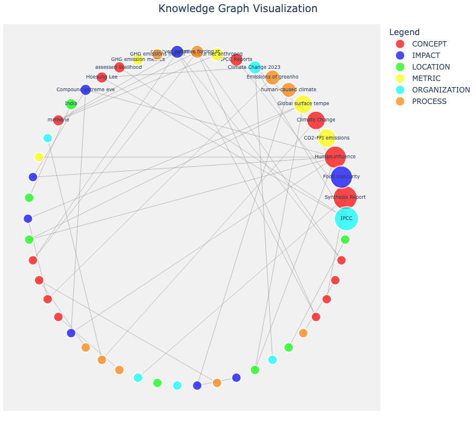
Figure 20-1. Knowledge Graph Visualization.
Summary
This example showed how to build a fully functional Graph RAG pipeline using standard tools - LLMs, embeddings, a relational database and GraphFrames - without relying on a native graph database. Beginning with an unstructured PDF, we used an LLM to extract entities and relationships, generated embeddings for efficient retrieval and stored everything in SingleStore using a simple but effective graph schema. Deduplication, provenance tracking and structural consistency were enforced at the application layer, reflecting the reality of working with LLM-generated knowledge that does not always conform to strict relational constraints.
We then reconstructed the knowledge graph with Spark and GraphFrames, enabling graph traversal, neighborhood expansion and lightweight analytics. By combining vector search from SingleStore’s embedding capabilities with graph context from GraphFrames, we implemented a hybrid retrieval strategy that grounds answers in both semantic similarity and structural relationships. The final step of summarizing the retrieved subgraph with an LLM, illustrated the core value of Graph RAG: producing more accurate and context-aware answers by augmenting embeddings with explicit knowledge structure.
Building an Image Search System with CLIP
Introduction
Text search has been used for many years, but searching through images has traditionally been much harder. However, we can today search for images using natural language descriptions or find similar images by showing an example. CLIP (Contrastive Language-Image Pretraining) is a technology that enables us to perform these types of operations. In this section, we’ll use CLIP to build an image search system that understands both text queries and image queries.
CLIP is a multimodal model trained by OpenAI that learned to connect images and text by being exposed to a large number of image-caption pairs. Unlike traditional computer vision models that classify images into fixed categories, CLIP understands the semantic relationship between visual content and language. This means we can search for “a picture of a cat” and find relevant images, even though we never explicitly labeled any images as containing cats. The model learned what cats look like and how the word “cat” relates to those visual features.
In our example, we’ll use a collection of images organized into categories from Pexels, a stock photo site. We’ll load the CLIP model and use it to generate embeddings for each image. These embeddings are multi-dimensional vectors that capture the visual content and meaning of each image. Once we have these vectors, we’ll store them in SingleStore alongside metadata about each image’s category and file path. The benefit of this approach is that we can generate embeddings for text queries using the same CLIP model and because text and images share the same embedding space, we can directly compare them using vector similarity.
Our example application supports two types of searches. For text-to-image search, we’ll encode a natural language query like “a picture of a cat” into a vector and find the images whose embeddings are most similar. For image-to-image search, we’ll encode a query image and retrieve visually similar images from our collection. Both search types use the same underlying similarity computation in SingleStore, showing the power of a unified multimodal embedding space.
Fill out the Notebook
Let’s now create a new Python notebook. We’ll call it clip_qa. We’ll connect the notebook to the multimodal_db database.
First, we’ll download the images ZIP file:
zip_url = ...
response = requests.get(zip_url)
response.raise_for_status()
with open("pexels_images.zip", "wb") as f:
f.write(response.content)
Next, we’ll unpack the ZIP file:
with zipfile.ZipFile("pexels_images.zip", "r") as z:
z.extractall()
image_folder = "pexels_images"
print("Extracted images and folder structure preserved from zip file.")
Example output:
Extracted images and folder structure preserved from zip file.
Next, we’ll walk through the extracted folder, collect every JPG/PNG file, save the full file path and record the category as the name of the folder an image is in.
image_paths = []
categories = []
for root, dirs, files in os.walk(image_folder):
for f in files:
if f.lower().endswith((".jpg", ".jpeg", ".png")):
full_path = os.path.join(root, f)
image_paths.append(full_path)
categories.append(os.path.basename(root))
print(f"Found {len(image_paths)} images in {len(set(categories))} categories.")
Example output:
Found 51 images in 6 categories.
We have the following 6 folders: animals, food, landmarks, objects, query, vehicles. Each folder contains 10 images, except query which only contains 1 image that we’ll use in a query.
Next, let’s load the CLIP model:
device = "cpu"
model, _, preprocess = open_clip.create_model_and_transforms(
"ViT-B-32",
pretrained = "openai"
)
model.to(device)
model.eval();
Next, we’ll load each image, preprocesses it for the CLIP model, batches all images into a tensor, generate CLIP image embeddings and normalize those embeddings so each one has unit length:
processed_images = []
for path in image_paths:
img = Image.open(path).convert("RGB")
processed_images.append(preprocess(img).unsqueeze(0))
images_tensor = torch.cat(processed_images, dim = 0).to(device)
with torch.no_grad():
image_embeddings = model.encode_image(images_tensor)
image_embeddings /= image_embeddings.norm(dim = -1, keepdim = True)
We’ll convert the embeddings to float32 for SingleStore:
embedding_array = image_embeddings.cpu().numpy().astype("float32")
Now, we’ll create a Pandas DataFrame:
df = pd.DataFrame({
"category": categories,
"image_path": image_paths,
"embedding": list(embedding_array)
})
and look at some values:
df.head()
Example output:
category image_path embedding
0 objects pexels_images/objects/010_pexels-photo-4690297... [-0.030688463, 0.0076383133, 0.020822525, 0.02...
1 objects pexels_images/objects/006_pexels-photo-1236421... [0.017499289, 0.045329876, -0.022273855, 0.002...
2 objects pexels_images/objects/004_pexels-photo-346804.... [-0.02301172, 0.006977425, -0.008972225, 0.016...
3 objects pexels_images/objects/005_pexels-photo-748600.... [-0.01968281, -0.0011044039, 0.030012187, 0.00...
4 objects pexels_images/objects/008_pexels-photo-1409216... [-0.023330824, -0.011383818, -0.014190739, 0.0...
We’ll save the query category into a separate DataFrame, to keep in memory, for later.
df_query = df[df["category"] == "query"]
Next, we’ll connect to SingleStore:
from sqlalchemy import *
db_connection = create_engine(connection_url)
and clear the table:
with db_connection.begin() as conn:
conn.execute(text("TRUNCATE TABLE clip_images;"))
Then store the DataFrame, except for the query category:
df[df["category"] != "query"].to_sql(
"clip_images",
con = db_connection,
if_exists = "append",
index = False,
chunksize = 1000
)
print("Uploaded embeddings to SingleStore.")
Next, we’ll create some helper functions to generate normalized CLIP embeddings for text or images, then use those embeddings to run a vector-similarity search in SingleStore to find the most similar images stored in the database. Finally, display the top matching images along with their categories and similarity scores.
def get_text_embedding(text, model, device):
"""Encodes a text string into a CLIP embedding vector."""
with torch.no_grad():
text_tokens = open_clip.tokenize([text]).to(device)
text_features = model.encode_text(text_tokens)
text_features /= text_features.norm(dim = -1, keepdim = True)
return text_features.cpu().numpy()[0].tolist()
def get_image_embedding(image_path, model, preprocess, device):
"""Encodes an image from a file path into a CLIP embedding vector."""
img = Image.open(image_path).convert("RGB")
image_input = preprocess(img).unsqueeze(0).to(device)
with torch.no_grad():
image_features = model.encode_image(image_input)
image_features /= image_features.norm(dim = -1, keepdim = True)
return image_features.cpu().numpy()[0].tolist()
def run_similarity_search(embedding, db_connection, top_k = 5):
if not isinstance(embedding, np.ndarray):
embedding = np.array(embedding, dtype = "float32")
else:
embedding = embedding.astype("float32")
embedding /= np.linalg.norm(embedding)
embedding_json = json.dumps(embedding.tolist())
sql = text("""
SELECT category,
image_path,
embedding <*> :vector AS similarity_score
FROM clip_images
ORDER BY similarity_score DESC
LIMIT :limit;
""")
return pd.read_sql(
sql,
con = db_connection,
params = {"vector": embedding_json, "limit": top_k}
)
def show_top_results(df):
fig, axes = plt.subplots(1, len(df), figsize = (15, 5))
for ax, (_, row) in zip(axes, df.iterrows()):
ax.imshow(Image.open(row["image_path"]))
ax.set_title(f"{row['category']}\nScore: {row['similarity_score']:.3f}")
ax.axis("off")
plt.show()
We’re ready now to run some queries.
Example Queries
First, let’s try a text query:
query_text = "A picture of a cat"
print(f"Running Text Query: '{query_text}'")
df_text_results = run_similarity_search(
get_text_embedding(
query_text,
model,
device
), db_connection
)
print("Text Query Results:")
df_text_results
Example output:
Running Text Query: 'A picture of a cat'
Text Query Results:
category image_path similarity_score
0 animals pexels_images/animals/008_kitty-cat-kitten-pet... 0.269822
1 animals pexels_images/animals/001_kittens-cat-cat-pupp... 0.238766
2 animals pexels_images/animals/005_pexels-photo-792381.... 0.224652
3 objects pexels_images/objects/007_pexels-photo-733853.... 0.221227
4 animals pexels_images/animals/009_pexels-photo-814898.... 0.215983
We’ll also render the images:
show_top_results(df_text_results)
Example output is shown in Figure 20-2.
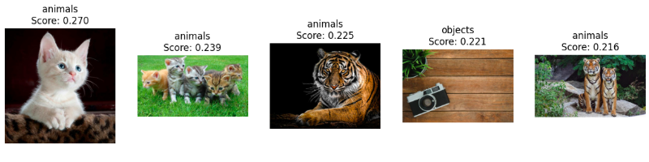
Figure 20-2. Text Query.
Next, let’s try an image query. We’ll select the first image in our list:
query_image_path = image_paths[0]
print(f"Running Image Query: {query_image_path}")
df_image_results1 = run_similarity_search(
get_image_embedding(
query_image_path,
model,
preprocess,
device
), db_connection
)
print("Image Query Results:")
df_image_results1
Example output:
Running Image Query: pexels_images/objects/010_pexels-photo-4690297.jpeg
Image Query Results:
category image_path similarity_score
0 objects pexels_images/objects/010_pexels-photo-4690297... 1.000000
1 objects pexels_images/objects/007_pexels-photo-733853.... 0.798297
2 objects pexels_images/objects/008_pexels-photo-1409216... 0.782069
3 vehicles pexels_images/vehicles/004_pexels-photo-117377... 0.728348
4 vehicles pexels_images/vehicles/005_pexels-photo-799443... 0.728000
Here we see that the best match is the image itself with a similarity score of 1.0.
We’ll also render the images:
show_top_results(df_image_results1)
Example output is show in Figure 20-3.
Figure 20-3. First Image Query.
Finally, let’s use the image from the query category that we held back and didn’t store in SingleStore.
query_image_path = df_query.iloc[0]["image_path"]
print(f"Running Image Query: {query_image_path}")
df_image_results = run_similarity_search(
get_image_embedding(
query_image_path,
model,
preprocess,
device
), db_connection,
top_k = 4
)
df_image_results2 = pd.concat([
df_query.assign(similarity_score = 1.0),
df_image_results
], ignore_index = True)
df_image_results2 = df_image_results2.drop(
columns = ["embedding"],
errors = "ignore"
)
print("Image Query Results:")
df_image_results2
We’ve also concatenated our text image with the results returned, so we can visualize the test image.
Example output:
Running Image Query: pexels_images/query/001_pexels-pixabay-159711.jpg
Image Query Results:
category image_path similarity_score
0 query pexels_images/query/001_pexels-pixabay-159711.jpg 1.000000
1 objects pexels_images/objects/010_pexels-photo-4690297... 0.907405
2 objects pexels_images/objects/007_pexels-photo-733853.... 0.764002
3 objects pexels_images/objects/008_pexels-photo-1409216... 0.727475
4 objects pexels_images/objects/006_pexels-photo-1236421... 0.713141
We’ll also render the images:
show_top_results(df_image_results2)
Example output is show in Figure 20-4.
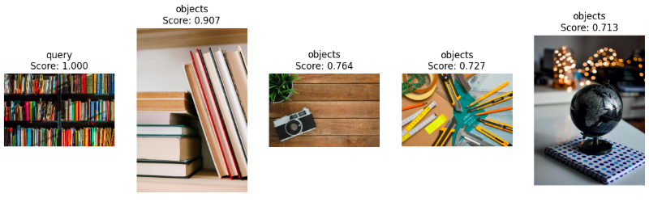
Figure 20-4. Second Image Query.
Summary
Our example demonstrated a working multimodal search system that successfully bridged the gap between text and images. Although our dataset was small, the approach we used can scale to much larger image collections - simply add more images, encode them and SingleStore will handle the increased search space efficiently. The same approach works for product catalogs, medical image databases or any scenario where we need to find images using either text descriptions or visual examples.
Building a Voice-Controlled Data Assistant
Introduction
Text and images represent two powerful methods for information retrieval, but voice interaction offers something uniquely compelling - the ability to ask questions naturally using speech. In this section we’ll explore building a voice-controlled assistant that lets us query a database using spoken questions and receive spoken answers back.
The challenge with voice interfaces goes beyond simple speech recognition. We need to convert spoken audio into text, understand the intent behind natural language questions, translate those questions into database queries, execute them against our data, format the results appropriately and then present the response back to the user as speech. This entire pipeline needs to happen quickly enough that the interaction feels responsive and natural.
We’re using LiveKit1 as the foundation for real-time voice communication, combined with OpenAI’s Whisper for speech-to-text conversion and OpenAI’s TTS for speech synthesis. But the interesting part is what happens in the middle. Rather than routing every question to a general-purpose language model and hoping it knows the answer, we give the model access to LangChain’s SQL agent as a callable tool. The model decides when a question needs data, calls the tool and the tool examines our database schema, constructs and executes the necessary SQL query and returns the result. This gives us a voice interface that can answer complex analytical questions about our data without requiring us to write any SQL, while still letting the model handle greetings, clarifications and small talk on its own.
Our architecture centers around a custom agent running inside a LiveKit AgentSession. When we speak a question, Whisper transcribes it to text. The language model reads the transcript and, if the question needs data, calls a query_stock_data tool we’ve defined. That tool hands the question to LangChain’s SQL agent, which works against a SingleStore database containing stock tick data and returns a cleaned up natural language answer. The model then speaks that answer back through OpenAI’s text-to-speech engine.
This pattern works for any database where we want natural language access. Whether we’re building an internal analytics tool, a customer support system that needs to look up account information or a hands-free interface for warehouse workers who need to check inventory, the same architecture applies. The voice interface becomes a conversational layer over our existing data infrastructure.
Create a Free LiveKit Account
Before we start coding, we’ll need to create a free LiveKit account.
Once created and signed-in, when signing in for the first time, we’re prompted for a project name. Let’s use voice-controlled.
Next, we’ll select Project API keys and create a new API key. Let’s call it voice. Once the key is created, we are presented with:
-
Websocket URL
-
API key
-
API secret
-
Environment variables (
LIVEKIT_URL,LIVEKIT_API_KEY,LIVEKIT_API_SECRET)
The environment variables should be copied and equivalent variables created in the SingleStore Secrets file vault, as we’ll need these variables next.
Connect a Browser Tab Without a Backend
From the LiveKit Cloud dashboard, we’ll select our voice-controlled project, open Settings in the left navigation and toggle on the Token server. LiveKit Cloud provisions a token server for the project immediately and a sandbox ID such as:
token-server-xxxxxx
appears below the toggle once it is on. That ID is all a frontend needs to fetch a join token directly from LiveKit Cloud, with no backend of our own to write or deploy. We pair it with a single self-contained HTML page, voice-assistant.html, that loads the LiveKit JavaScript SDK from a CDN, fetches a token using the sandbox ID and connects to a fresh room. There is no repository to clone, no build step and nothing to install locally - we just open the HTML file in a browser tab. All we need alongside it is an agent worker listening for jobs on the same project, which is what we build in the SingleStore notebook below.
Fill out the Notebook
Let’s now create a new Python notebook. We’ll call it audio_qa. We’ll connect the notebook to the stockticker_db database used in earlier chapters.
First, we’ll use the %%writefile agent_core.py magic command in the notebook. Rather than defining the agent classes and functions directly in notebook cells, we’ll write them to a separate Python file and then import them. This workaround addresses a pickling issue that arises in the SingleStore cloud environment. When LiveKit tries to serialize and pass agent objects between processes, it uses Python’s pickle mechanism, which struggles with objects defined interactively in Jupyter notebooks. By writing the core agent logic to a standalone Python file, we ensure that the classes can be properly pickled and unpickled as they move through LiveKit’s infrastructure.
It’s worth discussing why this workaround is necessary. By default, LiveKit runs each job in its own operating system process, which is what forces the pickling step in the first place. The framework also supports a thread-based executor, which runs each job in a thread inside the same process instead, sidestepping the pickling requirement entirely and letting us define everything directly in notebook cells. We chose not to use it here. Process isolation means that if something in the audio pipeline crashes hard, for example a native-level fault in an audio codec library, only that job’s process is lost and the worker keeps running. In thread mode, the same crash brings down the process the notebook kernel is running in and with it any other work in that session. For an example application meant to be run and re-run reliably, a contained job failure is a far better outcome than a lost kernel, so we accept the small extra step of writing agent_core.py to disk in exchange for that isolation.
%%writefile agent_core.py
import asyncio
import logging
import os
import warnings
from langchain_community.agent_toolkits import create_sql_agent
from langchain_community.utilities import SQLDatabase
from langchain_openai import ChatOpenAI
from livekit.agents import Agent, AgentSession, JobContext, RoomInputOptions, function_tool
from livekit.plugins import openai, silero
from sqlalchemy.exc import SAWarning
warnings.filterwarnings("ignore", category = DeprecationWarning)
warnings.filterwarnings("ignore", category = SAWarning)
logger = logging.getLogger("ai-agent-core")
logger.setLevel(logging.INFO)
logging.getLogger("sqlalchemy").setLevel(logging.ERROR)
def initialize_langchain():
"""Initialize LangChain SQL agent with SingleStore database."""
connection_url = os.environ.get("SINGLESTOREDB_URL")
if not connection_url:
raise EnvironmentError("SINGLESTOREDB_URL environment variable is required")
langchain_llm = ChatOpenAI(
model = "gpt-4o-mini",
temperature = 0
)
db = SQLDatabase.from_uri(
connection_url,
include_tables = ["tick"]
)
sql_agent = create_sql_agent(
llm = langchain_llm,
db = db,
agent_type = "openai-tools",
verbose = False
)
logger.info("LangChain SQL agent initialized successfully")
return sql_agent
def clean_response_for_voice(text):
"""Clean database output for natural voice delivery."""
cleaned = text.replace('|', ' ').replace('```', '').replace('---', '').replace('**', '').replace('*', '')
lines = [line.strip() for line in cleaned.splitlines() if line.strip()]
result = " ".join(lines)
max_length = 800
if len(result) > max_length:
result = result[:max_length] + "... and more."
return result
class Assistant(Agent):
"""LiveKit voice agent that exposes a LangChain SQL agent as a callable tool."""
def __init__(self, sql_agent) -> None:
if not os.environ.get("OPENAI_API_KEY"):
raise EnvironmentError("OPENAI_API_KEY environment variable is required")
self._sql_agent = sql_agent
super().__init__(
instructions = (
"You are a voice assistant that answers questions about stock tick data. "
"Always call the query_stock_data tool to answer questions about the "
"database, never guess at numbers yourself. Keep spoken answers short "
"and conversational since they will be read aloud. Never use markdown "
"formatting such as asterisks, bullet points or code blocks - respond "
"in plain spoken sentences only."
),
)
logger.info("Voice assistant initialized with LangChain SQL tool")
@function_tool()
async def query_stock_data(self, question: str) -> str:
"""Look up an answer to a question about stock tick data by querying the
SingleStore database.
Args:
question: The user's natural language question about the tick data.
"""
logger.info(f"Processing query: {question}")
# Query LangChain SQL agent (runs synchronously in thread pool)
try:
result = await asyncio.get_event_loop().run_in_executor(
None,
lambda: self._sql_agent.invoke({"input": question})
)
output = result.get("output", "No results found") if isinstance(result, dict) else str(result)
response_text = clean_response_for_voice(output)
logger.info(f"LangChain response: {response_text}")
return response_text
except Exception as e:
logger.error(f"Query error: {e}", exc_info = True)
return "I encountered an error querying the database."
async def entrypoint(ctx: JobContext):
"""Main entrypoint for LiveKit agent worker."""
logger.info(f"Job started for room: {ctx.room.name}")
sql_agent = initialize_langchain()
await ctx.connect()
logger.info(f"Connected to room: {ctx.room.name}")
session = AgentSession(
stt = openai.STT(model = "whisper-1"),
llm = openai.LLM(model = "gpt-4o-mini"),
tts = openai.TTS(model = "gpt-4o-mini-tts"),
vad = silero.VAD.load(),
)
disconnected_future = asyncio.get_event_loop().create_future()
@ctx.room.on("disconnected")
def on_disconnected():
logger.info("Room disconnected")
if not disconnected_future.done():
disconnected_future.set_result(True)
@ctx.room.on("participant_disconnected")
def on_participant_disconnected(participant):
if not ctx.room.remote_participants and not disconnected_future.done():
logger.info(f"Caller {participant.identity} left - ending session")
disconnected_future.set_result(True)
await session.start(
room = ctx.room,
agent = Assistant(sql_agent),
room_input_options = RoomInputOptions(),
)
logger.info("Agent running - queries routed through the query_stock_data tool")
await session.generate_reply(
instructions = "Greet the user and let them know they can ask about stock tick data."
)
await disconnected_future
try:
await ctx.room.disconnect()
except Exception:
pass
logger.info("Session finished")
The initialize_langchain() function sets up the LangChain SQL agent, connecting it to the SingleStore database and configuring it to work with the tick table. This agent is capable of examining the database schema and generating appropriate SQL queries.
The clean_response_for_voice() function takes the raw database query results and strips out formatting characters like table borders and code blocks, transforming them into clean text suitable for speech output.
The Assistant class defines a query_stock_data tool using the function_tool decorator. Rather than intercepting LiveKit’s language model pipeline, we let a real language model drive the conversation and simply give it the ability to call our LangChain SQL agent whenever a question needs data. The model reads the tool’s docstring and argument description to decide when to call it, invokes it with the user’s question and folds the returned text back into a spoken reply. This is both simpler and more robust than replacing the model outright and it means the standard speech-to-text, language model and text-to-speech pipeline stays intact end-to-end, so responses come back as natural speech rather than text only.
Finally, the entrypoint() function serves as the main entry point when LiveKit creates a new session, initializing the SQL agent, connecting to the room, starting the agent session and managing its lifecycle until we disconnect.
The entrypoint also listens for a second event, participant_disconnected, in addition to the room’s own disconnected event. The distinction is important because ctx.room’s disconnected event only fires once the entire room is torn down by the LiveKit server, which happens after a short grace period once every human participant has left. Watching for the caller’s participant leaving instead lets us end the job the moment they click End Call, rather than leaving the notebook cell appearing to hang for the length of that grace period. The handler checks ctx.room.remote_participants to confirm no one else remains before resolving disconnected_future, and the entrypoint finishes by explicitly disconnecting its own connection to the room, wrapped in a try/except in case the room has already been removed by the time it gets there.
With agent_core.py written to disk, we’ll describe what the rest of the notebook needs.
Next, we’ll connect to the database:
from sqlalchemy import *
db_connection = create_engine(connection_url)
url = db_connection.url
host = url.host
port = url.port
database = url.database
username = "admin"
password = get_secret("password")
missing = [
name for name, value in [
("host", host),
("port", port),
("database", database),
("username", username),
("password", password),
]
if not value
]
if missing:
raise ValueError(
f"Missing required SingleStore connection detail(s): {', '.join(missing)}. "
"Check that a database is selected in the notebook's connection pulldown "
"before running this cell."
)
SINGLESTOREDB_URL = f"singlestoredb://{username}:{quote(password, safe = '')}@{quote(host, safe = '')}:{port}/{database}"
Then, we’ll create the following environment variables:
LIVEKIT_URL = get_secret("LIVEKIT_URL")
LIVEKIT_API_KEY = get_secret("LIVEKIT_API_KEY")
LIVEKIT_API_SECRET = get_secret("LIVEKIT_API_SECRET")
os.environ["LIVEKIT_URL"] = LIVEKIT_URL
os.environ["LIVEKIT_API_KEY"] = LIVEKIT_API_KEY
os.environ["LIVEKIT_API_SECRET"] = LIVEKIT_API_SECRET
os.environ["OPENAI_API_KEY"] = get_secret("OPENAI_API_KEY")
os.environ["SINGLESTOREDB_URL"] = SINGLESTOREDB_URL
The following function initializes and runs the LiveKit worker process that listens for incoming voice sessions. It configures the worker with connection details and the entrypoint callback, then starts it running asynchronously until the notebook cell is stopped or an error occurs.
async def main_worker():
logger.info("Starting LiveKit Worker with LangChain SQL integration...")
opts = WorkerOptions(
entrypoint_fnc = entrypoint,
ws_url = LIVEKIT_URL,
api_key = LIVEKIT_API_KEY,
api_secret = LIVEKIT_API_SECRET,
)
worker = Worker(opts)
worker_task = asyncio.create_task(worker.run())
try:
await worker_task
except asyncio.CancelledError:
pass
finally:
logger.info("Worker execution stopped.")
Finally, we’ll run our code:
await main_worker()
Example output:
INFO:ai-agent:Starting LiveKit Worker with LangChain SQL integration...
With the worker running in the notebook, we’ll open voice-assistant.html in a new browser tab, paste in our token server sandbox ID and click Start Call. The browser should prompt for microphone permission.
In the Jupyter notebook tab, we should now see the following new output:
INFO:ai-agent-core:Job started for room: voice-controlled-gbv4c5cd
INFO:ai-agent-core:LangChain SQL agent initialized successfully
INFO:ai-agent-core:Connected to room: voice-controlled-gbv4c5cd
INFO:ai-agent-core:Voice assistant initialized with LangChain SQL tool
INFO:ai-agent-core:Agent running - queries routed through the query_stock_data tool
We should also hear the assistant greet us out loud in the browser tab, confirming that the full speech-to-text, language model and text-to-speech loop is working end-to-end.
Switching back to the voice-assistant.html tab, we can start asking questions.
Example Queries
1. How many rows are in the tick table?
Example output:
INFO:ai-agent-core:Processing query: How many rows are in the tick table?
INFO:ai-agent-core:LangChain response: There are 379,764 rows in the tick table.
2. Show me the last two ticks for symbol BBRQ-FX
Example output:
INFO:ai-agent-core:Processing query: Show me the last two ticks for symbol BBRQ-FX.
INFO:ai-agent-core:LangChain response: The last two ticks for the symbol BBRQ-FX are as follows: 1. Date: November 24, 2015 - Open: 999.83 - High: 1017.41 - Low: 985.60 - Close: 1004.39 - Volume: 2,066,982 2. Date: November 23, 2015 - Open: 1020.74 - High: 1039.59 - Low: 1010.85 - Close: 1019.04 - Volume: 2,005,610
3. Which ticker had the highest close price?
Example output:
INFO:ai-agent-core:Processing query: Which ticker had the highest close price?
INFO:ai-agent-core:LangChain response: The ticker with the highest close price is WVVF-FX, with a close price of 6301.59.
4. What is the average trading volume for the symbol BBYX-FX?
Example output:
INFO:ai-agent-core:Processing query: What is the average trading volume for the symbol BBYX-FX?
INFO:ai-agent-core:LangChain response: The average trading volume for the symbol BBYX-FX is approximately 6,549,091.74.
5. Return all tickers from one second before the latest timestamp in the tick table where the close price is above 500, sorted alphabetically by ticker.
Example output:
INFO:ai-agent-core:Processing query: Return all tickers from one second before the latest timestamp in the tick table where the close price is above 500, sorted alphabetically by ticker.
INFO:ai-agent-core:LangChain response: There are no tickers with a close price above 500 from one second before the latest timestamp in the tick table.
Interestingly, during testing, this combined question was returned as multiple separate transcribed queries rather than one, and this happened consistently across multiple attempts, even though the exact wording of the split changed each time. This is a side effect of how voice activity detection works: turn-taking is inferred from pauses in speech, not from sentence structure or punctuation, so a longer compound question is more likely to be interpreted as finished partway through, particularly if the speaker pauses or stumbles over a longer sentence. The lesson for building voice interfaces is that shorter, single-clause questions tend to be more reliable than long compound ones, regardless of how clearly the underlying intent is expressed.
For each of these, the assistant speaks the answer back to us in the browser tab, in addition to displaying it in the notebook log.
When finished, we’ll terminate the code running in the notebook and click End Call in the voice-assistant.html tab. Rather than waiting out a delay, the notebook logs the disconnect almost immediately:
INFO:ai-agent-core:Caller virtualized-socket left - ending session
INFO:ai-agent-core:Room disconnected
INFO:ai-agent-core:Session finished
This immediacy is a direct result of listening for the participant leaving rather than waiting on the room’s own disconnect event, as described above.
Summary
The notebook demonstrates a working voice-to-voice assistant that successfully answered a variety of database questions through spoken input and returned spoken answers. Both simple and more complex analytical questions worked equally well and the system handled these questions and refinements naturally.
The technical implementation required careful orchestration of several components. LiveKit’s hosted token server eliminated the need to write and deploy a backend or hand-generate a join token, letting a single self-contained HTML page fetch its own token and connect from anywhere with nothing installed locally. LiveKit’s AgentSession provided the real-time communication infrastructure, managing audio streams from the user to the agent. OpenAI’s Whisper handled speech-to-text conversion with impressive accuracy, correctly transcribing questions even with technical terms. Rather than intercepting the language model pipeline, our query_stock_data tool let a real language model decide when a question needed data, route that question to LangChain’s SQL agent and speak the result back through OpenAI’s text-to-speech engine.
An earlier version of this chapter could only manage a voice-to-text loop, because our attempt to intercept LiveKit’s language model pipeline directly also broke its text-to-speech stage. By working with the framework’s tool-calling support instead of against its internals, the full voice loop now works end-to-end and the resulting architecture is both simpler to read and more resilient to future framework changes. The LiveKit infrastructure handled the audio streaming reliably and the integration between Whisper, the language model, LangChain, OpenAI’s text-to-speech engine and SingleStore worked smoothly, giving users a genuinely hands-free way to ask questions and hear the answers.
Chapter Summary
This chapter demonstrated how multimodal RAG provides a unified approach to working with text, images and audio. Building a PDF question-answering system showed how document parsing, chunking and embedding produce a searchable knowledge base capable of synthesizing answers from large reports. The CLIP image search example extended the same vector-based principles to visual data, using a shared embedding space to support both text-to-image and image-to-image retrieval. Finally, the voice-controlled assistant illustrated how speech interfaces can sit on top of structured data, combining Whisper, LiveKit and a SQL-aware agent to translate natural language questions into accurate database queries.
Across all the systems, a few themes stood out. Vector embeddings create a common semantic representation across modalities. SingleStore’s vector capabilities allow these representations to be searched efficiently at scale. And lightweight orchestration - whether chunking text, normalizing images or routing queries through a SQL agent - turns raw model outputs into usable applications. Together, these techniques highlight how multimodal RAG can power richer, more flexible interfaces for interacting with the full spectrum of modern data.
-
https://cloud.livekit.io ↩
Chapter 21: Running Local LLMs with Ollama
Introduction
In previous chapters, we explored cloud-based language models and their integration with SingleStore. While these solutions offer powerful capabilities, they come with considerations around data privacy, network latency and ongoing costs. This chapter introduces an alternative approach: running large language models locally on our own hardware.
We’ll work with Ollama1, an open-source platform that makes it straightforward to download, run and manage language models on a local machine. By combining Ollama with SingleStore, we can build a complete RAG system that operates entirely within our own infrastructure. This approach gives us full control over our data, eliminates dependencies on external API services and allows us to experiment without usage-based charges.
In this chapter, we’ll learn how to set up Ollama in our local environment, configure it to work with embedding and language models and integrate it with a database for semantic search capabilities. We’ll explore two implementation approaches: one using LangChain that abstracts away many details and another using direct API calls for finer control. By the end of this chapter, we’ll understand the trade-offs of these two approaches as well as local versus cloud-based LLM deployment.
In the examples in this chapter, we’ll use a local installation of Ollama but connect securely to a SingleStore instance in the cloud. SingleStore can also be installed locally but using it in the cloud provides a quick and easy way to test Ollama without requiring any further local software installations.
Create the Database
In the SingleStore Portal, we’ll use the SQL Editor to create a new database. Call this ollama_db, as follows:
CREATE DATABASE IF NOT EXISTS ollama_db;
Create the Environment Variables
From our running SingleStore cloud instance, we’ll note down the host and password from the connection string and create two environment variables on our local machine called SINGLESTOREDB_HOST and SINGLESTOREDB_PASSWORD. For example, on Linux, we would use the following, replacing <host> and <password>, respectively:
export SINGLESTOREDB_HOST='<host>'
export SINGLESTOREDB_PASSWORD='<password>'
Install the Required Tools
We’ll need several tools installed on our local machine:
-
Jupyter Notebook: The classic Jupyter notebook2 will be sufficient.
-
Ollama: This can be installed on Apple macOS, Linux and Microsoft Windows3. Use the installer for your platform. After installation, the Ollama server should be running in the background.
Using Ollama with LangChain
Fill out the Notebook
Let’s now create a new Python notebook. We’ll call it ollama_langchain.
First, we’ll define the models to use:
EMBEDDING_MODEL = "all-minilm"
LLM_MODEL = "llama3"
Next, we’ll download a model for vector embeddings:
ollama.pull(EMBEDDING_MODEL)
Example output:
ProgressResponse(status='success', completed=None, total=None, digest=None)
There are many good LLMs available, but llama3 is very capable and Meta provides a generous license4.
ollama.pull(LLM_MODEL)
Example output:
ProgressResponse(status='success', completed=None, total=None, digest=None)
Next, we’ll create a small company knowledgebase similar to previous chapters, but we’ll use real companies as we want the LLM to give us more information, if possible:
company_info = {
"AAPL": "Apple Inc. is a technology company known for the iPhone, iPad and Mac. It also offers services like iCloud and Apple Music.",
"AMZN": "Amazon.com is an e-commerce giant with businesses in cloud computing (AWS), logistics and digital streaming.",
"GOOG": "Google, a subsidiary of Alphabet Inc., is a technology company specializing in internet services, online advertising, search and AI.",
"MSFT": "Microsoft develops software such as Windows and Office and is a leader in cloud computing with Azure."
}
We’ll extract the information and store the stock symbol as metadata and the text as the page content:
documents = [
Document(page_content = text, metadata = {"symbol": sym})
for sym, text in company_info.items()
]
We’ll use the embedding model and determine the length of the vectors that it returns using a test string:
embeddings = OllamaEmbeddings(
model = EMBEDDING_MODEL,
)
dimensions = len(embeddings.embed_query("test"))
Next, we’ll ensure we have all the connection details for the SingleStore instance:
username = "admin"
password = os.environ.get("SINGLESTOREDB_PASSWORD")
host = os.environ.get("SINGLESTOREDB_HOST")
port = 3306
database = "ollama_db"
if not password:
raise ValueError("Environment variable SINGLESTOREDB_PASSWORD is not set or is empty.")
if not host:
raise ValueError("Environment variable SINGLESTOREDB_HOST is not set or is empty.")
problematic_chars = ["#", "@", "/", "?", "%"]
found = [c for c in problematic_chars if c in password]
if found:
print(f"WARNING: Password contains character(s) {found} which may cause connection issues.")
my_connection_url = f"singlestoredb://{username}:{quote(password, safe = '')}@{host}:{port}/{database}"
Now, we’ll connect to SingleStore:
from sqlalchemy import *
db_connection = create_engine(my_connection_url)
and then drop the company knowledge table if it already exists, so we start with a clean state:
try:
with db_connection.begin() as conn:
conn.execute(text("DROP TABLE IF EXISTS company_knowledge;"))
except Exception as e:
print(f"Error dropping table: {e}")
raise
Now we’re ready to use the SingleStore LangChain integration to store the company data:
vector_store = SingleStoreVectorStore(
embeddings,
user = username,
password = password,
host = host,
port = port,
database = database,
table_name = "company_knowledge",
distance_strategy = "DOT_PRODUCT",
use_vector_index = True,
vector_size = dimensions
)
vector_store.add_documents(documents);
Let’s run a semantic search:
prompt = "What are the most popular consumer devices and services that Apple Inc. sells?"
documents = vector_store.similarity_search(prompt, k = 1)
data = documents[0].page_content
print(data)
Example output:
Apple Inc. is a technology company known for the iPhone, iPad and Mac. It also offers services like iCloud and Apple Music.
and we’ll use this as input to the LLM:
output = ollama.generate(
model = LLM_MODEL,
prompt = f"Using this data: {data}. Respond to this prompt: {prompt}",
options = {
"temperature": 0
}
)
print(output["response"])
Example output:
Based on the provided data, the most popular consumer devices sold by Apple Inc. are:
1. iPhone
2. iPad
3. Mac (computers)
As for services, Apple Inc. offers:
1. iCloud (cloud storage and backup)
2. Apple Music (music streaming)
These products and services are some of the most well-known and widely used among consumers, making them the most popular offerings from Apple Inc.
Let’s now use the same example but without LangChain.
Using Ollama with Direct API Calls
Fill out the Notebook
Let’s now create a new Python notebook. We’ll call it ollama_direct_api.
Many of the initial steps will be the same as the LangChain example.
First, we’ll define the models to use:
EMBEDDING_MODEL = "all-minilm"
LLM_MODEL = "llama3"
Next, we’ll download a model for vector embeddings:
ollama.pull(EMBEDDING_MODEL)
Example output:
ProgressResponse(status='success', completed=None, total=None, digest=None)
We’ll use llama3 again.
ollama.pull(LLM_MODEL)
Example output:
ProgressResponse(status='success', completed=None, total=None, digest=None)
Next, we’ll create a small company knowledgebase similar to previous chapters, but we’ll use real companies as we want the LLM to give us more information, if possible:
company_info = {
"AAPL": "Apple Inc. is a technology company known for the iPhone, iPad and Mac. It also offers services like iCloud and Apple Music.",
"AMZN": "Amazon.com is an e-commerce giant with businesses in cloud computing (AWS), logistics and digital streaming.",
"GOOG": "Google, a subsidiary of Alphabet Inc., is a technology company specializing in internet services, online advertising, search and AI.",
"MSFT": "Microsoft develops software such as Windows and Office and is a leader in cloud computing with Azure."
}
Now, we’ll loop through each company’s text description, generate an embedding for it using the embedding model, convert that embedding into a NumPy float32 array and store the text, vector and metadata (the stock symbol) as rows in a Pandas DataFrame. Once all embeddings are processed, we’ll determine the length of the vectors using a test string.
df_data = []
for sym, text in company_info.items():
response = ollama.embeddings(
model = EMBEDDING_MODEL,
prompt = text
)
embedding_array = np.array(response["embedding"], dtype = np.float32)
df_data.append({"content": text, "vector": embedding_array, "metadata": json.dumps({"symbol": sym})})
df = pd.DataFrame(df_data)
response = ollama.embeddings(
model = EMBEDDING_MODEL,
prompt = "test"
)
dimensions = len(response["embedding"])
Next, we’ll ensure we have all the connection details for the SingleStore instance:
username = "admin"
password = os.environ.get("SINGLESTOREDB_PASSWORD")
host = os.environ.get("SINGLESTOREDB_HOST")
port = 3306
database = "ollama_db"
if not password:
raise ValueError("Environment variable SINGLESTOREDB_PASSWORD is not set or is empty.")
if not host:
raise ValueError("Environment variable SINGLESTOREDB_HOST is not set or is empty.")
problematic_chars = ["#", "@", "/", "?", "%"]
found = [c for c in problematic_chars if c in password]
if found:
print(f"WARNING: Password contains character(s) {found} which may cause connection issues.")
my_connection_url = f"singlestoredb://{username}:{quote(password, safe = '')}@{host}:{port}/{database}"
Now, we’ll connect to SingleStore:
from sqlalchemy import *
db_connection = create_engine(my_connection_url)
and then drop the company knowledge table if it already exists, so we start with a clean state:
try:
with db_connection.begin() as conn:
conn.execute(text("DROP TABLE IF EXISTS company_knowledge;"))
except Exception as e:
print(f"Error dropping table: {e}")
raise
We’ll need to create the company_knowledge table:
query = text("""
CREATE TABLE IF NOT EXISTS company_knowledge (
id BIGINT AUTO_INCREMENT NOT NULL PRIMARY KEY,
content LONGTEXT,
vector VECTOR(:dimensions) NOT NULL,
metadata JSON,
VECTOR INDEX (vector) INDEX_OPTIONS '{"metric_type": "DOT_PRODUCT"}'
);
""")
with db_connection.begin() as conn:
conn.execute(query, {"dimensions": dimensions})
Now we’ll store the data from the Pandas DataFrame into the database:
df.to_sql(
"company_knowledge",
con = db_connection,
if_exists = "append",
index = False,
chunksize = 1000
)
Let’s run a semantic search:
prompt = "What are the most popular consumer devices and services that Apple Inc. sells?"
response = ollama.embeddings(
model = EMBEDDING_MODEL,
prompt = prompt
)
embedding_array = np.array(response["embedding"], dtype = np.float32)
query = text("""
SELECT content
FROM company_knowledge
ORDER BY vector <*> :embedding_array DESC
LIMIT 1;
""")
with db_connection.connect() as conn:
row = conn.execute(query, {"embedding_array": embedding_array}).fetchone()
data = row[0]
print(data)
Example output:
Apple Inc. is a technology company known for the iPhone, iPad and Mac. It also offers services like iCloud and Apple Music.
and we’ll use this as input to the LLM:
output = ollama.generate(
model = LLM_MODEL,
prompt = f"Using this data: {data}. Respond to this prompt: {prompt}",
options = {
"temperature": 0
}
)
print(output["response"])
Example output:
Based on the provided data, the most popular consumer devices sold by Apple Inc. are:
1. iPhone
2. iPad
3. Mac (computers)
As for services, Apple Inc. offers:
1. iCloud (cloud storage and backup)
2. Apple Music (music streaming)
These products and services are some of the most well-known and widely used among consumers, making them the most popular offerings from Apple Inc.
Summary
In this chapter, we explored how to build a simple RAG system using locally-hosted language models. We began by installing and configuring Ollama, setting up the necessary environment variables to run models without requiring root privileges or cloud services.
We worked with two different models: an embedding model for converting text into vector representations and a language model for generating natural language responses. Using a collection of company descriptions as our knowledge base, we showed how to create embeddings and store them in a vector database alongside the original text content.
The chapter presented two implementation patterns. The first approach used an abstraction framework (LangChain) that simplified the integration between the embedding model, vector store and language model. This method provided a clean, high-level interface for building RAG applications with minimal boilerplate code. The second approach used direct API calls and database queries, offering more transparency into the underlying mechanics and greater control over each step of the process.
Both implementations followed the same fundamental pattern: convert a user query into an embedding, perform a similarity search to find the most relevant content from the knowledge base and use that content as context for the language model to generate an informed response. We used dot product as our similarity metric and configured the models with specific parameters to ensure consistent, deterministic outputs.
The key advantage of this local approach is high data control and independence from external language model services. All processing happens on our own hardware, making it suitable for sensitive data, offline environments or situations where API costs would be prohibitive. The trade-off is the need for sufficient local computational resources and the responsibility of managing the models ourselves.
By working through both high-level and low-level implementations, we gained insight into how RAG systems function under the hood, regardless of whether we choose convenience or control in our production applications. This foundation prepares us to make informed decisions about deployment strategies and to troubleshoot issues when they arise in more complex scenarios.
-
https://ollama.com ↩
-
https://docs.jupyter.org/en/latest/install/notebook-classic.html ↩
-
https://ollama.com/download ↩
-
https://www.llama.com/llama3/license/ ↩
Chapter 22: Using MCP for Real-Time Data Access
Introduction
As AI agents become more capable and more deeply embedded in software systems, the need for a consistent and reliable way to connect those agents to real services has become increasingly important. Large language models can reason about data, generate SQL, transform documents and orchestrate workflows, but they cannot interact with actual systems unless developers expose those systems in a controlled and structured way. This is exactly the problem the Model Context Protocol (MCP) solves.
MCP provides a standardized, tool-centric interface that lets agents invoke well-defined operations, called tools, without needing to understand proprietary APIs, authentication schemes or service-specific response formats. Any system that implements MCP immediately becomes accessible to any MCP-compatible client, whether that client is a local script, a CLI or a multimodal LLM. The result is a predictable and secure integration layer between AI and software infrastructure.
In this chapter, we’ll explore MCP from two complementary perspectives. First, we’ll build a small custom MCP server to demonstrate how the protocol works at a fundamental level, covering initialization, tool registration, communication and basic tool execution. This example shows how easy it is to expose business logic or domain-specific functionality through MCP.
Second, we’ll turn to a production-grade implementation: the SingleStore MCP server. Rather than writing boilerplate code, we can use an off-the-shelf MCP server that exposes database operations, such as listing workspaces, running SQL and inspecting schemas directly to our agent. To make this practical, we’ll use a lightweight CLI client that communicates with the SingleStore MCP server and shows how an AI agent can use MCP to query and reason about real databases.
These two sections provide both a conceptual understanding and a practical foundation for using MCP in real-world applications.
Building a Custom MCP Server
Introduction
An MCP server can be viewed as a standardized bridge between AI agents and our services. Instead of an agent having to learn different APIs, authentication methods and response formats, it calls well-defined tools through the MCP protocol. This means a single MCP server can work with many external tools or any MCP-compatible host.
The SingleStore MCP server is powerful for accessing a database and we’ll configure and run it in the next section in this chapter. But what if we need to expose custom business logic, connect to external APIs or create domain-specific tools that combine multiple data sources? That’s where building a custom MCP server would be useful.
Why Build a Custom MCP Server?
Custom MCP servers are useful when we need to:
-
Wrap business logic: Expose internal functions as tools that AI agents can safely call.
-
Integrate multiple data sources: Combine APIs, databases and files into unified tools.
-
Add security boundaries: Control exactly what data and operations agents can access.
-
Standardize interfaces: Give agents a consistent way to interact with diverse services.
-
Enable offline work: Run everything locally without external API dependencies.
Architecture Overview
An MCP server follows a simple client-server pattern. The MCP server is a lightweight process that listens for requests from an MCP host and works as follows:
-
MCP Host: Starts an MCP server as a subprocess.
-
MCP Server: Initializes and announces what tools it exposes via standard I/O.
-
MCP Host: Displays available tools to the user/agent.
-
When needed: MCP Host sends tool requests to the MCP Server.
-
MCP Server: Executes the tool and returns results back to the host.
Communication happens over standard input/output (stdio), making it easy to run locally.
Building a Simple MCP Server
We’ll build a simple stock ticker data server. This has three practical tools that show different patterns:
-
get_stock_price: Single parameter lookup.
-
get_stock_sentiment: Data with analysis logic.
-
compare_stocks: Multiple parameters, comparative analysis.
All are hardcoded so we can see the server works without any database setup.
Set up the Environment
We’ll use Python with the FastMCP SDK, which simplifies server creation significantly.
First, we’ll create a virtual environment from the home directory:
python3 -m venv venv
source venv/bin/activate
Next, we’ll create a project directory:
mkdir stock-analyzer-mcp
cd stock-analyzer-mcp
Install the Required Software
We need to install the required Python packages before running the project. These are listed in the requirements.txt file included on GitHub. You can install them all at once with the following command:
pip install -r requirements.txt
Create the MCP Server
We’ll create a file called server.py, as follows:
from fastmcp import FastMCP
mcp = FastMCP("stock-analyzer")
STOCK_DATA = {
"BBRQ-FX": {
"price": 150.25,
"high_52w": 199.62,
"low_52w": 124.17,
"volume": 52_300_000,
"pe_ratio": 28.5
},
"BJBY-FX": {
"price": 140.80,
"high_52w": 191.75,
"low_52w": 102.21,
"volume": 28_900_000,
"pe_ratio": 25.3
},
"YWMG-FX": {
"price": 380.45,
"high_52w": 416.68,
"low_52w": 309.40,
"volume": 18_500_000,
"pe_ratio": 35.2
}
}
SENTIMENT_DATA = {
"BBRQ-FX": {
"sentiment_score": 0.65,
"recent_news": "BBRQ reports strong Q3 earnings",
"positive_count": 12,
"negative_count": 3
},
"BJBY-FX": {
"sentiment_score": 0.45,
"recent_news": "BJBY faces regulatory scrutiny",
"positive_count": 8,
"negative_count": 7
},
"YWMG-FX": {
"sentiment_score": 0.72,
"recent_news": "YWMG's AI initiatives show promise",
"positive_count": 15,
"negative_count": 2
}
}
@mcp.tool()
def get_stock_price(symbol: str) -> str:
"""Get current stock price and 52-week range for a symbol."""
symbol = symbol.upper().strip()
if symbol not in STOCK_DATA:
return f"Symbol {symbol} not found. Available: BBRQ-FX, BJBY-FX, YWMG-FX"
data = STOCK_DATA[symbol]
report = f"Stock Price Data for {symbol}\n"
report += f"{'='*40}\n"
report += f"Current Price: ${data['price']}\n"
report += f"52-Week High: ${data['high_52w']}\n"
report += f"52-Week Low: ${data['low_52w']}\n"
report += f"Volume: {data['volume']:,}\n"
report += f"P/E Ratio: {data['pe_ratio']}\n"
return report
@mcp.tool()
def get_stock_sentiment(symbol: str) -> str:
"""Get sentiment analysis and recent news for a stock symbol."""
symbol = symbol.upper().strip()
if symbol not in SENTIMENT_DATA:
return f"Sentiment data not available for {symbol}"
data = SENTIMENT_DATA[symbol]
report = f"Sentiment Analysis for {symbol}\n"
report += f"{'='*40}\n"
report += f"Sentiment Score: {data['sentiment_score']:.2f} (Range: 0 to 1)\n"
report += f"Recent Headline: {data['recent_news']}\n"
report += f"Positive Articles: {data['positive_count']}\n"
report += f"Negative Articles: {data['negative_count']}\n"
if data["sentiment_score"] > 0.6:
report += "Overall Sentiment: [+] Positive\n"
elif data["sentiment_score"] < 0.4:
report += "Overall Sentiment: [-] Negative\n"
else:
report += "Overall Sentiment: [~] Neutral\n"
return report
@mcp.tool()
def compare_stocks(symbol1: str, symbol2: str) -> str:
"""Compare two stocks by price performance and sentiment."""
symbol1 = symbol1.upper().strip()
symbol2 = symbol2.upper().strip()
if symbol1 not in STOCK_DATA or symbol2 not in STOCK_DATA:
return "One or both symbols not found. Available: BBRQ-FX, BJBY-FX, YWMG-FX"
stock1 = STOCK_DATA[symbol1]
stock2 = STOCK_DATA[symbol2]
sentiment1 = SENTIMENT_DATA[symbol1]
sentiment2 = SENTIMENT_DATA[symbol2]
report = f"Stock Comparison: {symbol1} vs {symbol2}\n"
report += f"{'='*40}\n"
report += f"\nPrice Comparison:\n"
report += f" {symbol1}: ${stock1['price']} (P/E: {stock1['pe_ratio']})\n"
report += f" {symbol2}: ${stock2['price']} (P/E: {stock2['pe_ratio']})\n"
higher_price = symbol1 if stock1["price"] > stock2["price"] else symbol2
report += f" -> {higher_price} is trading higher\n"
report += f"\nSentiment Comparison:\n"
report += f" {symbol1}: {sentiment1['sentiment_score']:.2f}\n"
report += f" {symbol2}: {sentiment2['sentiment_score']:.2f}\n"
better_sentiment = symbol1 if sentiment1["sentiment_score"] > sentiment2["sentiment_score"] else symbol2
report += f" -> {better_sentiment} has more positive sentiment\n"
return report
We’ll create a main.py entry point, as follows:
from server import mcp
if __name__ == "__main__":
mcp.run()
and a configuration file server_config.json in the stock-analyzer-mcp directory as follows:
{
"mcpServers": {
"stock-analyzer": {
"command": "python3",
"args": ["/absolute/path/to/stock-analyzer-mcp/main.py"]
}
}
}
Replace /absolute/path/to with the full directory path in your environment.
Example Queries
Let’s test our tools. In the terminal window, we’ll first use interactive mode:
mcp-cli interactive --server stock-analyzer
and then run:
/tools
Example output:
3 Available Tools
┌────────────────┬─────────────────────┬────────────────────────────────────────────────────────────┐
│ Server │ Tool │ Description │
├────────────────┼─────────────────────┼────────────────────────────────────────────────────────────┤
│ stock-analyzer │ get_stock_price │ Get current stock price and 52-week range for a symbol. │
│ stock-analyzer │ get_stock_sentiment │ Get sentiment analysis and recent news for a stock symbol. │
│ stock-analyzer │ compare_stocks │ Compare two stocks by price performance and sentiment. │
└────────────────┴─────────────────────┴────────────────────────────────────────────────────────────┘
Next, let’s test get_stock_price:
execute get_stock_price '{"symbol": "BBRQ-FX"}'
Example output:
{
"success": true,
"result": {
"isError": false,
"content": {
"content": [
{
"type": "text",
"text": "Stock Price Data for BBRQ-FX\n========================================\nCurrent Price: $150.25\n52-Week High: $199.62\n52-Week Low: $124.17\nVolume: 52,300,000\nP/E Ratio: 28.5\n"
}
],
"isError": false,
"meta": {
"fastmcp": {
"wrap_result": true
}
},
"structuredContent": {
"result": "Stock Price Data for BBRQ-FX\n========================================\nCurrent Price: $150.25\n52-Week High: $199.62\n52-Week Low: $124.17\nVolume: 52,300,000\nP/E Ratio: 28.5\n"
}
}
},
"error": null,
"tool_name": "get_stock_price",
"duration_ms": 4.083,
"attempts": 1,
"from_cache": false
}
and now get_stock_sentiment:
execute get_stock_sentiment '{"symbol": "BJBY-FX"}'
Example output:
{
"success": true,
"result": {
"isError": false,
"content": {
"content": [
{
"type": "text",
"text": "Sentiment Analysis for BJBY-FX\n========================================\nSentiment Score: 0.45 (Range: 0 to 1)\nRecent Headline: BJBY faces regulatory scrutiny\nPositive Articles: 8\nNegative Articles: 7\nOverall Sentiment: [~] Neutral\n"
}
],
"isError": false,
"meta": {
"fastmcp": {
"wrap_result": true
}
},
"structuredContent": {
"result": "Sentiment Analysis for BJBY-FX\n========================================\nSentiment Score: 0.45 (Range: 0 to 1)\nRecent Headline: BJBY faces regulatory scrutiny\nPositive Articles: 8\nNegative Articles: 7\nOverall Sentiment: [~] Neutral\n"
}
}
},
"error": null,
"tool_name": "get_stock_sentiment",
"duration_ms": 2.7,
"attempts": 1,
"from_cache": false
}
and finally compare_stocks:
execute compare_stocks '{"symbol1": "BBRQ-FX", "symbol2": "YWMG-FX"}'
Example output:
{
"success": true,
"result": {
"isError": false,
"content": {
"content": [
{
"type": "text",
"text": "Stock Comparison: BBRQ-FX vs YWMG-FX\n========================================\n\nPrice Comparison:\n BBRQ-FX: $150.25 (P/E: 28.5)\n YWMG-FX: $380.45 (P/E: 35.2)\n -> YWMG-FX is trading higher\n\nSentiment Comparison:\n BBRQ-FX: 0.65\n YWMG-FX: 0.72\n -> YWMG-FX has more positive sentiment\n"
}
],
"isError": false,
"meta": {
"fastmcp": {
"wrap_result": true
}
},
"structuredContent": {
"result": "Stock Comparison: BBRQ-FX vs YWMG-FX\n========================================\n\nPrice Comparison:\n BBRQ-FX: $150.25 (P/E: 28.5)\n YWMG-FX: $380.45 (P/E: 35.2)\n -> YWMG-FX is trading higher\n\nSentiment Comparison:\n BBRQ-FX: 0.65\n YWMG-FX: 0.72\n -> YWMG-FX has more positive sentiment\n"
}
}
},
"error": null,
"tool_name": "compare_stocks",
"duration_ms": 5.516,
"attempts": 1,
"from_cache": false
}
We’ll exit interactive mode. To use natural language, we’ll first define an OpenAI API Key in the environment:
export OPENAI_API_KEY='<OpenAI API Key>'
Replace <OpenAI API Key> with your key.
Next, we’ll use chat mode. For example:
mcp-cli --server stock-analyzer --provider openai --model gpt-4.1-mini
Now, we’ll try some queries at the prompt.
What is the current price of BBRQ-FX?
Example output:
The current price of the stock BBRQ-FX is $150.25. If you need more information about this stock, feel free to ask!
Let’s check sentiment:
How is the sentiment for BJBY-FX?
Example output:
The sentiment for the stock BJBY-FX is overall neutral with a sentiment score of 0.45 on a scale from 0 to 1. There are 8 positive articles and 7 negative articles recently. The latest headline mentions that BJBY faces regulatory scrutiny. If you want more details or a comparison with other stocks, let me know!
Finally, let’s compare:
Compare BBRQ-FX and YWMG-FX
Example output:
Here's the comparison between BBRQ-FX and YWMG-FX:
Price Comparison:
- BBRQ-FX: $150.25 (P/E Ratio: 28.5)
- YWMG-FX: $380.45 (P/E Ratio: 35.2)
YWMG-FX is trading at a higher price.
Sentiment Comparison:
- BBRQ-FX sentiment score: 0.65
- YWMG-FX sentiment score: 0.72
YWMG-FX has a more positive sentiment overall.
If you need more detailed analysis or information on either stock, feel free to ask!
The results show that the simple MCP server is working well. Let’s now see how to use SingleStore’s MCP server with an actual database system.
Using the SingleStore MCP Server
Introduction
While a custom MCP server is useful for exposing domain-specific logic, most applications benefit from using existing, production-ready MCP servers where possible. The SingleStore MCP server is one such implementation: it exposes database operations, such as listing workspaces, running SQL queries and inspecting schemas directly through the MCP protocol. This allows AI agents and CLI tools to interact with SingleStore in a consistent and controlled manner, without requiring JDBC drivers, REST APIs or manual SQL handling.
In this section, we configure the SingleStore MCP server and connect to it using a simple MCP client. The goal is not to build new tools, but to demonstrate how an agent can use MCP to access a database with zero additional integration work. Once the environment is set up, the MCP server handles connection management, authentication and tool discovery automatically, giving us a clean and reliable interface for executing SQL and exploring database metadata.
Set up the Environment
The SingleStore MCP server uses uvx, so we’ll first ensure that uv is installed. The installation is global and not in a virtual (venv) environment.
curl -LsSf https://astral.sh/uv/install.sh | sh
To use natural language, we’ll first define an OpenAI API Key in the environment:
export OPENAI_API_KEY='<OpenAI API Key>'
Replace <OpenAI API Key> with your key.
The server_config.json file also needs to be updated:
{
"mcpServers": {
"stock-analyzer": {
"command": "python3",
"args": ["/absolute/path/to/stock-analyzer-mcp/main.py"]
},
"singlestore-mcp-server": {
"command": "/absolute/path/to/.local/bin/uvx",
"args": ["singlestore-mcp-server", "start"]
}
}
}
Replace /absolute/path/to with the full directory path in your environment.
Test the MCP Server
Let’s now test the server:
mcp-cli --server singlestore-mcp-server --provider openai --model gpt-4.1-mini
When run, it will first attempt to authenticate with the SingleStore Cloud using OAuth. A browser will launch requiring the SingleStore Cloud username and password.
Note: If you run into a stale or malformed authentication error with the SingleStore MCP server, delete the cached credentials file (
~/.singlestore/credentials.json) and restart the server to trigger a fresh OAuth login.
Example Queries
Once authenticated, we’ll run various commands using the supported tools. Let’s test a few commands:
Show me my workspaces
Example output:
You have one starter workspace:
- Name: workspace-144b0505
- Database Name: db_mr_blobby
- Endpoint: svc-3482219c-a389-4079-b18b-d50662524e8a-shared-dml.aws-virginia-6.svc.singlestore.com:3333
- Virtual Workspace ID: aeadfa2e-4126-48bb-b3f2-7dcd305dd893
- MySQL DML Port: 3333
- WebSocket Port: 443
There are no other workspace groups in your organization. Let me know if you want to do anything else with this workspace or others.
Let’s see if there are any tables:
What tables do I have?
Example output:
In your workspace "workspace-144b0505" and database "db_mr_blobby," you have the following tables:
1. agent_decisions
2. portfolio
3. stock_sentiment
4. tick
If you want, I can provide more details or query data from any of these tables.
Let’s create a new table:
Create a table called users with id INT and name VARCHAR(100)
Example output:
The table "users" with columns "id" (INT) and "name" (VARCHAR(100)) has been successfully created in your database "db_mr_blobby." If you need anything else like inserting data or querying this new table, just let me know.
Let’s create some data in the new table:
Fill the users table with 10 rows of sample data
Example output:
I have inserted 10 rows of sample data into the users table. The table now contains users with the following names: Alice, Bob, Charlie, Diana, Ethan, Fiona, George, Hannah, Ian, and Jane. If you want to see the data or perform any other operations, please let me know.
Let’s try a query:
Query: SELECT * FROM users LIMIT 5
Example output:
Here are the first 5 rows from the users table:
1. id: 4, name: Diana
2. id: 6, name: Fiona
3. id: 10, name: Jane
4. id: 9, name: Ian
5. id: 2, name: Bob
If you want to see more rows or need further assistance, please let me know.
Summary
In this chapter, we examined the Model Context Protocol (MCP) from both a foundational and a practical perspective. We began by building a custom MCP server to illustrate how AI agents can interact with external systems through standardized tools. This example demonstrated server initialization, tool registration, communication and how to expose domain-specific logic in a controlled and consistent way. Even a simple implementation shows how MCP can unify access to business functions, APIs and analytical workflows without requiring agents to learn proprietary interfaces.
We then transitioned to a production scenario using the SingleStore MCP server. Instead of writing our own tooling, we used a fully supported MCP implementation that exposes database capabilities such as workspace discovery, SQL execution and schema exploration directly through the protocol. By connecting to this server with a lightweight CLI client, we saw how an agent can work with a database using the same standardized tool pattern used in the custom example. This reinforces one of MCP’s core strengths: once a system implements the protocol, any compatible client or agent can interact with it immediately.
Chapter 23: Agentic Patterns with SingleStore
Introduction
The rapid evolution of large language models has moved application design beyond traditional request/response patterns toward systems composed of autonomous, goal-driven agents. These agentic systems observe, analyze, coordinate and act on data with increasing levels of autonomy. While frameworks such as LangChain, LlamaIndex and MCP simplify the orchestration layer, the data layer remains the backbone of any agentic architecture. Agents need reliable access to operational data, historical context, fast analytical queries and a unified record of decisions and outcomes.
This chapter explores practical agentic patterns built on top of SingleStore, with a focus on how a high-performance, multi-model database simplifies memory, coordination and decision logging for multi-agent systems. To illustrate these patterns, we’ll walk through a simple, but fully working example: a multi-agent trading system implemented using a Chain of Responsibility pipeline. Each agent performs a specialized role - data analysis, risk validation, execution planning - and hands enriched context to the next. The agents interact entirely through SingleStore, which acts as:
-
The real-time feature store for market and sentiment signals.
-
The agent memory layer for storing past decisions, positions and risk history.
-
The coordination mechanism for sharing state across agents.
-
The execution log that records all recommendations, confidence scores and trade actions.
The example demonstrates several reusable patterns:
-
Sequential Agent Pipeline: Agents receive a shared context, add analysis and forward the enriched context to the next agent. This creates deterministic, auditable workflows.
-
Database-Native Memory and State: Agents read/write from tables such as
tick,stock_sentiment,portfolioandagent_decisionsto ground their reasoning in real data. -
LLM-Driven Decision Making: Each agent uses LLMs to generate structured decisions with confidence scores and reasoning, enabling downstream agents to validate or override the recommendation.
-
Risk-Aware Coordination: The Risk Manager agent reviews prior activity, decision history and recent trades - an example of agents using SingleStore as a temporal context engine.
-
Action Execution as a Database Operation: Trades are executed by writing into the portfolio table, closing the loop between perception, reasoning and action.
By the end of the chapter, we’ll understand how to design agentic systems that are grounded in high-quality data, operate with traceability and can scale from proof-of-concept to production. More importantly, the architectural techniques shown here apply broadly: financial trading, fraud detection, customer support assistants, IoT orchestration and any domain where multi-agent collaboration requires a shared, low-latency data plane.
Create the Database
In the SingleStore Portal, we’ll use the SQL Editor to create a new database. Call this multi_agent_trading_db, as follows:
CREATE DATABASE IF NOT EXISTS multi_agent_trading_db;
Fill out the Notebook
Let’s now create a new Python notebook. We’ll call it multi_agent_trading. We’ll connect the notebook to the multi_agent_trading_db database.
First, we’ll setup some global variables:
LLM_MODEL = ...
TEMPERATURE = 0.0
MAX_TOKENS = 300
SEED = 42
Next, we’ll initialize the OpenAI client:
os.environ["OPENAI_API_KEY"] = get_secret("OPENAI_API_KEY")
openai_client = OpenAI()
Now we’ll define the data models:
# Data Models
@dataclass
class AgentDecision:
"""Structured decision output from each agent."""
agent_id: str
recommendation: str
confidence: float
reasoning: str
metadata: Dict = field(default_factory = dict)
@dataclass
class TradingContext:
"""Shared context passed through the agent chain."""
symbol: str
price_data: str = ""
sentiment_data: str = ""
position_data: str = ""
recent_decisions: str = ""
portfolio_data: str = ""
agent_decisions: List[AgentDecision] = field(default_factory = list)
These data models define the structured communication layer for the agentic system. AgentDecision captures each agent’s recommendation, confidence and reasoning, while TradingContext provides a shared, progressively enriched state that flows through the entire agent chain.
Now, we’ll define the Data Access Layer:
def query_db(sql: str, params: dict = None) -> List[Dict]:
"""Execute query and return results."""
with db_connection.connect() as conn:
if params is None:
params = {}
result = conn.execute(text(sql), params)
return [dict(row._mapping) for row in result]
def execute_db(sql: str, params: dict = None):
"""Execute insert/update statement."""
with db_connection.connect() as conn:
if params is None:
params = {}
conn.execute(text(sql), params)
conn.commit()
def get_recent_ticks(symbol: str, hours: int = 24) -> str:
"""Fetch recent price data."""
ticks = query_db(
"""SELECT close, high, low, volume
FROM tick
WHERE symbol = :symbol AND ts >= DATE_SUB(NOW(), INTERVAL :hours HOUR)
ORDER BY ts DESC LIMIT 100""",
{"symbol": symbol, "hours": hours}
)
if not ticks:
return f"No data for {symbol}"
avg_vol = sum(t["volume"] for t in ticks) // len(ticks)
high = max(t["high"] for t in ticks)
low = min(t["low"] for t in ticks)
current = ticks[0]["close"]
oldest = ticks[-1]["close"]
pct_change = (current - oldest) / oldest * 100
return f"Price: ${current:.2f} | {hours}h Change: {pct_change:+.1f}% | {hours}h High: ${high:.2f} | Low: ${low:.2f} | Avg Vol: {avg_vol:,}"
def get_recent_sentiment(symbol: str, days: int = 7) -> str:
"""Fetch sentiment analysis."""
sentiments = query_db(
"""SELECT headline, compound
FROM stock_sentiment
WHERE symbol = :symbol AND ts >= DATE_SUB(NOW(), INTERVAL :days DAY)
ORDER BY ts DESC LIMIT 20""",
{"symbol": symbol, "days": days}
)
if not sentiments:
return f"No sentiment data for {symbol}"
avg_compound = sum(s["compound"] for s in sentiments) / len(sentiments)
pos_count = sum(1 for s in sentiments if s["compound"] > 0.05)
neg_count = sum(1 for s in sentiments if s["compound"] < -0.05)
return f"Sentiment Score: {avg_compound:.2f} | Positive: {pos_count} | Negative: {neg_count}"
def get_portfolio_position(symbol: str) -> str:
"""Get current holdings."""
pos = query_db(
"SELECT shares_held, purchase_price FROM portfolio WHERE symbol = :symbol",
{"symbol": symbol}
)
if not pos:
return f"No position in {symbol}"
return f"Holding: {pos[0]['shares_held']} shares @ ${pos[0]['purchase_price']:.2f}"
def get_recent_decisions(symbol: str, hours: int = 24) -> str:
"""Fetch recent agent decisions."""
decisions = query_db(
"""SELECT agent_id, action, confidence
FROM agent_decisions
WHERE symbol = :symbol AND decision_timestamp >= DATE_SUB(NOW(), INTERVAL :hours HOUR)
ORDER BY decision_timestamp DESC LIMIT 5""",
{"symbol": symbol, "hours": hours}
)
if not decisions:
return f"No recent decisions for {symbol}"
return " | ".join(f"{d['agent_id']}: {d['action']} ({d['confidence']*100:.0f}%)" for d in decisions)
def get_all_positions() -> str:
"""Get full portfolio."""
positions = query_db(
"SELECT symbol, shares_held, purchase_price FROM portfolio ORDER BY symbol"
)
if not positions:
return "Portfolio is empty"
return " | ".join(f"{p['symbol']}: {p['shares_held']} @ ${p['purchase_price']:.2f}" for p in positions)
def log_decision(decision: AgentDecision, symbol: str):
"""Log agent decision to database."""
execute_db(
"""INSERT INTO agent_decisions
(agent_id, decision_timestamp, symbol, action, confidence, reasoning, data_sources)
VALUES (:agent_id, NOW(), :symbol, :action, :confidence, :reasoning, :data_sources)""",
{
"agent_id": decision.agent_id,
"symbol": symbol,
"action": decision.recommendation,
"confidence": decision.confidence,
"reasoning": decision.reasoning,
"data_sources": "market_data"
}
)
def execute_trade(symbol: str, action: str, shares: int):
"""Execute a trade."""
if action == "BUY":
price = query_db(
"SELECT close FROM tick WHERE symbol = :symbol ORDER BY ts DESC LIMIT 1",
{"symbol": symbol}
)
purchase_price = price[0]["close"] if price else 100.0
existing = query_db(
"SELECT shares_held FROM portfolio WHERE symbol = :symbol",
{"symbol": symbol}
)
if existing:
execute_db(
"UPDATE portfolio SET shares_held = shares_held + :shares WHERE symbol = :symbol",
{"shares": shares, "symbol": symbol}
)
else:
execute_db(
"""INSERT INTO portfolio (symbol, shares_held, purchase_date, purchase_price)
VALUES (:symbol, :shares, CURDATE(), :price)""",
{"symbol": symbol, "shares": shares, "price": purchase_price}
)
print(f"*** TRADE EXECUTED: BUY {shares} shares of {symbol} @ ${purchase_price:.2f}")
elif action == "SELL":
position = query_db(
"SELECT shares_held FROM portfolio WHERE symbol = :symbol",
{"symbol": symbol}
)
if not position:
print(f"!!! TRADE FAILED: No position in {symbol} to sell")
return
current_shares = position[0]['shares_held']
if current_shares < shares:
print(f"!!! TRADE FAILED: Cannot sell {shares} shares, only have {current_shares}")
return
execute_db(
"UPDATE portfolio SET shares_held = shares_held - :shares WHERE symbol = :symbol",
{"shares": shares, "symbol": symbol}
)
print(f"*** TRADE EXECUTED: SELL {shares} shares of {symbol}")
This Data Access Layer encapsulates all interactions with SingleStore, providing a clean API for querying market data, retrieving sentiment and portfolio information, logging agent decisions and executing trades. By centralizing database operations, it ensures that each agent operates over consistent, well-structured and up-to-date data.
Next, we’ll implement a Chain of Responsibility pattern in which each trading agent performs three responsibilities - loading data, generating a decision and logging its output - before passing control to the next agent in the sequence. The pattern creates a clean, deterministic execution pipeline, ensuring that every agent contributes independent analysis while sharing a common context and persistence layer.
# Chain of Responsibility Pattern
class TradingAgent(ABC):
"""Abstract base class for agents in the chain."""
def __init__(self, agent_id: str, next_agent: Optional["TradingAgent"] = None):
self.agent_id = agent_id
self.next_agent = next_agent
def set_next(self, agent: "TradingAgent") -> "TradingAgent":
"""Set the next agent in the chain."""
self.next_agent = agent
return agent
def process(self, context: TradingContext) -> TradingContext:
"""Process the request and pass to next agent."""
context = self.load_data(context)
decision = self.make_decision(context)
context.agent_decisions.append(decision)
log_decision(decision, context.symbol)
self.display_decision(decision)
if self.next_agent:
return self.next_agent.process(context)
return context
@abstractmethod
def load_data(self, context: TradingContext) -> TradingContext:
"""Load necessary data for this agent."""
pass
@abstractmethod
def make_decision(self, context: TradingContext) -> AgentDecision:
"""Make a decision based on context."""
pass
def display_decision(self, decision: AgentDecision):
"""Display the agent's decision."""
print(f"\n{'-' * 60}")
print(f"[AGENT] {self.agent_id.upper()}")
print(f"{'-' * 60}")
print(f"Recommendation: {decision.recommendation}")
print(f"Confidence: {decision.confidence * 100:.0f}%")
print(f"Reasoning: {decision.reasoning}")
if decision.metadata:
print(f"Metadata: {decision.metadata}")
def call_llm(self, messages: List[Dict], temp: float = None) -> str:
"""Call OpenAI API."""
if temp is None:
temp = TEMPERATURE
response = openai_client.chat.completions.create(
model = LLM_MODEL,
messages = messages,
temperature = temp,
max_tokens = MAX_TOKENS
)
return response.choices[0].message.content
The Chain of Responsibility pattern provides a perfect architectural fit for agentic systems operating over shared, database-backed state. In this design, each agent becomes a self-contained analytical unit responsible for loading the data it needs, applying domain-specific or LLM-driven reasoning and persisting its outputs before delegating control to the next agent in the sequence, as shown in Figure 23-1. This creates a deterministic, auditable flow in which the shared TradingContext is progressively enriched as it moves through the chain. For data engineering and AI workflows built on a database system, the pattern ensures that every agent works from a consistent, real-time source of truth while maintaining strict separation of concerns which makes the system easy to extend, validate and monitor.
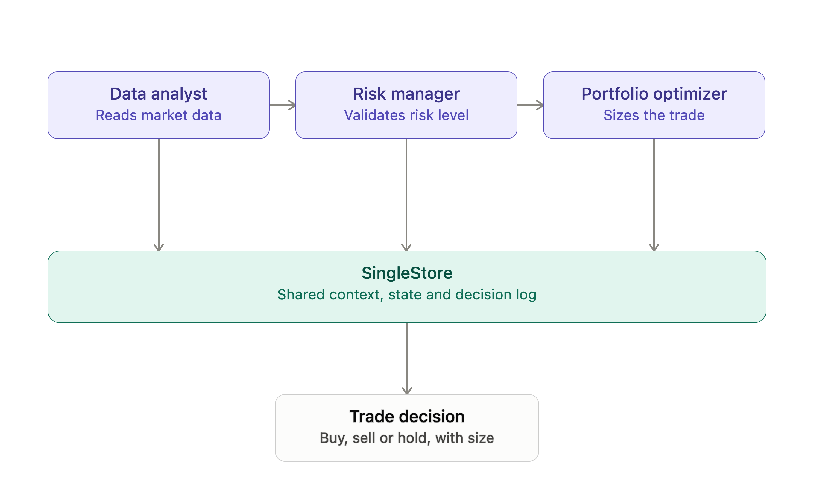
Figure 23-1. Chain of Responsibility.
We’ll now provide concrete implementations of the agents:
class DataAnalystAgent(TradingAgent):
"""Stage 1: Analyzes market data and sentiment."""
def load_data(self, context: TradingContext) -> TradingContext:
context.price_data = get_recent_ticks(context.symbol)
context.sentiment_data = get_recent_sentiment(context.symbol)
context.position_data = get_portfolio_position(context.symbol)
return context
def make_decision(self, context: TradingContext) -> AgentDecision:
prompt = f"""You are a Data Analyst. Analyze this market data for {context.symbol}.
Price Data: {context.price_data}
Sentiment: {context.sentiment_data}
Current Position: {context.position_data}
Provide a trading recommendation (BUY, SELL, or HOLD) based on technical and sentiment analysis.
Respond ONLY with valid JSON in this exact format:
{{"recommendation": "BUY", "confidence": 0.75, "reasoning": "Strong positive sentiment with price momentum"}}"""
response = self.call_llm([{"role": "user", "content": prompt}])
try:
cleaned = response.strip()
if cleaned.startswith("```"):
cleaned = cleaned.split("```")[1]
if cleaned.startswith("json"):
cleaned = cleaned[4:]
cleaned = cleaned.strip()
data = json.loads(cleaned)
return AgentDecision(
agent_id = self.agent_id,
recommendation = data["recommendation"],
confidence = float(data["confidence"]),
reasoning = data["reasoning"],
metadata = {"approved": True, "fallback": False}
)
except (json.JSONDecodeError, KeyError) as e:
print(f"!!! Parse error: {e}. Using fallback.")
return AgentDecision(
agent_id = self.agent_id,
recommendation = "HOLD",
confidence = 0.5,
reasoning = "Unable to parse LLM response",
metadata = {"fallback": True, "error": str(e)}
)
class RiskManagerAgent(TradingAgent):
"""Stage 2: Reviews and validates recommendations."""
def load_data(self, context: TradingContext) -> TradingContext:
context.recent_decisions = get_recent_decisions(context.symbol)
return context
def make_decision(self, context: TradingContext) -> AgentDecision:
analyst_decision = context.agent_decisions[-1]
prompt = f"""You are a Risk Manager. Review this trading recommendation for {context.symbol}.
Analyst Recommendation: {analyst_decision.recommendation}
Analyst Confidence: {analyst_decision.confidence * 100:.0f}%
Analyst Reasoning: {analyst_decision.reasoning}
Recent Trading Activity: {context.recent_decisions}
Assess risk factors:
- Is confidence level adequate (>60%)?
- Are we trading too frequently?
- Is the recommendation reasonable given recent activity?
Approve, modify, or reject the recommendation.
Respond ONLY with valid JSON in this exact format:
{{"recommendation": "BUY", "confidence": 0.80, "reasoning": "Approved with high confidence", "approved": true}}"""
response = self.call_llm([{"role": "user", "content": prompt}])
try:
cleaned = response.strip()
if cleaned.startswith("```"):
cleaned = cleaned.split("```")[1]
if cleaned.startswith("json"):
cleaned = cleaned[4:]
cleaned = cleaned.strip()
data = json.loads(cleaned)
return AgentDecision(
agent_id = self.agent_id,
recommendation = data["recommendation"],
confidence = float(data["confidence"]),
reasoning = data["reasoning"],
metadata = {
"approved": data.get("approved", True),
"fallback": False
}
)
except (json.JSONDecodeError, KeyError) as e:
print(f"!!! Parse error: {e}. Defaulting to HOLD.")
return AgentDecision(
agent_id = self.agent_id,
recommendation = "HOLD",
confidence = 0.5,
reasoning = "Risk assessment failed - defaulting to HOLD",
metadata = {"approved": False, "fallback": True, "error": str(e)}
)
class PortfolioOptimizerAgent(TradingAgent):
"""Stage 3: Optimizes for portfolio balance and diversification."""
def load_data(self, context: TradingContext) -> TradingContext:
context.portfolio_data = get_all_positions()
return context
def make_decision(self, context: TradingContext) -> AgentDecision:
risk_decision = context.agent_decisions[-1]
prompt = f"""You are a Portfolio Optimizer. Finalize this trade decision for {context.symbol}.
Risk-Approved Recommendation: {risk_decision.recommendation}
Risk Manager Confidence: {risk_decision.confidence * 100:.0f}%
Risk Manager Notes: {risk_decision.reasoning}
Full Portfolio: {context.portfolio_data}
Consider:
- Does this improve diversification?
- What is the optimal trade size (10-100 shares)?
- Should we proceed with this trade?
Provide final recommendation and trade size.
Respond ONLY with valid JSON in this exact format:
{{"recommendation": "BUY", "confidence": 0.85, "reasoning": "Improves diversification", "trade_size": 25}}"""
response = self.call_llm([{"role": "user", "content": prompt}])
try:
cleaned = response.strip()
if cleaned.startswith("```"):
cleaned = cleaned.split("```")[1]
if cleaned.startswith("json"):
cleaned = cleaned[4:]
cleaned = cleaned.strip()
data = json.loads(cleaned)
return AgentDecision(
agent_id = self.agent_id,
recommendation = data["recommendation"],
confidence = float(data["confidence"]),
reasoning = data["reasoning"],
metadata = {
"trade_size": data.get("trade_size", 10),
"approved": True,
"fallback": False
}
)
except (json.JSONDecodeError, KeyError) as e:
print(f"!!! Parse error: {e}. Defaulting to HOLD.")
return AgentDecision(
agent_id = self.agent_id,
recommendation = "HOLD",
confidence = 0.5,
reasoning = "Optimization failed - defaulting to HOLD",
metadata = {
"trade_size": 0,
"approved": False,
"fallback": True,
"error": str(e)
}
)
These concrete agent classes implement a three-stage decision pipeline, with each agent applying its own analytics before passing control downstream.
The DataAnalystAgent performs the initial technical and sentiment review, using recent price history, sentiment metrics and portfolio exposure to generate a structured LLM-driven recommendation.
The RiskManagerAgent then evaluates that proposal against recent trading activity and confidence thresholds, acting as a governance checkpoint that can approve, adjust or reject the recommendation based on risk constraints.
Finally, the PortfolioOptimizerAgent incorporates full-portfolio context to determine whether the trade improves diversification and to calculate an appropriate position size.
Together, these agents demonstrate a layered decision architecture where each stage enriches the shared context, applies its own reasoning logic and contributes to a final, auditable trading action.
Next, we’ll provide the orchestration and execution:
def run_trading_pipeline(symbol: str, execute: bool = False) -> TradingContext:
"""Run the complete multi-agent trading pipeline."""
print(f"\n{'=' * 60}")
print(f"[SYSTEM] MULTI-AGENT TRADING SYSTEM: {symbol}")
print(f"{'=' * 60}")
analyst = DataAnalystAgent("data_analyst")
risk_mgr = RiskManagerAgent("risk_manager")
optimizer = PortfolioOptimizerAgent("portfolio_optimizer")
analyst.set_next(risk_mgr).set_next(optimizer)
context = TradingContext(symbol = symbol)
context = analyst.process(context)
final_decision = context.agent_decisions[-1]
print(f"\n{'=' * 60}")
print(f"[FINAL] DECISION")
print(f"{'=' * 60}")
print(f"Action: {final_decision.recommendation}")
print(f"Trade Size: {final_decision.metadata.get('trade_size', 0)} shares")
print(f"Confidence: {final_decision.confidence * 100:.0f}%")
print(f"Approved: {final_decision.metadata.get('approved', False)}")
print(f"Fallback: {final_decision.metadata.get('fallback', False)}")
if execute and final_decision.recommendation in ["BUY", "SELL"]:
trade_size = final_decision.metadata.get("trade_size", 10)
execute_trade(symbol, final_decision.recommendation, trade_size)
elif not execute:
print("\n[INFO] Run with execute = True to execute trades")
return context
The orchestration layer organizes the individual agents into a complete end-to-end decision pipeline and coordinates execution.
The run_trading_pipeline function constructs the Chain of Responsibility, linking the Data Analyst, Risk Manager and Portfolio Optimizer and then initializes a TradingContext that flows through all stages. As each agent processes the context, decisions are accumulated, logged and surfaced for inspection.
After the final agent completes its optimization step, the system presents the consolidated recommendation and, if execution is enabled, automatically triggers a trade through the database-backed execution module. This orchestration function demonstrates how a modular agent stack can be composed into a deterministic, auditable workflow that delivers fully automated or semi-automated trading actions backed by real-time data stored in a database system.
We’re now ready to run the code so, first, we’ll create a database connection:
from sqlalchemy import *
db_connection = create_engine(connection_url)
Next, we’ll create our database tables:
def setup_database_schema():
'''Create all required tables for the trading system.'''
print("Dropping existing tables...")
execute_db("DROP TABLE IF EXISTS agent_decisions")
execute_db("DROP TABLE IF EXISTS portfolio")
execute_db("DROP TABLE IF EXISTS stock_sentiment")
execute_db("DROP TABLE IF EXISTS tick")
print("Existing tables dropped")
execute_db('''
CREATE TABLE IF NOT EXISTS tick (
symbol VARCHAR(10),
ts DATETIME SERIES TIMESTAMP,
open NUMERIC(18, 2),
high NUMERIC(18, 2),
low NUMERIC(18, 2),
close NUMERIC(18, 2),
volume INT,
PRIMARY KEY (symbol, ts)
)
''')
execute_db('''
CREATE TABLE IF NOT EXISTS stock_sentiment (
headline VARCHAR(250),
compound FLOAT,
positive FLOAT,
negative FLOAT,
neutral FLOAT,
url TEXT,
publisher VARCHAR(30),
ts DATETIME,
symbol VARCHAR(10),
PRIMARY KEY (symbol, ts, headline(100))
)
''')
execute_db('''
CREATE TABLE IF NOT EXISTS portfolio (
symbol VARCHAR(10) PRIMARY KEY,
shares_held INT DEFAULT 0,
purchase_date DATE,
purchase_price NUMERIC(18, 2)
)
''')
execute_db('''
CREATE TABLE IF NOT EXISTS agent_decisions (
agent_id VARCHAR(50),
decision_timestamp DATETIME,
symbol VARCHAR(10),
action VARCHAR(10),
confidence DECIMAL(5, 4),
reasoning TEXT,
data_sources VARCHAR(100),
PRIMARY KEY (symbol, decision_timestamp, agent_id)
)
''')
print("Database schema created successfully!")
setup_database_schema()
The setup_database_schema function drops any existing objects to provide a clean baseline and then creates four purpose-built tables: tick for time-series market data, stock_sentiment for aggregated sentiment signals, portfolio for current holdings and agent_decisions for a complete audit trail of all agent outputs.
Example output:
Dropping existing tables...
Existing tables dropped
Database schema created successfully!
Next, we’ll load some sample data for testing:
def load_sample_data():
'''Load sample data with a distinct story per symbol, so agents see real signal instead of noise.
BBRQ-FX: clean breakout - steady uptrend, building volume, strongly positive sentiment
BJBY-FX: selloff with a late contrarian rumor - downtrend, panic volume, one bullish outlier headline
YWMG-FX: choppy/range-bound - deliberately balanced price and sentiment, plus a late volatility spike
'''
random.seed(SEED)
now = datetime.now()
symbols = ["BBRQ-FX", "BJBY-FX", "YWMG-FX"]
base_prices = {"BBRQ-FX": 180.0, "BJBY-FX": 140.0, "YWMG-FX": 380.0}
print("Loading sample tick data...")
for symbol in symbols:
base = base_prices[symbol]
for i in range(100):
ts = now - timedelta(hours = 48 - i * 0.5)
progress = i / 99
if symbol == "BBRQ-FX":
drift = progress * 30
price = base + drift + random.uniform(-1.5, 1.5)
volume = int(1_500_000 + progress * 4_000_000 + random.randint(-200000, 200000))
if i >= 95:
volume = int(volume * 1.8)
elif symbol == "BJBY-FX":
drift = -progress * 35
price = base + drift + random.uniform(-1.5, 1.5)
volume = int(1_500_000 + progress * 3_000_000 + random.randint(-200000, 200000))
if 80 <= i < 85:
volume = int(volume * 2.2)
if i >= 96:
price += 6
else:
cycle = 8 * random.uniform(0.8, 1.2) * ((i % 20) / 20 - 0.5)
price = base + cycle + random.uniform(-3, 3)
volume = int(2_000_000 + random.randint(-300000, 300000))
if i >= 97:
price += random.choice([-9, 9])
volume = int(volume * 2)
execute_db(
'''INSERT INTO tick (symbol, ts, open, high, low, close, volume)
VALUES (:symbol, :ts, :open, :high, :low, :close, :volume)''',
{
"symbol": symbol,
"ts": ts,
"open": price,
"high": price + 2,
"low": price - 2,
"close": price + random.uniform(-1, 1),
"volume": volume
}
)
print("Loading sample sentiment data...")
headline_bank = {
"positive": [
"Company reports record quarterly earnings",
"Analyst upgrades stock on strong growth outlook",
"New product launch exceeds expectations",
"Institutional investors increase holdings"
],
"negative": [
"Regulatory investigation raises concerns",
"Guidance cut spooks investors",
"Analyst downgrades on weak demand",
"Executive departure unsettles markets"
],
"neutral": [
"Market volatility continues amid mixed signals",
"Trading volume in line with recent average",
"Sector performance diverges across peers"
],
"rumor": [
"Unconfirmed report suggests takeover interest"
]
}
ywmg_buckets = ["positive"] * 7 + ["negative"] * 7 + ["neutral"] * 6
random.shuffle(ywmg_buckets)
for symbol in symbols:
for i in range(20):
ts = now - timedelta(days = random.randint(0, 7), seconds = i * 10)
if symbol == "BBRQ-FX":
is_positive = random.random() < 0.9
headline = random.choice(headline_bank["positive"] if is_positive else headline_bank["neutral"])
compound = random.uniform(0.6, 0.9) if is_positive else random.uniform(-0.05, 0.05)
elif symbol == "BJBY-FX":
if i == 0:
headline = headline_bank["rumor"][0]
compound = random.uniform(0.5, 0.7)
else:
is_negative = random.random() < 0.9
headline = random.choice(headline_bank["negative"] if is_negative else headline_bank["neutral"])
compound = random.uniform(-0.9, -0.6) if is_negative else random.uniform(-0.05, 0.05)
else:
bucket = ywmg_buckets[i]
headline = random.choice(headline_bank[bucket])
compound = {
"positive": random.uniform(0.3, 0.5),
"negative": random.uniform(-0.5, -0.3),
"neutral": random.uniform(-0.05, 0.05)
}[bucket]
execute_db(
'''INSERT INTO stock_sentiment (symbol, ts, headline, compound, publisher)
VALUES (:symbol, :ts, :headline, :compound, :publisher)''',
{
"symbol": symbol,
"ts": ts,
"headline": headline,
"compound": compound,
"publisher": "sample_data"
}
)
print("Sample data loaded successfully!")
load_sample_data()
To make the multi-agent trading system easy to explore and demonstrate, the sample data generator creates three fictitious tickers, each telling a distinct market story rather than random noise:
-
BBRQ-FXis built as a clean breakout: price climbs steadily over the trading window, trading volume builds alongside it and news sentiment is overwhelmingly positive. -
BJBY-FXtells the opposite story: a steady decline accompanied by a burst of heavy volume, with news sentiment turning sharply negative - except for one late, unconfirmed rumor of takeover interest, which gives the system a genuine piece of conflicting evidence to weigh. -
YWMG-FXis deliberately balanced: price moves sideways within a range and the mix of positive, negative and neutral headlines is kept even, so there’s no dominant signal in either direction.
Each agent in the chain draws on two pieces of market context: a price summary that includes the percentage change over the trading window alongside the current price, high, low and volume, and a sentiment summary that reports an average sentiment score together with a count of positive and negative headlines. Framing the price movement as a percentage change, rather than raw numbers alone, gives the language model a clear, unambiguous signal to reason over - a market that moved eight percent in a day reads very differently to a model than three numbers it has to compare itself.
Example output:
Loading sample tick data...
Loading sample sentiment data...
Sample data loaded successfully!
Example Queries
Let’s test the complete multi-agent trading pipeline in analysis-only mode.
context = run_trading_pipeline("BBRQ-FX", execute = False)
The system processes real-time signals through all agents without placing an actual trade. This allows us to inspect the full decision chain, verify agent behavior and validate the final recommendation in a safe, non-executing environment.
Example output:
============================================================
[SYSTEM] MULTI-AGENT TRADING SYSTEM: BBRQ-FX
============================================================
------------------------------------------------------------
[AGENT] DATA_ANALYST
------------------------------------------------------------
Recommendation: BUY
Confidence: 75%
Reasoning: Strong positive sentiment with price momentum
Metadata: {'approved': True, 'fallback': False}
------------------------------------------------------------
[AGENT] RISK_MANAGER
------------------------------------------------------------
Recommendation: BUY
Confidence: 75%
Reasoning: Approved based on strong positive sentiment and adequate confidence level
Metadata: {'approved': True, 'fallback': False}
------------------------------------------------------------
[AGENT] PORTFOLIO_OPTIMIZER
------------------------------------------------------------
Recommendation: BUY
Confidence: 85%
Reasoning: Improves diversification
Metadata: {'trade_size': 25, 'approved': True, 'fallback': False}
============================================================
[FINAL] DECISION
============================================================
Action: BUY
Trade Size: 25 shares
Confidence: 85%
Approved: True
Fallback: False
[INFO] Run with execute = True to execute trades
When ready, we can submit a live trade:
context = run_trading_pipeline("BBRQ-FX", execute = True)
The system not only evaluates the trading signal through all agent stages but also submits a live trade based on the final approved recommendation. After the Data Analyst, Risk Manager and Portfolio Optimizer complete their sequential assessments, the pipeline issues a buy, sell or hold order with the optimized trade size. This mode demonstrates the full end-to-end workflow, including automated execution.
Example output:
============================================================
[SYSTEM] MULTI-AGENT TRADING SYSTEM: BBRQ-FX
============================================================
------------------------------------------------------------
[AGENT] DATA_ANALYST
------------------------------------------------------------
Recommendation: BUY
Confidence: 75%
Reasoning: Strong positive sentiment with price momentum
Metadata: {'approved': True, 'fallback': False}
------------------------------------------------------------
[AGENT] RISK_MANAGER
------------------------------------------------------------
Recommendation: BUY
Confidence: 75%
Reasoning: Approved based on strong positive sentiment and adequate confidence level
Metadata: {'approved': True, 'fallback': False}
------------------------------------------------------------
[AGENT] PORTFOLIO_OPTIMIZER
------------------------------------------------------------
Recommendation: BUY
Confidence: 85%
Reasoning: Improves diversification
Metadata: {'trade_size': 25, 'approved': True, 'fallback': False}
============================================================
[FINAL] DECISION
============================================================
Action: BUY
Trade Size: 25 shares
Confidence: 85%
Approved: True
Fallback: False
*** TRADE EXECUTED: BUY 25 shares of BBRQ-FX @ $210.71
Let’s view the decision history:
def view_decision_history(symbol: str, limit: int = 10):
decisions = query_db(
'''SELECT agent_id, decision_timestamp, action, confidence, reasoning
FROM agent_decisions
WHERE symbol = :symbol
ORDER BY decision_timestamp DESC
LIMIT :limit''',
{"symbol": symbol, "limit": limit}
)
print(f"\n[HISTORY] Decision History for {symbol}")
print("=" * 80)
for d in decisions:
print(f"{d['decision_timestamp']} | {d['agent_id']:20} | {d['action']:6} | {d['confidence']*100:5.0f}%")
print(f" -> {d['reasoning']}\n")
view_decision_history("BBRQ-FX")
The view_decision_history utility provides an auditable record of all agent decisions for a given symbol. It queries the agent_decisions table and displays a reverse-chronological list of actions, confidence scores and associated reasoning. This function illustrates how a database system acts as the persistent memory layer for the agentic system, enabling post-hoc review, debugging, compliance checks and performance analysis across the full decision chain.
Example output:
[HISTORY] Decision History for BBRQ-FX
================================================================================
2026-07-05 13:31:16 | portfolio_optimizer | BUY | 85%
-> Improves diversification
2026-07-05 13:31:15 | risk_manager | BUY | 75%
-> Approved based on strong positive sentiment and adequate confidence level
2026-07-05 13:31:14 | data_analyst | BUY | 75%
-> Strong positive sentiment with price momentum
2026-07-05 13:31:13 | portfolio_optimizer | BUY | 85%
-> Improves diversification
2026-07-05 13:31:12 | risk_manager | BUY | 75%
-> Approved based on strong positive sentiment and adequate confidence level
2026-07-05 13:31:11 | data_analyst | BUY | 75%
-> Strong positive sentiment with price momentum
Finally, we’ll compare multiple stocks:
symbols = ["BBRQ-FX", "BJBY-FX", "YWMG-FX"]
results = {}
for symbol in symbols:
print(f"\n\n{'#' * 60}")
print(f"Analyzing {symbol}")
print(f"{'#' * 60}")
results[symbol] = run_trading_pipeline(symbol, execute = False)
print("\n\n[SUMMARY]")
print("=" * 60)
for symbol, ctx in results.items():
final = ctx.agent_decisions[-1]
print(f"{symbol:6} | {final.recommendation:4} | {final.confidence*100:5.0f}% | {final.metadata.get('trade_size', 0):3} shares")
This batch-processing loop runs the full multi-agent trading pipeline across multiple symbols and aggregates the results. Each stock is evaluated independently through the analyst, risk and portfolio-optimization stages, with all decisions stored in the database system. After processing, the script prints a consolidated summary showing the final recommendation, confidence level and suggested trade size for each asset. This demonstrates how the agentic architecture scales seamlessly across a portfolio and how a database system enables fast, repeatable multi-symbol analysis.
Example output:
############################################################
Analyzing BBRQ-FX
############################################################
============================================================
[SYSTEM] MULTI-AGENT TRADING SYSTEM: BBRQ-FX
============================================================
------------------------------------------------------------
[AGENT] DATA_ANALYST
------------------------------------------------------------
Recommendation: HOLD
Confidence: 80%
Reasoning: Current price is near the 24h high with strong positive sentiment, but recent volatility suggests caution.
Metadata: {'approved': True, 'fallback': False}
------------------------------------------------------------
[AGENT] RISK_MANAGER
------------------------------------------------------------
Recommendation: BUY
Confidence: 80%
Reasoning: Approved with high confidence due to strong positive sentiment and recent trading activity supporting a buy recommendation.
Metadata: {'approved': True, 'fallback': False}
------------------------------------------------------------
[AGENT] PORTFOLIO_OPTIMIZER
------------------------------------------------------------
Recommendation: BUY
Confidence: 85%
Reasoning: Improves diversification
Metadata: {'trade_size': 25, 'approved': True, 'fallback': False}
============================================================
[FINAL] DECISION
============================================================
Action: BUY
Trade Size: 25 shares
Confidence: 85%
Approved: True
Fallback: False
[INFO] Run with execute = True to execute trades
############################################################
Analyzing BJBY-FX
############################################################
============================================================
[SYSTEM] MULTI-AGENT TRADING SYSTEM: BJBY-FX
============================================================
------------------------------------------------------------
[AGENT] DATA_ANALYST
------------------------------------------------------------
Recommendation: SELL
Confidence: 85%
Reasoning: Significant negative sentiment and a sharp price decline indicate a bearish trend.
Metadata: {'approved': True, 'fallback': False}
------------------------------------------------------------
[AGENT] RISK_MANAGER
------------------------------------------------------------
Recommendation: SELL
Confidence: 85%
Reasoning: Approved due to significant negative sentiment and a bearish trend
Metadata: {'approved': True, 'fallback': False}
------------------------------------------------------------
[AGENT] PORTFOLIO_OPTIMIZER
------------------------------------------------------------
Recommendation: SELL
Confidence: 85%
Reasoning: Significant negative sentiment and bearish trend
Metadata: {'trade_size': 25, 'approved': True, 'fallback': False}
============================================================
[FINAL] DECISION
============================================================
Action: SELL
Trade Size: 25 shares
Confidence: 85%
Approved: True
Fallback: False
[INFO] Run with execute = True to execute trades
############################################################
Analyzing YWMG-FX
############################################################
============================================================
[SYSTEM] MULTI-AGENT TRADING SYSTEM: YWMG-FX
============================================================
------------------------------------------------------------
[AGENT] DATA_ANALYST
------------------------------------------------------------
Recommendation: HOLD
Confidence: 65%
Reasoning: Negative sentiment and recent price decline suggest caution; wait for clearer signals.
Metadata: {'approved': True, 'fallback': False}
------------------------------------------------------------
[AGENT] RISK_MANAGER
------------------------------------------------------------
Recommendation: HOLD
Confidence: 65%
Reasoning: Recommendation is reasonable given recent negative sentiment and price decline; caution is warranted.
Metadata: {'approved': True, 'fallback': False}
------------------------------------------------------------
[AGENT] PORTFOLIO_OPTIMIZER
------------------------------------------------------------
Recommendation: HOLD
Confidence: 65%
Reasoning: Caution is warranted due to recent negative sentiment and price decline
Metadata: {'trade_size': 0, 'approved': True, 'fallback': False}
============================================================
[FINAL] DECISION
============================================================
Action: HOLD
Trade Size: 0 shares
Confidence: 65%
Approved: True
Fallback: False
[INFO] Run with execute = True to execute trades
[SUMMARY]
============================================================
BBRQ-FX | BUY | 85% | 25 shares
BJBY-FX | SELL | 85% | 25 shares
YWMG-FX | HOLD | 65% | 0 shares
Summary
Because the three tickers carry genuinely different signal strength, the pipeline produces a genuinely different outcome for each one.
A clear uptrend paired with strongly positive sentiment leads to a confident buy recommendation, a clear downtrend paired with strongly negative sentiment leads to a confident sell, and a balanced, directionless market leads the system to hold, with lower confidence, since there is no strong case in either direction.
This variation is also what lets the Chain of Responsibility pattern demonstrate its value, because each agent evaluates the same evidence independently, so a later agent can reach a different conclusion than the one before it - a Risk Manager, for instance, may be more willing to act decisively on strong sentiment than a Data Analyst.
That disagreement and the trail of reasoning behind it, is what makes a multi-agent pipeline more interesting to study than a single model call, since each stage adds its own perspective and the final decision reflects all of them.
In the example application, we examined how agents use SingleStore to fetch market signals, sentiment indicators, portfolio positions and historical decisions, turning the database into a high-performance feature store. We also saw how agents write recommendations, confidence scores and rationales back into agent_decisions, creating a full audit log suitable for compliance, debugging or model improvement. This grounding in real data is essential for agentic systems, especially as large language models grow more powerful but still require structured context to operate safely in domains like finance.
The chapter also highlighted patterns central to practical agent design, such as structured outputs, deterministic pipelines, downstream validation through a Risk Manager and safe trade execution through database updates. None of these patterns are specific to trading - they apply just as well to supply chain agents, security agents, customer support routing, scientific workflows and any scenario where an agentic system must reason over dynamic data.
With this final chapter, the book completes its arc. Starting with multi-model data and moving through streaming, machine learning and AI, we close by showing how these capabilities converge to support next-generation autonomous systems.
Chapter 24: Conclusions
Introduction
When we started this book, we set out a simple premise: rather than stitching together multiple specialized systems to support a modern, data-intensive application, SingleStore could serve as the single, unified platform underneath it all. Over the preceding chapters, we put that premise to the test across time series, geospatial, JSON, full-text and vector data, streaming pipelines, machine learning workflows and, finally, AI and agentic systems. Looking back across all of it, the premise holds up well.
What We Covered
Part 1 grounded us in SingleStore’s multi-model foundations. We worked with time series stock data, geospatial data for the London Underground, JSON-based library inventories, full-text search over synthetic journal articles and vector embeddings for Fashion-MNIST images. Each chapter made the same underlying point in a different way: SingleStore didn’t need a separate specialized engine bolted on for each of these data types. The same distributed SQL engine handled all of them, with dedicated functions and indexes for each.
Part 2 moved from storage to motion. We used SingleStore Pipelines with Apache Kafka to ingest streaming IoT sensor data and, in the same chapter, used SingleStore as a Kafka producer to push data back out. We connected Apache Spark to SingleStore, explored query pushdown and used GraphFrames for graph analytics. Finally, we used Change Data Capture to keep a SingleStore database continuously in sync with a MongoDB Atlas cluster. Across all three chapters, the theme was consistency: data flowing in from multiple sources and directions, landing in the same place, ready to query.
Part 3 put that data to work. We built predictive models for loan approvals, credit card fraud detection, image classification, movie recommendations, crop yield prediction, crime hotspot analysis and in-database sentiment analysis using WebAssembly, and we built a feature store with Feast. Whatever the modeling technique, be it logistic regression, SHAP and LIME explanations, collaborative filtering, Keras and TensorFlow or scikit-learn, SingleStore consistently played the same two roles: a place to store and query the data driving the models, and a place to store and serve the results, embeddings and features those models produced.
Part 4 brought everything together around large language models and AI agents. We used LangChain and LlamaIndex to build natural language interfaces over stock market data, explored multimodal RAG across PDFs, images and voice, ran fully local LLMs with Ollama, connected agents to real-time data through MCP and, in our final chapter, built a multi-agent trading system where SingleStore served simultaneously as feature store, memory layer, coordination mechanism and audit log for a Chain of Responsibility pipeline of cooperating agents.
Recurring Themes
A few ideas surfaced again and again across this book, regardless of the specific technology in play:
-
Unification over fragmentation. Whether the task involved SQL and JSON, SQL and vectors or SQL and geospatial functions, SingleStore consistently let us combine data models in a single query rather than joining across separate systems.
-
Synthetic and fictitious data, used deliberately. Many of our datasets, from the
-FXstock tickers to the synthetic loan, agriculture and movie recommendation data, were generated rather than scraped from real, licensed sources. This kept the book’s examples reproducible, free of licensing complications and safe to run without touching sensitive or proprietary data, while still preserving the statistical texture of real-world data. -
From data to decisions. Book by book, we moved further up the stack: from storing data, to querying it, to modeling it, to having language models and agents reason over it directly. SingleStore’s role stayed constant even as the applications on top of it became more sophisticated.
-
Real-time as the default, not the exception. Pipelines, Change Data Capture, streaming sentiment scores and live agent decision logs all point to the same underlying capability: SingleStore is built to keep data current, not just to store it.
Where to Go from Here
The code, notebooks and datasets for every chapter are available in the book’s GitHub repo, singlestore-cookbook.github.io. Each chapter’s examples are generally self-contained. If a particular pattern in this book, be it vector search, agentic pipelines or feature stores, maps onto a problem in front of you, that’s a good place to start experimenting further.
Data infrastructure will keep evolving and new specialized systems will keep appearing to solve narrow problems well. But the case we’ve made throughout this book is that many of these problems, perhaps more than we tend to assume, can be solved within a single, unified platform. We hope the examples in this book give you a solid, practical starting point for finding out where that’s true for your own applications.